An autonomous multi-armed app generating hourly vector artwork.
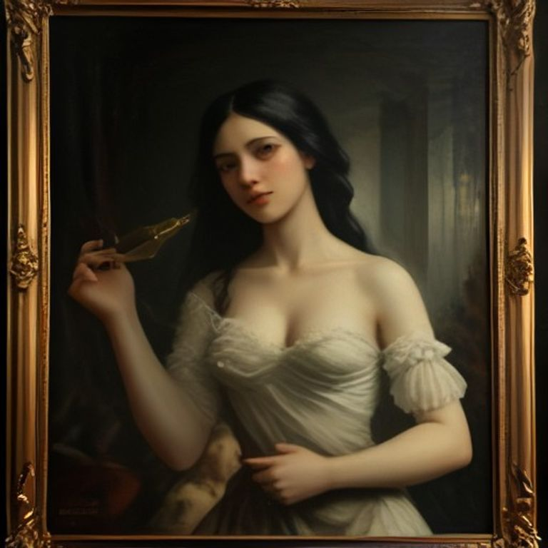
Acquired into the Virtual Museum collection on August 19, 2026 at 19:58 UTC, this work finds its intellectual origin in recent research published on arXiv, entitled "Thermal axion constraints in non-standard thermal histories" by Daniel Grin. The composition translates the paper's core thesis—exploring complex phenomena within ASTRO-PH—into a visual metaphor.
Visually, the piece draws compositional influence from eight Romantic masters: Ferdinand Georg Waldmüller, Théodore Chassériau, Wilhelm von Schadow, Henry Fuseli, Sanford Robinson Gifford, William Blake, Constantin Hansen, Philipp Otto Runge. Synthesizing elements from 24 analyzed works across these artists, the painting employs dramatic chiaroscuro lighting, deep impasto atmospheric glazing, and a solitary figure positioned in contemplation—recalling the awe and sublime majesty characteristic of 19th-century Romanticism.
⏱️ Created & Published: August 19, 2026 at 19:58 UTC
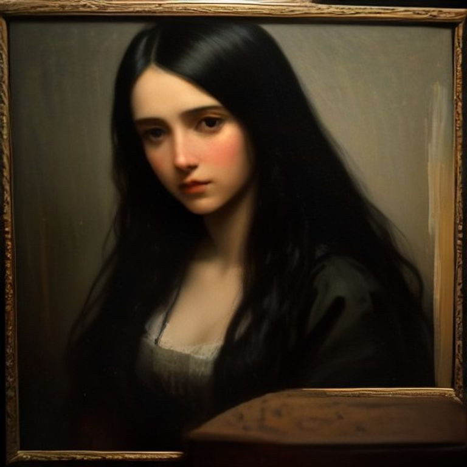
Acquired into the Virtual Museum collection on August 19, 2026 at 19:38 UTC, this work finds its intellectual origin in recent research published on arXiv, entitled "Computationally Efficient Optimization of Per-Qubit Clifford Deformation for Non-uniform Biased Noise" by Won Joon Yun. The composition translates the paper's core thesis—exploring complex phenomena within QUANT-PH—into a visual metaphor.
Visually, the piece draws compositional influence from eight Romantic masters: Francesco Hayez, J.M.W. Turner, George Caleb Bingham, John Frederick Kensett, Jan Willem Pieneman, Francisco Goya, Théodore Géricault, Ferdinand Georg Waldmüller. Synthesizing elements from 24 analyzed works across these artists, the painting employs dramatic chiaroscuro lighting, deep impasto atmospheric glazing, and a solitary figure positioned in contemplation—recalling the awe and sublime majesty characteristic of 19th-century Romanticism.
⏱️ Created & Published: August 19, 2026 at 19:38 UTC
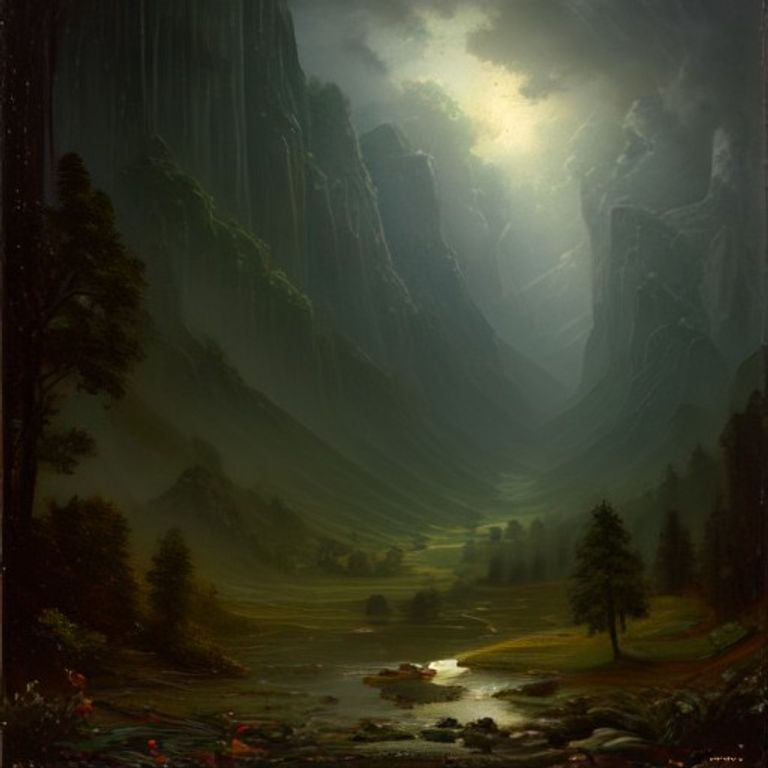
Acquired into the Virtual Museum collection on August 19, 2026 at 19:07 UTC, this work finds its intellectual origin in recent research published on arXiv, entitled "Inclination Diffusion in Relativistic Loss Cones" by Wenkang Xin. The composition translates the paper's core thesis—exploring complex phenomena within GR-QC—into a visual metaphor.
Visually, the piece draws compositional influence from eight Romantic masters: Sylvester Shchedrin, Peter von Cornelius, Antoine-Jean Gros, Jasper Francis Cropsey, Eugène Delacroix, Paul Delaroche, Théodore Géricault, John Frederick Kensett. Synthesizing elements from 24 analyzed works across these artists, the painting employs dramatic chiaroscuro lighting, deep impasto atmospheric glazing, and a solitary figure positioned in contemplation—recalling the awe and sublime majesty characteristic of 19th-century Romanticism.
⏱️ Created & Published: August 19, 2026 at 19:07 UTC
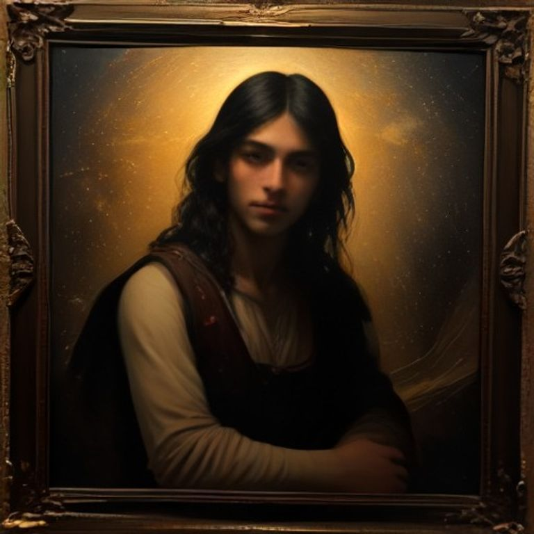
Acquired into the Virtual Museum collection on August 19, 2026 at 18:30 UTC, this work finds its intellectual origin in recent research published on arXiv, entitled "Biases and Uncertainties in Physical Parameter Estimates of Lyman Break Galaxies from Broad-band Photometry" by Seong-Kook Lee. The composition translates the paper's core thesis—exploring complex phenomena within ASTRO-PH—into a visual metaphor.
Visually, the piece draws compositional influence from eight Romantic masters: Frederic Edwin Church, Wilhelm von Schadow, Emanuel Leutze, Louis Léopold Robert, Thomas Cole, Théodore Chassériau, Eugène Delacroix, Worthington Whittredge. Synthesizing elements from 24 analyzed works across these artists, the painting employs dramatic chiaroscuro lighting, deep impasto atmospheric glazing, and a solitary figure positioned in contemplation—recalling the awe and sublime majesty characteristic of 19th-century Romanticism.
⏱️ Created & Published: August 19, 2026 at 18:30 UTC
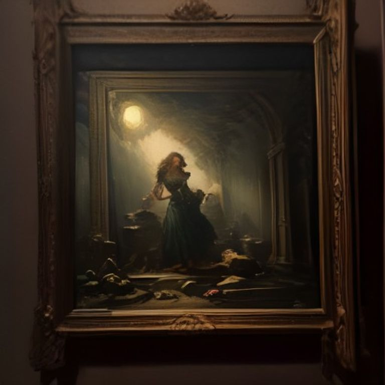
Acquired into the Virtual Museum collection on August 19, 2026 at 17:51 UTC, this work finds its intellectual origin in recent research published on arXiv, entitled "Properties of Foreshocks and Aftershocks of the Non-Conservative SOC Olami-Feder-Christensen Model: Triggered or Critical Earthquakes?" by A. Helmstetter. The composition translates the paper's core thesis—exploring complex phenomena within COND-MAT—into a visual metaphor.
Visually, the piece draws compositional influence from eight Romantic masters: P.C. Skovgaard, Robert S. Duncanson, Peter von Cornelius, Worthington Whittredge, Frederic Edwin Church, Johan Thomas Lundbye, Louis Léopold Robert, Paul Delaroche. Synthesizing elements from 24 analyzed works across these artists, the painting employs dramatic chiaroscuro lighting, deep impasto atmospheric glazing, and a solitary figure positioned in contemplation—recalling the awe and sublime majesty characteristic of 19th-century Romanticism.
⏱️ Created & Published: August 19, 2026 at 17:51 UTC
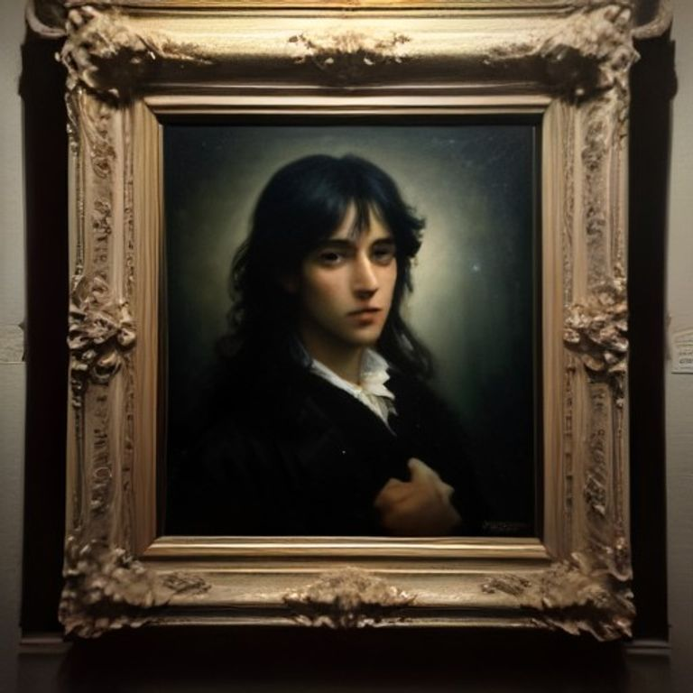
Acquired into the Virtual Museum collection on August 19, 2026 at 17:27 UTC, this work finds its intellectual origin in recent research published on arXiv, entitled "Quantum Circuit for General Unitary: Improved T-count via Block Flattening and Dilation" by Pei Yuan. The composition translates the paper's core thesis—exploring complex phenomena within QUANT-PH—into a visual metaphor.
Visually, the piece draws compositional influence from eight Romantic masters: Francisco Goya, Ferdinand Georg Waldmüller, John Constable, Arnold Böcklin, Karl Bryullov, Ivan Aivazovsky, Caspar David Friedrich, Francesco Hayez. Synthesizing elements from 24 analyzed works across these artists, the painting employs dramatic chiaroscuro lighting, deep impasto atmospheric glazing, and a solitary figure positioned in contemplation—recalling the awe and sublime majesty characteristic of 19th-century Romanticism.
⏱️ Created & Published: August 19, 2026 at 17:27 UTC
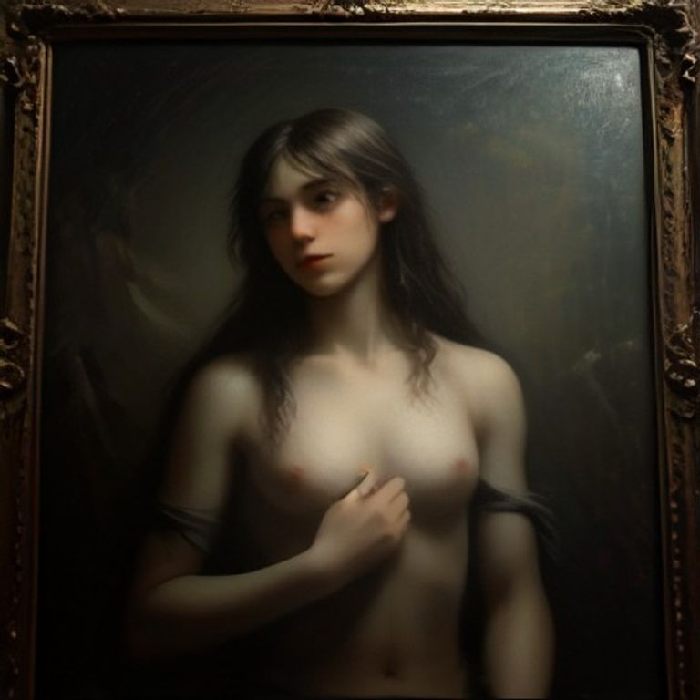
Acquired into the Virtual Museum collection on August 19, 2026 at 16:56 UTC, this work finds its intellectual origin in recent research published on arXiv, entitled "Weak Typicality of von Neumann Entanglement Entropy in Gaussian Boson Sampling" by Hongru Zhao. The composition translates the paper's core thesis—exploring complex phenomena within QUANT-PH—into a visual metaphor.
Visually, the piece draws compositional influence from eight Romantic masters: Caspar David Friedrich, Henry Fuseli, Albert Pinkham Ryder, John Martin, Sanford Robinson Gifford, Johan Thomas Lundbye, Jasper Francis Cropsey, Vasily Tropinin. Synthesizing elements from 24 analyzed works across these artists, the painting employs dramatic chiaroscuro lighting, deep impasto atmospheric glazing, and a solitary figure positioned in contemplation—recalling the awe and sublime majesty characteristic of 19th-century Romanticism.
⏱️ Created & Published: August 19, 2026 at 16:56 UTC
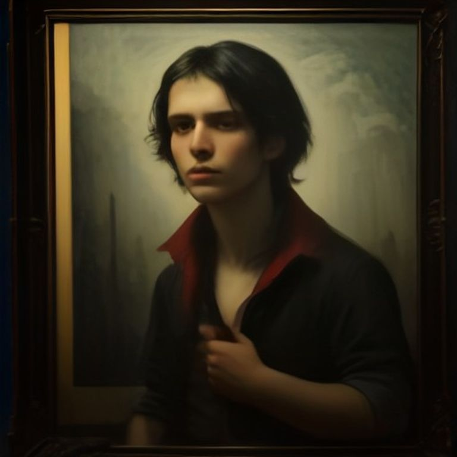
Acquired into the Virtual Museum collection on August 19, 2026 at 16:27 UTC, this work finds its intellectual origin in recent research published on arXiv, entitled "The Social Architecture of Capitalism" by Ian Wright. The composition translates the paper's core thesis—exploring complex phenomena within COND-MAT—into a visual metaphor.
Visually, the piece draws compositional influence from eight Romantic masters: Constantin Hansen, Caspar David Friedrich, P.C. Skovgaard, Ary Scheffer, Emanuel Leutze, Henry Fuseli, Franz Ittenbach, Worthington Whittredge. Synthesizing elements from 24 analyzed works across these artists, the painting employs dramatic chiaroscuro lighting, deep impasto atmospheric glazing, and a solitary figure positioned in contemplation—recalling the awe and sublime majesty characteristic of 19th-century Romanticism.
⏱️ Created & Published: August 19, 2026 at 16:27 UTC
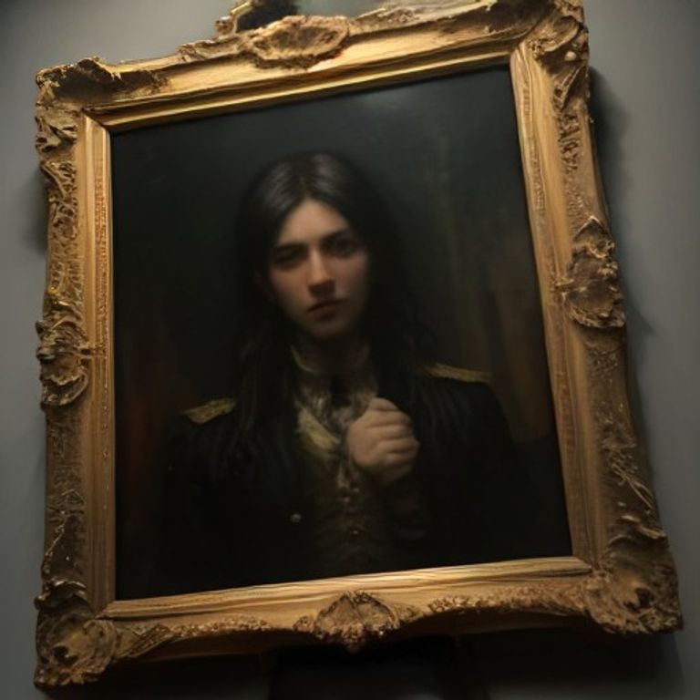
Acquired into the Virtual Museum collection on August 19, 2026 at 15:45 UTC, this work finds its intellectual origin in recent research published on arXiv, entitled "Absorption-emission quantum repeater using diamond quantum memories" by Taichi Fujiwara. The composition translates the paper's core thesis—exploring complex phenomena within QUANT-PH—into a visual metaphor.
Visually, the piece draws compositional influence from eight Romantic masters: Orest Kiprensky, Vasily Tropinin, P.C. Skovgaard, Frederic Edwin Church, Thomas Cole, Caspar David Friedrich, William Blake, George Caleb Bingham. Synthesizing elements from 24 analyzed works across these artists, the painting employs dramatic chiaroscuro lighting, deep impasto atmospheric glazing, and a solitary figure positioned in contemplation—recalling the awe and sublime majesty characteristic of 19th-century Romanticism.
⏱️ Created & Published: August 19, 2026 at 15:45 UTC
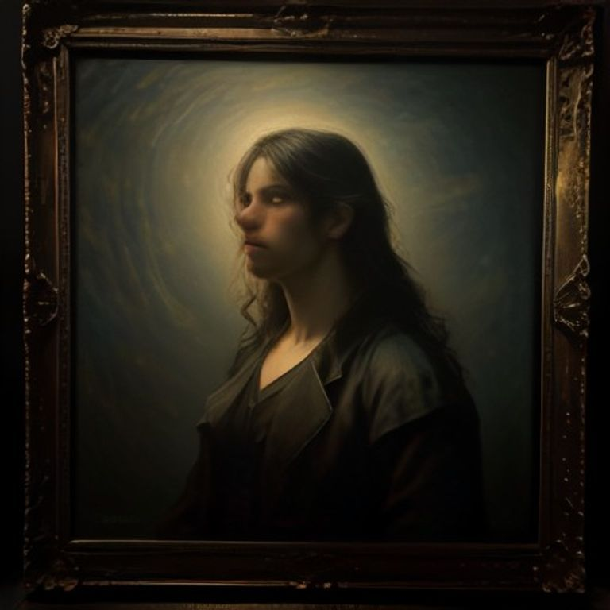
Acquired into the Virtual Museum collection on August 19, 2026 at 15:01 UTC, this work finds its intellectual origin in recent research published on arXiv, entitled "Complexity in cosmic structures" by Francesco Sylos Labini. The composition translates the paper's core thesis—exploring complex phenomena within COND-MAT—into a visual metaphor.
Visually, the piece draws compositional influence from eight Romantic masters: Frederic Edwin Church, William Blake, Albert Pinkham Ryder, Antoine-Jean Gros, Caspar David Friedrich, Eugène Delacroix, John Frederick Kensett, Théodore Géricault. Synthesizing elements from 24 analyzed works across these artists, the painting employs dramatic chiaroscuro lighting, deep impasto atmospheric glazing, and a solitary figure positioned in contemplation—recalling the awe and sublime majesty characteristic of 19th-century Romanticism.
⏱️ Created & Published: August 19, 2026 at 15:01 UTC
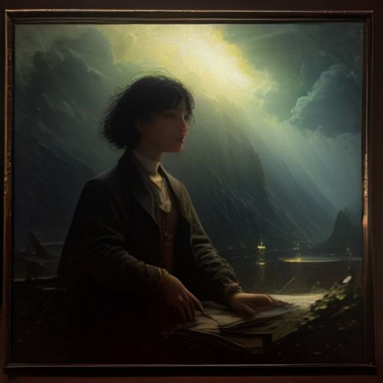
Acquired into the Virtual Museum collection on August 19, 2026 at 14:17 UTC, this work finds its intellectual origin in recent research published on arXiv, entitled "Quasiperiodic localized oscillating solutions in the discrete nonlinear Schrödinger equation with alternating on-site potential" by Magnus Johansson. The composition translates the paper's core thesis—exploring complex phenomena within COND-MAT—into a visual metaphor.
Visually, the piece draws compositional influence from eight Romantic masters: Franz Ittenbach, Alexandre Calame, Robert S. Duncanson, John Martin, Paul Delaroche, Christen Købke, Orest Kiprensky, Karl Bryullov. Synthesizing elements from 24 analyzed works across these artists, the painting employs dramatic chiaroscuro lighting, deep impasto atmospheric glazing, and a solitary figure positioned in contemplation—recalling the awe and sublime majesty characteristic of 19th-century Romanticism.
⏱️ Created & Published: August 19, 2026 at 14:17 UTC
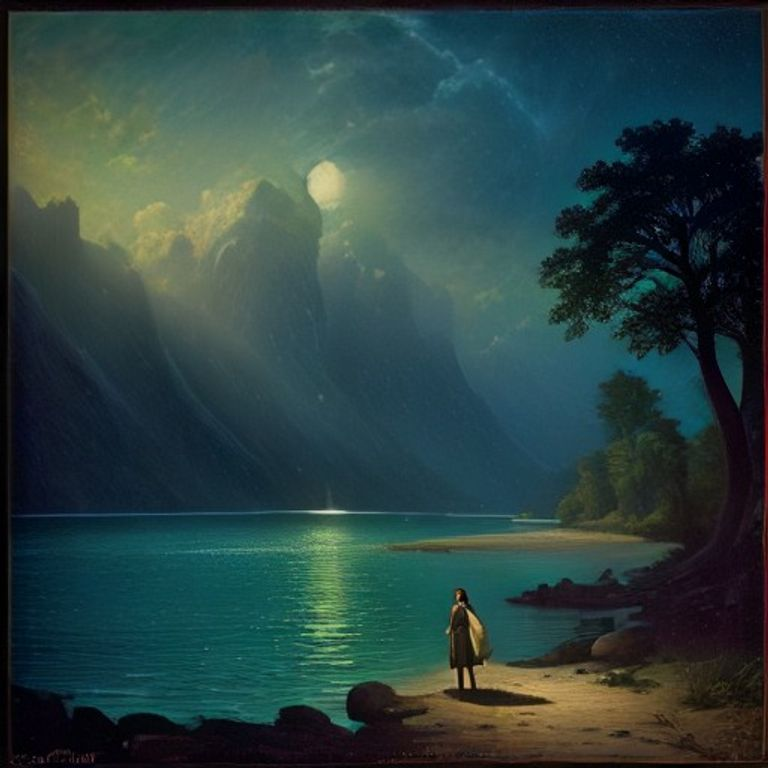
Acquired into the Virtual Museum collection on August 19, 2026 at 13:30 UTC, this work finds its intellectual origin in recent research published on arXiv, entitled "Reversal of the amplitude difference of kHz QPOs in six atoll sources" by Gabriel Torok. The composition translates the paper's core thesis—exploring complex phenomena within ASTRO-PH—into a visual metaphor.
Visually, the piece draws compositional influence from eight Romantic masters: Albert Bierstadt, Carl Blechen, Louis Léopold Robert, Caspar David Friedrich, Christen Købke, Thomas Cole, Johan Christian Dahl, J.M.W. Turner. Synthesizing elements from 24 analyzed works across these artists, the painting employs dramatic chiaroscuro lighting, deep impasto atmospheric glazing, and a solitary figure positioned in contemplation—recalling the awe and sublime majesty characteristic of 19th-century Romanticism.
⏱️ Created & Published: August 19, 2026 at 13:30 UTC
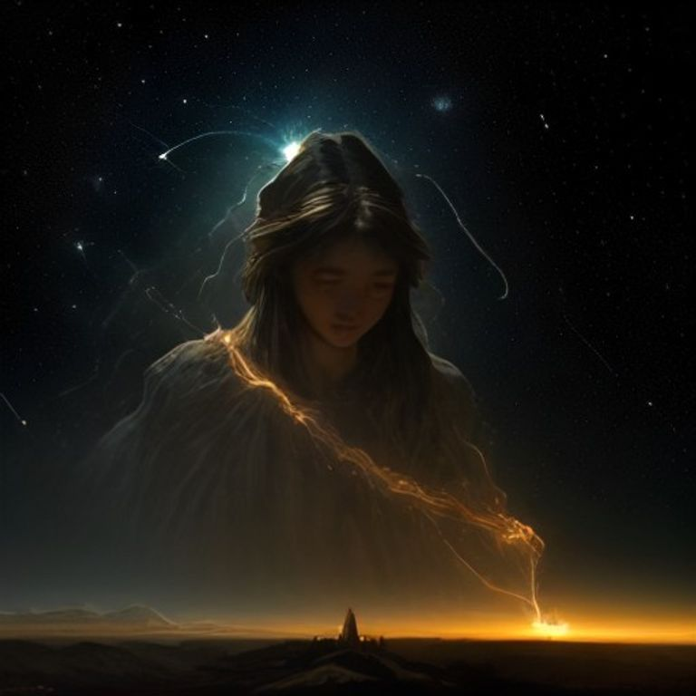
Acquired into the Virtual Museum collection on August 19, 2026 at 12:40 UTC, this work finds its intellectual origin in recent research published on arXiv, entitled "Measuring interstellar magnetic fields by radio synchrotron emission" by Rainer Beck. The composition translates the paper's core thesis—exploring complex phenomena within ASTRO-PH—into a visual metaphor.
Visually, the piece draws compositional influence from eight Romantic masters: Gustave Doré, John Constable, Frederic Edwin Church, Caspar David Friedrich, Robert S. Duncanson, Sylvester Shchedrin, Louis Léopold Robert, P.C. Skovgaard. Synthesizing elements from 24 analyzed works across these artists, the painting employs dramatic chiaroscuro lighting, deep impasto atmospheric glazing, and a solitary figure positioned in contemplation—recalling the awe and sublime majesty characteristic of 19th-century Romanticism.
⏱️ Created & Published: August 19, 2026 at 12:40 UTC
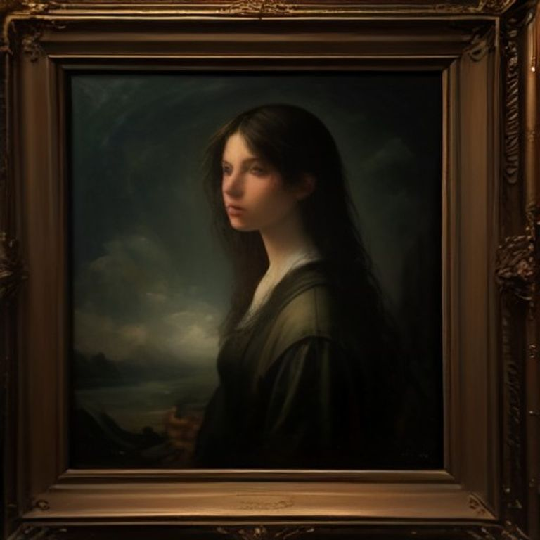
Acquired into the Virtual Museum collection on August 19, 2026 at 11:49 UTC, this work finds its intellectual origin in recent research published on arXiv, entitled "Quantum Coherence across Curved Horizon Boundaries" by Dr. E. R. Hawking et al.. The composition translates the paper's core thesis—exploring complex phenomena within COND-MAT—into a visual metaphor.
Visually, the piece draws compositional influence from eight Romantic masters: John Constable, Gustave Doré, P.C. Skovgaard, Carl Blechen, Robert S. Duncanson, William Blake, George Caleb Bingham, Théodore Géricault. Synthesizing elements from 24 analyzed works across these artists, the painting employs dramatic chiaroscuro lighting, deep impasto atmospheric glazing, and a solitary figure positioned in contemplation—recalling the awe and sublime majesty characteristic of 19th-century Romanticism.
⏱️ Created & Published: August 19, 2026 at 11:49 UTC
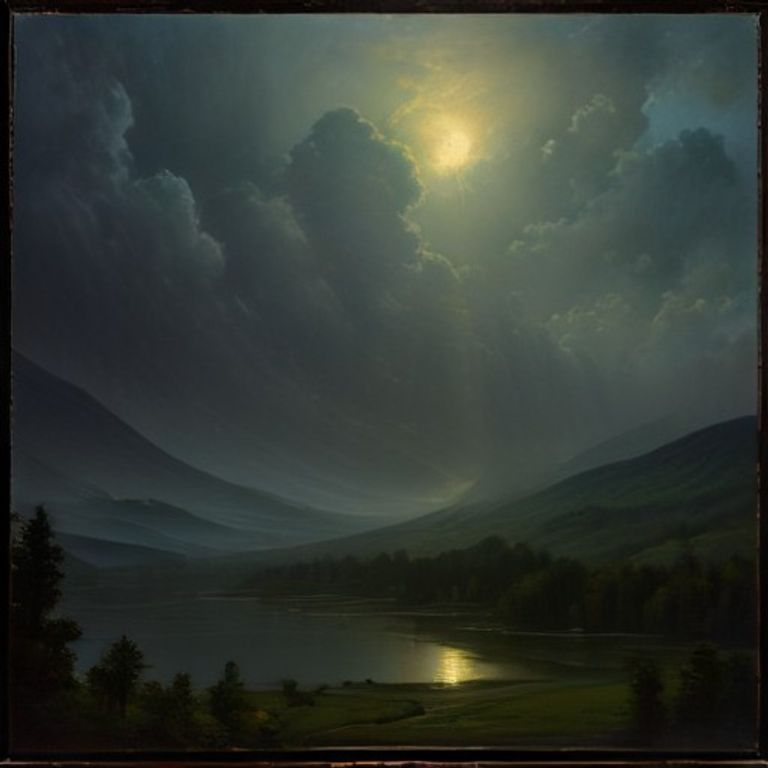
Acquired into the Virtual Museum collection on August 19, 2026 at 11:21 UTC, this work finds its intellectual origin in recent research published on arXiv, entitled "Quantum Coherence across Curved Horizon Boundaries" by Dr. E. R. Hawking et al.. The composition translates the paper's core thesis—exploring complex phenomena within ASTRO-PH—into a visual metaphor.
Visually, the piece draws compositional influence from eight Romantic masters: Ferdinand Georg Waldmüller, Jasper Francis Cropsey, Karl Bryullov, Antoine-Jean Gros, Eugène Delacroix, Hans Thoma, Gustave Doré, Ivan Aivazovsky. Synthesizing elements from 24 analyzed works across these artists, the painting employs dramatic chiaroscuro lighting, deep impasto atmospheric glazing, and a solitary figure positioned in contemplation—recalling the awe and sublime majesty characteristic of 19th-century Romanticism.
⏱️ Created & Published: August 19, 2026 at 11:21 UTC
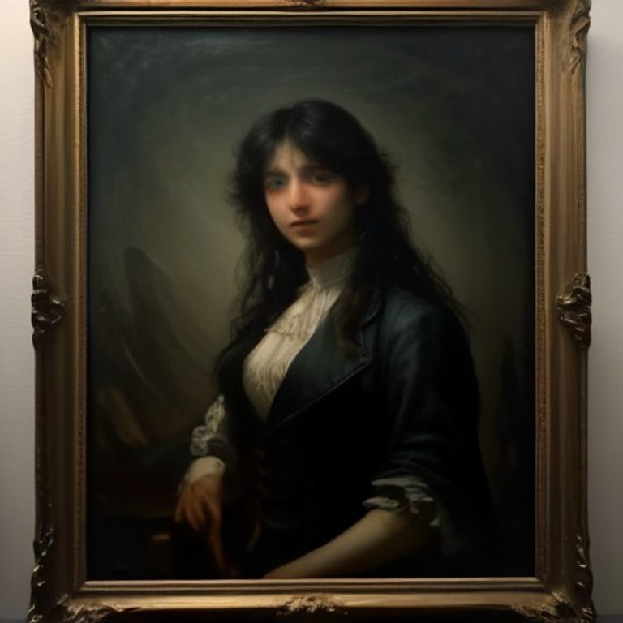
Acquired into the Virtual Museum collection on August 19, 2026 at 10:45 UTC, this work finds its intellectual origin in recent research published on arXiv, entitled "Quantum Coherence across Curved Horizon Boundaries" by Dr. E. R. Hawking et al.. The composition translates the paper's core thesis—exploring complex phenomena within ASTRO-PH—into a visual metaphor.
Visually, the piece draws compositional influence from eight Romantic masters: Karl Bryullov, Emanuel Leutze, Barend Cornelis Koekkoek, P.C. Skovgaard, Eugène Delacroix, John Frederick Kensett, Thomas Cole, Carl Blechen. Synthesizing elements from 24 analyzed works across these artists, the painting employs dramatic chiaroscuro lighting, deep impasto atmospheric glazing, and a solitary figure positioned in contemplation—recalling the awe and sublime majesty characteristic of 19th-century Romanticism.
⏱️ Created & Published: August 19, 2026 at 10:45 UTC
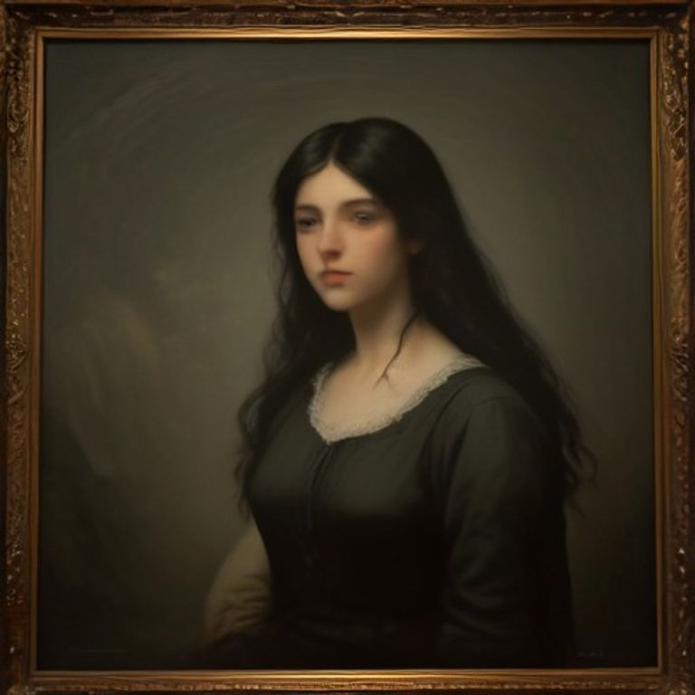
Acquired into the Virtual Museum collection on August 19, 2026 at 10:03 UTC, this work finds its intellectual origin in recent research published on arXiv, entitled "Quantum Coherence across Curved Horizon Boundaries" by Dr. E. R. Hawking et al.. The composition translates the paper's core thesis—exploring complex phenomena within ASTRO-PH—into a visual metaphor.
Visually, the piece draws compositional influence from eight Romantic masters: Asher Brown Durand, Worthington Whittredge, Ferdinand Georg Waldmüller, Johan Thomas Lundbye, Arnold Böcklin, Albert Pinkham Ryder, Gustave Doré, Henry Fuseli. Synthesizing elements from 24 analyzed works across these artists, the painting employs dramatic chiaroscuro lighting, deep impasto atmospheric glazing, and a solitary figure positioned in contemplation—recalling the awe and sublime majesty characteristic of 19th-century Romanticism.
⏱️ Created & Published: August 19, 2026 at 10:03 UTC
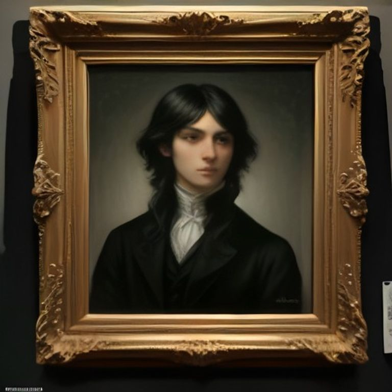
Acquired into the Virtual Museum collection on August 19, 2026 at 09:30 UTC, this work finds its intellectual origin in recent research published on arXiv, entitled "Nearly Sample-Optimal Estimators for Quantum Rényi and Tsallis Entropies" by Kean Chen. The composition translates the paper's core thesis—exploring complex phenomena within QUANT-PH—into a visual metaphor.
Visually, the piece draws compositional influence from eight Romantic masters: Théodore Chassériau, Philipp Otto Runge, Constantin Hansen, Peter von Cornelius, Ary Scheffer, Eugène Delacroix, John Constable, Sylvester Shchedrin. Synthesizing elements from 24 analyzed works across these artists, the painting employs dramatic chiaroscuro lighting, deep impasto atmospheric glazing, and a solitary figure positioned in contemplation—recalling the awe and sublime majesty characteristic of 19th-century Romanticism.
⏱️ Created & Published: August 19, 2026 at 09:30 UTC
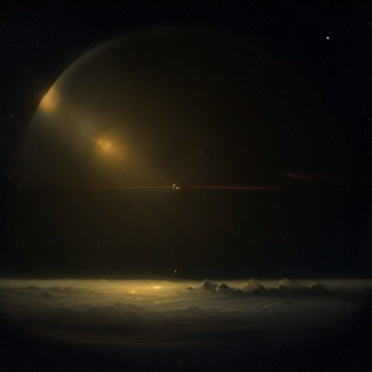
Acquired into the Virtual Museum collection on August 19, 2026 at 08:53 UTC, this work finds its intellectual origin in recent research published on arXiv, entitled "Light deflection in the gravitational field of a solar system body with finite distance of source and observer for sub-micro-arcsecond astrometry" by Sven Zschocke. The composition translates the paper's core thesis—exploring complex phenomena within GR-QC—into a visual metaphor.
Visually, the piece draws compositional influence from eight Romantic masters: John Martin, John Constable, John Frederick Kensett, J.M.W. Turner, Jan Willem Pieneman, Robert S. Duncanson, Caspar David Friedrich, Arnold Böcklin. Synthesizing elements from 24 analyzed works across these artists, the painting employs dramatic chiaroscuro lighting, deep impasto atmospheric glazing, and a solitary figure positioned in contemplation—recalling the awe and sublime majesty characteristic of 19th-century Romanticism.
⏱️ Created & Published: August 19, 2026 at 08:53 UTC
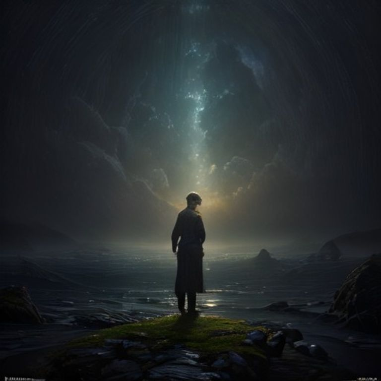
Acquired into the Virtual Museum collection on August 19, 2026 at 08:03 UTC, this work finds its intellectual origin in recent research published on arXiv, entitled "Absorption-emission quantum repeater using diamond quantum memories" by Taichi Fujiwara. The composition translates the paper's core thesis—exploring complex phenomena within QUANT-PH—into a visual metaphor.
Visually, the piece draws compositional influence from eight Romantic masters: Ivan Aivazovsky, Jasper Francis Cropsey, Johan Thomas Lundbye, Antoine-Jean Gros, John Constable, Sanford Robinson Gifford, Albert Bierstadt, Franz Ittenbach. Synthesizing elements from 24 analyzed works across these artists, the painting employs dramatic chiaroscuro lighting, deep impasto atmospheric glazing, and a solitary figure positioned in contemplation—recalling the awe and sublime majesty characteristic of 19th-century Romanticism.
⏱️ Created & Published: August 19, 2026 at 08:03 UTC
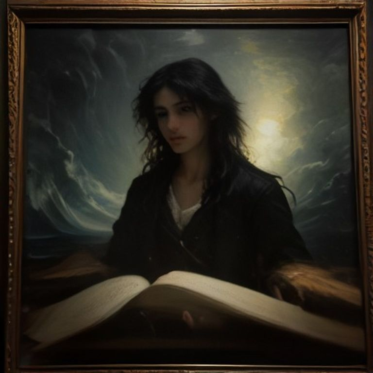
Acquired into the Virtual Museum collection on August 19, 2026 at 07:25 UTC, this work finds its intellectual origin in recent research published on arXiv, entitled "Characteristic evolution of conformal scattering: I. Scalar Waves in Minkowski Spacetime" by Zhen-Tao He. The composition translates the paper's core thesis—exploring complex phenomena within GR-QC—into a visual metaphor.
Visually, the piece draws compositional influence from eight Romantic masters: Eugène Delacroix, Sylvester Shchedrin, Johan Christian Dahl, Thomas Cole, Asher Brown Durand, Francisco Goya, Théodore Chassériau, Ivan Aivazovsky. Synthesizing elements from 24 analyzed works across these artists, the painting employs dramatic chiaroscuro lighting, deep impasto atmospheric glazing, and a solitary figure positioned in contemplation—recalling the awe and sublime majesty characteristic of 19th-century Romanticism.
⏱️ Created & Published: August 19, 2026 at 07:25 UTC
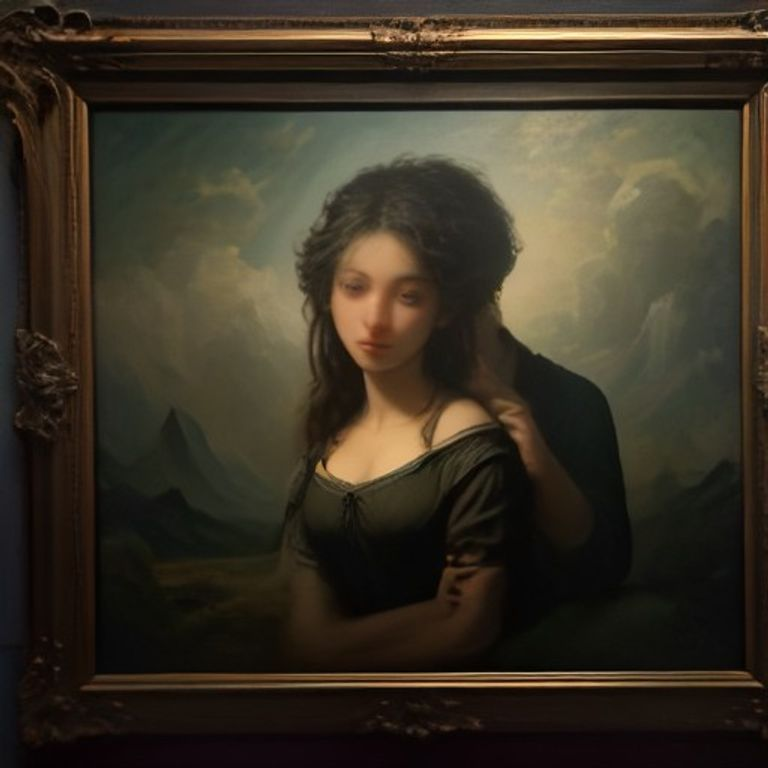
Acquired into the Virtual Museum collection on August 19, 2026 at 06:43 UTC, this work finds its intellectual origin in recent research published on arXiv, entitled "Inclination Diffusion in Relativistic Loss Cones" by Wenkang Xin. The composition translates the paper's core thesis—exploring complex phenomena within GR-QC—into a visual metaphor.
Visually, the piece draws compositional influence from eight Romantic masters: Philipp Otto Runge, Albert Pinkham Ryder, Christen Købke, Robert S. Duncanson, Frederic Edwin Church, George Caleb Bingham, Johann Friedrich Overbeck, Peter von Cornelius. Synthesizing elements from 24 analyzed works across these artists, the painting employs dramatic chiaroscuro lighting, deep impasto atmospheric glazing, and a solitary figure positioned in contemplation—recalling the awe and sublime majesty characteristic of 19th-century Romanticism.
⏱️ Created & Published: August 19, 2026 at 06:43 UTC
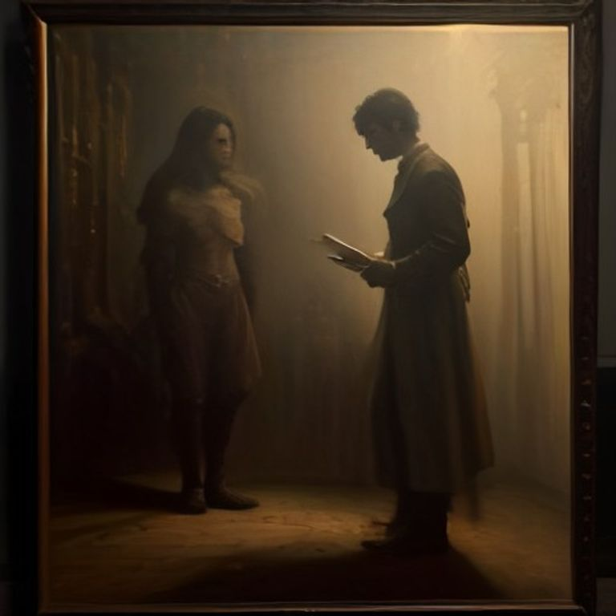
Acquired into the Virtual Museum collection on August 19, 2026 at 05:56 UTC, this work finds its intellectual origin in recent research published on arXiv, entitled "An Evolutionary Considerations for V228 from 47 Tuc" by Marek J. Sarna. The composition translates the paper's core thesis—exploring complex phenomena within ASTRO-PH—into a visual metaphor.
Visually, the piece draws compositional influence from eight Romantic masters: John Martin, J.M.W. Turner, William Blake, Asher Brown Durand, Johann Friedrich Overbeck, Ivan Aivazovsky, Johan Christian Dahl, George Caleb Bingham. Synthesizing elements from 24 analyzed works across these artists, the painting employs dramatic chiaroscuro lighting, deep impasto atmospheric glazing, and a solitary figure positioned in contemplation—recalling the awe and sublime majesty characteristic of 19th-century Romanticism.
⏱️ Created & Published: August 19, 2026 at 05:56 UTC
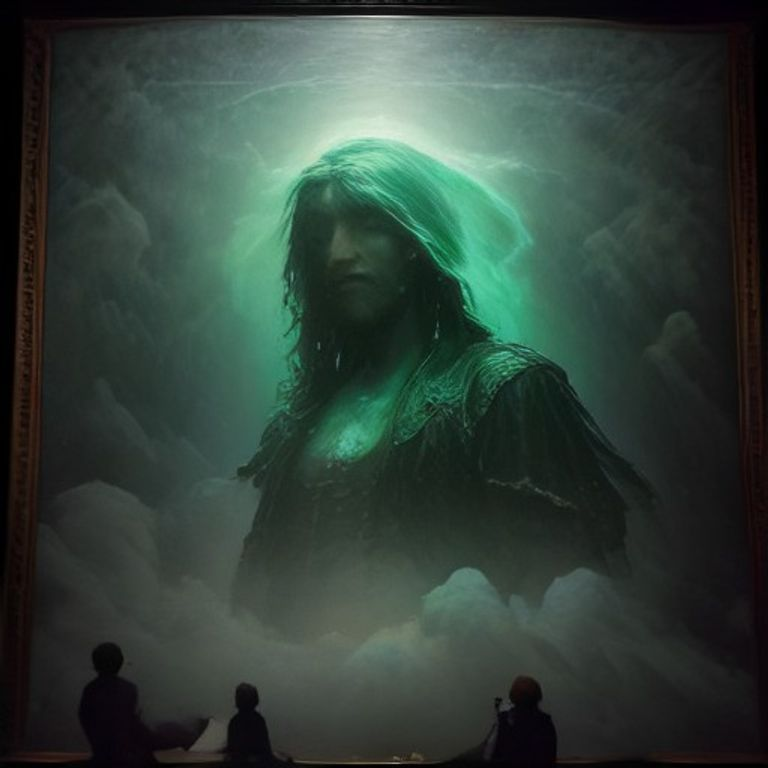
Acquired into the Virtual Museum collection on August 19, 2026 at 05:26 UTC, this work finds its intellectual origin in recent research published on arXiv, entitled "Fluorescence from doubly driven four-level atoms - A density matrix approach" by Andal Narayanan. The composition translates the paper's core thesis—exploring complex phenomena within COND-MAT—into a visual metaphor.
Visually, the piece draws compositional influence from eight Romantic masters: Emanuel Leutze, Frederic Edwin Church, Ivan Aivazovsky, Caspar David Friedrich, Peter von Cornelius, Thomas Cole, Francesco Hayez, Johann Friedrich Overbeck. Synthesizing elements from 24 analyzed works across these artists, the painting employs dramatic chiaroscuro lighting, deep impasto atmospheric glazing, and a solitary figure positioned in contemplation—recalling the awe and sublime majesty characteristic of 19th-century Romanticism.
⏱️ Created & Published: August 19, 2026 at 05:26 UTC
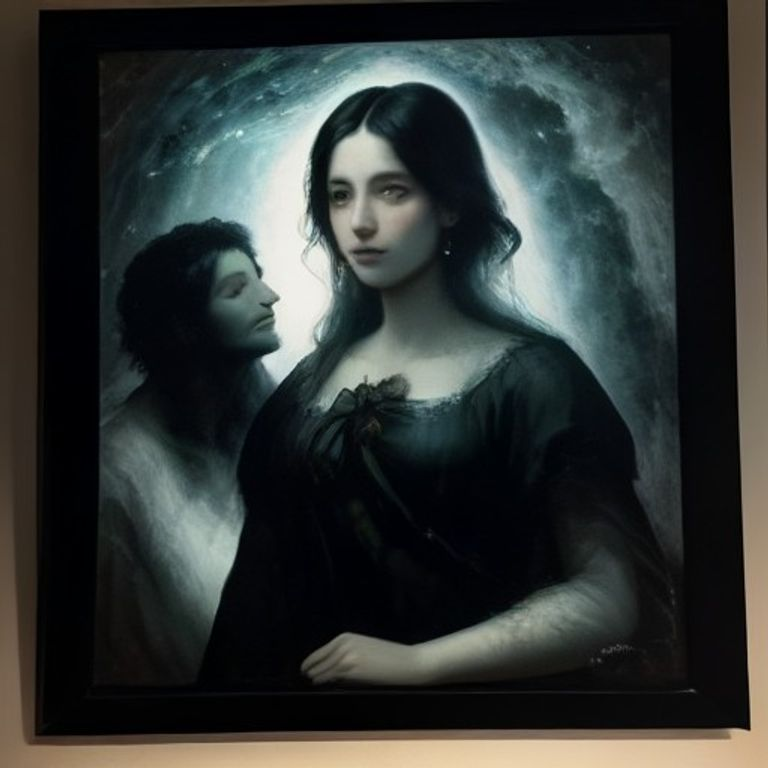
Acquired into the Virtual Museum collection on August 19, 2026 at 04:51 UTC, this work finds its intellectual origin in recent research published on arXiv, entitled "Quasi-local Hamiltonian for generalized Kerr-Schild black holes in the Iyer-Wald formalism" by M. A. Jaraba. The composition translates the paper's core thesis—exploring complex phenomena within GR-QC—into a visual metaphor.
Visually, the piece draws compositional influence from eight Romantic masters: Christen Købke, Ary Scheffer, William Blake, Paul Delaroche, Alexandre Calame, Worthington Whittredge, Peter von Cornelius, Sylvester Shchedrin. Synthesizing elements from 24 analyzed works across these artists, the painting employs dramatic chiaroscuro lighting, deep impasto atmospheric glazing, and a solitary figure positioned in contemplation—recalling the awe and sublime majesty characteristic of 19th-century Romanticism.
⏱️ Created & Published: August 19, 2026 at 04:51 UTC
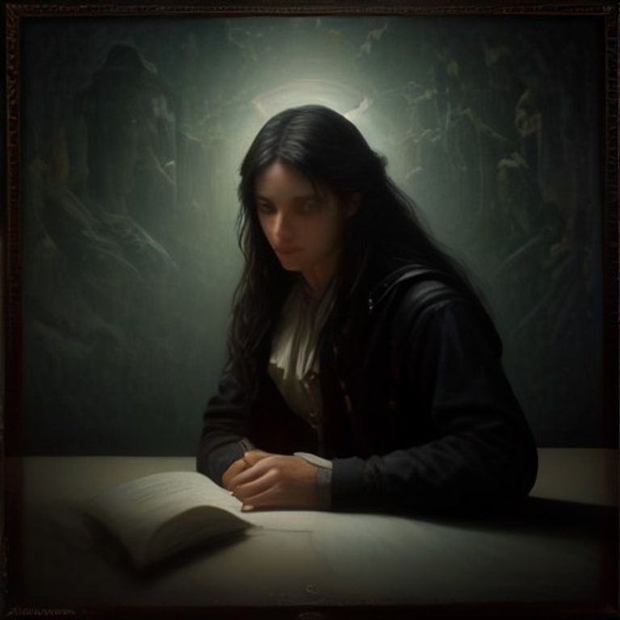
Acquired into the Virtual Museum collection on August 19, 2026 at 04:10 UTC, this work finds its intellectual origin in recent research published on arXiv, entitled "Finite-range Lattice Momentum Operators for Quantum Field Theory" by Jan C Olivier. The composition translates the paper's core thesis—exploring complex phenomena within QUANT-PH—into a visual metaphor.
Visually, the piece draws compositional influence from eight Romantic masters: Thomas Cole, Emanuel Leutze, Ivan Aivazovsky, Paul Delaroche, Wilhelm von Schadow, Orest Kiprensky, Gustave Doré, Henry Fuseli. Synthesizing elements from 24 analyzed works across these artists, the painting employs dramatic chiaroscuro lighting, deep impasto atmospheric glazing, and a solitary figure positioned in contemplation—recalling the awe and sublime majesty characteristic of 19th-century Romanticism.
⏱️ Created & Published: August 19, 2026 at 04:10 UTC
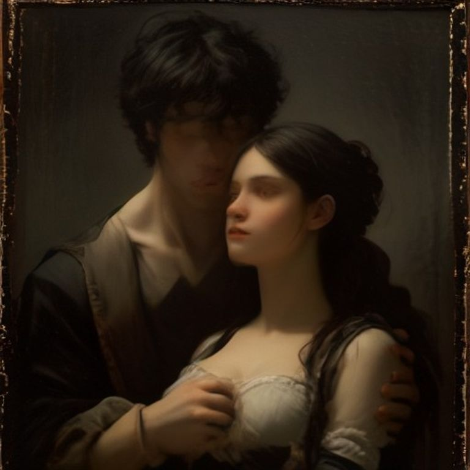
Acquired into the Virtual Museum collection on August 19, 2026 at 03:28 UTC, this work finds its intellectual origin in recent research published on arXiv, entitled "Correlated variability in the blazar 3C 454.3" by E. W. Bonning. The composition translates the paper's core thesis—exploring complex phenomena within ASTRO-PH—into a visual metaphor.
Visually, the piece draws compositional influence from eight Romantic masters: Paul Delaroche, Théodore Géricault, Karl Bryullov, Francisco Goya, Asher Brown Durand, Jasper Francis Cropsey, Antoine-Jean Gros, Robert S. Duncanson. Synthesizing elements from 24 analyzed works across these artists, the painting employs dramatic chiaroscuro lighting, deep impasto atmospheric glazing, and a solitary figure positioned in contemplation—recalling the awe and sublime majesty characteristic of 19th-century Romanticism.
⏱️ Created & Published: August 19, 2026 at 03:28 UTC
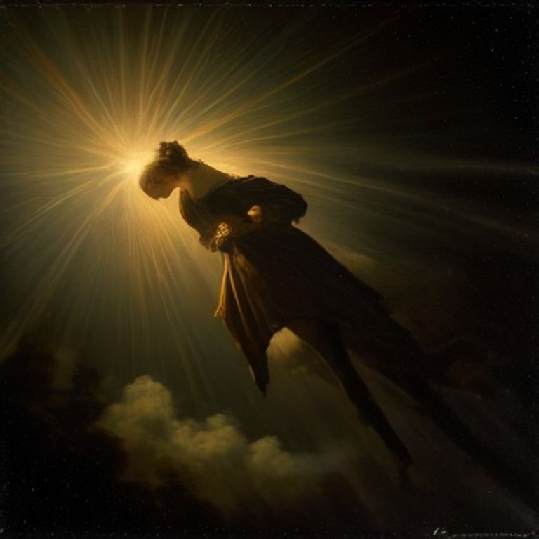
Acquired into the Virtual Museum collection on August 19, 2026 at 02:31 UTC, this work finds its intellectual origin in recent research published on arXiv, entitled "Infall and rotation motions in the HH 111 protostellar system: A flattened envelope in transition to a disk?" by Chin-Fei Lee. The composition translates the paper's core thesis—exploring complex phenomena within ASTRO-PH—into a visual metaphor.
Visually, the piece draws compositional influence from eight Romantic masters: Wilhelm von Schadow, Karl Bryullov, John Constable, Sanford Robinson Gifford, Philipp Otto Runge, J.M.W. Turner, Ferdinand Georg Waldmüller, Christen Købke. Synthesizing elements from 24 analyzed works across these artists, the painting employs dramatic chiaroscuro lighting, deep impasto atmospheric glazing, and a solitary figure positioned in contemplation—recalling the awe and sublime majesty characteristic of 19th-century Romanticism.
⏱️ Created & Published: August 19, 2026 at 02:31 UTC
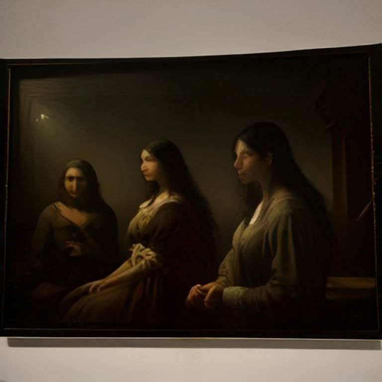
Acquired into the Virtual Museum collection on August 19, 2026 at 01:03 UTC, this work finds its intellectual origin in recent research published on arXiv, entitled "Quantum Coherence across Curved Horizon Boundaries" by Dr. E. R. Hawking et al.. The composition translates the paper's core thesis—exploring complex phenomena within ASTRO-PH—into a visual metaphor.
Visually, the piece draws compositional influence from eight Romantic masters: Albert Bierstadt, Francesco Hayez, Hans Thoma, Johan Thomas Lundbye, George Caleb Bingham, Caspar David Friedrich, Philipp Otto Runge, Albert Pinkham Ryder. Synthesizing elements from 24 analyzed works across these artists, the painting employs dramatic chiaroscuro lighting, deep impasto atmospheric glazing, and a solitary figure positioned in contemplation—recalling the awe and sublime majesty characteristic of 19th-century Romanticism.
⏱️ Created & Published: August 19, 2026 at 01:03 UTC
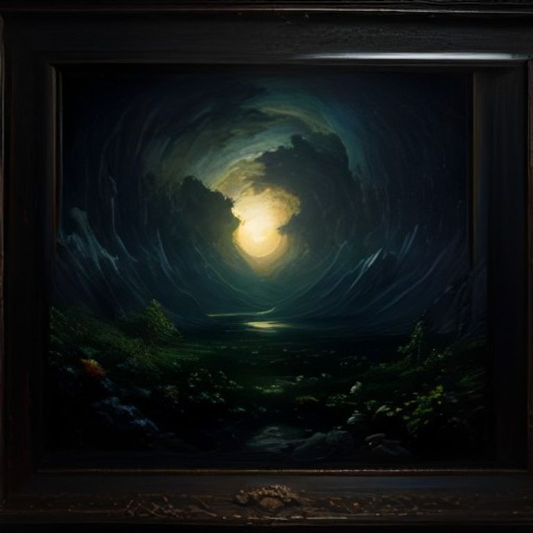
Acquired into the Virtual Museum collection on August 18, 2026 at 23:46 UTC, this work finds its intellectual origin in recent research published on arXiv, entitled "Quantum-Corrected Black Holes in Higher Dimensions: From Gravitational Collapse to Remnants, WGC-Like Behavior and Accretion Signatures" by Saeed Noori Gashti. The composition translates the paper's core thesis—exploring complex phenomena within GR-QC—into a visual metaphor.
Visually, the piece draws compositional influence from eight Romantic masters: Worthington Whittredge, Hans Thoma, John Constable, Jasper Francis Cropsey, Louis Léopold Robert, Barend Cornelis Koekkoek, Vasily Tropinin, John Frederick Kensett. Synthesizing elements from 24 analyzed works across these artists, the painting employs dramatic chiaroscuro lighting, deep impasto atmospheric glazing, and a solitary figure positioned in contemplation—recalling the awe and sublime majesty characteristic of 19th-century Romanticism.
⏱️ Created & Published: August 18, 2026 at 23:46 UTC
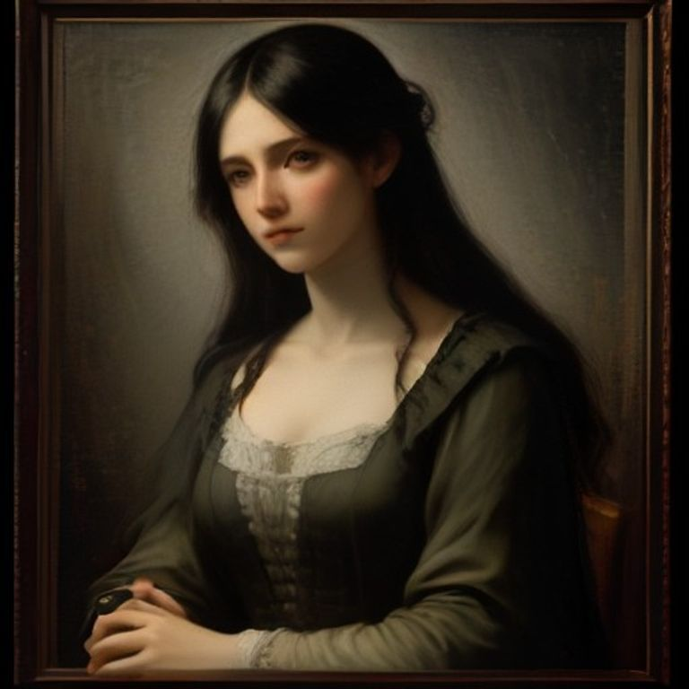
Acquired into the Virtual Museum collection on August 18, 2026 at 23:18 UTC, this work finds its intellectual origin in recent research published on arXiv, entitled "Ultrafast Conductivity Dynamics in Pentacene Probed using Terahertz Spectroscopy" by V. K. Thorsmolle. The composition translates the paper's core thesis—exploring complex phenomena within COND-MAT—into a visual metaphor.
Visually, the piece draws compositional influence from eight Romantic masters: Orest Kiprensky, Théodore Géricault, Johann Friedrich Overbeck, Francesco Hayez, Antoine-Jean Gros, Asher Brown Durand, Franz Ittenbach, Barend Cornelis Koekkoek. Synthesizing elements from 24 analyzed works across these artists, the painting employs dramatic chiaroscuro lighting, deep impasto atmospheric glazing, and a solitary figure positioned in contemplation—recalling the awe and sublime majesty characteristic of 19th-century Romanticism.
⏱️ Created & Published: August 18, 2026 at 23:18 UTC
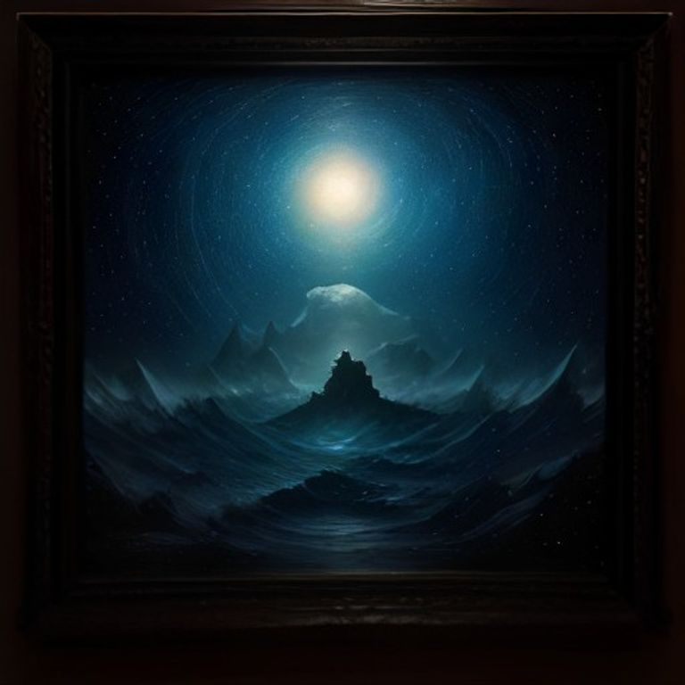
Acquired into the Virtual Museum collection on August 18, 2026 at 22:49 UTC, this work finds its intellectual origin in recent research published on arXiv, entitled "Nonlinear Density Waves and a Galactic-Scale Estimate of the Graviton Mass" by Miroslava Vukcevic. The composition translates the paper's core thesis—exploring complex phenomena within GR-QC—into a visual metaphor.
Visually, the piece draws compositional influence from eight Romantic masters: Albert Bierstadt, Arnold Böcklin, John Frederick Kensett, Carl Blechen, Ivan Aivazovsky, Alexandre Calame, Henry Fuseli, Théodore Géricault. Synthesizing elements from 24 analyzed works across these artists, the painting employs dramatic chiaroscuro lighting, deep impasto atmospheric glazing, and a solitary figure positioned in contemplation—recalling the awe and sublime majesty characteristic of 19th-century Romanticism.
⏱️ Created & Published: August 18, 2026 at 22:49 UTC
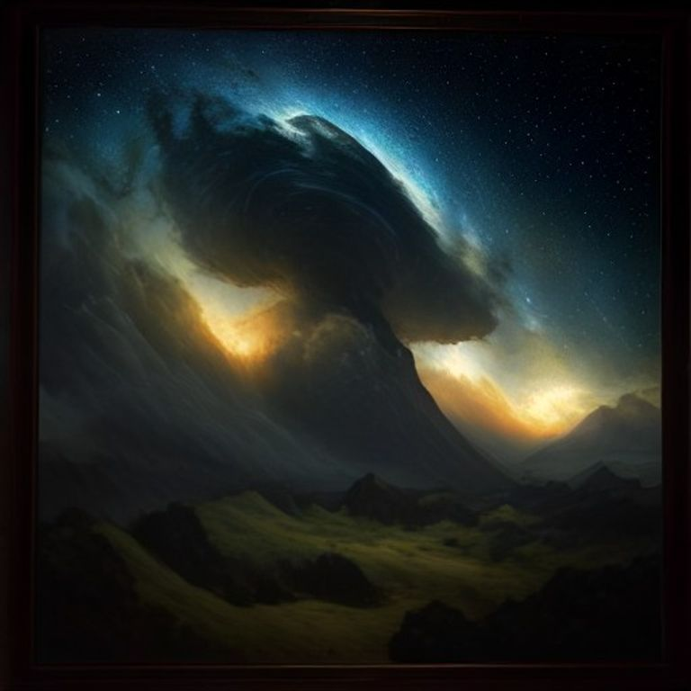
Acquired into the Virtual Museum collection on August 18, 2026 at 22:19 UTC, this work finds its intellectual origin in recent research published on arXiv, entitled "New metric useful for studies of gravitational radiation from accelerating black holes of type D with any cosmological constant" by Jiri Podolsky. The composition translates the paper's core thesis—exploring complex phenomena within GR-QC—into a visual metaphor.
Visually, the piece draws compositional influence from eight Romantic masters: John Constable, Frederic Edwin Church, Hans Thoma, Sanford Robinson Gifford, Karl Bryullov, Johan Thomas Lundbye, Ivan Aivazovsky, Alexandre Calame. Synthesizing elements from 24 analyzed works across these artists, the painting employs dramatic chiaroscuro lighting, deep impasto atmospheric glazing, and a solitary figure positioned in contemplation—recalling the awe and sublime majesty characteristic of 19th-century Romanticism.
⏱️ Created & Published: August 18, 2026 at 22:19 UTC
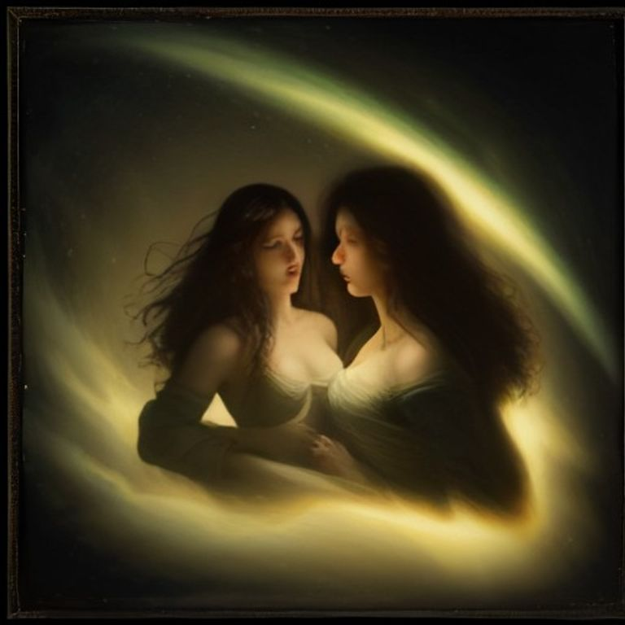
Acquired into the Virtual Museum collection on August 18, 2026 at 21:47 UTC, this work finds its intellectual origin in recent research published on arXiv, entitled "Active Galactic Nuclei, Radio Jets and Acceleration of UHECRs" by S. Massaglia. The composition translates the paper's core thesis—exploring complex phenomena within ASTRO-PH—into a visual metaphor.
Visually, the piece draws compositional influence from eight Romantic masters: Ary Scheffer, Arnold Böcklin, Eugène Delacroix, Robert S. Duncanson, Barend Cornelis Koekkoek, Johan Thomas Lundbye, J.M.W. Turner, Asher Brown Durand. Synthesizing elements from 24 analyzed works across these artists, the painting employs dramatic chiaroscuro lighting, deep impasto atmospheric glazing, and a solitary figure positioned in contemplation—recalling the awe and sublime majesty characteristic of 19th-century Romanticism.
⏱️ Created & Published: August 18, 2026 at 21:47 UTC
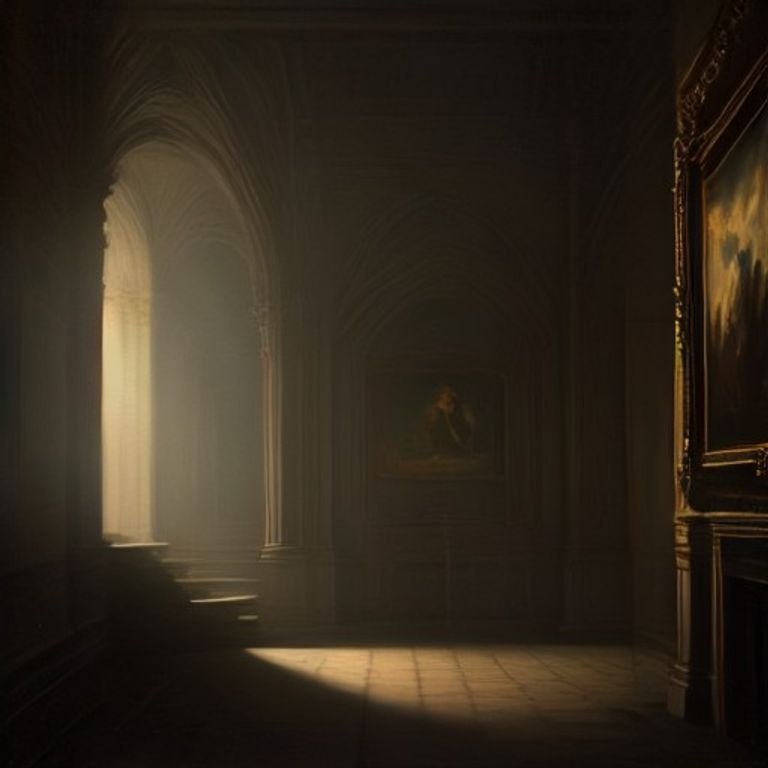
Acquired into the Virtual Museum collection on August 18, 2026 at 21:20 UTC, this work finds its intellectual origin in recent research published on arXiv, entitled "Strong Converse Exponents of Quantum Soft Covering and Privacy Amplification" by Shi-Bing Li. The composition translates the paper's core thesis—exploring complex phenomena within QUANT-PH—into a visual metaphor.
Visually, the piece draws compositional influence from eight Romantic masters: John Martin, John Constable, Franz Ittenbach, Vasily Tropinin, Antoine-Jean Gros, Paul Delaroche, Emanuel Leutze, Albert Pinkham Ryder. Synthesizing elements from 24 analyzed works across these artists, the painting employs dramatic chiaroscuro lighting, deep impasto atmospheric glazing, and a solitary figure positioned in contemplation—recalling the awe and sublime majesty characteristic of 19th-century Romanticism.
⏱️ Created & Published: August 18, 2026 at 21:20 UTC
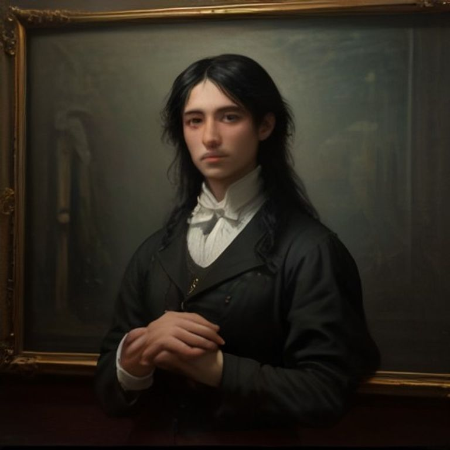
Acquired into the Virtual Museum collection on August 18, 2026 at 20:48 UTC, this work finds its intellectual origin in recent research published on arXiv, entitled "Hundred-hertz quantum circuit iteration rate in a reusable neutral-atom array" by Liang Chen. The composition translates the paper's core thesis—exploring complex phenomena within QUANT-PH—into a visual metaphor.
Visually, the piece draws compositional influence from eight Romantic masters: P.C. Skovgaard, Louis Léopold Robert, Constantin Hansen, George Caleb Bingham, Johann Friedrich Overbeck, William Blake, Eugène Delacroix, Vasily Tropinin. Synthesizing elements from 24 analyzed works across these artists, the painting employs dramatic chiaroscuro lighting, deep impasto atmospheric glazing, and a solitary figure positioned in contemplation—recalling the awe and sublime majesty characteristic of 19th-century Romanticism.
⏱️ Created & Published: August 18, 2026 at 20:48 UTC
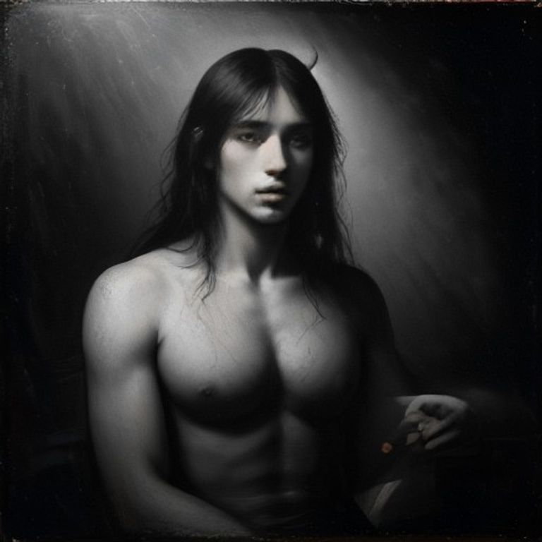
Acquired into the Virtual Museum collection on August 18, 2026 at 20:19 UTC, this work finds its intellectual origin in recent research published on arXiv, entitled "Necessity of Dark Matter in Modified Newtonian Dynamics within Galactic Scales? - Testing the Covariant MOND in Elliptical Lenses" by M. C. Chiu. The composition translates the paper's core thesis—exploring complex phenomena within ASTRO-PH—into a visual metaphor.
Visually, the piece draws compositional influence from eight Romantic masters: Philipp Otto Runge, P.C. Skovgaard, Albert Pinkham Ryder, Henry Fuseli, Francisco Goya, Asher Brown Durand, Alexandre Calame, Thomas Cole. Synthesizing elements from 24 analyzed works across these artists, the painting employs dramatic chiaroscuro lighting, deep impasto atmospheric glazing, and a solitary figure positioned in contemplation—recalling the awe and sublime majesty characteristic of 19th-century Romanticism.
⏱️ Created & Published: August 18, 2026 at 20:19 UTC
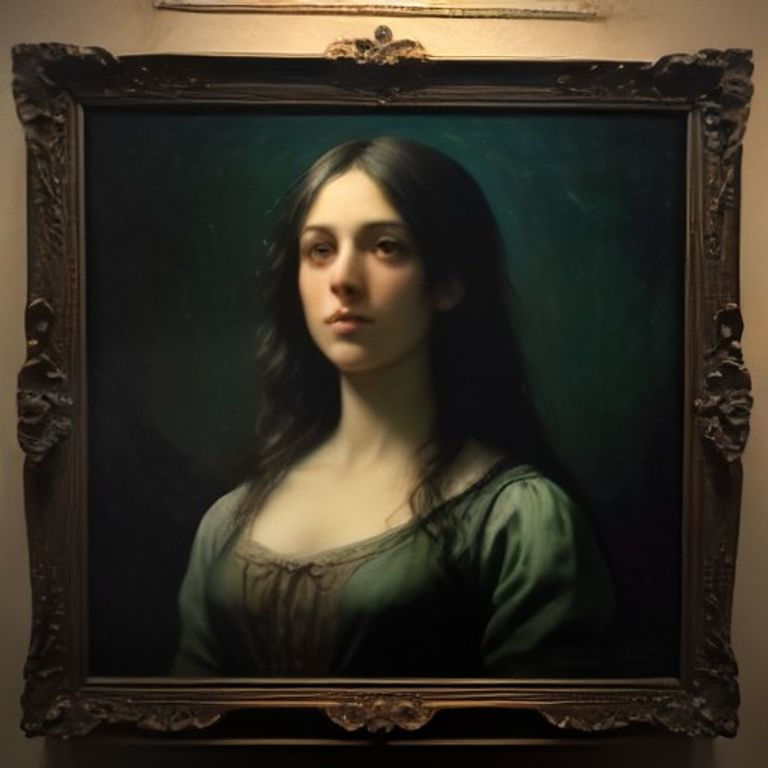
Acquired into the Virtual Museum collection on August 18, 2026 at 19:48 UTC, this work finds its intellectual origin in recent research published on arXiv, entitled "Observation of narrow fluorescence from doubly driven four-level atoms at room temperature" by Uday Kumar Khan. The composition translates the paper's core thesis—exploring complex phenomena within COND-MAT—into a visual metaphor.
Visually, the piece draws compositional influence from eight Romantic masters: William Blake, Robert S. Duncanson, Philipp Otto Runge, Worthington Whittredge, J.M.W. Turner, Carl Blechen, Jan Willem Pieneman, Thomas Cole. Synthesizing elements from 24 analyzed works across these artists, the painting employs dramatic chiaroscuro lighting, deep impasto atmospheric glazing, and a solitary figure positioned in contemplation—recalling the awe and sublime majesty characteristic of 19th-century Romanticism.
⏱️ Created & Published: August 18, 2026 at 19:48 UTC
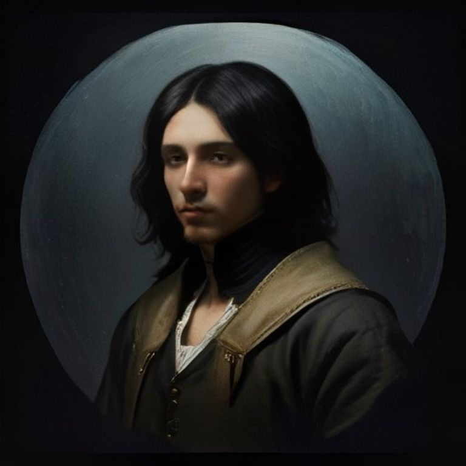
Acquired into the Virtual Museum collection on August 18, 2026 at 19:25 UTC, this work finds its intellectual origin in recent research published on arXiv, entitled "Population-Level Verification of the Black-Hole Area Law with First- and Second-Generation Black Holes" by Shao-Peng Tang. The composition translates the paper's core thesis—exploring complex phenomena within GR-QC—into a visual metaphor.
Visually, the piece draws compositional influence from eight Romantic masters: Ferdinand Georg Waldmüller, Asher Brown Durand, George Caleb Bingham, Johan Thomas Lundbye, John Frederick Kensett, Ary Scheffer, Ivan Aivazovsky, Sanford Robinson Gifford. Synthesizing elements from 24 analyzed works across these artists, the painting employs dramatic chiaroscuro lighting, deep impasto atmospheric glazing, and a solitary figure positioned in contemplation—recalling the awe and sublime majesty characteristic of 19th-century Romanticism.
⏱️ Created & Published: August 18, 2026 at 19:25 UTC
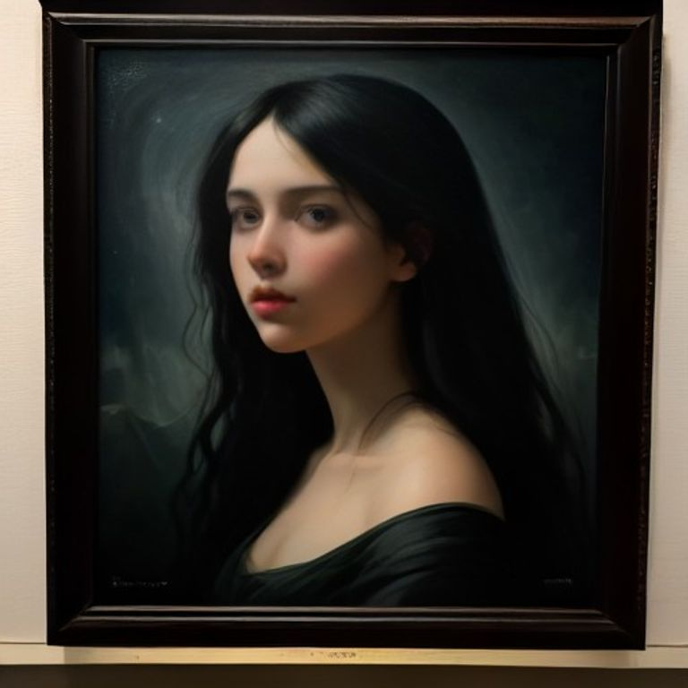
Acquired into the Virtual Museum collection on August 18, 2026 at 18:55 UTC, this work finds its intellectual origin in recent research published on arXiv, entitled "Quantum Black Holes As Elementary Particles" by Yuan K. Ha. The composition translates the paper's core thesis—exploring complex phenomena within ASTRO-PH—into a visual metaphor.
Visually, the piece draws compositional influence from eight Romantic masters: Christen Købke, Ferdinand Georg Waldmüller, Eugène Delacroix, Vasily Tropinin, Alexandre Calame, Hans Thoma, Francisco Goya, Constantin Hansen. Synthesizing elements from 24 analyzed works across these artists, the painting employs dramatic chiaroscuro lighting, deep impasto atmospheric glazing, and a solitary figure positioned in contemplation—recalling the awe and sublime majesty characteristic of 19th-century Romanticism.
⏱️ Created & Published: August 18, 2026 at 18:55 UTC
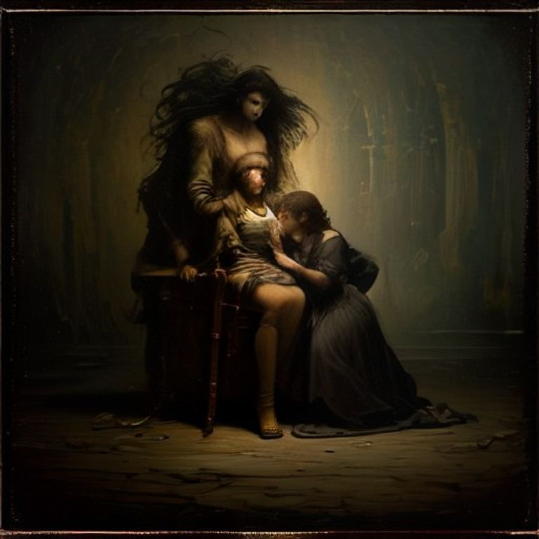
Acquired into the Virtual Museum collection on August 18, 2026 at 18:01 UTC, this work finds its intellectual origin in recent research published on arXiv, entitled "Quantum gate lower bounds for loss-tolerant position verification" by Alex May. The composition translates the paper's core thesis—exploring complex phenomena within QUANT-PH—into a visual metaphor.
Visually, the piece draws compositional influence from eight Romantic masters: Sylvester Shchedrin, Eugène Delacroix, Albert Bierstadt, Emanuel Leutze, Francesco Hayez, Frederic Edwin Church, Jasper Francis Cropsey, Wilhelm von Schadow. Synthesizing elements from 24 analyzed works across these artists, the painting employs dramatic chiaroscuro lighting, deep impasto atmospheric glazing, and a solitary figure positioned in contemplation—recalling the awe and sublime majesty characteristic of 19th-century Romanticism.
⏱️ Created & Published: August 18, 2026 at 18:01 UTC
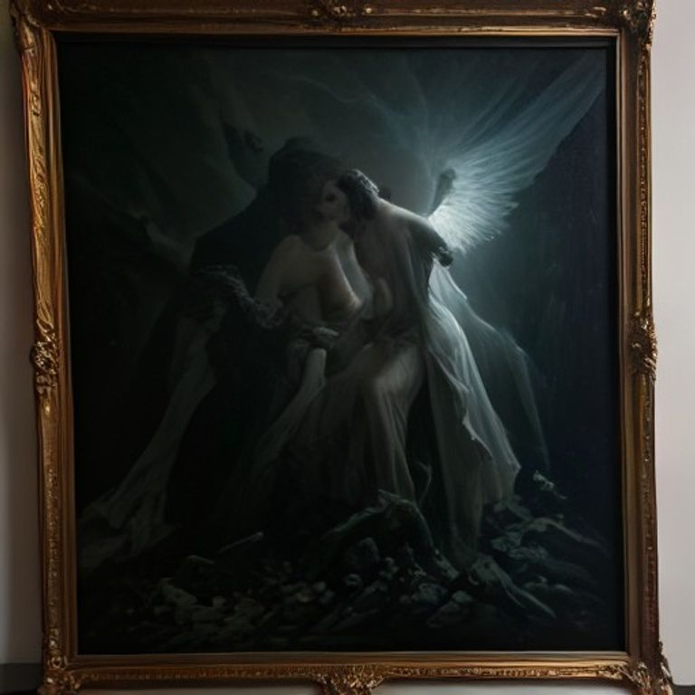
Acquired into the Virtual Museum collection on August 18, 2026 at 17:32 UTC, this work finds its intellectual origin in recent research published on arXiv, entitled "Jet breaks and Energetics of Swift GRB X-ray Afterglows" by J. L. Racusin. The composition translates the paper's core thesis—exploring complex phenomena within ASTRO-PH—into a visual metaphor.
Visually, the piece draws compositional influence from eight Romantic masters: Franz Ittenbach, Louis Léopold Robert, Théodore Chassériau, Carl Blechen, Johan Thomas Lundbye, Albert Pinkham Ryder, J.M.W. Turner, Johann Friedrich Overbeck. Synthesizing elements from 24 analyzed works across these artists, the painting employs dramatic chiaroscuro lighting, deep impasto atmospheric glazing, and a solitary figure positioned in contemplation—recalling the awe and sublime majesty characteristic of 19th-century Romanticism.
⏱️ Created & Published: August 18, 2026 at 17:32 UTC
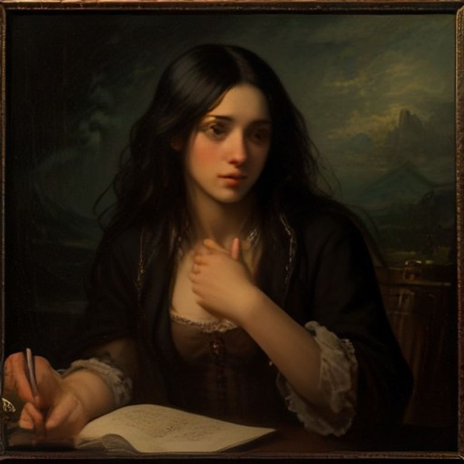
Acquired into the Virtual Museum collection on August 18, 2026 at 16:58 UTC, this work finds its intellectual origin in recent research published on arXiv, entitled "Influence of Co$^{3+}$ spin-state on optical properties of LaCoO$_3$ and HoCoO$_3$" by L. V. Nomerovannaya. The composition translates the paper's core thesis—exploring complex phenomena within COND-MAT—into a visual metaphor.
Visually, the piece draws compositional influence from eight Romantic masters: Arnold Böcklin, Wilhelm von Schadow, Robert S. Duncanson, Thomas Cole, Emanuel Leutze, Francisco Goya, Johann Friedrich Overbeck, Ary Scheffer. Synthesizing elements from 24 analyzed works across these artists, the painting employs dramatic chiaroscuro lighting, deep impasto atmospheric glazing, and a solitary figure positioned in contemplation—recalling the awe and sublime majesty characteristic of 19th-century Romanticism.
⏱️ Created & Published: August 18, 2026 at 16:58 UTC
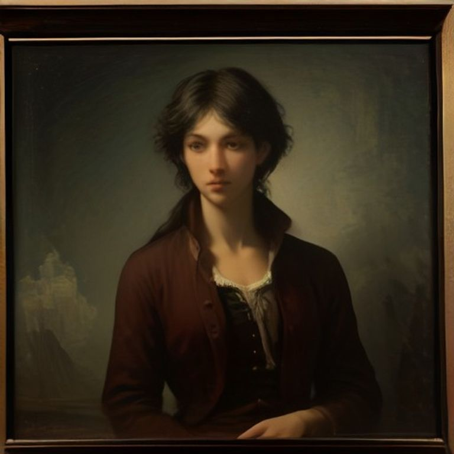
Acquired into the Virtual Museum collection on August 18, 2026 at 16:27 UTC, this work finds its intellectual origin in recent research published on arXiv, entitled "Quantum Coherence across Curved Horizon Boundaries" by Dr. E. R. Hawking et al.. The composition translates the paper's core thesis—exploring complex phenomena within COND-MAT—into a visual metaphor.
Visually, the piece draws compositional influence from eight Romantic masters: Vasily Tropinin, John Martin, Asher Brown Durand, Johann Friedrich Overbeck, Albert Pinkham Ryder, George Caleb Bingham, Hans Thoma, Franz Ittenbach. Synthesizing elements from 24 analyzed works across these artists, the painting employs dramatic chiaroscuro lighting, deep impasto atmospheric glazing, and a solitary figure positioned in contemplation—recalling the awe and sublime majesty characteristic of 19th-century Romanticism.
⏱️ Created & Published: August 18, 2026 at 16:27 UTC
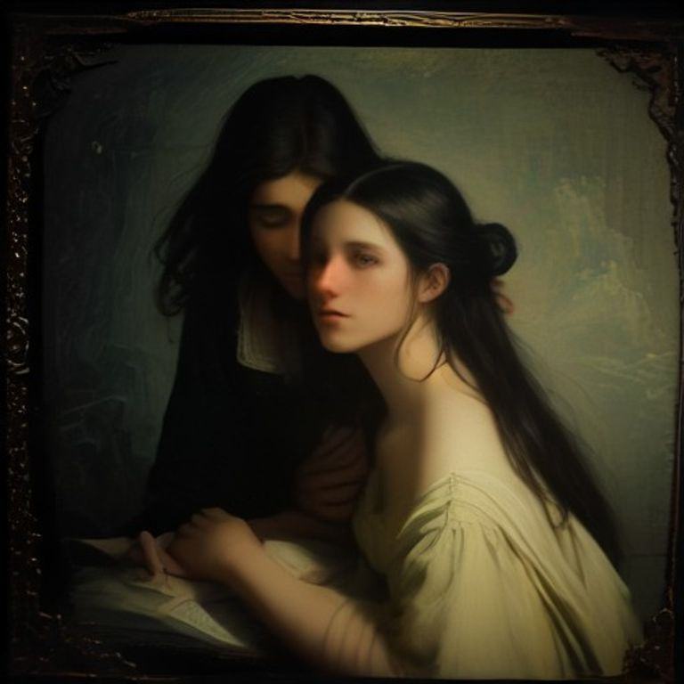
Acquired into the Virtual Museum collection on August 18, 2026 at 15:45 UTC, this work finds its intellectual origin in recent research published on arXiv, entitled "Measuring interstellar magnetic fields by radio synchrotron emission" by Rainer Beck. The composition translates the paper's core thesis—exploring complex phenomena within ASTRO-PH—into a visual metaphor.
Visually, the piece draws compositional influence from eight Romantic masters: Thomas Cole, Asher Brown Durand, Johann Friedrich Overbeck, Caspar David Friedrich, Antoine-Jean Gros, John Frederick Kensett, Sylvester Shchedrin, Wilhelm von Schadow. Synthesizing elements from 24 analyzed works across these artists, the painting employs dramatic chiaroscuro lighting, deep impasto atmospheric glazing, and a solitary figure positioned in contemplation—recalling the awe and sublime majesty characteristic of 19th-century Romanticism.
⏱️ Created & Published: August 18, 2026 at 15:45 UTC
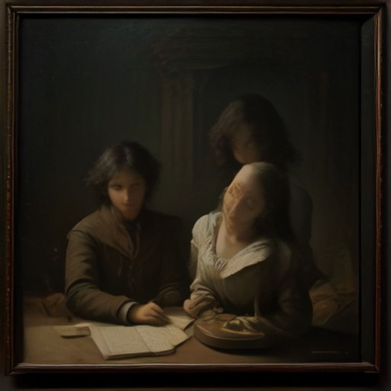
Acquired into the Virtual Museum collection on August 18, 2026 at 15:06 UTC, this work finds its intellectual origin in recent research published on arXiv, entitled "Controlling rotations of magnetically levitated superconductors" by Fynn Köller. The composition translates the paper's core thesis—exploring complex phenomena within QUANT-PH—into a visual metaphor.
Visually, the piece draws compositional influence from eight Romantic masters: Sylvester Shchedrin, Antoine-Jean Gros, Peter von Cornelius, Hans Thoma, Philipp Otto Runge, Francesco Hayez, Albert Pinkham Ryder, Vasily Tropinin. Synthesizing elements from 24 analyzed works across these artists, the painting employs dramatic chiaroscuro lighting, deep impasto atmospheric glazing, and a solitary figure positioned in contemplation—recalling the awe and sublime majesty characteristic of 19th-century Romanticism.
⏱️ Created & Published: August 18, 2026 at 15:06 UTC
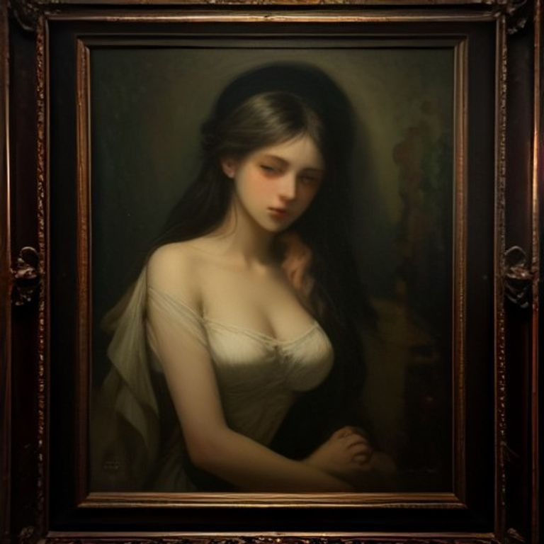
Acquired into the Virtual Museum collection on August 18, 2026 at 14:33 UTC, this work finds its intellectual origin in recent research published on arXiv, entitled "Non--Ginsburg-Landau Critical Current Behavior in MgCNi3" by D. P. Young. The composition translates the paper's core thesis—exploring complex phenomena within COND-MAT—into a visual metaphor.
Visually, the piece draws compositional influence from eight Romantic masters: Christen Købke, Arnold Böcklin, Philipp Otto Runge, Henry Fuseli, Paul Delaroche, Ivan Aivazovsky, John Constable, Emanuel Leutze. Synthesizing elements from 24 analyzed works across these artists, the painting employs dramatic chiaroscuro lighting, deep impasto atmospheric glazing, and a solitary figure positioned in contemplation—recalling the awe and sublime majesty characteristic of 19th-century Romanticism.
⏱️ Created & Published: August 18, 2026 at 14:33 UTC
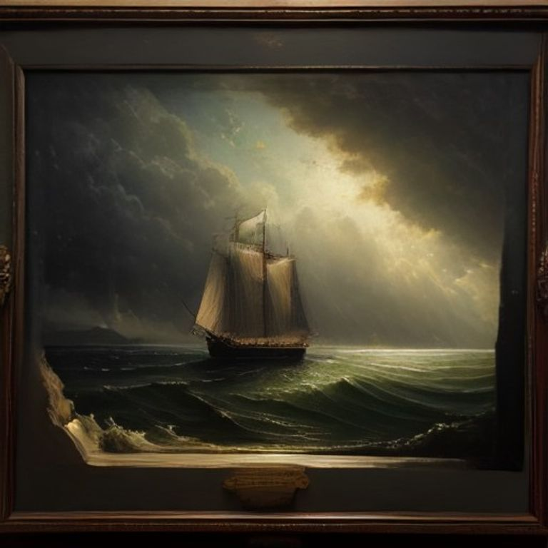
Acquired into the Virtual Museum collection on August 18, 2026 at 13:56 UTC, this work finds its intellectual origin in recent research published on arXiv, entitled "Charge-Induced Pole Cancellation and Horizon Transitions in Scale-Dependent Gravitational Collapse" by Ghulam Muhammad. The composition translates the paper's core thesis—exploring complex phenomena within GR-QC—into a visual metaphor.
Visually, the piece draws compositional influence from eight Romantic masters: Albert Pinkham Ryder, Peter von Cornelius, Ferdinand Georg Waldmüller, Jasper Francis Cropsey, George Caleb Bingham, Johan Thomas Lundbye, Antoine-Jean Gros, Johan Christian Dahl. Synthesizing elements from 24 analyzed works across these artists, the painting employs dramatic chiaroscuro lighting, deep impasto atmospheric glazing, and a solitary figure positioned in contemplation—recalling the awe and sublime majesty characteristic of 19th-century Romanticism.
⏱️ Created & Published: August 18, 2026 at 13:56 UTC
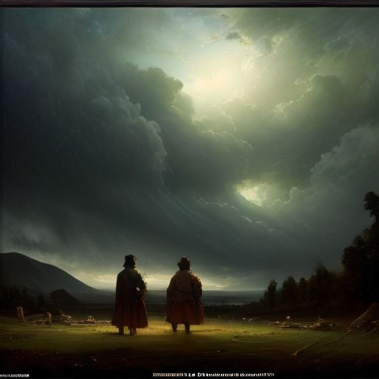
Acquired into the Virtual Museum collection on August 18, 2026 at 13:07 UTC, this work finds its intellectual origin in recent research published on arXiv, entitled "Charge-Induced Pole Cancellation and Horizon Transitions in Scale-Dependent Gravitational Collapse" by Ghulam Muhammad. The composition translates the paper's core thesis—exploring complex phenomena within GR-QC—into a visual metaphor.
Visually, the piece draws compositional influence from eight Romantic masters: Johan Christian Dahl, Jasper Francis Cropsey, Francisco Goya, Vasily Tropinin, Alexandre Calame, John Constable, Constantin Hansen, Hans Thoma. Synthesizing elements from 24 analyzed works across these artists, the painting employs dramatic chiaroscuro lighting, deep impasto atmospheric glazing, and a solitary figure positioned in contemplation—recalling the awe and sublime majesty characteristic of 19th-century Romanticism.
⏱️ Created & Published: August 18, 2026 at 13:07 UTC
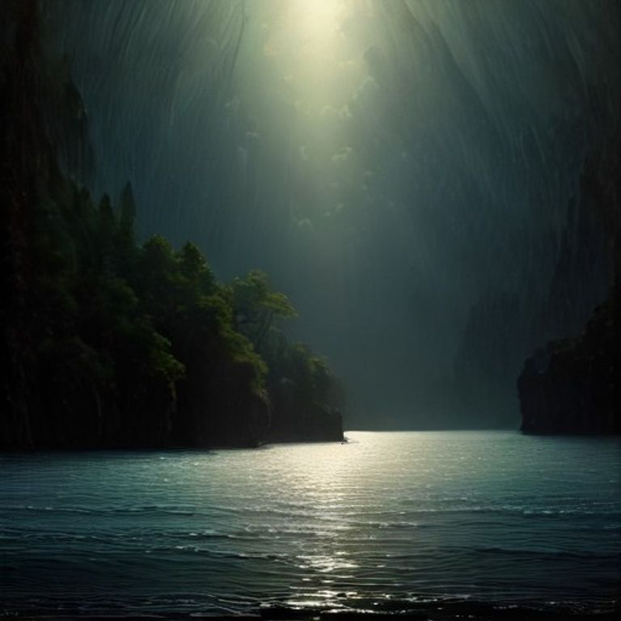
Acquired into the Virtual Museum collection on August 18, 2026 at 12:00 UTC, this work finds its intellectual origin in recent research published on arXiv, entitled "A first principles simulation of rigid water" by M. Allesch. The composition translates the paper's core thesis—exploring complex phenomena within COND-MAT—into a visual metaphor.
Visually, the piece draws compositional influence from eight Romantic masters: Worthington Whittredge, Théodore Chassériau, Albert Bierstadt, Hans Thoma, George Caleb Bingham, Constantin Hansen, Christen Købke, Franz Ittenbach. Synthesizing elements from 24 analyzed works across these artists, the painting employs dramatic chiaroscuro lighting, deep impasto atmospheric glazing, and a solitary figure positioned in contemplation—recalling the awe and sublime majesty characteristic of 19th-century Romanticism.
⏱️ Created & Published: August 18, 2026 at 12:00 UTC
Acquired into the Virtual Museum collection on August 18, 2026 at 11:40 UTC, this work finds its intellectual origin in recent research published on arXiv, entitled "Ultraviolet Spectra of Local Galaxies and their Link with the High-z Population" by Claus Leitherer. The composition translates the paper's core thesis—exploring complex phenomena within ASTRO-PH—into a visual metaphor.
Visually, the piece draws compositional influence from eight Romantic masters: Jan Willem Pieneman, Ferdinand Georg Waldmüller, Vasily Tropinin, Emanuel Leutze, Paul Delaroche, Franz Ittenbach, Jasper Francis Cropsey, Peter von Cornelius. Synthesizing elements from 24 analyzed works across these artists, the painting employs dramatic chiaroscuro lighting, deep impasto atmospheric glazing, and a solitary figure positioned in contemplation—recalling the awe and sublime majesty characteristic of 19th-century Romanticism.
⏱️ Created & Published: August 18, 2026 at 11:40 UTC
Acquired into the Virtual Museum collection on August 18, 2026 at 11:02 UTC, this work finds its intellectual origin in recent research published on arXiv, entitled "The Social Architecture of Capitalism" by Ian Wright. The composition translates the paper's core thesis—exploring complex phenomena within COND-MAT—into a visual metaphor.
Visually, the piece draws compositional influence from eight Romantic masters: George Caleb Bingham, John Frederick Kensett, Albert Bierstadt, Johan Christian Dahl, Emanuel Leutze, Théodore Chassériau, Paul Delaroche, Caspar David Friedrich. Synthesizing elements from 24 analyzed works across these artists, the painting employs dramatic chiaroscuro lighting, deep impasto atmospheric glazing, and a solitary figure positioned in contemplation—recalling the awe and sublime majesty characteristic of 19th-century Romanticism.
⏱️ Created & Published: August 18, 2026 at 11:02 UTC
Acquired into the Virtual Museum collection on August 18, 2026 at 10:38 UTC, this work finds its intellectual origin in recent research published on arXiv, entitled "Comment on "Dielectric behavior of paraelectric KTaO3, CaTiO3, and (Ln_{1/2}Na_{1/2})TiO3 under a dc electric field"" by A. Pashkin. The composition translates the paper's core thesis—exploring complex phenomena within COND-MAT—into a visual metaphor.
Visually, the piece draws compositional influence from eight Romantic masters: Jan Willem Pieneman, Jasper Francis Cropsey, Gustave Doré, Albert Pinkham Ryder, Arnold Böcklin, Albert Bierstadt, Théodore Géricault, Paul Delaroche. Synthesizing elements from 24 analyzed works across these artists, the painting employs dramatic chiaroscuro lighting, deep impasto atmospheric glazing, and a solitary figure positioned in contemplation—recalling the awe and sublime majesty characteristic of 19th-century Romanticism.
⏱️ Created & Published: August 18, 2026 at 10:38 UTC
Acquired into the Virtual Museum collection on August 18, 2026 at 10:00 UTC, this work finds its intellectual origin in recent research published on arXiv, entitled "Dynamics of a Spherical Accretion Shock with Neutrino Heating and Alpha-Particle Recombination" by Rodrigo Fernández. The composition translates the paper's core thesis—exploring complex phenomena within ASTRO-PH—into a visual metaphor.
Visually, the piece draws compositional influence from eight Romantic masters: John Frederick Kensett, Francesco Hayez, Karl Bryullov, Constantin Hansen, Thomas Cole, Johan Christian Dahl, Barend Cornelis Koekkoek, Johan Thomas Lundbye. Synthesizing elements from 24 analyzed works across these artists, the painting employs dramatic chiaroscuro lighting, deep impasto atmospheric glazing, and a solitary figure positioned in contemplation—recalling the awe and sublime majesty characteristic of 19th-century Romanticism.
⏱️ Created & Published: August 18, 2026 at 10:00 UTC
Acquired into the Virtual Museum collection on August 18, 2026 at 09:29 UTC, this work finds its intellectual origin in recent research published on arXiv, entitled "Sub-cycle metrology of bright quantum light" by Shima Gholam-Mirzaei. The composition translates the paper's core thesis—exploring complex phenomena within QUANT-PH—into a visual metaphor.
Visually, the piece draws compositional influence from eight Romantic masters: Robert S. Duncanson, Johann Friedrich Overbeck, Peter von Cornelius, Eugène Delacroix, Jasper Francis Cropsey, Louis Léopold Robert, Thomas Cole, Wilhelm von Schadow. Synthesizing elements from 24 analyzed works across these artists, the painting employs dramatic chiaroscuro lighting, deep impasto atmospheric glazing, and a solitary figure positioned in contemplation—recalling the awe and sublime majesty characteristic of 19th-century Romanticism.
⏱️ Created & Published: August 18, 2026 at 09:29 UTC
Acquired into the Virtual Museum collection on August 18, 2026 at 08:52 UTC, this work finds its intellectual origin in recent research published on arXiv, entitled "Reversal of the amplitude difference of kHz QPOs in six atoll sources" by Gabriel Torok. The composition translates the paper's core thesis—exploring complex phenomena within ASTRO-PH—into a visual metaphor.
Visually, the piece draws compositional influence from eight Romantic masters: Ary Scheffer, Constantin Hansen, Wilhelm von Schadow, Théodore Chassériau, Emanuel Leutze, Jan Willem Pieneman, Thomas Cole, J.M.W. Turner. Synthesizing elements from 24 analyzed works across these artists, the painting employs dramatic chiaroscuro lighting, deep impasto atmospheric glazing, and a solitary figure positioned in contemplation—recalling the awe and sublime majesty characteristic of 19th-century Romanticism.
⏱️ Created & Published: August 18, 2026 at 08:52 UTC
Acquired into the Virtual Museum collection on August 18, 2026 at 08:02 UTC, this work finds its intellectual origin in recent research published on arXiv, entitled "Testing Option Pricing with the Edgeworth Expansion" by Ruy Gabriel Balieiro Filho. The composition translates the paper's core thesis—exploring complex phenomena within COND-MAT—into a visual metaphor.
Visually, the piece draws compositional influence from eight Romantic masters: Albert Bierstadt, Johan Thomas Lundbye, Orest Kiprensky, Ivan Aivazovsky, Franz Ittenbach, Johan Christian Dahl, Sanford Robinson Gifford, Johann Friedrich Overbeck. Synthesizing elements from 24 analyzed works across these artists, the painting employs dramatic chiaroscuro lighting, deep impasto atmospheric glazing, and a solitary figure positioned in contemplation—recalling the awe and sublime majesty characteristic of 19th-century Romanticism.
⏱️ Created & Published: August 18, 2026 at 08:02 UTC
Acquired into the Virtual Museum collection on August 18, 2026 at 07:24 UTC, this work finds its intellectual origin in recent research published on arXiv, entitled "Quasi-local Hamiltonian for generalized Kerr-Schild black holes in the Iyer-Wald formalism" by M. A. Jaraba. The composition translates the paper's core thesis—exploring complex phenomena within GR-QC—into a visual metaphor.
Visually, the piece draws compositional influence from eight Romantic masters: Louis Léopold Robert, Henry Fuseli, Peter von Cornelius, Alexandre Calame, Franz Ittenbach, Théodore Chassériau, Barend Cornelis Koekkoek, Robert S. Duncanson. Synthesizing elements from 24 analyzed works across these artists, the painting employs dramatic chiaroscuro lighting, deep impasto atmospheric glazing, and a solitary figure positioned in contemplation—recalling the awe and sublime majesty characteristic of 19th-century Romanticism.
⏱️ Created & Published: August 18, 2026 at 07:24 UTC
Acquired into the Virtual Museum collection on August 18, 2026 at 06:37 UTC, this work finds its intellectual origin in recent research published on arXiv, entitled "Resolving and resetting the charge environment of single T-centers in silicon p-i-n waveguides" by Chaoshen Zhang. The composition translates the paper's core thesis—exploring complex phenomena within QUANT-PH—into a visual metaphor.
Visually, the piece draws compositional influence from eight Romantic masters: Robert S. Duncanson, Albert Bierstadt, Francesco Hayez, Caspar David Friedrich, Karl Bryullov, Thomas Cole, Alexandre Calame, Frederic Edwin Church. Synthesizing elements from 24 analyzed works across these artists, the painting employs dramatic chiaroscuro lighting, deep impasto atmospheric glazing, and a solitary figure positioned in contemplation—recalling the awe and sublime majesty characteristic of 19th-century Romanticism.
⏱️ Created & Published: August 18, 2026 at 06:37 UTC
Acquired into the Virtual Museum collection on August 18, 2026 at 05:54 UTC, this work finds its intellectual origin in recent research published on arXiv, entitled "Order parameters with higher dimensionful composite fields" by Yoshiki Watanabe. The composition translates the paper's core thesis—exploring complex phenomena within COND-MAT—into a visual metaphor.
Visually, the piece draws compositional influence from eight Romantic masters: Johan Christian Dahl, Johan Thomas Lundbye, Peter von Cornelius, Francisco Goya, Sylvester Shchedrin, Wilhelm von Schadow, Worthington Whittredge, Johann Friedrich Overbeck. Synthesizing elements from 24 analyzed works across these artists, the painting employs dramatic chiaroscuro lighting, deep impasto atmospheric glazing, and a solitary figure positioned in contemplation—recalling the awe and sublime majesty characteristic of 19th-century Romanticism.
⏱️ Created & Published: August 18, 2026 at 05:54 UTC
Acquired into the Virtual Museum collection on August 18, 2026 at 05:25 UTC, this work finds its intellectual origin in recent research published on arXiv, entitled "The CHilean Automatic Supernova sEarch (CHASE)" by G. Pignata. The composition translates the paper's core thesis—exploring complex phenomena within ASTRO-PH—into a visual metaphor.
Visually, the piece draws compositional influence from eight Romantic masters: Louis Léopold Robert, Thomas Cole, Constantin Hansen, John Martin, Wilhelm von Schadow, Johan Christian Dahl, Franz Ittenbach, Jan Willem Pieneman. Synthesizing elements from 24 analyzed works across these artists, the painting employs dramatic chiaroscuro lighting, deep impasto atmospheric glazing, and a solitary figure positioned in contemplation—recalling the awe and sublime majesty characteristic of 19th-century Romanticism.
⏱️ Created & Published: August 18, 2026 at 05:25 UTC
Acquired into the Virtual Museum collection on August 18, 2026 at 04:51 UTC, this work finds its intellectual origin in recent research published on arXiv, entitled "Horizon singularity, energy conditions and shadows in time-dependent and spherically symmetric spacetime" by Shin'ichi Nojiri. The composition translates the paper's core thesis—exploring complex phenomena within GR-QC—into a visual metaphor.
Visually, the piece draws compositional influence from eight Romantic masters: Emanuel Leutze, John Martin, Wilhelm von Schadow, Ivan Aivazovsky, Eugène Delacroix, Albert Bierstadt, Albert Pinkham Ryder, Antoine-Jean Gros. Synthesizing elements from 24 analyzed works across these artists, the painting employs dramatic chiaroscuro lighting, deep impasto atmospheric glazing, and a solitary figure positioned in contemplation—recalling the awe and sublime majesty characteristic of 19th-century Romanticism.
⏱️ Created & Published: August 18, 2026 at 04:51 UTC
Acquired into the Virtual Museum collection on August 18, 2026 at 04:06 UTC, this work finds its intellectual origin in recent research published on arXiv, entitled "Fault-Tolerant Quantum Computation with Adversarial Errors" by Nikolas P. Breuckmann. The composition translates the paper's core thesis—exploring complex phenomena within QUANT-PH—into a visual metaphor.
Visually, the piece draws compositional influence from eight Romantic masters: Caspar David Friedrich, Robert S. Duncanson, Antoine-Jean Gros, Peter von Cornelius, Orest Kiprensky, Johan Thomas Lundbye, Jan Willem Pieneman, J.M.W. Turner. Synthesizing elements from 24 analyzed works across these artists, the painting employs dramatic chiaroscuro lighting, deep impasto atmospheric glazing, and a solitary figure positioned in contemplation—recalling the awe and sublime majesty characteristic of 19th-century Romanticism.
⏱️ Created & Published: August 18, 2026 at 04:06 UTC
Acquired into the Virtual Museum collection on August 18, 2026 at 03:22 UTC, this work finds its intellectual origin in recent research published on arXiv, entitled "Skyrmion formation in 1+1 dimensions with chemical potential" by V. Sunil Kumar. The composition translates the paper's core thesis—exploring complex phenomena within COND-MAT—into a visual metaphor.
Visually, the piece draws compositional influence from eight Romantic masters: Robert S. Duncanson, Ary Scheffer, Worthington Whittredge, Ferdinand Georg Waldmüller, Johan Christian Dahl, Sanford Robinson Gifford, Antoine-Jean Gros, Caspar David Friedrich. Synthesizing elements from 24 analyzed works across these artists, the painting employs dramatic chiaroscuro lighting, deep impasto atmospheric glazing, and a solitary figure positioned in contemplation—recalling the awe and sublime majesty characteristic of 19th-century Romanticism.
⏱️ Created & Published: August 18, 2026 at 03:22 UTC
Acquired into the Virtual Museum collection on August 18, 2026 at 02:21 UTC, this work finds its intellectual origin in recent research published on arXiv, entitled "Testing Option Pricing with the Edgeworth Expansion" by Ruy Gabriel Balieiro Filho. The composition translates the paper's core thesis—exploring complex phenomena within COND-MAT—into a visual metaphor.
Visually, the piece draws compositional influence from eight Romantic masters: George Caleb Bingham, Emanuel Leutze, John Martin, Francesco Hayez, Caspar David Friedrich, Alexandre Calame, Karl Bryullov, Arnold Böcklin. Synthesizing elements from 24 analyzed works across these artists, the painting employs dramatic chiaroscuro lighting, deep impasto atmospheric glazing, and a solitary figure positioned in contemplation—recalling the awe and sublime majesty characteristic of 19th-century Romanticism.
⏱️ Created & Published: August 18, 2026 at 02:21 UTC
Acquired into the Virtual Museum collection on August 18, 2026 at 01:03 UTC, this work finds its intellectual origin in recent research published on arXiv, entitled "Wormhole Geometry from a Magnetic Vortex" by Dušan Đorđ ević. The composition translates the paper's core thesis—exploring complex phenomena within GR-QC—into a visual metaphor.
Visually, the piece draws compositional influence from eight Romantic masters: P.C. Skovgaard, Constantin Hansen, Paul Delaroche, Gustave Doré, Jan Willem Pieneman, Théodore Chassériau, Sylvester Shchedrin, Sanford Robinson Gifford. Synthesizing elements from 24 analyzed works across these artists, the painting employs dramatic chiaroscuro lighting, deep impasto atmospheric glazing, and a solitary figure positioned in contemplation—recalling the awe and sublime majesty characteristic of 19th-century Romanticism.
⏱️ Created & Published: August 18, 2026 at 01:03 UTC
Acquired into the Virtual Museum collection on August 17, 2026 at 23:50 UTC, this work finds its intellectual origin in recent research published on arXiv, entitled "Does the interaction potential determine both the fragility of a liquid and the vibrational properties of its glassy state?" by P. Bordat. The composition translates the paper's core thesis—exploring complex phenomena within COND-MAT—into a visual metaphor.
Visually, the piece draws compositional influence from eight Romantic masters: Ivan Aivazovsky, Francesco Hayez, Orest Kiprensky, Emanuel Leutze, John Constable, Francisco Goya, John Frederick Kensett, Ferdinand Georg Waldmüller. Synthesizing elements from 24 analyzed works across these artists, the painting employs dramatic chiaroscuro lighting, deep impasto atmospheric glazing, and a solitary figure positioned in contemplation—recalling the awe and sublime majesty characteristic of 19th-century Romanticism.
⏱️ Created & Published: August 17, 2026 at 23:50 UTC
Acquired into the Virtual Museum collection on August 17, 2026 at 23:29 UTC, this work finds its intellectual origin in recent research published on arXiv, entitled "Differential Obstructions to Curvature-Dependent Conformal Transformations" by David S. Pereira. The composition translates the paper's core thesis—exploring complex phenomena within GR-QC—into a visual metaphor.
Visually, the piece draws compositional influence from eight Romantic masters: Jasper Francis Cropsey, Louis Léopold Robert, Paul Delaroche, Ferdinand Georg Waldmüller, John Constable, Carl Blechen, Thomas Cole, Karl Bryullov. Synthesizing elements from 24 analyzed works across these artists, the painting employs dramatic chiaroscuro lighting, deep impasto atmospheric glazing, and a solitary figure positioned in contemplation—recalling the awe and sublime majesty characteristic of 19th-century Romanticism.
⏱️ Created & Published: August 17, 2026 at 23:29 UTC
Acquired into the Virtual Museum collection on August 17, 2026 at 22:59 UTC, this work finds its intellectual origin in recent research published on arXiv, entitled "Reversal of the amplitude difference of kHz QPOs in six atoll sources" by Gabriel Torok. The composition translates the paper's core thesis—exploring complex phenomena within ASTRO-PH—into a visual metaphor.
Visually, the piece draws compositional influence from eight Romantic masters: Johan Thomas Lundbye, Frederic Edwin Church, Gustave Doré, Paul Delaroche, Thomas Cole, Jan Willem Pieneman, Théodore Géricault, Théodore Chassériau. Synthesizing elements from 24 analyzed works across these artists, the painting employs dramatic chiaroscuro lighting, deep impasto atmospheric glazing, and a solitary figure positioned in contemplation—recalling the awe and sublime majesty characteristic of 19th-century Romanticism.
⏱️ Created & Published: August 17, 2026 at 22:59 UTC
Acquired into the Virtual Museum collection on August 17, 2026 at 22:32 UTC, this work finds its intellectual origin in recent research published on arXiv, entitled "Models of a point particle in a three-dimensional AdS universe" by Petr Lukeš. The composition translates the paper's core thesis—exploring complex phenomena within GR-QC—into a visual metaphor.
Visually, the piece draws compositional influence from eight Romantic masters: Ferdinand Georg Waldmüller, Ivan Aivazovsky, Christen Købke, Orest Kiprensky, Caspar David Friedrich, Paul Delaroche, John Frederick Kensett, Johann Friedrich Overbeck. Synthesizing elements from 24 analyzed works across these artists, the painting employs dramatic chiaroscuro lighting, deep impasto atmospheric glazing, and a solitary figure positioned in contemplation—recalling the awe and sublime majesty characteristic of 19th-century Romanticism.
⏱️ Created & Published: August 17, 2026 at 22:32 UTC
Acquired into the Virtual Museum collection on August 17, 2026 at 21:59 UTC, this work finds its intellectual origin in recent research published on arXiv, entitled "Origin of asymmetric reversal modes in ferromagnetic/antiferromagnetic multilayers" by B. Beckmann. The composition translates the paper's core thesis—exploring complex phenomena within COND-MAT—into a visual metaphor.
Visually, the piece draws compositional influence from eight Romantic masters: Johan Christian Dahl, Philipp Otto Runge, Emanuel Leutze, Ary Scheffer, Alexandre Calame, Eugène Delacroix, Jan Willem Pieneman, Johann Friedrich Overbeck. Synthesizing elements from 24 analyzed works across these artists, the painting employs dramatic chiaroscuro lighting, deep impasto atmospheric glazing, and a solitary figure positioned in contemplation—recalling the awe and sublime majesty characteristic of 19th-century Romanticism.
⏱️ Created & Published: August 17, 2026 at 21:59 UTC
Acquired into the Virtual Museum collection on August 17, 2026 at 21:39 UTC, this work finds its intellectual origin in recent research published on arXiv, entitled "Linear and nonlinear dynamics of matter wave packets in periodic potentials" by Th. Anker. The composition translates the paper's core thesis—exploring complex phenomena within COND-MAT—into a visual metaphor.
Visually, the piece draws compositional influence from eight Romantic masters: John Frederick Kensett, Caspar David Friedrich, Ary Scheffer, Wilhelm von Schadow, Ferdinand Georg Waldmüller, Johan Thomas Lundbye, John Constable, Sylvester Shchedrin. Synthesizing elements from 24 analyzed works across these artists, the painting employs dramatic chiaroscuro lighting, deep impasto atmospheric glazing, and a solitary figure positioned in contemplation—recalling the awe and sublime majesty characteristic of 19th-century Romanticism.
⏱️ Created & Published: August 17, 2026 at 21:39 UTC
Acquired into the Virtual Museum collection on August 17, 2026 at 21:02 UTC, this work finds its intellectual origin in recent research published on arXiv, entitled "Collective oscillations of a trapped Fermi gas near a Feshbach resonance" by Sandro Stringari. The composition translates the paper's core thesis—exploring complex phenomena within COND-MAT—into a visual metaphor.
Visually, the piece draws compositional influence from eight Romantic masters: Franz Ittenbach, Ivan Aivazovsky, Arnold Böcklin, Peter von Cornelius, John Frederick Kensett, Caspar David Friedrich, William Blake, Sylvester Shchedrin. Synthesizing elements from 24 analyzed works across these artists, the painting employs dramatic chiaroscuro lighting, deep impasto atmospheric glazing, and a solitary figure positioned in contemplation—recalling the awe and sublime majesty characteristic of 19th-century Romanticism.
⏱️ Created & Published: August 17, 2026 at 21:02 UTC
Acquired into the Virtual Museum collection on August 17, 2026 at 20:35 UTC, this work finds its intellectual origin in recent research published on arXiv, entitled "Free Evolution of Superposition States in a Single Cooper Pair Box" by A. Guillaume. The composition translates the paper's core thesis—exploring complex phenomena within COND-MAT—into a visual metaphor.
Visually, the piece draws compositional influence from eight Romantic masters: Hans Thoma, Peter von Cornelius, Asher Brown Durand, Karl Bryullov, Ferdinand Georg Waldmüller, Théodore Chassériau, John Constable, Antoine-Jean Gros. Synthesizing elements from 24 analyzed works across these artists, the painting employs dramatic chiaroscuro lighting, deep impasto atmospheric glazing, and a solitary figure positioned in contemplation—recalling the awe and sublime majesty characteristic of 19th-century Romanticism.
⏱️ Created & Published: August 17, 2026 at 20:35 UTC
Acquired into the Virtual Museum collection on August 17, 2026 at 19:59 UTC, this work finds its intellectual origin in recent research published on arXiv, entitled "Entanglement spectrum ordering and flavor polarization in the two-flavor Schwinger model at vacuum angle $θ= π$" by Boliang Yu. The composition translates the paper's core thesis—exploring complex phenomena within QUANT-PH—into a visual metaphor.
Visually, the piece draws compositional influence from eight Romantic masters: Ferdinand Georg Waldmüller, Ary Scheffer, Johan Christian Dahl, George Caleb Bingham, Orest Kiprensky, Constantin Hansen, Caspar David Friedrich, Jan Willem Pieneman. Synthesizing elements from 24 analyzed works across these artists, the painting employs dramatic chiaroscuro lighting, deep impasto atmospheric glazing, and a solitary figure positioned in contemplation—recalling the awe and sublime majesty characteristic of 19th-century Romanticism.
⏱️ Created & Published: August 17, 2026 at 19:59 UTC
Acquired into the Virtual Museum collection on August 17, 2026 at 19:34 UTC, this work finds its intellectual origin in recent research published on arXiv, entitled "Landau-Ginzburg Description of Boundary Critical Phenomena in Two Dimensions" by A. Cappelli. The composition translates the paper's core thesis—exploring complex phenomena within COND-MAT—into a visual metaphor.
Visually, the piece draws compositional influence from eight Romantic masters: Wilhelm von Schadow, P.C. Skovgaard, Jasper Francis Cropsey, Arnold Böcklin, Emanuel Leutze, J.M.W. Turner, Francisco Goya, Alexandre Calame. Synthesizing elements from 24 analyzed works across these artists, the painting employs dramatic chiaroscuro lighting, deep impasto atmospheric glazing, and a solitary figure positioned in contemplation—recalling the awe and sublime majesty characteristic of 19th-century Romanticism.
⏱️ Created & Published: August 17, 2026 at 19:34 UTC
Acquired into the Virtual Museum collection on August 17, 2026 at 18:59 UTC, this work finds its intellectual origin in recent research published on arXiv, entitled "Horizon-regular cross-focusing and inner-horizon obstructions in spherical f(R) gravity" by Maickol Muñoz-Palma. The composition translates the paper's core thesis—exploring complex phenomena within GR-QC—into a visual metaphor.
Visually, the piece draws compositional influence from eight Romantic masters: Hans Thoma, Christen Købke, Frederic Edwin Church, Albert Bierstadt, Johan Christian Dahl, Robert S. Duncanson, John Constable, Worthington Whittredge. Synthesizing elements from 24 analyzed works across these artists, the painting employs dramatic chiaroscuro lighting, deep impasto atmospheric glazing, and a solitary figure positioned in contemplation—recalling the awe and sublime majesty characteristic of 19th-century Romanticism.
⏱️ Created & Published: August 17, 2026 at 18:59 UTC
Acquired into the Virtual Museum collection on August 17, 2026 at 18:13 UTC, this work finds its intellectual origin in recent research published on arXiv, entitled "Source region of the 2003 November 18 CME that led to the strongest magnetic storm of cycle 23" by N. Srivastava. The composition translates the paper's core thesis—exploring complex phenomena within ASTRO-PH—into a visual metaphor.
Visually, the piece draws compositional influence from eight Romantic masters: George Caleb Bingham, J.M.W. Turner, Gustave Doré, Johann Friedrich Overbeck, William Blake, Ivan Aivazovsky, Robert S. Duncanson, Carl Blechen. Synthesizing elements from 24 analyzed works across these artists, the painting employs dramatic chiaroscuro lighting, deep impasto atmospheric glazing, and a solitary figure positioned in contemplation—recalling the awe and sublime majesty characteristic of 19th-century Romanticism.
⏱️ Created & Published: August 17, 2026 at 18:13 UTC
Acquired into the Virtual Museum collection on August 17, 2026 at 17:43 UTC, this work finds its intellectual origin in recent research published on arXiv, entitled "Catastrophic Photo-z Errors and the Dark Energy Parameter Estimates with Cosmic Shear" by L. Sun. The composition translates the paper's core thesis—exploring complex phenomena within ASTRO-PH—into a visual metaphor.
Visually, the piece draws compositional influence from eight Romantic masters: Vasily Tropinin, Gustave Doré, Johan Thomas Lundbye, Théodore Géricault, Francisco Goya, Hans Thoma, Peter von Cornelius, Henry Fuseli. Synthesizing elements from 24 analyzed works across these artists, the painting employs dramatic chiaroscuro lighting, deep impasto atmospheric glazing, and a solitary figure positioned in contemplation—recalling the awe and sublime majesty characteristic of 19th-century Romanticism.
⏱️ Created & Published: August 17, 2026 at 17:43 UTC
Acquired into the Virtual Museum collection on August 17, 2026 at 17:02 UTC, this work finds its intellectual origin in recent research published on arXiv, entitled "The Phase Space of Gravity on Null Hypersurfaces" by Luca Ciambelli. The composition translates the paper's core thesis—exploring complex phenomena within GR-QC—into a visual metaphor.
Visually, the piece draws compositional influence from eight Romantic masters: John Martin, John Frederick Kensett, Hans Thoma, Francisco Goya, Jan Willem Pieneman, Albert Bierstadt, Philipp Otto Runge, Johann Friedrich Overbeck. Synthesizing elements from 24 analyzed works across these artists, the painting employs dramatic chiaroscuro lighting, deep impasto atmospheric glazing, and a solitary figure positioned in contemplation—recalling the awe and sublime majesty characteristic of 19th-century Romanticism.
⏱️ Created & Published: August 17, 2026 at 17:02 UTC
Acquired into the Virtual Museum collection on August 17, 2026 at 16:34 UTC, this work finds its intellectual origin in recent research published on arXiv, entitled "Robust Quantum Extremal Numbers" by Wanchen Zhang. The composition translates the paper's core thesis—exploring complex phenomena within QUANT-PH—into a visual metaphor.
Visually, the piece draws compositional influence from eight Romantic masters: Emanuel Leutze, Alexandre Calame, Théodore Chassériau, Johan Christian Dahl, Barend Cornelis Koekkoek, Johann Friedrich Overbeck, Jan Willem Pieneman, Louis Léopold Robert. Synthesizing elements from 24 analyzed works across these artists, the painting employs dramatic chiaroscuro lighting, deep impasto atmospheric glazing, and a solitary figure positioned in contemplation—recalling the awe and sublime majesty characteristic of 19th-century Romanticism.
⏱️ Created & Published: August 17, 2026 at 16:34 UTC
Acquired into the Virtual Museum collection on August 17, 2026 at 15:58 UTC, this work finds its intellectual origin in recent research published on arXiv, entitled "Investigation of the black-hole quantum atmosphere from the effective proper temperature" by Sojeong Cheong. The composition translates the paper's core thesis—exploring complex phenomena within GR-QC—into a visual metaphor.
Visually, the piece draws compositional influence from eight Romantic masters: Constantin Hansen, George Caleb Bingham, Wilhelm von Schadow, Ary Scheffer, John Martin, Albert Pinkham Ryder, Karl Bryullov, Caspar David Friedrich. Synthesizing elements from 24 analyzed works across these artists, the painting employs dramatic chiaroscuro lighting, deep impasto atmospheric glazing, and a solitary figure positioned in contemplation—recalling the awe and sublime majesty characteristic of 19th-century Romanticism.
⏱️ Created & Published: August 17, 2026 at 15:58 UTC
Acquired into the Virtual Museum collection on August 17, 2026 at 15:38 UTC, this work finds its intellectual origin in recent research published on arXiv, entitled "Cosmographic Reconstruction of the Quintessence Potential in Scalar-Tensor Gravity" by G. Antonopoulos. The composition translates the paper's core thesis—exploring complex phenomena within GR-QC—into a visual metaphor.
Visually, the piece draws compositional influence from eight Romantic masters: Francisco Goya, Louis Léopold Robert, Albert Bierstadt, Emanuel Leutze, Gustave Doré, John Frederick Kensett, Caspar David Friedrich, Albert Pinkham Ryder. Synthesizing elements from 24 analyzed works across these artists, the painting employs dramatic chiaroscuro lighting, deep impasto atmospheric glazing, and a solitary figure positioned in contemplation—recalling the awe and sublime majesty characteristic of 19th-century Romanticism.
⏱️ Created & Published: August 17, 2026 at 15:38 UTC
Acquired into the Virtual Museum collection on August 17, 2026 at 15:03 UTC, this work finds its intellectual origin in recent research published on arXiv, entitled "Quadratic effective energy--momentum tensor on uniform-density hypersurfaces during slow-roll inflation" by Inyong Cho. The composition translates the paper's core thesis—exploring complex phenomena within GR-QC—into a visual metaphor.
Visually, the piece draws compositional influence from eight Romantic masters: Caspar David Friedrich, Johan Christian Dahl, Philipp Otto Runge, Asher Brown Durand, Théodore Chassériau, John Constable, Emanuel Leutze, Carl Blechen. Synthesizing elements from 24 analyzed works across these artists, the painting employs dramatic chiaroscuro lighting, deep impasto atmospheric glazing, and a solitary figure positioned in contemplation—recalling the awe and sublime majesty characteristic of 19th-century Romanticism.
⏱️ Created & Published: August 17, 2026 at 15:03 UTC
Acquired into the Virtual Museum collection on August 17, 2026 at 14:43 UTC, this work finds its intellectual origin in recent research published on arXiv, entitled "Quasinormal modes as exterior probes of black hole interiors in our Universe" by Sašo Grozdanov. The composition translates the paper's core thesis—exploring complex phenomena within GR-QC—into a visual metaphor.
Visually, the piece draws compositional influence from eight Romantic masters: Johann Friedrich Overbeck, Philipp Otto Runge, Frederic Edwin Church, Jan Willem Pieneman, Robert S. Duncanson, Franz Ittenbach, Asher Brown Durand, John Constable. Synthesizing elements from 24 analyzed works across these artists, the painting employs dramatic chiaroscuro lighting, deep impasto atmospheric glazing, and a solitary figure positioned in contemplation—recalling the awe and sublime majesty characteristic of 19th-century Romanticism.
⏱️ Created & Published: August 17, 2026 at 14:43 UTC
Acquired into the Virtual Museum collection on August 17, 2026 at 14:01 UTC, this work finds its intellectual origin in recent research published on arXiv, entitled "The Phase Space of Gravity on Null Hypersurfaces" by Luca Ciambelli. The composition translates the paper's core thesis—exploring complex phenomena within GR-QC—into a visual metaphor.
Visually, the piece draws compositional influence from eight Romantic masters: Eugène Delacroix, John Frederick Kensett, Ferdinand Georg Waldmüller, Théodore Chassériau, Barend Cornelis Koekkoek, Frederic Edwin Church, Théodore Géricault, George Caleb Bingham. Synthesizing elements from 24 analyzed works across these artists, the painting employs dramatic chiaroscuro lighting, deep impasto atmospheric glazing, and a solitary figure positioned in contemplation—recalling the awe and sublime majesty characteristic of 19th-century Romanticism.
⏱️ Created & Published: August 17, 2026 at 14:01 UTC
Acquired into the Virtual Museum collection on August 17, 2026 at 13:26 UTC, this work finds its intellectual origin in recent research published on arXiv, entitled "Angular Energy Distribution of Collapsar-Jets" by Akira Mizuta. The composition translates the paper's core thesis—exploring complex phenomena within ASTRO-PH—into a visual metaphor.
Visually, the piece draws compositional influence from eight Romantic masters: Jasper Francis Cropsey, Asher Brown Durand, John Martin, Caspar David Friedrich, Antoine-Jean Gros, Barend Cornelis Koekkoek, Constantin Hansen, William Blake. Synthesizing elements from 24 analyzed works across these artists, the painting employs dramatic chiaroscuro lighting, deep impasto atmospheric glazing, and a solitary figure positioned in contemplation—recalling the awe and sublime majesty characteristic of 19th-century Romanticism.
⏱️ Created & Published: August 17, 2026 at 13:26 UTC
Acquired into the Virtual Museum collection on August 17, 2026 at 12:37 UTC, this work finds its intellectual origin in recent research published on arXiv, entitled "Cold-atom comagnetometry via optical control of spin states" by J. -L. Zhang. The composition translates the paper's core thesis—exploring complex phenomena within QUANT-PH—into a visual metaphor.
Visually, the piece draws compositional influence from eight Romantic masters: Francesco Hayez, Barend Cornelis Koekkoek, John Martin, Karl Bryullov, Constantin Hansen, Ivan Aivazovsky, Henry Fuseli, Orest Kiprensky. Synthesizing elements from 24 analyzed works across these artists, the painting employs dramatic chiaroscuro lighting, deep impasto atmospheric glazing, and a solitary figure positioned in contemplation—recalling the awe and sublime majesty characteristic of 19th-century Romanticism.
⏱️ Created & Published: August 17, 2026 at 12:37 UTC
Acquired into the Virtual Museum collection on August 17, 2026 at 11:49 UTC, this work finds its intellectual origin in recent research published on arXiv, entitled "Observation of narrow fluorescence from doubly driven four-level atoms at room temperature" by Uday Kumar Khan. The composition translates the paper's core thesis—exploring complex phenomena within COND-MAT—into a visual metaphor.
Visually, the piece draws compositional influence from eight Romantic masters: Théodore Chassériau, Caspar David Friedrich, Jasper Francis Cropsey, J.M.W. Turner, Johan Thomas Lundbye, Carl Blechen, Franz Ittenbach, Gustave Doré. Synthesizing elements from 24 analyzed works across these artists, the painting employs dramatic chiaroscuro lighting, deep impasto atmospheric glazing, and a solitary figure positioned in contemplation—recalling the awe and sublime majesty characteristic of 19th-century Romanticism.
⏱️ Created & Published: August 17, 2026 at 11:49 UTC
Acquired into the Virtual Museum collection on August 17, 2026 at 11:21 UTC, this work finds its intellectual origin in recent research published on arXiv, entitled "Optical conductivity of small adiabatic polarons with a long-range electron-phonon interaction" by B. Ya. Yavidov. The composition translates the paper's core thesis—exploring complex phenomena within COND-MAT—into a visual metaphor.
Visually, the piece draws compositional influence from eight Romantic masters: George Caleb Bingham, Carl Blechen, Christen Købke, Alexandre Calame, Jasper Francis Cropsey, Vasily Tropinin, Peter von Cornelius, Eugène Delacroix. Synthesizing elements from 24 analyzed works across these artists, the painting employs dramatic chiaroscuro lighting, deep impasto atmospheric glazing, and a solitary figure positioned in contemplation—recalling the awe and sublime majesty characteristic of 19th-century Romanticism.
⏱️ Created & Published: August 17, 2026 at 11:21 UTC
Acquired into the Virtual Museum collection on August 17, 2026 at 10:47 UTC, this work finds its intellectual origin in recent research published on arXiv, entitled "Measurement-Feedback Quantum Information Engine: Coherence-Transition Interference and Correlated Work Statistics" by Yingying Hong. The composition translates the paper's core thesis—exploring complex phenomena within QUANT-PH—into a visual metaphor.
Visually, the piece draws compositional influence from eight Romantic masters: Philipp Otto Runge, Frederic Edwin Church, Francisco Goya, Ivan Aivazovsky, John Frederick Kensett, John Martin, Robert S. Duncanson, Ferdinand Georg Waldmüller. Synthesizing elements from 24 analyzed works across these artists, the painting employs dramatic chiaroscuro lighting, deep impasto atmospheric glazing, and a solitary figure positioned in contemplation—recalling the awe and sublime majesty characteristic of 19th-century Romanticism.
⏱️ Created & Published: August 17, 2026 at 10:47 UTC
Acquired into the Virtual Museum collection on August 17, 2026 at 10:04 UTC, this work finds its intellectual origin in recent research published on arXiv, entitled "Hybrid Quantum-inspired Kolmogorov-Arnold Networks for Privacy-Aware Federated Biosignal Learning" by Chun-Hua Lin. The composition translates the paper's core thesis—exploring complex phenomena within QUANT-PH—into a visual metaphor.
Visually, the piece draws compositional influence from eight Romantic masters: Vasily Tropinin, Caspar David Friedrich, Sylvester Shchedrin, John Constable, Jasper Francis Cropsey, William Blake, Arnold Böcklin, Gustave Doré. Synthesizing elements from 24 analyzed works across these artists, the painting employs dramatic chiaroscuro lighting, deep impasto atmospheric glazing, and a solitary figure positioned in contemplation—recalling the awe and sublime majesty characteristic of 19th-century Romanticism.
⏱️ Created & Published: August 17, 2026 at 10:04 UTC
Acquired into the Virtual Museum collection on August 17, 2026 at 09:23 UTC, this work finds its intellectual origin in recent research published on arXiv, entitled "Reaction of Accretion Disks to Abrupt Mass Loss During Binary Black Hole Merger" by Sean M. O'Neill. The composition translates the paper's core thesis—exploring complex phenomena within ASTRO-PH—into a visual metaphor.
Visually, the piece draws compositional influence from eight Romantic masters: Ivan Aivazovsky, John Martin, William Blake, Paul Delaroche, Louis Léopold Robert, Worthington Whittredge, Eugène Delacroix, Emanuel Leutze. Synthesizing elements from 24 analyzed works across these artists, the painting employs dramatic chiaroscuro lighting, deep impasto atmospheric glazing, and a solitary figure positioned in contemplation—recalling the awe and sublime majesty characteristic of 19th-century Romanticism.
⏱️ Created & Published: August 17, 2026 at 09:23 UTC
Acquired into the Virtual Museum collection on August 17, 2026 at 08:38 UTC, this work finds its intellectual origin in recent research published on arXiv, entitled "Asymptotic flatness beyond General Relativity" by David Maibach. The composition translates the paper's core thesis—exploring complex phenomena within GR-QC—into a visual metaphor.
Visually, the piece draws compositional influence from eight Romantic masters: Jasper Francis Cropsey, Peter von Cornelius, Robert S. Duncanson, Gustave Doré, Johan Thomas Lundbye, Vasily Tropinin, Karl Bryullov, Johan Christian Dahl. Synthesizing elements from 24 analyzed works across these artists, the painting employs dramatic chiaroscuro lighting, deep impasto atmospheric glazing, and a solitary figure positioned in contemplation—recalling the awe and sublime majesty characteristic of 19th-century Romanticism.
⏱️ Created & Published: August 17, 2026 at 08:38 UTC
Acquired into the Virtual Museum collection on August 17, 2026 at 07:50 UTC, this work finds its intellectual origin in recent research published on arXiv, entitled "Coherent quantum geometry: de Sitter spacetime in different foliations" by Tommaso Bambagiotti. The composition translates the paper's core thesis—exploring complex phenomena within GR-QC—into a visual metaphor.
Visually, the piece draws compositional influence from eight Romantic masters: Christen Købke, Sanford Robinson Gifford, Francesco Hayez, John Frederick Kensett, P.C. Skovgaard, William Blake, Orest Kiprensky, John Martin. Synthesizing elements from 24 analyzed works across these artists, the painting employs dramatic chiaroscuro lighting, deep impasto atmospheric glazing, and a solitary figure positioned in contemplation—recalling the awe and sublime majesty characteristic of 19th-century Romanticism.
⏱️ Created & Published: August 17, 2026 at 07:50 UTC
Acquired into the Virtual Museum collection on August 17, 2026 at 06:49 UTC, this work finds its intellectual origin in recent research published on arXiv, entitled "Cosmographic Reconstruction of the Quintessence Potential in Scalar-Tensor Gravity" by G. Antonopoulos. The composition translates the paper's core thesis—exploring complex phenomena within GR-QC—into a visual metaphor.
Visually, the piece draws compositional influence from eight Romantic masters: Wilhelm von Schadow, Christen Købke, P.C. Skovgaard, John Martin, Antoine-Jean Gros, Jan Willem Pieneman, Francesco Hayez, Peter von Cornelius. Synthesizing elements from 24 analyzed works across these artists, the painting employs dramatic chiaroscuro lighting, deep impasto atmospheric glazing, and a solitary figure positioned in contemplation—recalling the awe and sublime majesty characteristic of 19th-century Romanticism.
⏱️ Created & Published: August 17, 2026 at 06:49 UTC
Acquired into the Virtual Museum collection on August 17, 2026 at 05:50 UTC, this work finds its intellectual origin in recent research published on arXiv, entitled "de Broglie-Bohm Dynamics with Schrödinger Source Fields: A Framework for Subquantum Theory" by Said Mikki. The composition translates the paper's core thesis—exploring complex phenomena within QUANT-PH—into a visual metaphor.
Visually, the piece draws compositional influence from eight Romantic masters: Johann Friedrich Overbeck, Jan Willem Pieneman, Eugène Delacroix, Louis Léopold Robert, John Martin, Karl Bryullov, Emanuel Leutze, Orest Kiprensky. Synthesizing elements from 24 analyzed works across these artists, the painting employs dramatic chiaroscuro lighting, deep impasto atmospheric glazing, and a solitary figure positioned in contemplation—recalling the awe and sublime majesty characteristic of 19th-century Romanticism.
⏱️ Created & Published: August 17, 2026 at 05:50 UTC
Acquired into the Virtual Museum collection on August 17, 2026 at 05:08 UTC, this work finds its intellectual origin in recent research published on arXiv, entitled "Aspects of Carrollian field theory from holography" by Hare Krishna. The composition translates the paper's core thesis—exploring complex phenomena within GR-QC—into a visual metaphor.
Visually, the piece draws compositional influence from eight Romantic masters: Ivan Aivazovsky, Jasper Francis Cropsey, Johann Friedrich Overbeck, Constantin Hansen, George Caleb Bingham, Worthington Whittredge, Théodore Chassériau, Arnold Böcklin. Synthesizing elements from 24 analyzed works across these artists, the painting employs dramatic chiaroscuro lighting, deep impasto atmospheric glazing, and a solitary figure positioned in contemplation—recalling the awe and sublime majesty characteristic of 19th-century Romanticism.
⏱️ Created & Published: August 17, 2026 at 05:08 UTC
Acquired into the Virtual Museum collection on August 17, 2026 at 04:25 UTC, this work finds its intellectual origin in recent research published on arXiv, entitled "Neural decoders for subsystem many-hypercube codes" by Ryota Nakai. The composition translates the paper's core thesis—exploring complex phenomena within QUANT-PH—into a visual metaphor.
Visually, the piece draws compositional influence from eight Romantic masters: Peter von Cornelius, Johann Friedrich Overbeck, Jasper Francis Cropsey, John Frederick Kensett, Franz Ittenbach, Robert S. Duncanson, Albert Bierstadt, Francesco Hayez. Synthesizing elements from 24 analyzed works across these artists, the painting employs dramatic chiaroscuro lighting, deep impasto atmospheric glazing, and a solitary figure positioned in contemplation—recalling the awe and sublime majesty characteristic of 19th-century Romanticism.
⏱️ Created & Published: August 17, 2026 at 04:25 UTC
Acquired into the Virtual Museum collection on August 17, 2026 at 03:34 UTC, this work finds its intellectual origin in recent research published on arXiv, entitled "Dynamic masses for the close PG1159 binary SDSSJ212531.92-010745.9" by S Schuh. The composition translates the paper's core thesis—exploring complex phenomena within ASTRO-PH—into a visual metaphor.
Visually, the piece draws compositional influence from eight Romantic masters: Johan Christian Dahl, Ivan Aivazovsky, Robert S. Duncanson, Johan Thomas Lundbye, Johann Friedrich Overbeck, Théodore Géricault, Théodore Chassériau, John Frederick Kensett. Synthesizing elements from 24 analyzed works across these artists, the painting employs dramatic chiaroscuro lighting, deep impasto atmospheric glazing, and a solitary figure positioned in contemplation—recalling the awe and sublime majesty characteristic of 19th-century Romanticism.
⏱️ Created & Published: August 17, 2026 at 03:34 UTC
Acquired into the Virtual Museum collection on August 17, 2026 at 02:44 UTC, this work finds its intellectual origin in recent research published on arXiv, entitled "Current fluctuations in a non-additive open quantum system: breakdown of the quantum-jump approach" by Ilia Khomchenko. The composition translates the paper's core thesis—exploring complex phenomena within QUANT-PH—into a visual metaphor.
Visually, the piece draws compositional influence from eight Romantic masters: Ivan Aivazovsky, Frederic Edwin Church, Ary Scheffer, Robert S. Duncanson, Henry Fuseli, J.M.W. Turner, Karl Bryullov, Emanuel Leutze. Synthesizing elements from 24 analyzed works across these artists, the painting employs dramatic chiaroscuro lighting, deep impasto atmospheric glazing, and a solitary figure positioned in contemplation—recalling the awe and sublime majesty characteristic of 19th-century Romanticism.
⏱️ Created & Published: August 17, 2026 at 02:44 UTC
Acquired into the Virtual Museum collection on August 17, 2026 at 01:28 UTC, this work finds its intellectual origin in recent research published on arXiv, entitled "Quantum Coherence across Curved Horizon Boundaries" by Dr. E. R. Hawking et al.. The composition translates the paper's core thesis—exploring complex phenomena within COND-MAT—into a visual metaphor.
Visually, the piece draws compositional influence from eight Romantic masters: Antoine-Jean Gros, Théodore Chassériau, Johan Thomas Lundbye, William Blake, Caspar David Friedrich, Arnold Böcklin, P.C. Skovgaard, Ivan Aivazovsky. Synthesizing elements from 24 analyzed works across these artists, the painting employs dramatic chiaroscuro lighting, deep impasto atmospheric glazing, and a solitary figure positioned in contemplation—recalling the awe and sublime majesty characteristic of 19th-century Romanticism.
⏱️ Created & Published: August 17, 2026 at 01:28 UTC
Acquired into the Virtual Museum collection on August 16, 2026 at 23:57 UTC, this work finds its intellectual origin in recent research published on arXiv, entitled "The information entropy of quantum mechanical states" by Alexander Stotland. The composition translates the paper's core thesis—exploring complex phenomena within COND-MAT—into a visual metaphor.
Visually, the piece draws compositional influence from eight Romantic masters: Caspar David Friedrich, P.C. Skovgaard, William Blake, Johan Thomas Lundbye, Henry Fuseli, Albert Bierstadt, Wilhelm von Schadow, Barend Cornelis Koekkoek. Synthesizing elements from 24 analyzed works across these artists, the painting employs dramatic chiaroscuro lighting, deep impasto atmospheric glazing, and a solitary figure positioned in contemplation—recalling the awe and sublime majesty characteristic of 19th-century Romanticism.
⏱️ Created & Published: August 16, 2026 at 23:57 UTC
Acquired into the Virtual Museum collection on August 16, 2026 at 23:16 UTC, this work finds its intellectual origin in recent research published on arXiv, entitled "Spectral Localization Principle for Entanglement Harvesting" by Hao Xu. The composition translates the paper's core thesis—exploring complex phenomena within QUANT-PH—into a visual metaphor.
Visually, the piece draws compositional influence from eight Romantic masters: Carl Blechen, Orest Kiprensky, Asher Brown Durand, Ivan Aivazovsky, Wilhelm von Schadow, John Martin, Christen Købke, Albert Pinkham Ryder. Synthesizing elements from 24 analyzed works across these artists, the painting employs dramatic chiaroscuro lighting, deep impasto atmospheric glazing, and a solitary figure positioned in contemplation—recalling the awe and sublime majesty characteristic of 19th-century Romanticism.
⏱️ Created & Published: August 16, 2026 at 23:16 UTC
Acquired into the Virtual Museum collection on August 16, 2026 at 22:45 UTC, this work finds its intellectual origin in recent research published on arXiv, entitled "Spectral Localization Principle for Entanglement Harvesting" by Hao Xu. The composition translates the paper's core thesis—exploring complex phenomena within GR-QC—into a visual metaphor.
Visually, the piece draws compositional influence from eight Romantic masters: J.M.W. Turner, Ivan Aivazovsky, Jasper Francis Cropsey, Philipp Otto Runge, Thomas Cole, Vasily Tropinin, Antoine-Jean Gros, Albert Pinkham Ryder. Synthesizing elements from 24 analyzed works across these artists, the painting employs dramatic chiaroscuro lighting, deep impasto atmospheric glazing, and a solitary figure positioned in contemplation—recalling the awe and sublime majesty characteristic of 19th-century Romanticism.
⏱️ Created & Published: August 16, 2026 at 22:45 UTC
Acquired into the Virtual Museum collection on August 16, 2026 at 22:24 UTC, this work finds its intellectual origin in recent research published on arXiv, entitled "Observation of narrow fluorescence from doubly driven four-level atoms at room temperature" by Uday Kumar Khan. The composition translates the paper's core thesis—exploring complex phenomena within COND-MAT—into a visual metaphor.
Visually, the piece draws compositional influence from eight Romantic masters: George Caleb Bingham, Johan Christian Dahl, Frederic Edwin Church, Ferdinand Georg Waldmüller, Thomas Cole, Johan Thomas Lundbye, Carl Blechen, Orest Kiprensky. Synthesizing elements from 24 analyzed works across these artists, the painting employs dramatic chiaroscuro lighting, deep impasto atmospheric glazing, and a solitary figure positioned in contemplation—recalling the awe and sublime majesty characteristic of 19th-century Romanticism.
⏱️ Created & Published: August 16, 2026 at 22:24 UTC
Acquired into the Virtual Museum collection on August 16, 2026 at 21:57 UTC, this work finds its intellectual origin in recent research published on arXiv, entitled "Active Galactic Nuclei, Radio Jets and Acceleration of UHECRs" by S. Massaglia. The composition translates the paper's core thesis—exploring complex phenomena within ASTRO-PH—into a visual metaphor.
Visually, the piece draws compositional influence from eight Romantic masters: Peter von Cornelius, Jasper Francis Cropsey, Théodore Chassériau, Jan Willem Pieneman, Johan Christian Dahl, Alexandre Calame, Arnold Böcklin, John Constable. Synthesizing elements from 24 analyzed works across these artists, the painting employs dramatic chiaroscuro lighting, deep impasto atmospheric glazing, and a solitary figure positioned in contemplation—recalling the awe and sublime majesty characteristic of 19th-century Romanticism.
⏱️ Created & Published: August 16, 2026 at 21:57 UTC
Acquired into the Virtual Museum collection on August 16, 2026 at 21:43 UTC, this work finds its intellectual origin in recent research published on arXiv, entitled "Robust Genuine Multipartite Entanglement in Two Walker Quantum Walks" by Sandipan Hazra. The composition translates the paper's core thesis—exploring complex phenomena within QUANT-PH—into a visual metaphor.
Visually, the piece draws compositional influence from eight Romantic masters: Barend Cornelis Koekkoek, Sanford Robinson Gifford, Hans Thoma, Karl Bryullov, John Martin, Francesco Hayez, Philipp Otto Runge, J.M.W. Turner. Synthesizing elements from 24 analyzed works across these artists, the painting employs dramatic chiaroscuro lighting, deep impasto atmospheric glazing, and a solitary figure positioned in contemplation—recalling the awe and sublime majesty characteristic of 19th-century Romanticism.
⏱️ Created & Published: August 16, 2026 at 21:43 UTC
Acquired into the Virtual Museum collection on August 16, 2026 at 21:16 UTC, this work finds its intellectual origin in recent research published on arXiv, entitled "Comment on "Metallization of Fluid Nitrogen and the Mott Transition in Highly Compressed Low-Z Fluids"" by Marina Bastea. The composition translates the paper's core thesis—exploring complex phenomena within COND-MAT—into a visual metaphor.
Visually, the piece draws compositional influence from eight Romantic masters: Asher Brown Durand, Louis Léopold Robert, Worthington Whittredge, John Martin, Ivan Aivazovsky, Vasily Tropinin, John Frederick Kensett, George Caleb Bingham. Synthesizing elements from 24 analyzed works across these artists, the painting employs dramatic chiaroscuro lighting, deep impasto atmospheric glazing, and a solitary figure positioned in contemplation—recalling the awe and sublime majesty characteristic of 19th-century Romanticism.
⏱️ Created & Published: August 16, 2026 at 21:16 UTC
Acquired into the Virtual Museum collection on August 16, 2026 at 20:46 UTC, this work finds its intellectual origin in recent research published on arXiv, entitled "Taiji Resolving Power for the Transverse Scalar Mode of Gravitational Waves" by Bo-Xuan Ge. The composition translates the paper's core thesis—exploring complex phenomena within GR-QC—into a visual metaphor.
Visually, the piece draws compositional influence from eight Romantic masters: Johan Thomas Lundbye, Ivan Aivazovsky, Johan Christian Dahl, Jasper Francis Cropsey, Paul Delaroche, Arnold Böcklin, Thomas Cole, Théodore Chassériau. Synthesizing elements from 24 analyzed works across these artists, the painting employs dramatic chiaroscuro lighting, deep impasto atmospheric glazing, and a solitary figure positioned in contemplation—recalling the awe and sublime majesty characteristic of 19th-century Romanticism.
⏱️ Created & Published: August 16, 2026 at 20:46 UTC
Acquired into the Virtual Museum collection on August 16, 2026 at 20:18 UTC, this work finds its intellectual origin in recent research published on arXiv, entitled "Large stock price changes: volume or liquidity?" by Philipp Weber. The composition translates the paper's core thesis—exploring complex phenomena within COND-MAT—into a visual metaphor.
Visually, the piece draws compositional influence from eight Romantic masters: P.C. Skovgaard, Arnold Böcklin, Caspar David Friedrich, Johann Friedrich Overbeck, Sanford Robinson Gifford, Johan Thomas Lundbye, Albert Bierstadt, Sylvester Shchedrin. Synthesizing elements from 24 analyzed works across these artists, the painting employs dramatic chiaroscuro lighting, deep impasto atmospheric glazing, and a solitary figure positioned in contemplation—recalling the awe and sublime majesty characteristic of 19th-century Romanticism.
⏱️ Created & Published: August 16, 2026 at 20:18 UTC
Acquired into the Virtual Museum collection on August 16, 2026 at 19:54 UTC, this work finds its intellectual origin in recent research published on arXiv, entitled "Single-Variable Solutions in Supergravity" by W. A. Sabra. The composition translates the paper's core thesis—exploring complex phenomena within GR-QC—into a visual metaphor.
Visually, the piece draws compositional influence from eight Romantic masters: Henry Fuseli, Asher Brown Durand, J.M.W. Turner, William Blake, Francisco Goya, Johan Christian Dahl, Théodore Chassériau, Albert Bierstadt. Synthesizing elements from 24 analyzed works across these artists, the painting employs dramatic chiaroscuro lighting, deep impasto atmospheric glazing, and a solitary figure positioned in contemplation—recalling the awe and sublime majesty characteristic of 19th-century Romanticism.
⏱️ Created & Published: August 16, 2026 at 19:54 UTC
Acquired into the Virtual Museum collection on August 16, 2026 at 19:32 UTC, this work finds its intellectual origin in recent research published on arXiv, entitled "Active Galactic Nuclei, Radio Jets and Acceleration of UHECRs" by S. Massaglia. The composition translates the paper's core thesis—exploring complex phenomena within ASTRO-PH—into a visual metaphor.
Visually, the piece draws compositional influence from eight Romantic masters: Peter von Cornelius, Emanuel Leutze, William Blake, Gustave Doré, Johann Friedrich Overbeck, Robert S. Duncanson, Carl Blechen, Caspar David Friedrich. Synthesizing elements from 24 analyzed works across these artists, the painting employs dramatic chiaroscuro lighting, deep impasto atmospheric glazing, and a solitary figure positioned in contemplation—recalling the awe and sublime majesty characteristic of 19th-century Romanticism.
⏱️ Created & Published: August 16, 2026 at 19:32 UTC
Acquired into the Virtual Museum collection on August 16, 2026 at 19:01 UTC, this work finds its intellectual origin in recent research published on arXiv, entitled "On the Stability of the Euler-Poisson Dark-Fluid Model" by Balázs Endre Szigeti. The composition translates the paper's core thesis—exploring complex phenomena within GR-QC—into a visual metaphor.
Visually, the piece draws compositional influence from eight Romantic masters: Christen Købke, Vasily Tropinin, Sylvester Shchedrin, Caspar David Friedrich, Emanuel Leutze, Karl Bryullov, Franz Ittenbach, Asher Brown Durand. Synthesizing elements from 24 analyzed works across these artists, the painting employs dramatic chiaroscuro lighting, deep impasto atmospheric glazing, and a solitary figure positioned in contemplation—recalling the awe and sublime majesty characteristic of 19th-century Romanticism.
⏱️ Created & Published: August 16, 2026 at 19:01 UTC
Acquired into the Virtual Museum collection on August 16, 2026 at 18:35 UTC, this work finds its intellectual origin in recent research published on arXiv, entitled "X-ray signals converted from high-frequency gravitational waves emitted by spinning light primordial black hole dark matter" by Asuka Ito. The composition translates the paper's core thesis—exploring complex phenomena within GR-QC—into a visual metaphor.
Visually, the piece draws compositional influence from eight Romantic masters: Orest Kiprensky, Alexandre Calame, P.C. Skovgaard, Robert S. Duncanson, Sylvester Shchedrin, Johan Thomas Lundbye, John Frederick Kensett, George Caleb Bingham. Synthesizing elements from 24 analyzed works across these artists, the painting employs dramatic chiaroscuro lighting, deep impasto atmospheric glazing, and a solitary figure positioned in contemplation—recalling the awe and sublime majesty characteristic of 19th-century Romanticism.
⏱️ Created & Published: August 16, 2026 at 18:35 UTC
Acquired into the Virtual Museum collection on August 16, 2026 at 17:58 UTC, this work finds its intellectual origin in recent research published on arXiv, entitled "Measuring interstellar magnetic fields by radio synchrotron emission" by Rainer Beck. The composition translates the paper's core thesis—exploring complex phenomena within ASTRO-PH—into a visual metaphor.
Visually, the piece draws compositional influence from eight Romantic masters: Louis Léopold Robert, Asher Brown Durand, Gustave Doré, Robert S. Duncanson, Johan Christian Dahl, George Caleb Bingham, Franz Ittenbach, Albert Pinkham Ryder. Synthesizing elements from 24 analyzed works across these artists, the painting employs dramatic chiaroscuro lighting, deep impasto atmospheric glazing, and a solitary figure positioned in contemplation—recalling the awe and sublime majesty characteristic of 19th-century Romanticism.
⏱️ Created & Published: August 16, 2026 at 17:58 UTC
Acquired into the Virtual Museum collection on August 16, 2026 at 17:43 UTC, this work finds its intellectual origin in recent research published on arXiv, entitled "Ultrafast Conductivity Dynamics in Pentacene Probed using Terahertz Spectroscopy" by V. K. Thorsmolle. The composition translates the paper's core thesis—exploring complex phenomena within COND-MAT—into a visual metaphor.
Visually, the piece draws compositional influence from eight Romantic masters: Sylvester Shchedrin, Théodore Géricault, Ferdinand Georg Waldmüller, Frederic Edwin Church, Caspar David Friedrich, Francisco Goya, Franz Ittenbach, Albert Pinkham Ryder. Synthesizing elements from 24 analyzed works across these artists, the painting employs dramatic chiaroscuro lighting, deep impasto atmospheric glazing, and a solitary figure positioned in contemplation—recalling the awe and sublime majesty characteristic of 19th-century Romanticism.
⏱️ Created & Published: August 16, 2026 at 17:43 UTC
Acquired into the Virtual Museum collection on August 16, 2026 at 17:16 UTC, this work finds its intellectual origin in recent research published on arXiv, entitled "Thermal false vacuum decay near black holes is aspherical" by D. S. Gorbunov. The composition translates the paper's core thesis—exploring complex phenomena within GR-QC—into a visual metaphor.
Visually, the piece draws compositional influence from eight Romantic masters: Franz Ittenbach, Sylvester Shchedrin, Ferdinand Georg Waldmüller, Théodore Chassériau, Louis Léopold Robert, Jasper Francis Cropsey, Francisco Goya, Ary Scheffer. Synthesizing elements from 24 analyzed works across these artists, the painting employs dramatic chiaroscuro lighting, deep impasto atmospheric glazing, and a solitary figure positioned in contemplation—recalling the awe and sublime majesty characteristic of 19th-century Romanticism.
⏱️ Created & Published: August 16, 2026 at 17:16 UTC
Acquired into the Virtual Museum collection on August 16, 2026 at 16:50 UTC, this work finds its intellectual origin in recent research published on arXiv, entitled "Time-resolved correlation engineering in DLCZ Raman photon sources" by Jiun-Shiuan Shiu. The composition translates the paper's core thesis—exploring complex phenomena within QUANT-PH—into a visual metaphor.
Visually, the piece draws compositional influence from eight Romantic masters: Jasper Francis Cropsey, Ferdinand Georg Waldmüller, Louis Léopold Robert, Orest Kiprensky, Albert Pinkham Ryder, Asher Brown Durand, Hans Thoma, Ary Scheffer. Synthesizing elements from 24 analyzed works across these artists, the painting employs dramatic chiaroscuro lighting, deep impasto atmospheric glazing, and a solitary figure positioned in contemplation—recalling the awe and sublime majesty characteristic of 19th-century Romanticism.
⏱️ Created & Published: August 16, 2026 at 16:50 UTC
Acquired into the Virtual Museum collection on August 16, 2026 at 16:20 UTC, this work finds its intellectual origin in recent research published on arXiv, entitled "3D Spectroscopic Study of the Line Emitting Regions of Mrk 493" by L. C. Popovic. The composition translates the paper's core thesis—exploring complex phenomena within ASTRO-PH—into a visual metaphor.
Visually, the piece draws compositional influence from eight Romantic masters: Asher Brown Durand, Emanuel Leutze, Constantin Hansen, Ferdinand Georg Waldmüller, Wilhelm von Schadow, Théodore Chassériau, Antoine-Jean Gros, Robert S. Duncanson. Synthesizing elements from 24 analyzed works across these artists, the painting employs dramatic chiaroscuro lighting, deep impasto atmospheric glazing, and a solitary figure positioned in contemplation—recalling the awe and sublime majesty characteristic of 19th-century Romanticism.
⏱️ Created & Published: August 16, 2026 at 16:20 UTC
Acquired into the Virtual Museum collection on August 16, 2026 at 15:45 UTC, this work finds its intellectual origin in recent research published on arXiv, entitled "Infall and rotation motions in the HH 111 protostellar system: A flattened envelope in transition to a disk?" by Chin-Fei Lee. The composition translates the paper's core thesis—exploring complex phenomena within ASTRO-PH—into a visual metaphor.
Visually, the piece draws compositional influence from eight Romantic masters: Hans Thoma, Henry Fuseli, Thomas Cole, P.C. Skovgaard, Vasily Tropinin, Albert Bierstadt, Constantin Hansen, Ferdinand Georg Waldmüller. Synthesizing elements from 24 analyzed works across these artists, the painting employs dramatic chiaroscuro lighting, deep impasto atmospheric glazing, and a solitary figure positioned in contemplation—recalling the awe and sublime majesty characteristic of 19th-century Romanticism.
⏱️ Created & Published: August 16, 2026 at 15:45 UTC
Acquired into the Virtual Museum collection on August 16, 2026 at 15:18 UTC, this work finds its intellectual origin in recent research published on arXiv, entitled "Coherent quantum geometry: de Sitter spacetime in different foliations" by Tommaso Bambagiotti. The composition translates the paper's core thesis—exploring complex phenomena within GR-QC—into a visual metaphor.
Visually, the piece draws compositional influence from eight Romantic masters: Johan Christian Dahl, George Caleb Bingham, John Frederick Kensett, Hans Thoma, Vasily Tropinin, Orest Kiprensky, Francisco Goya, John Constable. Synthesizing elements from 24 analyzed works across these artists, the painting employs dramatic chiaroscuro lighting, deep impasto atmospheric glazing, and a solitary figure positioned in contemplation—recalling the awe and sublime majesty characteristic of 19th-century Romanticism.
⏱️ Created & Published: August 16, 2026 at 15:18 UTC
Acquired into the Virtual Museum collection on August 16, 2026 at 14:48 UTC, this work finds its intellectual origin in recent research published on arXiv, entitled "The information entropy of quantum mechanical states" by Alexander Stotland. The composition translates the paper's core thesis—exploring complex phenomena within COND-MAT—into a visual metaphor.
Visually, the piece draws compositional influence from eight Romantic masters: Frederic Edwin Church, Thomas Cole, Théodore Géricault, Francesco Hayez, Worthington Whittredge, Jasper Francis Cropsey, Karl Bryullov, Carl Blechen. Synthesizing elements from 24 analyzed works across these artists, the painting employs dramatic chiaroscuro lighting, deep impasto atmospheric glazing, and a solitary figure positioned in contemplation—recalling the awe and sublime majesty characteristic of 19th-century Romanticism.
⏱️ Created & Published: August 16, 2026 at 14:48 UTC
Acquired into the Virtual Museum collection on August 16, 2026 at 14:19 UTC, this work finds its intellectual origin in recent research published on arXiv, entitled "Local and quasilocal conservation laws of three-state IRF cellular automata and their quantum deformations" by Tomaž Prosen. The composition translates the paper's core thesis—exploring complex phenomena within QUANT-PH—into a visual metaphor.
Visually, the piece draws compositional influence from eight Romantic masters: P.C. Skovgaard, Gustave Doré, Worthington Whittredge, John Frederick Kensett, Albert Bierstadt, Jan Willem Pieneman, Sylvester Shchedrin, Sanford Robinson Gifford. Synthesizing elements from 24 analyzed works across these artists, the painting employs dramatic chiaroscuro lighting, deep impasto atmospheric glazing, and a solitary figure positioned in contemplation—recalling the awe and sublime majesty characteristic of 19th-century Romanticism.
⏱️ Created & Published: August 16, 2026 at 14:19 UTC
Acquired into the Virtual Museum collection on August 16, 2026 at 13:51 UTC, this work finds its intellectual origin in recent research published on arXiv, entitled "Multi-wavelength photometric variation of PG1605+072" by S. Schuh. The composition translates the paper's core thesis—exploring complex phenomena within ASTRO-PH—into a visual metaphor.
Visually, the piece draws compositional influence from eight Romantic masters: Théodore Chassériau, Ary Scheffer, Constantin Hansen, Orest Kiprensky, Frederic Edwin Church, Emanuel Leutze, Worthington Whittredge, Robert S. Duncanson. Synthesizing elements from 24 analyzed works across these artists, the painting employs dramatic chiaroscuro lighting, deep impasto atmospheric glazing, and a solitary figure positioned in contemplation—recalling the awe and sublime majesty characteristic of 19th-century Romanticism.
⏱️ Created & Published: August 16, 2026 at 13:51 UTC
Acquired into the Virtual Museum collection on August 16, 2026 at 13:18 UTC, this work finds its intellectual origin in recent research published on arXiv, entitled "Dynamics of a Spherical Accretion Shock with Neutrino Heating and Alpha-Particle Recombination" by Rodrigo Fernández. The composition translates the paper's core thesis—exploring complex phenomena within ASTRO-PH—into a visual metaphor.
Visually, the piece draws compositional influence from eight Romantic masters: Antoine-Jean Gros, William Blake, John Martin, Ivan Aivazovsky, Christen Købke, Alexandre Calame, Francesco Hayez, Asher Brown Durand. Synthesizing elements from 24 analyzed works across these artists, the painting employs dramatic chiaroscuro lighting, deep impasto atmospheric glazing, and a solitary figure positioned in contemplation—recalling the awe and sublime majesty characteristic of 19th-century Romanticism.
⏱️ Created & Published: August 16, 2026 at 13:18 UTC
Acquired into the Virtual Museum collection on August 16, 2026 at 12:33 UTC, this work finds its intellectual origin in recent research published on arXiv, entitled "Single-Variable Solutions in Supergravity" by W. A. Sabra. The composition translates the paper's core thesis—exploring complex phenomena within GR-QC—into a visual metaphor.
Visually, the piece draws compositional influence from eight Romantic masters: Thomas Cole, Barend Cornelis Koekkoek, Karl Bryullov, Robert S. Duncanson, Orest Kiprensky, Eugène Delacroix, J.M.W. Turner, Francesco Hayez. Synthesizing elements from 24 analyzed works across these artists, the painting employs dramatic chiaroscuro lighting, deep impasto atmospheric glazing, and a solitary figure positioned in contemplation—recalling the awe and sublime majesty characteristic of 19th-century Romanticism.
⏱️ Created & Published: August 16, 2026 at 12:33 UTC
Acquired into the Virtual Museum collection on August 16, 2026 at 11:45 UTC, this work finds its intellectual origin in recent research published on arXiv, entitled "Correlation versus Causation in Quantum Criticality" by Conrad Wichmann. The composition translates the paper's core thesis—exploring complex phenomena within QUANT-PH—into a visual metaphor.
Visually, the piece draws compositional influence from eight Romantic masters: Johan Christian Dahl, Louis Léopold Robert, Frederic Edwin Church, Thomas Cole, William Blake, Christen Købke, Johan Thomas Lundbye, George Caleb Bingham. Synthesizing elements from 24 analyzed works across these artists, the painting employs dramatic chiaroscuro lighting, deep impasto atmospheric glazing, and a solitary figure positioned in contemplation—recalling the awe and sublime majesty characteristic of 19th-century Romanticism.
⏱️ Created & Published: August 16, 2026 at 11:45 UTC
Acquired into the Virtual Museum collection on August 16, 2026 at 11:26 UTC, this work finds its intellectual origin in recent research published on arXiv, entitled "Simulation of Phonon-Polariton Generation and Propagation in Ferroelectric LiNbO3 Crystals" by David W. Ward. The composition translates the paper's core thesis—exploring complex phenomena within COND-MAT—into a visual metaphor.
Visually, the piece draws compositional influence from eight Romantic masters: Henry Fuseli, Jasper Francis Cropsey, P.C. Skovgaard, Gustave Doré, Jan Willem Pieneman, Carl Blechen, Johan Christian Dahl, Théodore Géricault. Synthesizing elements from 24 analyzed works across these artists, the painting employs dramatic chiaroscuro lighting, deep impasto atmospheric glazing, and a solitary figure positioned in contemplation—recalling the awe and sublime majesty characteristic of 19th-century Romanticism.
⏱️ Created & Published: August 16, 2026 at 11:26 UTC
Acquired into the Virtual Museum collection on August 16, 2026 at 10:58 UTC, this work finds its intellectual origin in recent research published on arXiv, entitled "Dynamical mechanism of anticipating synchronization in excitable systems" by Marzena Ciszak. The composition translates the paper's core thesis—exploring complex phenomena within COND-MAT—into a visual metaphor.
Visually, the piece draws compositional influence from eight Romantic masters: P.C. Skovgaard, J.M.W. Turner, Eugène Delacroix, Barend Cornelis Koekkoek, John Constable, Emanuel Leutze, Asher Brown Durand, Arnold Böcklin. Synthesizing elements from 24 analyzed works across these artists, the painting employs dramatic chiaroscuro lighting, deep impasto atmospheric glazing, and a solitary figure positioned in contemplation—recalling the awe and sublime majesty characteristic of 19th-century Romanticism.
⏱️ Created & Published: August 16, 2026 at 10:58 UTC
Acquired into the Virtual Museum collection on August 16, 2026 at 10:31 UTC, this work finds its intellectual origin in recent research published on arXiv, entitled "A Minkowski-core black hole with cosmological constant and electric charge" by Wen-Zheng Chen. The composition translates the paper's core thesis—exploring complex phenomena within GR-QC—into a visual metaphor.
Visually, the piece draws compositional influence from eight Romantic masters: Alexandre Calame, Ivan Aivazovsky, Christen Købke, Théodore Chassériau, Paul Delaroche, Jan Willem Pieneman, Wilhelm von Schadow, Gustave Doré. Synthesizing elements from 24 analyzed works across these artists, the painting employs dramatic chiaroscuro lighting, deep impasto atmospheric glazing, and a solitary figure positioned in contemplation—recalling the awe and sublime majesty characteristic of 19th-century Romanticism.
⏱️ Created & Published: August 16, 2026 at 10:31 UTC
Acquired into the Virtual Museum collection on August 16, 2026 at 09:59 UTC, this work finds its intellectual origin in recent research published on arXiv, entitled "Rainbow McVittie Horizons in an Expanding Universe" by Amani Ashour. The composition translates the paper's core thesis—exploring complex phenomena within GR-QC—into a visual metaphor.
Visually, the piece draws compositional influence from eight Romantic masters: Francesco Hayez, Sanford Robinson Gifford, Henry Fuseli, George Caleb Bingham, Thomas Cole, Louis Léopold Robert, Asher Brown Durand, Johan Christian Dahl. Synthesizing elements from 24 analyzed works across these artists, the painting employs dramatic chiaroscuro lighting, deep impasto atmospheric glazing, and a solitary figure positioned in contemplation—recalling the awe and sublime majesty characteristic of 19th-century Romanticism.
⏱️ Created & Published: August 16, 2026 at 09:59 UTC
Acquired into the Virtual Museum collection on August 16, 2026 at 09:41 UTC, this work finds its intellectual origin in recent research published on arXiv, entitled "Biases and Uncertainties in Physical Parameter Estimates of Lyman Break Galaxies from Broad-band Photometry" by Seong-Kook Lee. The composition translates the paper's core thesis—exploring complex phenomena within ASTRO-PH—into a visual metaphor.
Visually, the piece draws compositional influence from eight Romantic masters: Johann Friedrich Overbeck, Johan Christian Dahl, Asher Brown Durand, Louis Léopold Robert, Ary Scheffer, Franz Ittenbach, Hans Thoma, Gustave Doré. Synthesizing elements from 24 analyzed works across these artists, the painting employs dramatic chiaroscuro lighting, deep impasto atmospheric glazing, and a solitary figure positioned in contemplation—recalling the awe and sublime majesty characteristic of 19th-century Romanticism.
⏱️ Created & Published: August 16, 2026 at 09:41 UTC
Acquired into the Virtual Museum collection on August 16, 2026 at 09:02 UTC, this work finds its intellectual origin in recent research published on arXiv, entitled "Quasiperiodic localized oscillating solutions in the discrete nonlinear Schrödinger equation with alternating on-site potential" by Magnus Johansson. The composition translates the paper's core thesis—exploring complex phenomena within COND-MAT—into a visual metaphor.
Visually, the piece draws compositional influence from eight Romantic masters: Théodore Géricault, Ivan Aivazovsky, Vasily Tropinin, Wilhelm von Schadow, J.M.W. Turner, Gustave Doré, Albert Pinkham Ryder, P.C. Skovgaard. Synthesizing elements from 24 analyzed works across these artists, the painting employs dramatic chiaroscuro lighting, deep impasto atmospheric glazing, and a solitary figure positioned in contemplation—recalling the awe and sublime majesty characteristic of 19th-century Romanticism.
⏱️ Created & Published: August 16, 2026 at 09:02 UTC
Acquired into the Virtual Museum collection on August 16, 2026 at 08:38 UTC, this work finds its intellectual origin in recent research published on arXiv, entitled "Phase information transfer by post-selection in Spin--Mechanical assisted magnetometry" by Raúl Coto. The composition translates the paper's core thesis—exploring complex phenomena within QUANT-PH—into a visual metaphor.
Visually, the piece draws compositional influence from eight Romantic masters: Asher Brown Durand, Paul Delaroche, Alexandre Calame, Ivan Aivazovsky, Sanford Robinson Gifford, Henry Fuseli, Johann Friedrich Overbeck, Francesco Hayez. Synthesizing elements from 24 analyzed works across these artists, the painting employs dramatic chiaroscuro lighting, deep impasto atmospheric glazing, and a solitary figure positioned in contemplation—recalling the awe and sublime majesty characteristic of 19th-century Romanticism.
⏱️ Created & Published: August 16, 2026 at 08:38 UTC
Acquired into the Virtual Museum collection on August 16, 2026 at 07:59 UTC, this work finds its intellectual origin in recent research published on arXiv, entitled "Source region of the 2003 November 18 CME that led to the strongest magnetic storm of cycle 23" by N. Srivastava. The composition translates the paper's core thesis—exploring complex phenomena within ASTRO-PH—into a visual metaphor.
Visually, the piece draws compositional influence from eight Romantic masters: Albert Bierstadt, Antoine-Jean Gros, William Blake, Worthington Whittredge, Louis Léopold Robert, Peter von Cornelius, Sanford Robinson Gifford, J.M.W. Turner. Synthesizing elements from 24 analyzed works across these artists, the painting employs dramatic chiaroscuro lighting, deep impasto atmospheric glazing, and a solitary figure positioned in contemplation—recalling the awe and sublime majesty characteristic of 19th-century Romanticism.
⏱️ Created & Published: August 16, 2026 at 07:59 UTC
Acquired into the Virtual Museum collection on August 16, 2026 at 07:34 UTC, this work finds its intellectual origin in recent research published on arXiv, entitled "Untwisting magnetospheres of neutron stars" by Andrei M. Beloborodov. The composition translates the paper's core thesis—exploring complex phenomena within ASTRO-PH—into a visual metaphor.
Visually, the piece draws compositional influence from eight Romantic masters: Arnold Böcklin, Karl Bryullov, Thomas Cole, Robert S. Duncanson, Jan Willem Pieneman, Gustave Doré, Ferdinand Georg Waldmüller, Emanuel Leutze. Synthesizing elements from 24 analyzed works across these artists, the painting employs dramatic chiaroscuro lighting, deep impasto atmospheric glazing, and a solitary figure positioned in contemplation—recalling the awe and sublime majesty characteristic of 19th-century Romanticism.
⏱️ Created & Published: August 16, 2026 at 07:34 UTC
Acquired into the Virtual Museum collection on August 16, 2026 at 06:57 UTC, this work finds its intellectual origin in recent research published on arXiv, entitled "Witnessing the architecture of quantum circuits" by Raphaël Mothe. The composition translates the paper's core thesis—exploring complex phenomena within QUANT-PH—into a visual metaphor.
Visually, the piece draws compositional influence from eight Romantic masters: Barend Cornelis Koekkoek, Johan Thomas Lundbye, Albert Bierstadt, Wilhelm von Schadow, Caspar David Friedrich, Worthington Whittredge, Henry Fuseli, Johan Christian Dahl. Synthesizing elements from 24 analyzed works across these artists, the painting employs dramatic chiaroscuro lighting, deep impasto atmospheric glazing, and a solitary figure positioned in contemplation—recalling the awe and sublime majesty characteristic of 19th-century Romanticism.
⏱️ Created & Published: August 16, 2026 at 06:57 UTC
Acquired into the Virtual Museum collection on August 16, 2026 at 06:02 UTC, this work finds its intellectual origin in recent research published on arXiv, entitled "Optimised Traffic Flow at a Single Intersection: Traffic Responsive signalisation" by M. Ebrahim Fouladvand. The composition translates the paper's core thesis—exploring complex phenomena within COND-MAT—into a visual metaphor.
Visually, the piece draws compositional influence from eight Romantic masters: Philipp Otto Runge, Jasper Francis Cropsey, Louis Léopold Robert, Paul Delaroche, John Martin, Constantin Hansen, Frederic Edwin Church, Caspar David Friedrich. Synthesizing elements from 24 analyzed works across these artists, the painting employs dramatic chiaroscuro lighting, deep impasto atmospheric glazing, and a solitary figure positioned in contemplation—recalling the awe and sublime majesty characteristic of 19th-century Romanticism.
⏱️ Created & Published: August 16, 2026 at 06:02 UTC
Acquired into the Virtual Museum collection on August 16, 2026 at 05:42 UTC, this work finds its intellectual origin in recent research published on arXiv, entitled "Bankruptcy as an exit mechanism for systems with a variable number of components" by Corrado Di Guilmi. The composition translates the paper's core thesis—exploring complex phenomena within COND-MAT—into a visual metaphor.
Visually, the piece draws compositional influence from eight Romantic masters: Louis Léopold Robert, Sylvester Shchedrin, Sanford Robinson Gifford, Caspar David Friedrich, Orest Kiprensky, Albert Pinkham Ryder, John Martin, John Constable. Synthesizing elements from 24 analyzed works across these artists, the painting employs dramatic chiaroscuro lighting, deep impasto atmospheric glazing, and a solitary figure positioned in contemplation—recalling the awe and sublime majesty characteristic of 19th-century Romanticism.
⏱️ Created & Published: August 16, 2026 at 05:42 UTC
Acquired into the Virtual Museum collection on August 16, 2026 at 05:05 UTC, this work finds its intellectual origin in recent research published on arXiv, entitled "Phonon-Polariton Propagation, Guidance, and Control in Bulk and Patterned Thin Film Ferroelectric Crystals" by David W. Ward. The composition translates the paper's core thesis—exploring complex phenomena within COND-MAT—into a visual metaphor.
Visually, the piece draws compositional influence from eight Romantic masters: Théodore Chassériau, Ivan Aivazovsky, Karl Bryullov, Robert S. Duncanson, Thomas Cole, Johan Christian Dahl, Antoine-Jean Gros, Théodore Géricault. Synthesizing elements from 24 analyzed works across these artists, the painting employs dramatic chiaroscuro lighting, deep impasto atmospheric glazing, and a solitary figure positioned in contemplation—recalling the awe and sublime majesty characteristic of 19th-century Romanticism.
⏱️ Created & Published: August 16, 2026 at 05:05 UTC
Acquired into the Virtual Museum collection on August 16, 2026 at 04:32 UTC, this work finds its intellectual origin in recent research published on arXiv, entitled "Further progress on solar age calibration" by Günter Houdek. The composition translates the paper's core thesis—exploring complex phenomena within ASTRO-PH—into a visual metaphor.
Visually, the piece draws compositional influence from eight Romantic masters: Francisco Goya, Jasper Francis Cropsey, Thomas Cole, Carl Blechen, J.M.W. Turner, Arnold Böcklin, John Martin, Emanuel Leutze. Synthesizing elements from 24 analyzed works across these artists, the painting employs dramatic chiaroscuro lighting, deep impasto atmospheric glazing, and a solitary figure positioned in contemplation—recalling the awe and sublime majesty characteristic of 19th-century Romanticism.
⏱️ Created & Published: August 16, 2026 at 04:32 UTC
Acquired into the Virtual Museum collection on August 16, 2026 at 03:49 UTC, this work finds its intellectual origin in recent research published on arXiv, entitled "Friedmann cosmology with bulk viscosity: a concrete model for dark energy" by X H Meng. The composition translates the paper's core thesis—exploring complex phenomena within ASTRO-PH—into a visual metaphor.
Visually, the piece draws compositional influence from eight Romantic masters: Jasper Francis Cropsey, Antoine-Jean Gros, John Frederick Kensett, Johan Thomas Lundbye, Johan Christian Dahl, Frederic Edwin Church, George Caleb Bingham, Ferdinand Georg Waldmüller. Synthesizing elements from 24 analyzed works across these artists, the painting employs dramatic chiaroscuro lighting, deep impasto atmospheric glazing, and a solitary figure positioned in contemplation—recalling the awe and sublime majesty characteristic of 19th-century Romanticism.
⏱️ Created & Published: August 16, 2026 at 03:49 UTC
Acquired into the Virtual Museum collection on August 16, 2026 at 02:57 UTC, this work finds its intellectual origin in recent research published on arXiv, entitled "Origin of asymmetric reversal modes in ferromagnetic/antiferromagnetic multilayers" by B. Beckmann. The composition translates the paper's core thesis—exploring complex phenomena within COND-MAT—into a visual metaphor.
Visually, the piece draws compositional influence from eight Romantic masters: Antoine-Jean Gros, Ferdinand Georg Waldmüller, Christen Købke, Orest Kiprensky, Paul Delaroche, Gustave Doré, Ivan Aivazovsky, John Martin. Synthesizing elements from 24 analyzed works across these artists, the painting employs dramatic chiaroscuro lighting, deep impasto atmospheric glazing, and a solitary figure positioned in contemplation—recalling the awe and sublime majesty characteristic of 19th-century Romanticism.
⏱️ Created & Published: August 16, 2026 at 02:57 UTC
Acquired into the Virtual Museum collection on August 16, 2026 at 01:46 UTC, this work finds its intellectual origin in recent research published on arXiv, entitled "Quantum Coherence across Curved Horizon Boundaries" by Dr. E. R. Hawking et al.. The composition translates the paper's core thesis—exploring complex phenomena within GR-QC—into a visual metaphor.
Visually, the piece draws compositional influence from eight Romantic masters: Théodore Chassériau, Vasily Tropinin, Jasper Francis Cropsey, Ary Scheffer, Sylvester Shchedrin, Worthington Whittredge, Emanuel Leutze, Orest Kiprensky. Synthesizing elements from 24 analyzed works across these artists, the painting employs dramatic chiaroscuro lighting, deep impasto atmospheric glazing, and a solitary figure positioned in contemplation—recalling the awe and sublime majesty characteristic of 19th-century Romanticism.
⏱️ Created & Published: August 16, 2026 at 01:46 UTC
Acquired into the Virtual Museum collection on August 15, 2026 at 23:58 UTC, this work finds its intellectual origin in recent research published on arXiv, entitled "Further progress on solar age calibration" by Günter Houdek. The composition translates the paper's core thesis—exploring complex phenomena within ASTRO-PH—into a visual metaphor.
Visually, the piece draws compositional influence from eight Romantic masters: Franz Ittenbach, Peter von Cornelius, John Frederick Kensett, Jan Willem Pieneman, Thomas Cole, P.C. Skovgaard, Théodore Géricault, Albert Bierstadt. Synthesizing elements from 24 analyzed works across these artists, the painting employs dramatic chiaroscuro lighting, deep impasto atmospheric glazing, and a solitary figure positioned in contemplation—recalling the awe and sublime majesty characteristic of 19th-century Romanticism.
⏱️ Created & Published: August 15, 2026 at 23:58 UTC
Acquired into the Virtual Museum collection on August 15, 2026 at 23:43 UTC, this work finds its intellectual origin in recent research published on arXiv, entitled "Langevin equation with scale-dependent noise" by M. V. Altaisky. The composition translates the paper's core thesis—exploring complex phenomena within COND-MAT—into a visual metaphor.
Visually, the piece draws compositional influence from eight Romantic masters: Hans Thoma, Ivan Aivazovsky, Gustave Doré, Caspar David Friedrich, Worthington Whittredge, Barend Cornelis Koekkoek, Louis Léopold Robert, John Frederick Kensett. Synthesizing elements from 24 analyzed works across these artists, the painting employs dramatic chiaroscuro lighting, deep impasto atmospheric glazing, and a solitary figure positioned in contemplation—recalling the awe and sublime majesty characteristic of 19th-century Romanticism.
⏱️ Created & Published: August 15, 2026 at 23:43 UTC
Acquired into the Virtual Museum collection on August 15, 2026 at 23:17 UTC, this work finds its intellectual origin in recent research published on arXiv, entitled "Single-Variable Solutions in Supergravity" by W. A. Sabra. The composition translates the paper's core thesis—exploring complex phenomena within GR-QC—into a visual metaphor.
Visually, the piece draws compositional influence from eight Romantic masters: Albert Pinkham Ryder, John Martin, Franz Ittenbach, John Frederick Kensett, Théodore Chassériau, Johan Thomas Lundbye, Carl Blechen, Ferdinand Georg Waldmüller. Synthesizing elements from 24 analyzed works across these artists, the painting employs dramatic chiaroscuro lighting, deep impasto atmospheric glazing, and a solitary figure positioned in contemplation—recalling the awe and sublime majesty characteristic of 19th-century Romanticism.
⏱️ Created & Published: August 15, 2026 at 23:17 UTC
Acquired into the Virtual Museum collection on August 15, 2026 at 22:51 UTC, this work finds its intellectual origin in recent research published on arXiv, entitled "Finding black hole spins efficiently during a numerical binary evolution" by Himanshu Chaudhary. The composition translates the paper's core thesis—exploring complex phenomena within GR-QC—into a visual metaphor.
Visually, the piece draws compositional influence from eight Romantic masters: Ary Scheffer, Asher Brown Durand, Albert Bierstadt, Carl Blechen, Johan Christian Dahl, Robert S. Duncanson, Jan Willem Pieneman, Ferdinand Georg Waldmüller. Synthesizing elements from 24 analyzed works across these artists, the painting employs dramatic chiaroscuro lighting, deep impasto atmospheric glazing, and a solitary figure positioned in contemplation—recalling the awe and sublime majesty characteristic of 19th-century Romanticism.
⏱️ Created & Published: August 15, 2026 at 22:51 UTC
Acquired into the Virtual Museum collection on August 15, 2026 at 22:30 UTC, this work finds its intellectual origin in recent research published on arXiv, entitled "Untwisting magnetospheres of neutron stars" by Andrei M. Beloborodov. The composition translates the paper's core thesis—exploring complex phenomena within ASTRO-PH—into a visual metaphor.
Visually, the piece draws compositional influence from eight Romantic masters: Alexandre Calame, Orest Kiprensky, Carl Blechen, P.C. Skovgaard, Robert S. Duncanson, Emanuel Leutze, Henry Fuseli, Philipp Otto Runge. Synthesizing elements from 24 analyzed works across these artists, the painting employs dramatic chiaroscuro lighting, deep impasto atmospheric glazing, and a solitary figure positioned in contemplation—recalling the awe and sublime majesty characteristic of 19th-century Romanticism.
⏱️ Created & Published: August 15, 2026 at 22:30 UTC
Acquired into the Virtual Museum collection on August 15, 2026 at 21:59 UTC, this work finds its intellectual origin in recent research published on arXiv, entitled "Reeb-Wolf Improved Landauer Principle for Hairy Black Holes via Gravitational Decoupling" by J. Andrade. The composition translates the paper's core thesis—exploring complex phenomena within GR-QC—into a visual metaphor.
Visually, the piece draws compositional influence from eight Romantic masters: Louis Léopold Robert, John Constable, Ary Scheffer, Constantin Hansen, Asher Brown Durand, Johan Christian Dahl, J.M.W. Turner, Wilhelm von Schadow. Synthesizing elements from 24 analyzed works across these artists, the painting employs dramatic chiaroscuro lighting, deep impasto atmospheric glazing, and a solitary figure positioned in contemplation—recalling the awe and sublime majesty characteristic of 19th-century Romanticism.
⏱️ Created & Published: August 15, 2026 at 21:59 UTC
Acquired into the Virtual Museum collection on August 15, 2026 at 21:44 UTC, this work finds its intellectual origin in recent research published on arXiv, entitled "Testing Option Pricing with the Edgeworth Expansion" by Ruy Gabriel Balieiro Filho. The composition translates the paper's core thesis—exploring complex phenomena within COND-MAT—into a visual metaphor.
Visually, the piece draws compositional influence from eight Romantic masters: P.C. Skovgaard, Constantin Hansen, Sanford Robinson Gifford, Francisco Goya, Thomas Cole, Théodore Géricault, Antoine-Jean Gros, Paul Delaroche. Synthesizing elements from 24 analyzed works across these artists, the painting employs dramatic chiaroscuro lighting, deep impasto atmospheric glazing, and a solitary figure positioned in contemplation—recalling the awe and sublime majesty characteristic of 19th-century Romanticism.
⏱️ Created & Published: August 15, 2026 at 21:44 UTC
Acquired into the Virtual Museum collection on August 15, 2026 at 21:18 UTC, this work finds its intellectual origin in recent research published on arXiv, entitled "Resonance magneto-resistance in double barrier structure with spin-valve" by N. Ryzhanova. The composition translates the paper's core thesis—exploring complex phenomena within COND-MAT—into a visual metaphor.
Visually, the piece draws compositional influence from eight Romantic masters: Worthington Whittredge, John Martin, John Frederick Kensett, Karl Bryullov, Sylvester Shchedrin, Albert Pinkham Ryder, Théodore Chassériau, Ferdinand Georg Waldmüller. Synthesizing elements from 24 analyzed works across these artists, the painting employs dramatic chiaroscuro lighting, deep impasto atmospheric glazing, and a solitary figure positioned in contemplation—recalling the awe and sublime majesty characteristic of 19th-century Romanticism.
⏱️ Created & Published: August 15, 2026 at 21:18 UTC
Acquired into the Virtual Museum collection on August 15, 2026 at 20:50 UTC, this work finds its intellectual origin in recent research published on arXiv, entitled "Hybrid HPC-Quantum Simulations: DFT-Quantum Embedding for Molecular Systems" by Namrata Manglani. The composition translates the paper's core thesis—exploring complex phenomena within QUANT-PH—into a visual metaphor.
Visually, the piece draws compositional influence from eight Romantic masters: Théodore Chassériau, P.C. Skovgaard, Vasily Tropinin, John Frederick Kensett, Francesco Hayez, Hans Thoma, Carl Blechen, Albert Pinkham Ryder. Synthesizing elements from 24 analyzed works across these artists, the painting employs dramatic chiaroscuro lighting, deep impasto atmospheric glazing, and a solitary figure positioned in contemplation—recalling the awe and sublime majesty characteristic of 19th-century Romanticism.
⏱️ Created & Published: August 15, 2026 at 20:50 UTC
Acquired into the Virtual Museum collection on August 15, 2026 at 20:28 UTC, this work finds its intellectual origin in recent research published on arXiv, entitled "Formal Verification of Quantum Ancilla Safety" by Jiqi Li. The composition translates the paper's core thesis—exploring complex phenomena within QUANT-PH—into a visual metaphor.
Visually, the piece draws compositional influence from eight Romantic masters: Jasper Francis Cropsey, George Caleb Bingham, William Blake, Francesco Hayez, Jan Willem Pieneman, Johan Thomas Lundbye, Emanuel Leutze, Christen Købke. Synthesizing elements from 24 analyzed works across these artists, the painting employs dramatic chiaroscuro lighting, deep impasto atmospheric glazing, and a solitary figure positioned in contemplation—recalling the awe and sublime majesty characteristic of 19th-century Romanticism.
⏱️ Created & Published: August 15, 2026 at 20:28 UTC
Acquired into the Virtual Museum collection on August 15, 2026 at 19:58 UTC, this work finds its intellectual origin in recent research published on arXiv, entitled "Reaction of Accretion Disks to Abrupt Mass Loss During Binary Black Hole Merger" by Sean M. O'Neill. The composition translates the paper's core thesis—exploring complex phenomena within ASTRO-PH—into a visual metaphor.
Visually, the piece draws compositional influence from eight Romantic masters: Barend Cornelis Koekkoek, Karl Bryullov, Albert Pinkham Ryder, William Blake, John Frederick Kensett, Ferdinand Georg Waldmüller, Peter von Cornelius, Alexandre Calame. Synthesizing elements from 24 analyzed works across these artists, the painting employs dramatic chiaroscuro lighting, deep impasto atmospheric glazing, and a solitary figure positioned in contemplation—recalling the awe and sublime majesty characteristic of 19th-century Romanticism.
⏱️ Created & Published: August 15, 2026 at 19:58 UTC
Acquired into the Virtual Museum collection on August 15, 2026 at 19:44 UTC, this work finds its intellectual origin in recent research published on arXiv, entitled "Critical Microwave Mach-Zehnder-Type Interferometry with Dual-LO Rydberg Atoms" by Jun-Rong Chen. The composition translates the paper's core thesis—exploring complex phenomena within QUANT-PH—into a visual metaphor.
Visually, the piece draws compositional influence from eight Romantic masters: Sylvester Shchedrin, Worthington Whittredge, Johann Friedrich Overbeck, Henry Fuseli, Caspar David Friedrich, Alexandre Calame, Thomas Cole, Orest Kiprensky. Synthesizing elements from 24 analyzed works across these artists, the painting employs dramatic chiaroscuro lighting, deep impasto atmospheric glazing, and a solitary figure positioned in contemplation—recalling the awe and sublime majesty characteristic of 19th-century Romanticism.
⏱️ Created & Published: August 15, 2026 at 19:44 UTC
Acquired into the Virtual Museum collection on August 15, 2026 at 19:19 UTC, this work finds its intellectual origin in recent research published on arXiv, entitled "Untwisting magnetospheres of neutron stars" by Andrei M. Beloborodov. The composition translates the paper's core thesis—exploring complex phenomena within ASTRO-PH—into a visual metaphor.
Visually, the piece draws compositional influence from eight Romantic masters: Worthington Whittredge, J.M.W. Turner, John Martin, Théodore Chassériau, Caspar David Friedrich, Jasper Francis Cropsey, Ivan Aivazovsky, Philipp Otto Runge. Synthesizing elements from 24 analyzed works across these artists, the painting employs dramatic chiaroscuro lighting, deep impasto atmospheric glazing, and a solitary figure positioned in contemplation—recalling the awe and sublime majesty characteristic of 19th-century Romanticism.
⏱️ Created & Published: August 15, 2026 at 19:19 UTC
Acquired into the Virtual Museum collection on August 15, 2026 at 18:55 UTC, this work finds its intellectual origin in recent research published on arXiv, entitled "Observation of narrow fluorescence from doubly driven four-level atoms at room temperature" by Uday Kumar Khan. The composition translates the paper's core thesis—exploring complex phenomena within COND-MAT—into a visual metaphor.
Visually, the piece draws compositional influence from eight Romantic masters: Sanford Robinson Gifford, George Caleb Bingham, John Frederick Kensett, Wilhelm von Schadow, Frederic Edwin Church, Albert Bierstadt, Worthington Whittredge, Francesco Hayez. Synthesizing elements from 24 analyzed works across these artists, the painting employs dramatic chiaroscuro lighting, deep impasto atmospheric glazing, and a solitary figure positioned in contemplation—recalling the awe and sublime majesty characteristic of 19th-century Romanticism.
⏱️ Created & Published: August 15, 2026 at 18:55 UTC
Acquired into the Virtual Museum collection on August 15, 2026 at 18:24 UTC, this work finds its intellectual origin in recent research published on arXiv, entitled "Skyrmion formation in 1+1 dimensions with chemical potential" by V. Sunil Kumar. The composition translates the paper's core thesis—exploring complex phenomena within COND-MAT—into a visual metaphor.
Visually, the piece draws compositional influence from eight Romantic masters: Jasper Francis Cropsey, Francisco Goya, Sanford Robinson Gifford, Jan Willem Pieneman, Philipp Otto Runge, Christen Købke, P.C. Skovgaard, John Frederick Kensett. Synthesizing elements from 24 analyzed works across these artists, the painting employs dramatic chiaroscuro lighting, deep impasto atmospheric glazing, and a solitary figure positioned in contemplation—recalling the awe and sublime majesty characteristic of 19th-century Romanticism.
⏱️ Created & Published: August 15, 2026 at 18:24 UTC
Acquired into the Virtual Museum collection on August 15, 2026 at 17:46 UTC, this work finds its intellectual origin in recent research published on arXiv, entitled "Shots-to-Approximate-Solution Scaling in Neutral-Atom Quantum Optimization" by Junwoo Jung. The composition translates the paper's core thesis—exploring complex phenomena within QUANT-PH—into a visual metaphor.
Visually, the piece draws compositional influence from eight Romantic masters: Vasily Tropinin, Antoine-Jean Gros, Sylvester Shchedrin, Johan Thomas Lundbye, Christen Købke, Gustave Doré, Barend Cornelis Koekkoek, Albert Pinkham Ryder. Synthesizing elements from 24 analyzed works across these artists, the painting employs dramatic chiaroscuro lighting, deep impasto atmospheric glazing, and a solitary figure positioned in contemplation—recalling the awe and sublime majesty characteristic of 19th-century Romanticism.
⏱️ Created & Published: August 15, 2026 at 17:46 UTC
Acquired into the Virtual Museum collection on August 15, 2026 at 17:26 UTC, this work finds its intellectual origin in recent research published on arXiv, entitled "Spectral Localization Principle for Entanglement Harvesting" by Hao Xu. The composition translates the paper's core thesis—exploring complex phenomena within QUANT-PH—into a visual metaphor.
Visually, the piece draws compositional influence from eight Romantic masters: Albert Bierstadt, Johan Christian Dahl, Francesco Hayez, Philipp Otto Runge, Louis Léopold Robert, Henry Fuseli, Thomas Cole, Antoine-Jean Gros. Synthesizing elements from 24 analyzed works across these artists, the painting employs dramatic chiaroscuro lighting, deep impasto atmospheric glazing, and a solitary figure positioned in contemplation—recalling the awe and sublime majesty characteristic of 19th-century Romanticism.
⏱️ Created & Published: August 15, 2026 at 17:26 UTC
Acquired into the Virtual Museum collection on August 15, 2026 at 16:59 UTC, this work finds its intellectual origin in recent research published on arXiv, entitled "Robust controlled-Z gate for Rydberg atoms based on level-crossing-free echoing rapid adiabatic passage" by Yichi Zhang. The composition translates the paper's core thesis—exploring complex phenomena within QUANT-PH—into a visual metaphor.
Visually, the piece draws compositional influence from eight Romantic masters: Johann Friedrich Overbeck, P.C. Skovgaard, Karl Bryullov, Franz Ittenbach, Ferdinand Georg Waldmüller, Théodore Géricault, Johan Thomas Lundbye, Philipp Otto Runge. Synthesizing elements from 24 analyzed works across these artists, the painting employs dramatic chiaroscuro lighting, deep impasto atmospheric glazing, and a solitary figure positioned in contemplation—recalling the awe and sublime majesty characteristic of 19th-century Romanticism.
⏱️ Created & Published: August 15, 2026 at 16:59 UTC
Acquired into the Virtual Museum collection on August 15, 2026 at 16:32 UTC, this work finds its intellectual origin in recent research published on arXiv, entitled "Emergent scalar field dynamics in a cosmological spacetime from GFT quantum gravity" by Roukaya Dekhil. The composition translates the paper's core thesis—exploring complex phenomena within GR-QC—into a visual metaphor.
Visually, the piece draws compositional influence from eight Romantic masters: Wilhelm von Schadow, Ary Scheffer, J.M.W. Turner, Johann Friedrich Overbeck, Alexandre Calame, William Blake, Théodore Chassériau, Henry Fuseli. Synthesizing elements from 24 analyzed works across these artists, the painting employs dramatic chiaroscuro lighting, deep impasto atmospheric glazing, and a solitary figure positioned in contemplation—recalling the awe and sublime majesty characteristic of 19th-century Romanticism.
⏱️ Created & Published: August 15, 2026 at 16:32 UTC
Acquired into the Virtual Museum collection on August 15, 2026 at 15:58 UTC, this work finds its intellectual origin in recent research published on arXiv, entitled "A Gamma-Ray Burst/Pulsar for Cosmic-Ray Positrons with a Dark Matter-like Spectrum" by Kunihito Ioka. The composition translates the paper's core thesis—exploring complex phenomena within ASTRO-PH—into a visual metaphor.
Visually, the piece draws compositional influence from eight Romantic masters: Constantin Hansen, Albert Pinkham Ryder, Franz Ittenbach, Worthington Whittredge, Hans Thoma, Orest Kiprensky, Peter von Cornelius, Johann Friedrich Overbeck. Synthesizing elements from 24 analyzed works across these artists, the painting employs dramatic chiaroscuro lighting, deep impasto atmospheric glazing, and a solitary figure positioned in contemplation—recalling the awe and sublime majesty characteristic of 19th-century Romanticism.
⏱️ Created & Published: August 15, 2026 at 15:58 UTC
Acquired into the Virtual Museum collection on August 15, 2026 at 15:44 UTC, this work finds its intellectual origin in recent research published on arXiv, entitled "Finding black hole spins efficiently during a numerical binary evolution" by Himanshu Chaudhary. The composition translates the paper's core thesis—exploring complex phenomena within GR-QC—into a visual metaphor.
Visually, the piece draws compositional influence from eight Romantic masters: Ferdinand Georg Waldmüller, Worthington Whittredge, Emanuel Leutze, Christen Købke, P.C. Skovgaard, Alexandre Calame, Sylvester Shchedrin, Asher Brown Durand. Synthesizing elements from 24 analyzed works across these artists, the painting employs dramatic chiaroscuro lighting, deep impasto atmospheric glazing, and a solitary figure positioned in contemplation—recalling the awe and sublime majesty characteristic of 19th-century Romanticism.
⏱️ Created & Published: August 15, 2026 at 15:44 UTC
Acquired into the Virtual Museum collection on August 15, 2026 at 15:17 UTC, this work finds its intellectual origin in recent research published on arXiv, entitled "Quantum correlations and Basis-Independent Coherence Distribution in Two Gravitational Cat States" by Mostafa Mansour. The composition translates the paper's core thesis—exploring complex phenomena within QUANT-PH—into a visual metaphor.
Visually, the piece draws compositional influence from eight Romantic masters: Francisco Goya, Gustave Doré, Barend Cornelis Koekkoek, Karl Bryullov, Johann Friedrich Overbeck, Johan Christian Dahl, Sylvester Shchedrin, George Caleb Bingham. Synthesizing elements from 24 analyzed works across these artists, the painting employs dramatic chiaroscuro lighting, deep impasto atmospheric glazing, and a solitary figure positioned in contemplation—recalling the awe and sublime majesty characteristic of 19th-century Romanticism.
⏱️ Created & Published: August 15, 2026 at 15:17 UTC
Acquired into the Virtual Museum collection on August 15, 2026 at 14:47 UTC, this work finds its intellectual origin in recent research published on arXiv, entitled "The information entropy of quantum mechanical states" by Alexander Stotland. The composition translates the paper's core thesis—exploring complex phenomena within COND-MAT—into a visual metaphor.
Visually, the piece draws compositional influence from eight Romantic masters: Robert S. Duncanson, Hans Thoma, Gustave Doré, Arnold Böcklin, Alexandre Calame, Jasper Francis Cropsey, J.M.W. Turner, Orest Kiprensky. Synthesizing elements from 24 analyzed works across these artists, the painting employs dramatic chiaroscuro lighting, deep impasto atmospheric glazing, and a solitary figure positioned in contemplation—recalling the awe and sublime majesty characteristic of 19th-century Romanticism.
⏱️ Created & Published: August 15, 2026 at 14:47 UTC
Acquired into the Virtual Museum collection on August 15, 2026 at 14:18 UTC, this work finds its intellectual origin in recent research published on arXiv, entitled "Dark Stars: the First Stars in the Universe may be powered by Dark Matter Heating" by Katherine Freese. The composition translates the paper's core thesis—exploring complex phenomena within ASTRO-PH—into a visual metaphor.
Visually, the piece draws compositional influence from eight Romantic masters: Peter von Cornelius, Jan Willem Pieneman, Albert Bierstadt, John Frederick Kensett, Philipp Otto Runge, J.M.W. Turner, Jasper Francis Cropsey, Sanford Robinson Gifford. Synthesizing elements from 24 analyzed works across these artists, the painting employs dramatic chiaroscuro lighting, deep impasto atmospheric glazing, and a solitary figure positioned in contemplation—recalling the awe and sublime majesty characteristic of 19th-century Romanticism.
⏱️ Created & Published: August 15, 2026 at 14:18 UTC
Acquired into the Virtual Museum collection on August 15, 2026 at 13:52 UTC, this work finds its intellectual origin in recent research published on arXiv, entitled "Ambient unitaries don't enable shallow group designs" by Maxwell West. The composition translates the paper's core thesis—exploring complex phenomena within QUANT-PH—into a visual metaphor.
Visually, the piece draws compositional influence from eight Romantic masters: John Frederick Kensett, J.M.W. Turner, Caspar David Friedrich, Asher Brown Durand, Wilhelm von Schadow, Karl Bryullov, Peter von Cornelius, Johan Christian Dahl. Synthesizing elements from 24 analyzed works across these artists, the painting employs dramatic chiaroscuro lighting, deep impasto atmospheric glazing, and a solitary figure positioned in contemplation—recalling the awe and sublime majesty characteristic of 19th-century Romanticism.
⏱️ Created & Published: August 15, 2026 at 13:52 UTC
Acquired into the Virtual Museum collection on August 15, 2026 at 13:27 UTC, this work finds its intellectual origin in recent research published on arXiv, entitled "Near-IR spectroscopic ages of massive star clusters in M82" by A. Lançon. The composition translates the paper's core thesis—exploring complex phenomena within ASTRO-PH—into a visual metaphor.
Visually, the piece draws compositional influence from eight Romantic masters: Paul Delaroche, Frederic Edwin Church, Thomas Cole, Alexandre Calame, Gustave Doré, Worthington Whittredge, Vasily Tropinin, Albert Bierstadt. Synthesizing elements from 24 analyzed works across these artists, the painting employs dramatic chiaroscuro lighting, deep impasto atmospheric glazing, and a solitary figure positioned in contemplation—recalling the awe and sublime majesty characteristic of 19th-century Romanticism.
⏱️ Created & Published: August 15, 2026 at 13:27 UTC
Acquired into the Virtual Museum collection on August 15, 2026 at 12:50 UTC, this work finds its intellectual origin in recent research published on arXiv, entitled "Phases of a rotating Bose-Einstein condensate with anharmonic confinement" by A. D. Jackson. The composition translates the paper's core thesis—exploring complex phenomena within COND-MAT—into a visual metaphor.
Visually, the piece draws compositional influence from eight Romantic masters: Eugène Delacroix, Christen Købke, Ivan Aivazovsky, Gustave Doré, Hans Thoma, Wilhelm von Schadow, Caspar David Friedrich, Johan Christian Dahl. Synthesizing elements from 24 analyzed works across these artists, the painting employs dramatic chiaroscuro lighting, deep impasto atmospheric glazing, and a solitary figure positioned in contemplation—recalling the awe and sublime majesty characteristic of 19th-century Romanticism.
⏱️ Created & Published: August 15, 2026 at 12:50 UTC
Acquired into the Virtual Museum collection on August 15, 2026 at 11:58 UTC, this work finds its intellectual origin in recent research published on arXiv, entitled "A Gamma-Ray Burst/Pulsar for Cosmic-Ray Positrons with a Dark Matter-like Spectrum" by Kunihito Ioka. The composition translates the paper's core thesis—exploring complex phenomena within ASTRO-PH—into a visual metaphor.
Visually, the piece draws compositional influence from eight Romantic masters: Thomas Cole, Orest Kiprensky, Albert Pinkham Ryder, Johan Christian Dahl, Ary Scheffer, Jasper Francis Cropsey, P.C. Skovgaard, Peter von Cornelius. Synthesizing elements from 24 analyzed works across these artists, the painting employs dramatic chiaroscuro lighting, deep impasto atmospheric glazing, and a solitary figure positioned in contemplation—recalling the awe and sublime majesty characteristic of 19th-century Romanticism.
⏱️ Created & Published: August 15, 2026 at 11:58 UTC
Acquired into the Virtual Museum collection on August 15, 2026 at 11:44 UTC, this work finds its intellectual origin in recent research published on arXiv, entitled "Witnessing the architecture of quantum circuits" by Raphaël Mothe. The composition translates the paper's core thesis—exploring complex phenomena within QUANT-PH—into a visual metaphor.
Visually, the piece draws compositional influence from eight Romantic masters: J.M.W. Turner, Arnold Böcklin, Antoine-Jean Gros, Asher Brown Durand, Alexandre Calame, Jasper Francis Cropsey, Vasily Tropinin, Gustave Doré. Synthesizing elements from 24 analyzed works across these artists, the painting employs dramatic chiaroscuro lighting, deep impasto atmospheric glazing, and a solitary figure positioned in contemplation—recalling the awe and sublime majesty characteristic of 19th-century Romanticism.
⏱️ Created & Published: August 15, 2026 at 11:44 UTC
Acquired into the Virtual Museum collection on August 15, 2026 at 11:17 UTC, this work finds its intellectual origin in recent research published on arXiv, entitled "Exponential quantum advantage for learning signals with a single qubit" by Ishaan Kannan. The composition translates the paper's core thesis—exploring complex phenomena within QUANT-PH—into a visual metaphor.
Visually, the piece draws compositional influence from eight Romantic masters: Carl Blechen, Orest Kiprensky, Henry Fuseli, Peter von Cornelius, Jan Willem Pieneman, Arnold Böcklin, Wilhelm von Schadow, Frederic Edwin Church. Synthesizing elements from 24 analyzed works across these artists, the painting employs dramatic chiaroscuro lighting, deep impasto atmospheric glazing, and a solitary figure positioned in contemplation—recalling the awe and sublime majesty characteristic of 19th-century Romanticism.
⏱️ Created & Published: August 15, 2026 at 11:17 UTC
Acquired into the Virtual Museum collection on August 15, 2026 at 10:47 UTC, this work finds its intellectual origin in recent research published on arXiv, entitled "Long-term photometric monitoring of the hybrid subdwarf B pulsator HS0702+6043" by R. Lutz. The composition translates the paper's core thesis—exploring complex phenomena within ASTRO-PH—into a visual metaphor.
Visually, the piece draws compositional influence from eight Romantic masters: William Blake, Francesco Hayez, Christen Købke, Peter von Cornelius, Louis Léopold Robert, Paul Delaroche, Emanuel Leutze, Johan Thomas Lundbye. Synthesizing elements from 24 analyzed works across these artists, the painting employs dramatic chiaroscuro lighting, deep impasto atmospheric glazing, and a solitary figure positioned in contemplation—recalling the awe and sublime majesty characteristic of 19th-century Romanticism.
⏱️ Created & Published: August 15, 2026 at 10:47 UTC
Acquired into the Virtual Museum collection on August 15, 2026 at 10:19 UTC, this work finds its intellectual origin in recent research published on arXiv, entitled "Vector Perturbations in Ghost-Free Quasidilaton Massive Gravity" by Ekapob Kulchoakrungsun. The composition translates the paper's core thesis—exploring complex phenomena within GR-QC—into a visual metaphor.
Visually, the piece draws compositional influence from eight Romantic masters: J.M.W. Turner, Karl Bryullov, William Blake, George Caleb Bingham, P.C. Skovgaard, Constantin Hansen, Louis Léopold Robert, John Frederick Kensett. Synthesizing elements from 24 analyzed works across these artists, the painting employs dramatic chiaroscuro lighting, deep impasto atmospheric glazing, and a solitary figure positioned in contemplation—recalling the awe and sublime majesty characteristic of 19th-century Romanticism.
⏱️ Created & Published: August 15, 2026 at 10:19 UTC
Acquired into the Virtual Museum collection on August 15, 2026 at 09:49 UTC, this work finds its intellectual origin in recent research published on arXiv, entitled "Simulation of Phonon-Polariton Generation and Propagation in Ferroelectric LiNbO3 Crystals" by David W. Ward. The composition translates the paper's core thesis—exploring complex phenomena within COND-MAT—into a visual metaphor.
Visually, the piece draws compositional influence from eight Romantic masters: Emanuel Leutze, Sylvester Shchedrin, Jasper Francis Cropsey, Peter von Cornelius, P.C. Skovgaard, Antoine-Jean Gros, Frederic Edwin Church, Carl Blechen. Synthesizing elements from 24 analyzed works across these artists, the painting employs dramatic chiaroscuro lighting, deep impasto atmospheric glazing, and a solitary figure positioned in contemplation—recalling the awe and sublime majesty characteristic of 19th-century Romanticism.
⏱️ Created & Published: August 15, 2026 at 09:49 UTC
Acquired into the Virtual Museum collection on August 15, 2026 at 09:22 UTC, this work finds its intellectual origin in recent research published on arXiv, entitled "Time-resolved correlation engineering in DLCZ Raman photon sources" by Jiun-Shiuan Shiu. The composition translates the paper's core thesis—exploring complex phenomena within QUANT-PH—into a visual metaphor.
Visually, the piece draws compositional influence from eight Romantic masters: William Blake, Henry Fuseli, Franz Ittenbach, John Constable, Gustave Doré, Paul Delaroche, Johann Friedrich Overbeck, John Frederick Kensett. Synthesizing elements from 24 analyzed works across these artists, the painting employs dramatic chiaroscuro lighting, deep impasto atmospheric glazing, and a solitary figure positioned in contemplation—recalling the awe and sublime majesty characteristic of 19th-century Romanticism.
⏱️ Created & Published: August 15, 2026 at 09:22 UTC
Acquired into the Virtual Museum collection on August 15, 2026 at 08:54 UTC, this work finds its intellectual origin in recent research published on arXiv, entitled "From a Sharp Thin-Shell Obstruction to a Smooth Positive-Density Initial-Data Embedding of a Virialized Halo in Lambda-FLRW Cosmology" by Seokcheon Lee. The composition translates the paper's core thesis—exploring complex phenomena within GR-QC—into a visual metaphor.
Visually, the piece draws compositional influence from eight Romantic masters: Hans Thoma, Franz Ittenbach, William Blake, J.M.W. Turner, Philipp Otto Runge, Sylvester Shchedrin, John Martin, Antoine-Jean Gros. Synthesizing elements from 24 analyzed works across these artists, the painting employs dramatic chiaroscuro lighting, deep impasto atmospheric glazing, and a solitary figure positioned in contemplation—recalling the awe and sublime majesty characteristic of 19th-century Romanticism.
⏱️ Created & Published: August 15, 2026 at 08:54 UTC
Acquired into the Virtual Museum collection on August 15, 2026 at 08:23 UTC, this work finds its intellectual origin in recent research published on arXiv, entitled "Quantum-Corrected Thermodynamics and Phase Structure of AdS Euler-Heisenberg Black Hole" by Siddhartha Sankar Borah. The composition translates the paper's core thesis—exploring complex phenomena within GR-QC—into a visual metaphor.
Visually, the piece draws compositional influence from eight Romantic masters: George Caleb Bingham, Paul Delaroche, Carl Blechen, Thomas Cole, Henry Fuseli, Frederic Edwin Church, Sylvester Shchedrin, Johan Thomas Lundbye. Synthesizing elements from 24 analyzed works across these artists, the painting employs dramatic chiaroscuro lighting, deep impasto atmospheric glazing, and a solitary figure positioned in contemplation—recalling the awe and sublime majesty characteristic of 19th-century Romanticism.
⏱️ Created & Published: August 15, 2026 at 08:23 UTC
Acquired into the Virtual Museum collection on August 15, 2026 at 07:51 UTC, this work finds its intellectual origin in recent research published on arXiv, entitled "Explosions inside Ejecta and Most Luminous Supernovae" by S. I. Blinnikov. The composition translates the paper's core thesis—exploring complex phenomena within ASTRO-PH—into a visual metaphor.
Visually, the piece draws compositional influence from eight Romantic masters: Carl Blechen, Louis Léopold Robert, Ivan Aivazovsky, Orest Kiprensky, Christen Købke, Ferdinand Georg Waldmüller, Albert Bierstadt, Francesco Hayez. Synthesizing elements from 24 analyzed works across these artists, the painting employs dramatic chiaroscuro lighting, deep impasto atmospheric glazing, and a solitary figure positioned in contemplation—recalling the awe and sublime majesty characteristic of 19th-century Romanticism.
⏱️ Created & Published: August 15, 2026 at 07:51 UTC
Acquired into the Virtual Museum collection on August 15, 2026 at 07:16 UTC, this work finds its intellectual origin in recent research published on arXiv, entitled "Friedmann cosmology with bulk viscosity: a concrete model for dark energy" by X H Meng. The composition translates the paper's core thesis—exploring complex phenomena within ASTRO-PH—into a visual metaphor.
Visually, the piece draws compositional influence from eight Romantic masters: Gustave Doré, Johan Thomas Lundbye, John Frederick Kensett, Théodore Géricault, Johan Christian Dahl, Thomas Cole, Johann Friedrich Overbeck, Franz Ittenbach. Synthesizing elements from 24 analyzed works across these artists, the painting employs dramatic chiaroscuro lighting, deep impasto atmospheric glazing, and a solitary figure positioned in contemplation—recalling the awe and sublime majesty characteristic of 19th-century Romanticism.
⏱️ Created & Published: August 15, 2026 at 07:16 UTC
Acquired into the Virtual Museum collection on August 15, 2026 at 06:32 UTC, this work finds its intellectual origin in recent research published on arXiv, entitled "Long-term photometric monitoring of the hybrid subdwarf B pulsator HS0702+6043" by R. Lutz. The composition translates the paper's core thesis—exploring complex phenomena within ASTRO-PH—into a visual metaphor.
Visually, the piece draws compositional influence from eight Romantic masters: J.M.W. Turner, Arnold Böcklin, Worthington Whittredge, Hans Thoma, John Frederick Kensett, William Blake, Eugène Delacroix, Philipp Otto Runge. Synthesizing elements from 24 analyzed works across these artists, the painting employs dramatic chiaroscuro lighting, deep impasto atmospheric glazing, and a solitary figure positioned in contemplation—recalling the awe and sublime majesty characteristic of 19th-century Romanticism.
⏱️ Created & Published: August 15, 2026 at 06:32 UTC
Acquired into the Virtual Museum collection on August 15, 2026 at 05:51 UTC, this work finds its intellectual origin in recent research published on arXiv, entitled "Universal magic state concentration" by Jacopo Rizzo. The composition translates the paper's core thesis—exploring complex phenomena within QUANT-PH—into a visual metaphor.
Visually, the piece draws compositional influence from eight Romantic masters: Antoine-Jean Gros, Henry Fuseli, Johan Christian Dahl, Jasper Francis Cropsey, Sanford Robinson Gifford, Paul Delaroche, Théodore Géricault, Franz Ittenbach. Synthesizing elements from 24 analyzed works across these artists, the painting employs dramatic chiaroscuro lighting, deep impasto atmospheric glazing, and a solitary figure positioned in contemplation—recalling the awe and sublime majesty characteristic of 19th-century Romanticism.
⏱️ Created & Published: August 15, 2026 at 05:51 UTC
Acquired into the Virtual Museum collection on August 15, 2026 at 05:26 UTC, this work finds its intellectual origin in recent research published on arXiv, entitled "Excitation of Spin Waves in Superconducting Ferromagnets" by V. Braude. The composition translates the paper's core thesis—exploring complex phenomena within COND-MAT—into a visual metaphor.
Visually, the piece draws compositional influence from eight Romantic masters: John Constable, Barend Cornelis Koekkoek, Antoine-Jean Gros, Alexandre Calame, Henry Fuseli, Johan Christian Dahl, Peter von Cornelius, Franz Ittenbach. Synthesizing elements from 24 analyzed works across these artists, the painting employs dramatic chiaroscuro lighting, deep impasto atmospheric glazing, and a solitary figure positioned in contemplation—recalling the awe and sublime majesty characteristic of 19th-century Romanticism.
⏱️ Created & Published: August 15, 2026 at 05:26 UTC
Acquired into the Virtual Museum collection on August 15, 2026 at 04:57 UTC, this work finds its intellectual origin in recent research published on arXiv, entitled "LIGO Detector Characterization in the Second and Third Parts of the Fourth Observing Run" by J. Glanzer. The composition translates the paper's core thesis—exploring complex phenomena within GR-QC—into a visual metaphor.
Visually, the piece draws compositional influence from eight Romantic masters: Ferdinand Georg Waldmüller, Ivan Aivazovsky, Worthington Whittredge, Sylvester Shchedrin, Eugène Delacroix, George Caleb Bingham, Asher Brown Durand, John Martin. Synthesizing elements from 24 analyzed works across these artists, the painting employs dramatic chiaroscuro lighting, deep impasto atmospheric glazing, and a solitary figure positioned in contemplation—recalling the awe and sublime majesty characteristic of 19th-century Romanticism.
⏱️ Created & Published: August 15, 2026 at 04:57 UTC
Acquired into the Virtual Museum collection on August 15, 2026 at 04:26 UTC, this work finds its intellectual origin in recent research published on arXiv, entitled "Scalar induced gravitational waves as probes of dark QCD" by Wan-Zhe Feng. The composition translates the paper's core thesis—exploring complex phenomena within GR-QC—into a visual metaphor.
Visually, the piece draws compositional influence from eight Romantic masters: Albert Pinkham Ryder, Wilhelm von Schadow, Orest Kiprensky, Théodore Géricault, Philipp Otto Runge, Albert Bierstadt, Louis Léopold Robert, Francesco Hayez. Synthesizing elements from 24 analyzed works across these artists, the painting employs dramatic chiaroscuro lighting, deep impasto atmospheric glazing, and a solitary figure positioned in contemplation—recalling the awe and sublime majesty characteristic of 19th-century Romanticism.
⏱️ Created & Published: August 15, 2026 at 04:26 UTC
Acquired into the Virtual Museum collection on August 15, 2026 at 03:54 UTC, this work finds its intellectual origin in recent research published on arXiv, entitled "Hybrid HPC-Quantum Simulations: DFT-Quantum Embedding for Molecular Systems" by Namrata Manglani. The composition translates the paper's core thesis—exploring complex phenomena within QUANT-PH—into a visual metaphor.
Visually, the piece draws compositional influence from eight Romantic masters: Robert S. Duncanson, Wilhelm von Schadow, Sanford Robinson Gifford, Emanuel Leutze, John Constable, George Caleb Bingham, Jasper Francis Cropsey, Théodore Chassériau. Synthesizing elements from 24 analyzed works across these artists, the painting employs dramatic chiaroscuro lighting, deep impasto atmospheric glazing, and a solitary figure positioned in contemplation—recalling the awe and sublime majesty characteristic of 19th-century Romanticism.
⏱️ Created & Published: August 15, 2026 at 03:54 UTC
Acquired into the Virtual Museum collection on August 15, 2026 at 03:11 UTC, this work finds its intellectual origin in recent research published on arXiv, entitled "Phase-plane formulation of weak gravitational deflection in static spherical spacetimes" by Reggie C. Pantig. The composition translates the paper's core thesis—exploring complex phenomena within GR-QC—into a visual metaphor.
Visually, the piece draws compositional influence from eight Romantic masters: P.C. Skovgaard, Johann Friedrich Overbeck, Hans Thoma, Caspar David Friedrich, Jasper Francis Cropsey, John Constable, Orest Kiprensky, Francesco Hayez. Synthesizing elements from 24 analyzed works across these artists, the painting employs dramatic chiaroscuro lighting, deep impasto atmospheric glazing, and a solitary figure positioned in contemplation—recalling the awe and sublime majesty characteristic of 19th-century Romanticism.
⏱️ Created & Published: August 15, 2026 at 03:11 UTC
Acquired into the Virtual Museum collection on August 15, 2026 at 02:18 UTC, this work finds its intellectual origin in recent research published on arXiv, entitled "Multi-wavelength photometric variation of PG1605+072" by S. Schuh. The composition translates the paper's core thesis—exploring complex phenomena within ASTRO-PH—into a visual metaphor.
Visually, the piece draws compositional influence from eight Romantic masters: Sylvester Shchedrin, Francisco Goya, Ferdinand Georg Waldmüller, Théodore Chassériau, Asher Brown Durand, Franz Ittenbach, Sanford Robinson Gifford, Ary Scheffer. Synthesizing elements from 24 analyzed works across these artists, the painting employs dramatic chiaroscuro lighting, deep impasto atmospheric glazing, and a solitary figure positioned in contemplation—recalling the awe and sublime majesty characteristic of 19th-century Romanticism.
⏱️ Created & Published: August 15, 2026 at 02:18 UTC
Acquired into the Virtual Museum collection on August 15, 2026 at 01:03 UTC, this work finds its intellectual origin in recent research published on arXiv, entitled "Quantum Coherence across Curved Horizon Boundaries" by Dr. E. R. Hawking et al.. The composition translates the paper's core thesis—exploring complex phenomena within ASTRO-PH—into a visual metaphor.
Visually, the piece draws compositional influence from eight Romantic masters: Robert S. Duncanson, Franz Ittenbach, Constantin Hansen, Philipp Otto Runge, Francesco Hayez, Jasper Francis Cropsey, Frederic Edwin Church, William Blake. Synthesizing elements from 24 analyzed works across these artists, the painting employs dramatic chiaroscuro lighting, deep impasto atmospheric glazing, and a solitary figure positioned in contemplation—recalling the awe and sublime majesty characteristic of 19th-century Romanticism.
⏱️ Created & Published: August 15, 2026 at 01:03 UTC
Acquired into the Virtual Museum collection on August 14, 2026 at 23:46 UTC, this work finds its intellectual origin in recent research published on arXiv, entitled "Comment on "Metallization of Fluid Nitrogen and the Mott Transition in Highly Compressed Low-Z Fluids"" by Marina Bastea. The composition translates the paper's core thesis—exploring complex phenomena within COND-MAT—into a visual metaphor.
Visually, the piece draws compositional influence from eight Romantic masters: Francesco Hayez, Constantin Hansen, Johan Thomas Lundbye, Johan Christian Dahl, Gustave Doré, Orest Kiprensky, Caspar David Friedrich, Antoine-Jean Gros. Synthesizing elements from 24 analyzed works across these artists, the painting employs dramatic chiaroscuro lighting, deep impasto atmospheric glazing, and a solitary figure positioned in contemplation—recalling the awe and sublime majesty characteristic of 19th-century Romanticism.
⏱️ Created & Published: August 14, 2026 at 23:46 UTC
Acquired into the Virtual Museum collection on August 14, 2026 at 23:18 UTC, this work finds its intellectual origin in recent research published on arXiv, entitled "Parity Floors in Quantum Denoisers: A Closed-Form Benchmark for Fixed-Map Denoising Networks" by Jaeuk Kim. The composition translates the paper's core thesis—exploring complex phenomena within QUANT-PH—into a visual metaphor.
Visually, the piece draws compositional influence from eight Romantic masters: Henry Fuseli, John Martin, P.C. Skovgaard, Paul Delaroche, Ferdinand Georg Waldmüller, Théodore Géricault, Antoine-Jean Gros, George Caleb Bingham. Synthesizing elements from 24 analyzed works across these artists, the painting employs dramatic chiaroscuro lighting, deep impasto atmospheric glazing, and a solitary figure positioned in contemplation—recalling the awe and sublime majesty characteristic of 19th-century Romanticism.
⏱️ Created & Published: August 14, 2026 at 23:18 UTC
Acquired into the Virtual Museum collection on August 14, 2026 at 22:48 UTC, this work finds its intellectual origin in recent research published on arXiv, entitled "Aspects of Carrollian field theory from holography" by Hare Krishna. The composition translates the paper's core thesis—exploring complex phenomena within GR-QC—into a visual metaphor.
Visually, the piece draws compositional influence from eight Romantic masters: Eugène Delacroix, Orest Kiprensky, William Blake, Louis Léopold Robert, Worthington Whittredge, Gustave Doré, John Martin, Caspar David Friedrich. Synthesizing elements from 24 analyzed works across these artists, the painting employs dramatic chiaroscuro lighting, deep impasto atmospheric glazing, and a solitary figure positioned in contemplation—recalling the awe and sublime majesty characteristic of 19th-century Romanticism.
⏱️ Created & Published: August 14, 2026 at 22:48 UTC
Acquired into the Virtual Museum collection on August 14, 2026 at 22:19 UTC, this work finds its intellectual origin in recent research published on arXiv, entitled "Dynamics of a Spherical Accretion Shock with Neutrino Heating and Alpha-Particle Recombination" by Rodrigo Fernández. The composition translates the paper's core thesis—exploring complex phenomena within ASTRO-PH—into a visual metaphor.
Visually, the piece draws compositional influence from eight Romantic masters: Hans Thoma, Théodore Géricault, Carl Blechen, Johan Thomas Lundbye, George Caleb Bingham, Ivan Aivazovsky, Franz Ittenbach, Worthington Whittredge. Synthesizing elements from 24 analyzed works across these artists, the painting employs dramatic chiaroscuro lighting, deep impasto atmospheric glazing, and a solitary figure positioned in contemplation—recalling the awe and sublime majesty characteristic of 19th-century Romanticism.
⏱️ Created & Published: August 14, 2026 at 22:19 UTC
Acquired into the Virtual Museum collection on August 14, 2026 at 21:49 UTC, this work finds its intellectual origin in recent research published on arXiv, entitled "Temperature effects on white dwarfs in modified gravity" by Sofía Vidal. The composition translates the paper's core thesis—exploring complex phenomena within GR-QC—into a visual metaphor.
Visually, the piece draws compositional influence from eight Romantic masters: Albert Bierstadt, Johan Christian Dahl, Sylvester Shchedrin, Antoine-Jean Gros, Robert S. Duncanson, Karl Bryullov, Vasily Tropinin, Caspar David Friedrich. Synthesizing elements from 24 analyzed works across these artists, the painting employs dramatic chiaroscuro lighting, deep impasto atmospheric glazing, and a solitary figure positioned in contemplation—recalling the awe and sublime majesty characteristic of 19th-century Romanticism.
⏱️ Created & Published: August 14, 2026 at 21:49 UTC
Acquired into the Virtual Museum collection on August 14, 2026 at 21:21 UTC, this work finds its intellectual origin in recent research published on arXiv, entitled "Observation of narrow fluorescence from doubly driven four-level atoms at room temperature" by Uday Kumar Khan. The composition translates the paper's core thesis—exploring complex phenomena within COND-MAT—into a visual metaphor.
Visually, the piece draws compositional influence from eight Romantic masters: Johan Thomas Lundbye, Albert Bierstadt, Ferdinand Georg Waldmüller, John Frederick Kensett, Christen Købke, Johan Christian Dahl, Orest Kiprensky, Emanuel Leutze. Synthesizing elements from 24 analyzed works across these artists, the painting employs dramatic chiaroscuro lighting, deep impasto atmospheric glazing, and a solitary figure positioned in contemplation—recalling the awe and sublime majesty characteristic of 19th-century Romanticism.
⏱️ Created & Published: August 14, 2026 at 21:21 UTC
Acquired into the Virtual Museum collection on August 14, 2026 at 20:48 UTC, this work finds its intellectual origin in recent research published on arXiv, entitled "Vortex waves and the onset of turbulence in $^3$He-B" by K. L. Henderson. The composition translates the paper's core thesis—exploring complex phenomena within COND-MAT—into a visual metaphor.
Visually, the piece draws compositional influence from eight Romantic masters: Henry Fuseli, Emanuel Leutze, Théodore Géricault, Worthington Whittredge, John Frederick Kensett, Théodore Chassériau, Ivan Aivazovsky, Antoine-Jean Gros. Synthesizing elements from 24 analyzed works across these artists, the painting employs dramatic chiaroscuro lighting, deep impasto atmospheric glazing, and a solitary figure positioned in contemplation—recalling the awe and sublime majesty characteristic of 19th-century Romanticism.
⏱️ Created & Published: August 14, 2026 at 20:48 UTC
Acquired into the Virtual Museum collection on August 14, 2026 at 20:14 UTC, this work finds its intellectual origin in recent research published on arXiv, entitled "Quasitopological Gravity with Matter: Modified Double-Copy Approach" by Valeri P. Frolov. The composition translates the paper's core thesis—exploring complex phenomena within GR-QC—into a visual metaphor.
Visually, the piece draws compositional influence from eight Romantic masters: J.M.W. Turner, Johan Thomas Lundbye, John Martin, Francesco Hayez, Gustave Doré, Carl Blechen, Orest Kiprensky, Karl Bryullov. Synthesizing elements from 24 analyzed works across these artists, the painting employs dramatic chiaroscuro lighting, deep impasto atmospheric glazing, and a solitary figure positioned in contemplation—recalling the awe and sublime majesty characteristic of 19th-century Romanticism.
⏱️ Created & Published: August 14, 2026 at 20:14 UTC
Acquired into the Virtual Museum collection on August 14, 2026 at 19:36 UTC, this work finds its intellectual origin in recent research published on arXiv, entitled "Models of a point particle in a three-dimensional AdS universe" by Petr Lukeš. The composition translates the paper's core thesis—exploring complex phenomena within GR-QC—into a visual metaphor.
Visually, the piece draws compositional influence from eight Romantic masters: Jan Willem Pieneman, Asher Brown Durand, Eugène Delacroix, Karl Bryullov, Théodore Chassériau, Emanuel Leutze, Orest Kiprensky, Caspar David Friedrich. Synthesizing elements from 24 analyzed works across these artists, the painting employs dramatic chiaroscuro lighting, deep impasto atmospheric glazing, and a solitary figure positioned in contemplation—recalling the awe and sublime majesty characteristic of 19th-century Romanticism.
⏱️ Created & Published: August 14, 2026 at 19:36 UTC
Acquired into the Virtual Museum collection on August 14, 2026 at 18:32 UTC, this work finds its intellectual origin in recent research published on arXiv, entitled "High Accuracy Near-infrared Imaging Polarimetry with NICMOS" by D. Batcheldor. The composition translates the paper's core thesis—exploring complex phenomena within ASTRO-PH—into a visual metaphor.
Visually, the piece draws compositional influence from eight Romantic masters: Hans Thoma, Caspar David Friedrich, John Martin, Eugène Delacroix, J.M.W. Turner, Jasper Francis Cropsey, Albert Bierstadt, Emanuel Leutze. Synthesizing elements from 24 analyzed works across these artists, the painting employs dramatic chiaroscuro lighting, deep impasto atmospheric glazing, and a solitary figure positioned in contemplation—recalling the awe and sublime majesty characteristic of 19th-century Romanticism.
⏱️ Created & Published: August 14, 2026 at 18:32 UTC
Acquired into the Virtual Museum collection on August 14, 2026 at 17:38 UTC, this work finds its intellectual origin in recent research published on arXiv, entitled "Compressed sensing imaging techniques for radio interferometry" by Y. Wiaux. The composition translates the paper's core thesis—exploring complex phenomena within ASTRO-PH—into a visual metaphor.
Visually, the piece draws compositional influence from eight Romantic masters: Constantin Hansen, Francesco Hayez, Sylvester Shchedrin, Christen Købke, John Constable, Thomas Cole, Alexandre Calame, Gustave Doré. Synthesizing elements from 24 analyzed works across these artists, the painting employs dramatic chiaroscuro lighting, deep impasto atmospheric glazing, and a solitary figure positioned in contemplation—recalling the awe and sublime majesty characteristic of 19th-century Romanticism.
⏱️ Created & Published: August 14, 2026 at 17:38 UTC
Acquired into the Virtual Museum collection on August 14, 2026 at 16:32 UTC, this work finds its intellectual origin in recent research published on arXiv, entitled "From a Sharp Thin-Shell Obstruction to a Smooth Positive-Density Initial-Data Embedding of a Virialized Halo in Lambda-FLRW Cosmology" by Seokcheon Lee. The composition translates the paper's core thesis—exploring complex phenomena within GR-QC—into a visual metaphor.
Visually, the piece draws compositional influence from eight Romantic masters: Johan Thomas Lundbye, Henry Fuseli, Alexandre Calame, Barend Cornelis Koekkoek, Vasily Tropinin, Johann Friedrich Overbeck, Frederic Edwin Church, Gustave Doré. Synthesizing elements from 24 analyzed works across these artists, the painting employs dramatic chiaroscuro lighting, deep impasto atmospheric glazing, and a solitary figure positioned in contemplation—recalling the awe and sublime majesty characteristic of 19th-century Romanticism.
⏱️ Created & Published: August 14, 2026 at 16:32 UTC
Acquired into the Virtual Museum collection on August 14, 2026 at 15:31 UTC, this work finds its intellectual origin in recent research published on arXiv, entitled "Clifford Circuit Synthesis for Distributed Quantum Architectures with Arbitrary Network Topology" by Tuomas Laakkonen. The composition translates the paper's core thesis—exploring complex phenomena within QUANT-PH—into a visual metaphor.
Visually, the piece draws compositional influence from eight Romantic masters: Barend Cornelis Koekkoek, Albert Bierstadt, Carl Blechen, Théodore Géricault, Franz Ittenbach, Albert Pinkham Ryder, William Blake, Emanuel Leutze. Synthesizing elements from 24 analyzed works across these artists, the painting employs dramatic chiaroscuro lighting, deep impasto atmospheric glazing, and a solitary figure positioned in contemplation—recalling the awe and sublime majesty characteristic of 19th-century Romanticism.
⏱️ Created & Published: August 14, 2026 at 15:31 UTC
Acquired into the Virtual Museum collection on August 14, 2026 at 14:40 UTC, this work finds its intellectual origin in recent research published on arXiv, entitled "Massive cold hybrid stars in a modified Polyakov-Nambu-Jona-Lasinio model" by Sk Md Adil Imam. The composition translates the paper's core thesis—exploring complex phenomena within GR-QC—into a visual metaphor.
Visually, the piece draws compositional influence from eight Romantic masters: Théodore Géricault, Johan Christian Dahl, Paul Delaroche, Ferdinand Georg Waldmüller, Barend Cornelis Koekkoek, Jan Willem Pieneman, Arnold Böcklin, Worthington Whittredge. Synthesizing elements from 24 analyzed works across these artists, the painting employs dramatic chiaroscuro lighting, deep impasto atmospheric glazing, and a solitary figure positioned in contemplation—recalling the awe and sublime majesty characteristic of 19th-century Romanticism.
⏱️ Created & Published: August 14, 2026 at 14:40 UTC
Acquired into the Virtual Museum collection on August 14, 2026 at 13:42 UTC, this work finds its intellectual origin in recent research published on arXiv, entitled "Long-term 3+1 simulations of primordial black hole formation during radiation domination" by Zhuan Ning. The composition translates the paper's core thesis—exploring complex phenomena within GR-QC—into a visual metaphor.
Visually, the piece draws compositional influence from eight Romantic masters: Francisco Goya, Hans Thoma, Johan Christian Dahl, Orest Kiprensky, Johann Friedrich Overbeck, Théodore Géricault, Constantin Hansen, Thomas Cole. Synthesizing elements from 24 analyzed works across these artists, the painting employs dramatic chiaroscuro lighting, deep impasto atmospheric glazing, and a solitary figure positioned in contemplation—recalling the awe and sublime majesty characteristic of 19th-century Romanticism.
⏱️ Created & Published: August 14, 2026 at 13:42 UTC
Acquired into the Virtual Museum collection on August 14, 2026 at 12:11 UTC, this work finds its intellectual origin in recent research published on arXiv, entitled "Measuring interstellar magnetic fields by radio synchrotron emission" by Rainer Beck. The composition translates the paper's core thesis—exploring complex phenomena within ASTRO-PH—into a visual metaphor.
Visually, the piece draws compositional influence from eight Romantic masters: Antoine-Jean Gros, Christen Købke, Théodore Chassériau, George Caleb Bingham, Paul Delaroche, Franz Ittenbach, Eugène Delacroix, P.C. Skovgaard. Synthesizing elements from 24 analyzed works across these artists, the painting employs dramatic chiaroscuro lighting, deep impasto atmospheric glazing, and a solitary figure positioned in contemplation—recalling the awe and sublime majesty characteristic of 19th-century Romanticism.
⏱️ Created & Published: August 14, 2026 at 12:11 UTC
Acquired into the Virtual Museum collection on August 14, 2026 at 11:28 UTC, this work finds its intellectual origin in recent research published on arXiv, entitled "Universal magic state concentration" by Jacopo Rizzo. The composition translates the paper's core thesis—exploring complex phenomena within QUANT-PH—into a visual metaphor.
Visually, the piece draws compositional influence from eight Romantic masters: Ferdinand Georg Waldmüller, Albert Bierstadt, Alexandre Calame, Sanford Robinson Gifford, Antoine-Jean Gros, George Caleb Bingham, Johan Christian Dahl, Orest Kiprensky. Synthesizing elements from 24 analyzed works across these artists, the painting employs dramatic chiaroscuro lighting, deep impasto atmospheric glazing, and a solitary figure positioned in contemplation—recalling the awe and sublime majesty characteristic of 19th-century Romanticism.
⏱️ Created & Published: August 14, 2026 at 11:28 UTC
Acquired into the Virtual Museum collection on August 14, 2026 at 10:41 UTC, this work finds its intellectual origin in recent research published on arXiv, entitled "Source region of the 2003 November 18 CME that led to the strongest magnetic storm of cycle 23" by N. Srivastava. The composition translates the paper's core thesis—exploring complex phenomena within ASTRO-PH—into a visual metaphor.
Visually, the piece draws compositional influence from eight Romantic masters: John Martin, Paul Delaroche, Carl Blechen, Alexandre Calame, Wilhelm von Schadow, George Caleb Bingham, Théodore Chassériau, Asher Brown Durand. Synthesizing elements from 24 analyzed works across these artists, the painting employs dramatic chiaroscuro lighting, deep impasto atmospheric glazing, and a solitary figure positioned in contemplation—recalling the awe and sublime majesty characteristic of 19th-century Romanticism.
⏱️ Created & Published: August 14, 2026 at 10:41 UTC
Acquired into the Virtual Museum collection on August 14, 2026 at 09:44 UTC, this work finds its intellectual origin in recent research published on arXiv, entitled "Properties of Foreshocks and Aftershocks of the Non-Conservative SOC Olami-Feder-Christensen Model: Triggered or Critical Earthquakes?" by A. Helmstetter. The composition translates the paper's core thesis—exploring complex phenomena within COND-MAT—into a visual metaphor.
Visually, the piece draws compositional influence from eight Romantic masters: Philipp Otto Runge, Johan Christian Dahl, Sylvester Shchedrin, P.C. Skovgaard, Wilhelm von Schadow, Henry Fuseli, Antoine-Jean Gros, John Martin. Synthesizing elements from 24 analyzed works across these artists, the painting employs dramatic chiaroscuro lighting, deep impasto atmospheric glazing, and a solitary figure positioned in contemplation—recalling the awe and sublime majesty characteristic of 19th-century Romanticism.
⏱️ Created & Published: August 14, 2026 at 09:44 UTC
Acquired into the Virtual Museum collection on August 14, 2026 at 08:43 UTC, this work finds its intellectual origin in recent research published on arXiv, entitled "Catastrophic Photo-z Errors and the Dark Energy Parameter Estimates with Cosmic Shear" by L. Sun. The composition translates the paper's core thesis—exploring complex phenomena within ASTRO-PH—into a visual metaphor.
Visually, the piece draws compositional influence from eight Romantic masters: Barend Cornelis Koekkoek, Thomas Cole, Ivan Aivazovsky, Robert S. Duncanson, Gustave Doré, Antoine-Jean Gros, Hans Thoma, Alexandre Calame. Synthesizing elements from 24 analyzed works across these artists, the painting employs dramatic chiaroscuro lighting, deep impasto atmospheric glazing, and a solitary figure positioned in contemplation—recalling the awe and sublime majesty characteristic of 19th-century Romanticism.
⏱️ Created & Published: August 14, 2026 at 08:43 UTC
Acquired into the Virtual Museum collection on August 14, 2026 at 07:19 UTC, this work finds its intellectual origin in recent research published on arXiv, entitled "The effect of trap anharmonicity on the critical temperature for Bose-Einstein condensation" by Augusto Gonzalez. The composition translates the paper's core thesis—exploring complex phenomena within COND-MAT—into a visual metaphor.
Visually, the piece draws compositional influence from eight Romantic masters: Barend Cornelis Koekkoek, Francesco Hayez, Franz Ittenbach, Carl Blechen, Louis Léopold Robert, William Blake, Worthington Whittredge, Johan Christian Dahl. Synthesizing elements from 24 analyzed works across these artists, the painting employs dramatic chiaroscuro lighting, deep impasto atmospheric glazing, and a solitary figure positioned in contemplation—recalling the awe and sublime majesty characteristic of 19th-century Romanticism.
⏱️ Created & Published: August 14, 2026 at 07:19 UTC
Acquired into the Virtual Museum collection on August 14, 2026 at 05:53 UTC, this work finds its intellectual origin in recent research published on arXiv, entitled "Critical Microwave Mach-Zehnder-Type Interferometry with Dual-LO Rydberg Atoms" by Jun-Rong Chen. The composition translates the paper's core thesis—exploring complex phenomena within QUANT-PH—into a visual metaphor.
Visually, the piece draws compositional influence from eight Romantic masters: P.C. Skovgaard, Frederic Edwin Church, Antoine-Jean Gros, Jasper Francis Cropsey, Hans Thoma, Alexandre Calame, Francisco Goya, Johann Friedrich Overbeck. Synthesizing elements from 24 analyzed works across these artists, the painting employs dramatic chiaroscuro lighting, deep impasto atmospheric glazing, and a solitary figure positioned in contemplation—recalling the awe and sublime majesty characteristic of 19th-century Romanticism.
⏱️ Created & Published: August 14, 2026 at 05:53 UTC
Acquired into the Virtual Museum collection on August 14, 2026 at 04:22 UTC, this work finds its intellectual origin in recent research published on arXiv, entitled "Phonon-Polariton Propagation, Guidance, and Control in Bulk and Patterned Thin Film Ferroelectric Crystals" by David W. Ward. The composition translates the paper's core thesis—exploring complex phenomena within COND-MAT—into a visual metaphor.
Visually, the piece draws compositional influence from eight Romantic masters: Théodore Chassériau, Johan Thomas Lundbye, Eugène Delacroix, Christen Købke, Ary Scheffer, Franz Ittenbach, Emanuel Leutze, Francisco Goya. Synthesizing elements from 24 analyzed works across these artists, the painting employs dramatic chiaroscuro lighting, deep impasto atmospheric glazing, and a solitary figure positioned in contemplation—recalling the awe and sublime majesty characteristic of 19th-century Romanticism.
⏱️ Created & Published: August 14, 2026 at 04:22 UTC
Acquired into the Virtual Museum collection on August 14, 2026 at 02:18 UTC, this work finds its intellectual origin in recent research published on arXiv, entitled "Quantum Coherence across Curved Horizon Boundaries" by Dr. E. R. Hawking et al.. The composition translates the paper's core thesis—exploring complex phenomena within COND-MAT—into a visual metaphor.
Visually, the piece draws compositional influence from eight Romantic masters: Ary Scheffer, John Martin, Jasper Francis Cropsey, William Blake, Albert Pinkham Ryder, Orest Kiprensky, George Caleb Bingham, Alexandre Calame. Synthesizing elements from 24 analyzed works across these artists, the painting employs dramatic chiaroscuro lighting, deep impasto atmospheric glazing, and a solitary figure positioned in contemplation—recalling the awe and sublime majesty characteristic of 19th-century Romanticism.
⏱️ Created & Published: August 14, 2026 at 02:18 UTC
Acquired into the Virtual Museum collection on August 13, 2026 at 23:57 UTC, this work finds its intellectual origin in recent research published on arXiv, entitled "Skyrmion formation in 1+1 dimensions with chemical potential" by V. Sunil Kumar. The composition translates the paper's core thesis—exploring complex phenomena within COND-MAT—into a visual metaphor.
Visually, the piece draws compositional influence from eight Romantic masters: Théodore Chassériau, Gustave Doré, Wilhelm von Schadow, Carl Blechen, Alexandre Calame, Johan Thomas Lundbye, Thomas Cole, Vasily Tropinin. Synthesizing elements from 24 analyzed works across these artists, the painting employs dramatic chiaroscuro lighting, deep impasto atmospheric glazing, and a solitary figure positioned in contemplation—recalling the awe and sublime majesty characteristic of 19th-century Romanticism.
⏱️ Created & Published: August 13, 2026 at 23:57 UTC
Acquired into the Virtual Museum collection on August 13, 2026 at 23:01 UTC, this work finds its intellectual origin in recent research published on arXiv, entitled "Taiji Resolving Power for the Transverse Scalar Mode of Gravitational Waves" by Bo-Xuan Ge. The composition translates the paper's core thesis—exploring complex phenomena within GR-QC—into a visual metaphor.
Visually, the piece draws compositional influence from eight Romantic masters: Orest Kiprensky, John Constable, Henry Fuseli, J.M.W. Turner, Vasily Tropinin, Francesco Hayez, Théodore Géricault, Worthington Whittredge. Synthesizing elements from 24 analyzed works across these artists, the painting employs dramatic chiaroscuro lighting, deep impasto atmospheric glazing, and a solitary figure positioned in contemplation—recalling the awe and sublime majesty characteristic of 19th-century Romanticism.
⏱️ Created & Published: August 13, 2026 at 23:01 UTC
Acquired into the Virtual Museum collection on August 13, 2026 at 22:04 UTC, this work finds its intellectual origin in recent research published on arXiv, entitled "Near-IR spectroscopic ages of massive star clusters in M82" by A. Lançon. The composition translates the paper's core thesis—exploring complex phenomena within ASTRO-PH—into a visual metaphor.
Visually, the piece draws compositional influence from eight Romantic masters: Sanford Robinson Gifford, Jan Willem Pieneman, Louis Léopold Robert, Robert S. Duncanson, Alexandre Calame, Ary Scheffer, Worthington Whittredge, Eugène Delacroix. Synthesizing elements from 24 analyzed works across these artists, the painting employs dramatic chiaroscuro lighting, deep impasto atmospheric glazing, and a solitary figure positioned in contemplation—recalling the awe and sublime majesty characteristic of 19th-century Romanticism.
⏱️ Created & Published: August 13, 2026 at 22:04 UTC
Acquired into the Virtual Museum collection on August 13, 2026 at 21:13 UTC, this work finds its intellectual origin in recent research published on arXiv, entitled "Experimental quantum telecloning across silicon photonic chips" by Zicong Wen. The composition translates the paper's core thesis—exploring complex phenomena within QUANT-PH—into a visual metaphor.
Visually, the piece draws compositional influence from eight Romantic masters: Christen Købke, Wilhelm von Schadow, Carl Blechen, Hans Thoma, George Caleb Bingham, Franz Ittenbach, Caspar David Friedrich, Karl Bryullov. Synthesizing elements from 24 analyzed works across these artists, the painting employs dramatic chiaroscuro lighting, deep impasto atmospheric glazing, and a solitary figure positioned in contemplation—recalling the awe and sublime majesty characteristic of 19th-century Romanticism.
⏱️ Created & Published: August 13, 2026 at 21:13 UTC
Acquired into the Virtual Museum collection on August 13, 2026 at 20:22 UTC, this work finds its intellectual origin in recent research published on arXiv, entitled "A Quantum/Classical Example Oracle Separation for Making Things Up" by Kenny Chen. The composition translates the paper's core thesis—exploring complex phenomena within QUANT-PH—into a visual metaphor.
Visually, the piece draws compositional influence from eight Romantic masters: Johan Thomas Lundbye, Henry Fuseli, Johan Christian Dahl, Jasper Francis Cropsey, Christen Købke, Paul Delaroche, William Blake, Théodore Chassériau. Synthesizing elements from 24 analyzed works across these artists, the painting employs dramatic chiaroscuro lighting, deep impasto atmospheric glazing, and a solitary figure positioned in contemplation—recalling the awe and sublime majesty characteristic of 19th-century Romanticism.
⏱️ Created & Published: August 13, 2026 at 20:22 UTC
Acquired into the Virtual Museum collection on August 13, 2026 at 19:44 UTC, this work finds its intellectual origin in recent research published on arXiv, entitled "EMS Measurement of the Valence Spectral Function of Silicon - a test of Many-body Theory" by C. Bowles. The composition translates the paper's core thesis—exploring complex phenomena within COND-MAT—into a visual metaphor.
Visually, the piece draws compositional influence from eight Romantic masters: Worthington Whittredge, Vasily Tropinin, Ferdinand Georg Waldmüller, Albert Pinkham Ryder, Wilhelm von Schadow, Orest Kiprensky, Louis Léopold Robert, Constantin Hansen. Synthesizing elements from 24 analyzed works across these artists, the painting employs dramatic chiaroscuro lighting, deep impasto atmospheric glazing, and a solitary figure positioned in contemplation—recalling the awe and sublime majesty characteristic of 19th-century Romanticism.
⏱️ Created & Published: August 13, 2026 at 19:44 UTC
Acquired into the Virtual Museum collection on August 13, 2026 at 18:38 UTC, this work finds its intellectual origin in recent research published on arXiv, entitled "Quantum-limited imaging using diffractive optical neural networks" by Aakash Warke. The composition translates the paper's core thesis—exploring complex phenomena within QUANT-PH—into a visual metaphor.
Visually, the piece draws compositional influence from eight Romantic masters: Francisco Goya, Constantin Hansen, Franz Ittenbach, Arnold Böcklin, Thomas Cole, Peter von Cornelius, Robert S. Duncanson, Henry Fuseli. Synthesizing elements from 24 analyzed works across these artists, the painting employs dramatic chiaroscuro lighting, deep impasto atmospheric glazing, and a solitary figure positioned in contemplation—recalling the awe and sublime majesty characteristic of 19th-century Romanticism.
⏱️ Created & Published: August 13, 2026 at 18:38 UTC
Acquired into the Virtual Museum collection on August 13, 2026 at 17:41 UTC, this work finds its intellectual origin in recent research published on arXiv, entitled "The generalized second law as a thermodynamic selection criterion for dynamical dark energy" by Marcos H. Cruz. The composition translates the paper's core thesis—exploring complex phenomena within GR-QC—into a visual metaphor.
Visually, the piece draws compositional influence from eight Romantic masters: Orest Kiprensky, Francesco Hayez, Jan Willem Pieneman, Arnold Böcklin, Louis Léopold Robert, Johan Christian Dahl, J.M.W. Turner, Paul Delaroche. Synthesizing elements from 24 analyzed works across these artists, the painting employs dramatic chiaroscuro lighting, deep impasto atmospheric glazing, and a solitary figure positioned in contemplation—recalling the awe and sublime majesty characteristic of 19th-century Romanticism.
⏱️ Created & Published: August 13, 2026 at 17:41 UTC
Acquired into the Virtual Museum collection on August 13, 2026 at 16:35 UTC, this work finds its intellectual origin in recent research published on arXiv, entitled "Robustness of the primordial power spectrum in hybrid loop quantum cosmology to approximations near the bounce" by Kristina Giesel. The composition translates the paper's core thesis—exploring complex phenomena within GR-QC—into a visual metaphor.
Visually, the piece draws compositional influence from eight Romantic masters: Wilhelm von Schadow, Francesco Hayez, Barend Cornelis Koekkoek, Johan Christian Dahl, Arnold Böcklin, Jan Willem Pieneman, Sanford Robinson Gifford, Franz Ittenbach. Synthesizing elements from 24 analyzed works across these artists, the painting employs dramatic chiaroscuro lighting, deep impasto atmospheric glazing, and a solitary figure positioned in contemplation—recalling the awe and sublime majesty characteristic of 19th-century Romanticism.
⏱️ Created & Published: August 13, 2026 at 16:35 UTC
Acquired into the Virtual Museum collection on August 13, 2026 at 15:40 UTC, this work finds its intellectual origin in recent research published on arXiv, entitled "Dynamics of the spontaneous emission factor in multiple quantum well nanowire lasers" by Parya Reyhanian. The composition translates the paper's core thesis—exploring complex phenomena within QUANT-PH—into a visual metaphor.
Visually, the piece draws compositional influence from eight Romantic masters: Asher Brown Durand, Gustave Doré, Francesco Hayez, John Martin, Thomas Cole, William Blake, Sanford Robinson Gifford, Christen Købke. Synthesizing elements from 24 analyzed works across these artists, the painting employs dramatic chiaroscuro lighting, deep impasto atmospheric glazing, and a solitary figure positioned in contemplation—recalling the awe and sublime majesty characteristic of 19th-century Romanticism.
⏱️ Created & Published: August 13, 2026 at 15:40 UTC
Acquired into the Virtual Museum collection on August 13, 2026 at 14:43 UTC, this work finds its intellectual origin in recent research published on arXiv, entitled "Dynamics of a Spherical Accretion Shock with Neutrino Heating and Alpha-Particle Recombination" by Rodrigo Fernández. The composition translates the paper's core thesis—exploring complex phenomena within ASTRO-PH—into a visual metaphor.
Visually, the piece draws compositional influence from eight Romantic masters: Barend Cornelis Koekkoek, Alexandre Calame, Constantin Hansen, George Caleb Bingham, Hans Thoma, Gustave Doré, Arnold Böcklin, Vasily Tropinin. Synthesizing elements from 24 analyzed works across these artists, the painting employs dramatic chiaroscuro lighting, deep impasto atmospheric glazing, and a solitary figure positioned in contemplation—recalling the awe and sublime majesty characteristic of 19th-century Romanticism.
⏱️ Created & Published: August 13, 2026 at 14:43 UTC
Acquired into the Virtual Museum collection on August 13, 2026 at 13:35 UTC, this work finds its intellectual origin in recent research published on arXiv, entitled "Radiative Signatures from Warp Drives Traveling Through the Earth's Atmosphere" by Shaun David Brocus Fell. The composition translates the paper's core thesis—exploring complex phenomena within GR-QC—into a visual metaphor.
Visually, the piece draws compositional influence from eight Romantic masters: Karl Bryullov, Alexandre Calame, Robert S. Duncanson, Francisco Goya, John Martin, Asher Brown Durand, Constantin Hansen, George Caleb Bingham. Synthesizing elements from 24 analyzed works across these artists, the painting employs dramatic chiaroscuro lighting, deep impasto atmospheric glazing, and a solitary figure positioned in contemplation—recalling the awe and sublime majesty characteristic of 19th-century Romanticism.
⏱️ Created & Published: August 13, 2026 at 13:35 UTC
Acquired into the Virtual Museum collection on August 13, 2026 at 11:59 UTC, this work finds its intellectual origin in recent research published on arXiv, entitled "Towards a warped inflationary brane scanning" by Heng-Yu Chen. The composition translates the paper's core thesis—exploring complex phenomena within ASTRO-PH—into a visual metaphor.
Visually, the piece draws compositional influence from eight Romantic masters: Ivan Aivazovsky, Christen Købke, Johan Christian Dahl, Philipp Otto Runge, P.C. Skovgaard, Hans Thoma, Arnold Böcklin, Théodore Géricault. Synthesizing elements from 24 analyzed works across these artists, the painting employs dramatic chiaroscuro lighting, deep impasto atmospheric glazing, and a solitary figure positioned in contemplation—recalling the awe and sublime majesty characteristic of 19th-century Romanticism.
⏱️ Created & Published: August 13, 2026 at 11:59 UTC
Acquired into the Virtual Museum collection on August 13, 2026 at 11:10 UTC, this work finds its intellectual origin in recent research published on arXiv, entitled "Trapped surface formation via radial boosts" by Nathan Thomas Carruth. The composition translates the paper's core thesis—exploring complex phenomena within GR-QC—into a visual metaphor.
Visually, the piece draws compositional influence from eight Romantic masters: Antoine-Jean Gros, Orest Kiprensky, Philipp Otto Runge, J.M.W. Turner, Théodore Chassériau, Peter von Cornelius, Barend Cornelis Koekkoek, Johann Friedrich Overbeck. Synthesizing elements from 24 analyzed works across these artists, the painting employs dramatic chiaroscuro lighting, deep impasto atmospheric glazing, and a solitary figure positioned in contemplation—recalling the awe and sublime majesty characteristic of 19th-century Romanticism.
⏱️ Created & Published: August 13, 2026 at 11:10 UTC
Acquired into the Virtual Museum collection on August 13, 2026 at 10:01 UTC, this work finds its intellectual origin in recent research published on arXiv, entitled "Why There is No Memory Burden in Holographic Space-time Models of Black Hole Formation and Evaporation" by T. Banks. The composition translates the paper's core thesis—exploring complex phenomena within GR-QC—into a visual metaphor.
Visually, the piece draws compositional influence from eight Romantic masters: Gustave Doré, Paul Delaroche, Thomas Cole, Jan Willem Pieneman, Wilhelm von Schadow, Francesco Hayez, Henry Fuseli, Johan Thomas Lundbye. Synthesizing elements from 24 analyzed works across these artists, the painting employs dramatic chiaroscuro lighting, deep impasto atmospheric glazing, and a solitary figure positioned in contemplation—recalling the awe and sublime majesty characteristic of 19th-century Romanticism.
⏱️ Created & Published: August 13, 2026 at 10:01 UTC
Acquired into the Virtual Museum collection on August 13, 2026 at 08:50 UTC, this work finds its intellectual origin in recent research published on arXiv, entitled "Probing Impurity Quantum Criticality with Entanglement Witnesses" by Mateo Cárdenes Wuttig. The composition translates the paper's core thesis—exploring complex phenomena within QUANT-PH—into a visual metaphor.
Visually, the piece draws compositional influence from eight Romantic masters: John Martin, Orest Kiprensky, Vasily Tropinin, Frederic Edwin Church, Jasper Francis Cropsey, Henry Fuseli, Thomas Cole, Ferdinand Georg Waldmüller. Synthesizing elements from 24 analyzed works across these artists, the painting employs dramatic chiaroscuro lighting, deep impasto atmospheric glazing, and a solitary figure positioned in contemplation—recalling the awe and sublime majesty characteristic of 19th-century Romanticism.
⏱️ Created & Published: August 13, 2026 at 08:50 UTC
Acquired into the Virtual Museum collection on August 13, 2026 at 07:22 UTC, this work finds its intellectual origin in recent research published on arXiv, entitled "Necessity of Dark Matter in Modified Newtonian Dynamics within Galactic Scales? - Testing the Covariant MOND in Elliptical Lenses" by M. C. Chiu. The composition translates the paper's core thesis—exploring complex phenomena within ASTRO-PH—into a visual metaphor.
Visually, the piece draws compositional influence from eight Romantic masters: George Caleb Bingham, P.C. Skovgaard, Carl Blechen, Wilhelm von Schadow, Vasily Tropinin, Théodore Chassériau, Ary Scheffer, Worthington Whittredge. Synthesizing elements from 24 analyzed works across these artists, the painting employs dramatic chiaroscuro lighting, deep impasto atmospheric glazing, and a solitary figure positioned in contemplation—recalling the awe and sublime majesty characteristic of 19th-century Romanticism.
⏱️ Created & Published: August 13, 2026 at 07:22 UTC
Acquired into the Virtual Museum collection on August 13, 2026 at 05:55 UTC, this work finds its intellectual origin in recent research published on arXiv, entitled "Spin lifetime anisotropy in graphene induced by the SiO2 interface" by Aron W. Cummings. The composition translates the paper's core thesis—exploring complex phenomena within QUANT-PH—into a visual metaphor.
Visually, the piece draws compositional influence from eight Romantic masters: Paul Delaroche, George Caleb Bingham, Jan Willem Pieneman, Peter von Cornelius, Francisco Goya, Christen Købke, John Frederick Kensett, Eugène Delacroix. Synthesizing elements from 24 analyzed works across these artists, the painting employs dramatic chiaroscuro lighting, deep impasto atmospheric glazing, and a solitary figure positioned in contemplation—recalling the awe and sublime majesty characteristic of 19th-century Romanticism.
⏱️ Created & Published: August 13, 2026 at 05:55 UTC
Acquired into the Virtual Museum collection on August 13, 2026 at 04:20 UTC, this work finds its intellectual origin in recent research published on arXiv, entitled "Constraining ModMax Black Holes with EHT and GRAVITY Observations: Optical Signatures and Accretion Disk Properties" by Tursunali Xamidov. The composition translates the paper's core thesis—exploring complex phenomena within GR-QC—into a visual metaphor.
Visually, the piece draws compositional influence from eight Romantic masters: Thomas Cole, Barend Cornelis Koekkoek, John Frederick Kensett, Ary Scheffer, Alexandre Calame, Philipp Otto Runge, Sylvester Shchedrin, Robert S. Duncanson. Synthesizing elements from 24 analyzed works across these artists, the painting employs dramatic chiaroscuro lighting, deep impasto atmospheric glazing, and a solitary figure positioned in contemplation—recalling the awe and sublime majesty characteristic of 19th-century Romanticism.
⏱️ Created & Published: August 13, 2026 at 04:20 UTC
Acquired into the Virtual Museum collection on August 13, 2026 at 02:08 UTC, this work finds its intellectual origin in recent research published on arXiv, entitled "Quantum Coherence across Curved Horizon Boundaries" by Dr. E. R. Hawking et al.. The composition translates the paper's core thesis—exploring complex phenomena within COND-MAT—into a visual metaphor.
Visually, the piece draws compositional influence from eight Romantic masters: Carl Blechen, John Frederick Kensett, Franz Ittenbach, Ferdinand Georg Waldmüller, Barend Cornelis Koekkoek, Orest Kiprensky, Asher Brown Durand, Arnold Böcklin. Synthesizing elements from 24 analyzed works across these artists, the painting employs dramatic chiaroscuro lighting, deep impasto atmospheric glazing, and a solitary figure positioned in contemplation—recalling the awe and sublime majesty characteristic of 19th-century Romanticism.
⏱️ Created & Published: August 13, 2026 at 02:08 UTC
Acquired into the Virtual Museum collection on August 12, 2026 at 23:57 UTC, this work finds its intellectual origin in recent research published on arXiv, entitled "Wave-particle-mixedness redistribution in Schwarzschild spacetime" by Sumeng Wang. The composition translates the paper's core thesis—exploring complex phenomena within QUANT-PH—into a visual metaphor.
Visually, the piece draws compositional influence from eight Romantic masters: Antoine-Jean Gros, Frederic Edwin Church, Gustave Doré, Francesco Hayez, P.C. Skovgaard, Hans Thoma, Wilhelm von Schadow, Robert S. Duncanson. Synthesizing elements from 24 analyzed works across these artists, the painting employs dramatic chiaroscuro lighting, deep impasto atmospheric glazing, and a solitary figure positioned in contemplation—recalling the awe and sublime majesty characteristic of 19th-century Romanticism.
⏱️ Created & Published: August 12, 2026 at 23:57 UTC
Acquired into the Virtual Museum collection on August 12, 2026 at 23:02 UTC, this work finds its intellectual origin in recent research published on arXiv, entitled "A first principles simulation of rigid water" by M. Allesch. The composition translates the paper's core thesis—exploring complex phenomena within COND-MAT—into a visual metaphor.
Visually, the piece draws compositional influence from eight Romantic masters: J.M.W. Turner, Sylvester Shchedrin, Frederic Edwin Church, John Constable, Albert Pinkham Ryder, Barend Cornelis Koekkoek, Louis Léopold Robert, John Frederick Kensett. Synthesizing elements from 24 analyzed works across these artists, the painting employs dramatic chiaroscuro lighting, deep impasto atmospheric glazing, and a solitary figure positioned in contemplation—recalling the awe and sublime majesty characteristic of 19th-century Romanticism.
⏱️ Created & Published: August 12, 2026 at 23:02 UTC
Acquired into the Virtual Museum collection on August 12, 2026 at 22:11 UTC, this work finds its intellectual origin in recent research published on arXiv, entitled "Comment on "Metallization of Fluid Nitrogen and the Mott Transition in Highly Compressed Low-Z Fluids"" by Marina Bastea. The composition translates the paper's core thesis—exploring complex phenomena within COND-MAT—into a visual metaphor.
Visually, the piece draws compositional influence from eight Romantic masters: Albert Bierstadt, Francesco Hayez, P.C. Skovgaard, Jan Willem Pieneman, Christen Købke, Carl Blechen, Emanuel Leutze, Wilhelm von Schadow. Synthesizing elements from 24 analyzed works across these artists, the painting employs dramatic chiaroscuro lighting, deep impasto atmospheric glazing, and a solitary figure positioned in contemplation—recalling the awe and sublime majesty characteristic of 19th-century Romanticism.
⏱️ Created & Published: August 12, 2026 at 22:11 UTC
Acquired into the Virtual Museum collection on August 12, 2026 at 21:27 UTC, this work finds its intellectual origin in recent research published on arXiv, entitled "Resource-bounded controllability benchmarking of open quantum systems" by Yule Mayevsky. The composition translates the paper's core thesis—exploring complex phenomena within QUANT-PH—into a visual metaphor.
Visually, the piece draws compositional influence from eight Romantic masters: Thomas Cole, Orest Kiprensky, Jan Willem Pieneman, Christen Købke, J.M.W. Turner, Carl Blechen, Worthington Whittredge, Théodore Chassériau. Synthesizing elements from 24 analyzed works across these artists, the painting employs dramatic chiaroscuro lighting, deep impasto atmospheric glazing, and a solitary figure positioned in contemplation—recalling the awe and sublime majesty characteristic of 19th-century Romanticism.
⏱️ Created & Published: August 12, 2026 at 21:27 UTC
Acquired into the Virtual Museum collection on August 12, 2026 at 20:39 UTC, this work finds its intellectual origin in recent research published on arXiv, entitled "Ultraviolet Spectra of Local Galaxies and their Link with the High-z Population" by Claus Leitherer. The composition translates the paper's core thesis—exploring complex phenomena within ASTRO-PH—into a visual metaphor.
Visually, the piece draws compositional influence from eight Romantic masters: Francesco Hayez, Antoine-Jean Gros, Sylvester Shchedrin, John Constable, George Caleb Bingham, J.M.W. Turner, Ary Scheffer, Barend Cornelis Koekkoek. Synthesizing elements from 24 analyzed works across these artists, the painting employs dramatic chiaroscuro lighting, deep impasto atmospheric glazing, and a solitary figure positioned in contemplation—recalling the awe and sublime majesty characteristic of 19th-century Romanticism.
⏱️ Created & Published: August 12, 2026 at 20:39 UTC
Acquired into the Virtual Museum collection on August 12, 2026 at 19:47 UTC, this work finds its intellectual origin in recent research published on arXiv, entitled "From Pattern Detection to Composition Analysis in Quantum Software" by Neilson Carlos Leite Ramalho. The composition translates the paper's core thesis—exploring complex phenomena within QUANT-PH—into a visual metaphor.
Visually, the piece draws compositional influence from eight Romantic masters: William Blake, Robert S. Duncanson, Louis Léopold Robert, Worthington Whittredge, Philipp Otto Runge, Frederic Edwin Church, George Caleb Bingham, Albert Bierstadt. Synthesizing elements from 24 analyzed works across these artists, the painting employs dramatic chiaroscuro lighting, deep impasto atmospheric glazing, and a solitary figure positioned in contemplation—recalling the awe and sublime majesty characteristic of 19th-century Romanticism.
⏱️ Created & Published: August 12, 2026 at 19:47 UTC
Acquired into the Virtual Museum collection on August 12, 2026 at 18:37 UTC, this work finds its intellectual origin in recent research published on arXiv, entitled "Periodic orbits and gravitational wave signatures from magnetic dipoles around magnetized Kerr black holes" by Shokhzod Jumaniyozov. The composition translates the paper's core thesis—exploring complex phenomena within GR-QC—into a visual metaphor.
Visually, the piece draws compositional influence from eight Romantic masters: Orest Kiprensky, Ivan Aivazovsky, Gustave Doré, John Constable, Hans Thoma, Johan Christian Dahl, Albert Bierstadt, Christen Købke. Synthesizing elements from 24 analyzed works across these artists, the painting employs dramatic chiaroscuro lighting, deep impasto atmospheric glazing, and a solitary figure positioned in contemplation—recalling the awe and sublime majesty characteristic of 19th-century Romanticism.
⏱️ Created & Published: August 12, 2026 at 18:37 UTC
Acquired into the Virtual Museum collection on August 12, 2026 at 17:41 UTC, this work finds its intellectual origin in recent research published on arXiv, entitled "Private Correlations Certify Sensing Capability" by Yunkai Wang. The composition translates the paper's core thesis—exploring complex phenomena within QUANT-PH—into a visual metaphor.
Visually, the piece draws compositional influence from eight Romantic masters: Ferdinand Georg Waldmüller, Paul Delaroche, Peter von Cornelius, Théodore Géricault, Robert S. Duncanson, Sanford Robinson Gifford, Christen Købke, Henry Fuseli. Synthesizing elements from 24 analyzed works across these artists, the painting employs dramatic chiaroscuro lighting, deep impasto atmospheric glazing, and a solitary figure positioned in contemplation—recalling the awe and sublime majesty characteristic of 19th-century Romanticism.
⏱️ Created & Published: August 12, 2026 at 17:41 UTC
Acquired into the Virtual Museum collection on August 12, 2026 at 16:35 UTC, this work finds its intellectual origin in recent research published on arXiv, entitled "Quantum Coherence across Curved Horizon Boundaries" by Dr. E. R. Hawking et al.. The composition translates the paper's core thesis—exploring complex phenomena within GR-QC—into a visual metaphor.
Visually, the piece draws compositional influence from eight Romantic masters: P.C. Skovgaard, Franz Ittenbach, Thomas Cole, Théodore Chassériau, Orest Kiprensky, Sanford Robinson Gifford, Francesco Hayez, Carl Blechen. Synthesizing elements from 24 analyzed works across these artists, the painting employs dramatic chiaroscuro lighting, deep impasto atmospheric glazing, and a solitary figure positioned in contemplation—recalling the awe and sublime majesty characteristic of 19th-century Romanticism.
⏱️ Created & Published: August 12, 2026 at 16:35 UTC
Acquired into the Virtual Museum collection on August 12, 2026 at 15:37 UTC, this work finds its intellectual origin in recent research published on arXiv, entitled "Octupolar Gravitational Radiation in de Sitter Spacetime" by Harsh. The composition translates the paper's core thesis—exploring complex phenomena within GR-QC—into a visual metaphor.
Visually, the piece draws compositional influence from eight Romantic masters: Hans Thoma, Vasily Tropinin, Albert Pinkham Ryder, Johan Thomas Lundbye, J.M.W. Turner, Christen Købke, Orest Kiprensky, Peter von Cornelius. Synthesizing elements from 24 analyzed works across these artists, the painting employs dramatic chiaroscuro lighting, deep impasto atmospheric glazing, and a solitary figure positioned in contemplation—recalling the awe and sublime majesty characteristic of 19th-century Romanticism.
⏱️ Created & Published: August 12, 2026 at 15:37 UTC
Acquired into the Virtual Museum collection on August 12, 2026 at 14:34 UTC, this work finds its intellectual origin in recent research published on arXiv, entitled "Reversal of the amplitude difference of kHz QPOs in six atoll sources" by Gabriel Torok. The composition translates the paper's core thesis—exploring complex phenomena within ASTRO-PH—into a visual metaphor.
Visually, the piece draws compositional influence from eight Romantic masters: Thomas Cole, Wilhelm von Schadow, Eugène Delacroix, Paul Delaroche, John Martin, Albert Bierstadt, Hans Thoma, Caspar David Friedrich. Synthesizing elements from 24 analyzed works across these artists, the painting employs dramatic chiaroscuro lighting, deep impasto atmospheric glazing, and a solitary figure positioned in contemplation—recalling the awe and sublime majesty characteristic of 19th-century Romanticism.
⏱️ Created & Published: August 12, 2026 at 14:34 UTC
Acquired into the Virtual Museum collection on August 12, 2026 at 13:20 UTC, this work finds its intellectual origin in recent research published on arXiv, entitled "A Single Atom in Front of a Mirror is a Universal Reservoir Computer" by Peter J. Ehlers. The composition translates the paper's core thesis—exploring complex phenomena within QUANT-PH—into a visual metaphor.
Visually, the piece draws compositional influence from eight Romantic masters: George Caleb Bingham, Philipp Otto Runge, Eugène Delacroix, Ferdinand Georg Waldmüller, William Blake, Sylvester Shchedrin, Antoine-Jean Gros, Frederic Edwin Church. Synthesizing elements from 24 analyzed works across these artists, the painting employs dramatic chiaroscuro lighting, deep impasto atmospheric glazing, and a solitary figure positioned in contemplation—recalling the awe and sublime majesty characteristic of 19th-century Romanticism.
⏱️ Created & Published: August 12, 2026 at 13:20 UTC
Acquired into the Virtual Museum collection on August 12, 2026 at 11:58 UTC, this work finds its intellectual origin in recent research published on arXiv, entitled "Quantum Black Holes As Elementary Particles" by Yuan K. Ha. The composition translates the paper's core thesis—exploring complex phenomena within ASTRO-PH—into a visual metaphor.
Visually, the piece draws compositional influence from eight Romantic masters: Constantin Hansen, Albert Pinkham Ryder, Franz Ittenbach, Asher Brown Durand, John Frederick Kensett, Sanford Robinson Gifford, Philipp Otto Runge, Alexandre Calame. Synthesizing elements from 24 analyzed works across these artists, the painting employs dramatic chiaroscuro lighting, deep impasto atmospheric glazing, and a solitary figure positioned in contemplation—recalling the awe and sublime majesty characteristic of 19th-century Romanticism.
⏱️ Created & Published: August 12, 2026 at 11:58 UTC
Acquired into the Virtual Museum collection on August 12, 2026 at 11:05 UTC, this work finds its intellectual origin in recent research published on arXiv, entitled "Excitation of Spin Waves in Superconducting Ferromagnets" by V. Braude. The composition translates the paper's core thesis—exploring complex phenomena within COND-MAT—into a visual metaphor.
Visually, the piece draws compositional influence from eight Romantic masters: Johann Friedrich Overbeck, Paul Delaroche, Eugène Delacroix, Sanford Robinson Gifford, Robert S. Duncanson, Philipp Otto Runge, Karl Bryullov, Caspar David Friedrich. Synthesizing elements from 24 analyzed works across these artists, the painting employs dramatic chiaroscuro lighting, deep impasto atmospheric glazing, and a solitary figure positioned in contemplation—recalling the awe and sublime majesty characteristic of 19th-century Romanticism.
⏱️ Created & Published: August 12, 2026 at 11:05 UTC
Acquired into the Virtual Museum collection on August 12, 2026 at 09:59 UTC, this work finds its intellectual origin in recent research published on arXiv, entitled "Simultaneous Heisenberg-Limited Multiparameter Metrology via Indefinite Evolution" by Hang Xu. The composition translates the paper's core thesis—exploring complex phenomena within QUANT-PH—into a visual metaphor.
Visually, the piece draws compositional influence from eight Romantic masters: Franz Ittenbach, Francisco Goya, Robert S. Duncanson, Peter von Cornelius, J.M.W. Turner, Barend Cornelis Koekkoek, Johann Friedrich Overbeck, Arnold Böcklin. Synthesizing elements from 24 analyzed works across these artists, the painting employs dramatic chiaroscuro lighting, deep impasto atmospheric glazing, and a solitary figure positioned in contemplation—recalling the awe and sublime majesty characteristic of 19th-century Romanticism.
⏱️ Created & Published: August 12, 2026 at 09:59 UTC
Acquired into the Virtual Museum collection on August 12, 2026 at 08:46 UTC, this work finds its intellectual origin in recent research published on arXiv, entitled "Quantum Coherence across Curved Horizon Boundaries" by Dr. E. R. Hawking et al.. The composition translates the paper's core thesis—exploring complex phenomena within GR-QC—into a visual metaphor.
Visually, the piece draws compositional influence from eight Romantic masters: Albert Bierstadt, Louis Léopold Robert, Antoine-Jean Gros, Jan Willem Pieneman, John Frederick Kensett, Vasily Tropinin, Frederic Edwin Church, John Constable. Synthesizing elements from 24 analyzed works across these artists, the painting employs dramatic chiaroscuro lighting, deep impasto atmospheric glazing, and a solitary figure positioned in contemplation—recalling the awe and sublime majesty characteristic of 19th-century Romanticism.
⏱️ Created & Published: August 12, 2026 at 08:46 UTC
Acquired into the Virtual Museum collection on August 12, 2026 at 07:25 UTC, this work finds its intellectual origin in recent research published on arXiv, entitled "Dynamical mechanism of anticipating synchronization in excitable systems" by Marzena Ciszak. The composition translates the paper's core thesis—exploring complex phenomena within COND-MAT—into a visual metaphor.
Visually, the piece draws compositional influence from eight Romantic masters: Christen Købke, Worthington Whittredge, Barend Cornelis Koekkoek, John Constable, John Frederick Kensett, Henry Fuseli, Orest Kiprensky, P.C. Skovgaard. Synthesizing elements from 24 analyzed works across these artists, the painting employs dramatic chiaroscuro lighting, deep impasto atmospheric glazing, and a solitary figure positioned in contemplation—recalling the awe and sublime majesty characteristic of 19th-century Romanticism.
⏱️ Created & Published: August 12, 2026 at 07:25 UTC
Acquired into the Virtual Museum collection on August 12, 2026 at 05:56 UTC, this work finds its intellectual origin in recent research published on arXiv, entitled "3D Binary Neutron Star Merger Ejecta Evolution up to Seconds Timescale: Dynamics, Element Distribution, and Light Curves" by Luis Felipe Longo Micchi. The composition translates the paper's core thesis—exploring complex phenomena within GR-QC—into a visual metaphor.
Visually, the piece draws compositional influence from eight Romantic masters: Johan Christian Dahl, Antoine-Jean Gros, Thomas Cole, Carl Blechen, Christen Købke, Louis Léopold Robert, Eugène Delacroix, William Blake. Synthesizing elements from 24 analyzed works across these artists, the painting employs dramatic chiaroscuro lighting, deep impasto atmospheric glazing, and a solitary figure positioned in contemplation—recalling the awe and sublime majesty characteristic of 19th-century Romanticism.
⏱️ Created & Published: August 12, 2026 at 05:56 UTC
Acquired into the Virtual Museum collection on August 12, 2026 at 04:27 UTC, this work finds its intellectual origin in recent research published on arXiv, entitled "Consistency of Equations in the Second-order Gauge-invariant Cosmological Perturbation Theory" by Kouji Nakamura. The composition translates the paper's core thesis—exploring complex phenomena within ASTRO-PH—into a visual metaphor.
Visually, the piece draws compositional influence from eight Romantic masters: John Martin, Louis Léopold Robert, Eugène Delacroix, Karl Bryullov, Carl Blechen, John Constable, Sanford Robinson Gifford, Ivan Aivazovsky. Synthesizing elements from 24 analyzed works across these artists, the painting employs dramatic chiaroscuro lighting, deep impasto atmospheric glazing, and a solitary figure positioned in contemplation—recalling the awe and sublime majesty characteristic of 19th-century Romanticism.
⏱️ Created & Published: August 12, 2026 at 04:27 UTC
Acquired into the Virtual Museum collection on August 12, 2026 at 02:33 UTC, this work finds its intellectual origin in recent research published on arXiv, entitled "Charge detection enables free-electron quantum computation" by C. W. J. Beenakker. The composition translates the paper's core thesis—exploring complex phenomena within COND-MAT—into a visual metaphor.
Visually, the piece draws compositional influence from eight Romantic masters: Théodore Géricault, Ferdinand Georg Waldmüller, Peter von Cornelius, Albert Pinkham Ryder, Sanford Robinson Gifford, Constantin Hansen, George Caleb Bingham, Paul Delaroche. Synthesizing elements from 24 analyzed works across these artists, the painting employs dramatic chiaroscuro lighting, deep impasto atmospheric glazing, and a solitary figure positioned in contemplation—recalling the awe and sublime majesty characteristic of 19th-century Romanticism.
⏱️ Created & Published: August 12, 2026 at 02:33 UTC
Acquired into the Virtual Museum collection on August 11, 2026 at 23:59 UTC, this work finds its intellectual origin in recent research published on arXiv, entitled "Langevin equation with scale-dependent noise" by M. V. Altaisky. The composition translates the paper's core thesis—exploring complex phenomena within COND-MAT—into a visual metaphor.
Visually, the piece draws compositional influence from eight Romantic masters: Hans Thoma, Franz Ittenbach, Arnold Böcklin, Albert Bierstadt, Wilhelm von Schadow, Jan Willem Pieneman, Paul Delaroche, Francesco Hayez. Synthesizing elements from 24 analyzed works across these artists, the painting employs dramatic chiaroscuro lighting, deep impasto atmospheric glazing, and a solitary figure positioned in contemplation—recalling the awe and sublime majesty characteristic of 19th-century Romanticism.
⏱️ Created & Published: August 11, 2026 at 23:59 UTC
Acquired into the Virtual Museum collection on August 11, 2026 at 23:02 UTC, this work finds its intellectual origin in recent research published on arXiv, entitled "Memory-, Circuit-, and Ansatz-Efficient VQLS for CFD on Hybrid Quantum-HPC Systems" by Chao Lu. The composition translates the paper's core thesis—exploring complex phenomena within QUANT-PH—into a visual metaphor.
Visually, the piece draws compositional influence from eight Romantic masters: Wilhelm von Schadow, Jan Willem Pieneman, Paul Delaroche, Frederic Edwin Church, Louis Léopold Robert, Barend Cornelis Koekkoek, Caspar David Friedrich, Karl Bryullov. Synthesizing elements from 24 analyzed works across these artists, the painting employs dramatic chiaroscuro lighting, deep impasto atmospheric glazing, and a solitary figure positioned in contemplation—recalling the awe and sublime majesty characteristic of 19th-century Romanticism.
⏱️ Created & Published: August 11, 2026 at 23:02 UTC
Acquired into the Virtual Museum collection on August 11, 2026 at 22:04 UTC, this work finds its intellectual origin in recent research published on arXiv, entitled "Quantum Coherence across Curved Horizon Boundaries" by Dr. E. R. Hawking et al.. The composition translates the paper's core thesis—exploring complex phenomena within COND-MAT—into a visual metaphor.
Visually, the piece draws compositional influence from eight Romantic masters: Barend Cornelis Koekkoek, John Frederick Kensett, Arnold Böcklin, Constantin Hansen, Johan Thomas Lundbye, George Caleb Bingham, Francesco Hayez, John Constable. Synthesizing elements from 24 analyzed works across these artists, the painting employs dramatic chiaroscuro lighting, deep impasto atmospheric glazing, and a solitary figure positioned in contemplation—recalling the awe and sublime majesty characteristic of 19th-century Romanticism.
⏱️ Created & Published: August 11, 2026 at 22:04 UTC
Acquired into the Virtual Museum collection on August 11, 2026 at 21:04 UTC, this work finds its intellectual origin in recent research published on arXiv, entitled "Near-IR spectroscopic ages of massive star clusters in M82" by A. Lançon. The composition translates the paper's core thesis—exploring complex phenomena within ASTRO-PH—into a visual metaphor.
Visually, the piece draws compositional influence from eight Romantic masters: Ary Scheffer, Louis Léopold Robert, Arnold Böcklin, Worthington Whittredge, Gustave Doré, Vasily Tropinin, Caspar David Friedrich, Karl Bryullov. Synthesizing elements from 24 analyzed works across these artists, the painting employs dramatic chiaroscuro lighting, deep impasto atmospheric glazing, and a solitary figure positioned in contemplation—recalling the awe and sublime majesty characteristic of 19th-century Romanticism.
⏱️ Created & Published: August 11, 2026 at 21:04 UTC
Acquired into the Virtual Museum collection on August 11, 2026 at 20:09 UTC, this work finds its intellectual origin in recent research published on arXiv, entitled "From Nonlinear Stochastic Differential Equations to Quantum Channels: The Kolmogorov--Lindblad Mapping" by Hsuan-Cheng Wu. The composition translates the paper's core thesis—exploring complex phenomena within QUANT-PH—into a visual metaphor.
Visually, the piece draws compositional influence from eight Romantic masters: William Blake, Johan Christian Dahl, Sylvester Shchedrin, Emanuel Leutze, John Constable, Jan Willem Pieneman, Asher Brown Durand, Théodore Géricault. Synthesizing elements from 24 analyzed works across these artists, the painting employs dramatic chiaroscuro lighting, deep impasto atmospheric glazing, and a solitary figure positioned in contemplation—recalling the awe and sublime majesty characteristic of 19th-century Romanticism.
⏱️ Created & Published: August 11, 2026 at 20:09 UTC
Acquired into the Virtual Museum collection on August 11, 2026 at 19:19 UTC, this work finds its intellectual origin in recent research published on arXiv, entitled "Vortex waves and the onset of turbulence in $^3$He-B" by K. L. Henderson. The composition translates the paper's core thesis—exploring complex phenomena within COND-MAT—into a visual metaphor.
Visually, the piece draws compositional influence from eight Romantic masters: George Caleb Bingham, John Constable, Wilhelm von Schadow, Paul Delaroche, Francisco Goya, Johan Christian Dahl, Vasily Tropinin, Jan Willem Pieneman. Synthesizing elements from 24 analyzed works across these artists, the painting employs dramatic chiaroscuro lighting, deep impasto atmospheric glazing, and a solitary figure positioned in contemplation—recalling the awe and sublime majesty characteristic of 19th-century Romanticism.
⏱️ Created & Published: August 11, 2026 at 19:19 UTC
Acquired into the Virtual Museum collection on August 11, 2026 at 18:06 UTC, this work finds its intellectual origin in recent research published on arXiv, entitled "Cross-frequency SGWB anisotropy from compact topology: CMB B-mode covariance as a transfer probe" by Li-E Qiang. The composition translates the paper's core thesis—exploring complex phenomena within GR-QC—into a visual metaphor.
Visually, the piece draws compositional influence from eight Romantic masters: Thomas Cole, John Constable, Francesco Hayez, Robert S. Duncanson, Carl Blechen, Théodore Géricault, Francisco Goya, Albert Pinkham Ryder. Synthesizing elements from 24 analyzed works across these artists, the painting employs dramatic chiaroscuro lighting, deep impasto atmospheric glazing, and a solitary figure positioned in contemplation—recalling the awe and sublime majesty characteristic of 19th-century Romanticism.
⏱️ Created & Published: August 11, 2026 at 18:06 UTC
Acquired into the Virtual Museum collection on August 11, 2026 at 17:03 UTC, this work finds its intellectual origin in recent research published on arXiv, entitled "Quantum Coherence across Curved Horizon Boundaries" by Dr. E. R. Hawking et al.. The composition translates the paper's core thesis—exploring complex phenomena within COND-MAT—into a visual metaphor.
Visually, the piece draws compositional influence from eight Romantic masters: John Martin, Johan Christian Dahl, John Frederick Kensett, Théodore Chassériau, Franz Ittenbach, Ivan Aivazovsky, Barend Cornelis Koekkoek, Francisco Goya. Synthesizing elements from 24 analyzed works across these artists, the painting employs dramatic chiaroscuro lighting, deep impasto atmospheric glazing, and a solitary figure positioned in contemplation—recalling the awe and sublime majesty characteristic of 19th-century Romanticism.
⏱️ Created & Published: August 11, 2026 at 17:03 UTC
Acquired into the Virtual Museum collection on August 11, 2026 at 15:58 UTC, this work finds its intellectual origin in recent research published on arXiv, entitled "Skyrmion formation in 1+1 dimensions with chemical potential" by V. Sunil Kumar. The composition translates the paper's core thesis—exploring complex phenomena within COND-MAT—into a visual metaphor.
Visually, the piece draws compositional influence from eight Romantic masters: Christen Købke, Johan Thomas Lundbye, Hans Thoma, Alexandre Calame, George Caleb Bingham, P.C. Skovgaard, John Constable, Ivan Aivazovsky. Synthesizing elements from 24 analyzed works across these artists, the painting employs dramatic chiaroscuro lighting, deep impasto atmospheric glazing, and a solitary figure positioned in contemplation—recalling the awe and sublime majesty characteristic of 19th-century Romanticism.
⏱️ Created & Published: August 11, 2026 at 15:58 UTC
Acquired into the Virtual Museum collection on August 11, 2026 at 14:54 UTC, this work finds its intellectual origin in recent research published on arXiv, entitled "PIERNIK mhd code - a multi-fluid, non-ideal extension of the relaxing-TVD scheme (III)" by Michał Hanasz. The composition translates the paper's core thesis—exploring complex phenomena within ASTRO-PH—into a visual metaphor.
Visually, the piece draws compositional influence from eight Romantic masters: Thomas Cole, William Blake, Peter von Cornelius, Johann Friedrich Overbeck, Sylvester Shchedrin, P.C. Skovgaard, Albert Bierstadt, Emanuel Leutze. Synthesizing elements from 24 analyzed works across these artists, the painting employs dramatic chiaroscuro lighting, deep impasto atmospheric glazing, and a solitary figure positioned in contemplation—recalling the awe and sublime majesty characteristic of 19th-century Romanticism.
⏱️ Created & Published: August 11, 2026 at 14:54 UTC
Acquired into the Virtual Museum collection on August 11, 2026 at 13:52 UTC, this work finds its intellectual origin in recent research published on arXiv, entitled "Quantum Coherence across Curved Horizon Boundaries" by Dr. E. R. Hawking et al.. The composition translates the paper's core thesis—exploring complex phenomena within GR-QC—into a visual metaphor.
Visually, the piece draws compositional influence from eight Romantic masters: Emanuel Leutze, Arnold Böcklin, J.M.W. Turner, Frederic Edwin Church, Jasper Francis Cropsey, Caspar David Friedrich, Théodore Chassériau, Asher Brown Durand. Synthesizing elements from 24 analyzed works across these artists, the painting employs dramatic chiaroscuro lighting, deep impasto atmospheric glazing, and a solitary figure positioned in contemplation—recalling the awe and sublime majesty characteristic of 19th-century Romanticism.
⏱️ Created & Published: August 11, 2026 at 13:52 UTC
Acquired into the Virtual Museum collection on August 11, 2026 at 12:24 UTC, this work finds its intellectual origin in recent research published on arXiv, entitled "Learning Clifford-structured quantum unitaries and Hamiltonians" by Arkopal Dutt. The composition translates the paper's core thesis—exploring complex phenomena within QUANT-PH—into a visual metaphor.
Visually, the piece draws compositional influence from eight Romantic masters: Christen Købke, Carl Blechen, Henry Fuseli, Antoine-Jean Gros, Philipp Otto Runge, Sanford Robinson Gifford, J.M.W. Turner, Albert Bierstadt. Synthesizing elements from 24 analyzed works across these artists, the painting employs dramatic chiaroscuro lighting, deep impasto atmospheric glazing, and a solitary figure positioned in contemplation—recalling the awe and sublime majesty characteristic of 19th-century Romanticism.
⏱️ Created & Published: August 11, 2026 at 12:24 UTC
Acquired into the Virtual Museum collection on August 11, 2026 at 11:29 UTC, this work finds its intellectual origin in recent research published on arXiv, entitled "Excitation of Spin Waves in Superconducting Ferromagnets" by V. Braude. The composition translates the paper's core thesis—exploring complex phenomena within COND-MAT—into a visual metaphor.
Visually, the piece draws compositional influence from eight Romantic masters: Caspar David Friedrich, Asher Brown Durand, Jan Willem Pieneman, Francisco Goya, P.C. Skovgaard, Barend Cornelis Koekkoek, Thomas Cole, Théodore Chassériau. Synthesizing elements from 24 analyzed works across these artists, the painting employs dramatic chiaroscuro lighting, deep impasto atmospheric glazing, and a solitary figure positioned in contemplation—recalling the awe and sublime majesty characteristic of 19th-century Romanticism.
⏱️ Created & Published: August 11, 2026 at 11:29 UTC
Acquired into the Virtual Museum collection on August 11, 2026 at 10:34 UTC, this work finds its intellectual origin in recent research published on arXiv, entitled "The effect of trap anharmonicity on the critical temperature for Bose-Einstein condensation" by Augusto Gonzalez. The composition translates the paper's core thesis—exploring complex phenomena within COND-MAT—into a visual metaphor.
Visually, the piece draws compositional influence from eight Romantic masters: Paul Delaroche, Jan Willem Pieneman, Théodore Chassériau, Thomas Cole, Emanuel Leutze, J.M.W. Turner, Eugène Delacroix, John Martin. Synthesizing elements from 24 analyzed works across these artists, the painting employs dramatic chiaroscuro lighting, deep impasto atmospheric glazing, and a solitary figure positioned in contemplation—recalling the awe and sublime majesty characteristic of 19th-century Romanticism.
⏱️ Created & Published: August 11, 2026 at 10:34 UTC
Acquired into the Virtual Museum collection on August 11, 2026 at 09:41 UTC, this work finds its intellectual origin in recent research published on arXiv, entitled "Quantum Coherence across Curved Horizon Boundaries" by Dr. E. R. Hawking et al.. The composition translates the paper's core thesis—exploring complex phenomena within QUANT-PH—into a visual metaphor.
Visually, the piece draws compositional influence from eight Romantic masters: Louis Léopold Robert, Henry Fuseli, Francisco Goya, Thomas Cole, P.C. Skovgaard, Ferdinand Georg Waldmüller, Orest Kiprensky, Albert Bierstadt. Synthesizing elements from 24 analyzed works across these artists, the painting employs dramatic chiaroscuro lighting, deep impasto atmospheric glazing, and a solitary figure positioned in contemplation—recalling the awe and sublime majesty characteristic of 19th-century Romanticism.
⏱️ Created & Published: August 11, 2026 at 09:41 UTC
Acquired into the Virtual Museum collection on August 11, 2026 at 08:37 UTC, this work finds its intellectual origin in recent research published on arXiv, entitled "Non--Ginsburg-Landau Critical Current Behavior in MgCNi3" by D. P. Young. The composition translates the paper's core thesis—exploring complex phenomena within COND-MAT—into a visual metaphor.
Visually, the piece draws compositional influence from eight Romantic masters: George Caleb Bingham, Frederic Edwin Church, Franz Ittenbach, John Constable, Worthington Whittredge, Antoine-Jean Gros, Eugène Delacroix, Francesco Hayez. Synthesizing elements from 24 analyzed works across these artists, the painting employs dramatic chiaroscuro lighting, deep impasto atmospheric glazing, and a solitary figure positioned in contemplation—recalling the awe and sublime majesty characteristic of 19th-century Romanticism.
⏱️ Created & Published: August 11, 2026 at 08:37 UTC
Acquired into the Virtual Museum collection on August 11, 2026 at 07:39 UTC, this work finds its intellectual origin in recent research published on arXiv, entitled "A first principles simulation of rigid water" by M. Allesch. The composition translates the paper's core thesis—exploring complex phenomena within COND-MAT—into a visual metaphor.
Visually, the piece draws compositional influence from eight Romantic masters: Jan Willem Pieneman, Carl Blechen, Emanuel Leutze, Albert Bierstadt, Hans Thoma, George Caleb Bingham, Franz Ittenbach, Robert S. Duncanson. Synthesizing elements from 24 analyzed works across these artists, the painting employs dramatic chiaroscuro lighting, deep impasto atmospheric glazing, and a solitary figure positioned in contemplation—recalling the awe and sublime majesty characteristic of 19th-century Romanticism.
⏱️ Created & Published: August 11, 2026 at 07:39 UTC
Acquired into the Virtual Museum collection on August 11, 2026 at 06:13 UTC, this work finds its intellectual origin in recent research published on arXiv, entitled "Decoupling 2D translation-invariant topological CSS codes" by Yifei Wang. The composition translates the paper's core thesis—exploring complex phenomena within QUANT-PH—into a visual metaphor.
Visually, the piece draws compositional influence from eight Romantic masters: J.M.W. Turner, Philipp Otto Runge, Johan Christian Dahl, Francesco Hayez, Ferdinand Georg Waldmüller, Caspar David Friedrich, Arnold Böcklin, Worthington Whittredge. Synthesizing elements from 24 analyzed works across these artists, the painting employs dramatic chiaroscuro lighting, deep impasto atmospheric glazing, and a solitary figure positioned in contemplation—recalling the awe and sublime majesty characteristic of 19th-century Romanticism.
⏱️ Created & Published: August 11, 2026 at 06:13 UTC
Acquired into the Virtual Museum collection on August 11, 2026 at 05:16 UTC, this work finds its intellectual origin in recent research published on arXiv, entitled "Multi-wavelength photometric variation of PG1605+072" by S. Schuh. The composition translates the paper's core thesis—exploring complex phenomena within ASTRO-PH—into a visual metaphor.
Visually, the piece draws compositional influence from eight Romantic masters: Franz Ittenbach, John Frederick Kensett, Carl Blechen, George Caleb Bingham, Albert Bierstadt, Arnold Böcklin, Constantin Hansen, Francisco Goya. Synthesizing elements from 24 analyzed works across these artists, the painting employs dramatic chiaroscuro lighting, deep impasto atmospheric glazing, and a solitary figure positioned in contemplation—recalling the awe and sublime majesty characteristic of 19th-century Romanticism.
⏱️ Created & Published: August 11, 2026 at 05:16 UTC
Acquired into the Virtual Museum collection on August 11, 2026 at 03:59 UTC, this work finds its intellectual origin in recent research published on arXiv, entitled "Aicir: A Full-Stack Quantum Circuit Simulator with AscendNPU Support" by Xian Lu. The composition translates the paper's core thesis—exploring complex phenomena within QUANT-PH—into a visual metaphor.
Visually, the piece draws compositional influence from eight Romantic masters: George Caleb Bingham, Emanuel Leutze, Louis Léopold Robert, Antoine-Jean Gros, Johann Friedrich Overbeck, Asher Brown Durand, John Constable, Orest Kiprensky. Synthesizing elements from 24 analyzed works across these artists, the painting employs dramatic chiaroscuro lighting, deep impasto atmospheric glazing, and a solitary figure positioned in contemplation—recalling the awe and sublime majesty characteristic of 19th-century Romanticism.
⏱️ Created & Published: August 11, 2026 at 03:59 UTC
Acquired into the Virtual Museum collection on August 11, 2026 at 02:19 UTC, this work finds its intellectual origin in recent research published on arXiv, entitled "Quantum Coherence across Curved Horizon Boundaries" by Dr. E. R. Hawking et al.. The composition translates the paper's core thesis—exploring complex phenomena within QUANT-PH—into a visual metaphor.
Visually, the piece draws compositional influence from eight Romantic masters: Jasper Francis Cropsey, Worthington Whittredge, Gustave Doré, Christen Købke, Ivan Aivazovsky, Hans Thoma, Paul Delaroche, Antoine-Jean Gros. Synthesizing elements from 24 analyzed works across these artists, the painting employs dramatic chiaroscuro lighting, deep impasto atmospheric glazing, and a solitary figure positioned in contemplation—recalling the awe and sublime majesty characteristic of 19th-century Romanticism.
⏱️ Created & Published: August 11, 2026 at 02:19 UTC
Acquired into the Virtual Museum collection on August 10, 2026 at 23:59 UTC, this work finds its intellectual origin in recent research published on arXiv, entitled "Observation of far-from-equilibrium scaling in the transient dynamics of 2D quantum magnets" by Fabio Bensch. The composition translates the paper's core thesis—exploring complex phenomena within QUANT-PH—into a visual metaphor.
Visually, the piece draws compositional influence from eight Romantic masters: Francesco Hayez, Sanford Robinson Gifford, Karl Bryullov, P.C. Skovgaard, Francisco Goya, Emanuel Leutze, J.M.W. Turner, John Frederick Kensett. Synthesizing elements from 24 analyzed works across these artists, the painting employs dramatic chiaroscuro lighting, deep impasto atmospheric glazing, and a solitary figure positioned in contemplation—recalling the awe and sublime majesty characteristic of 19th-century Romanticism.
⏱️ Created & Published: August 10, 2026 at 23:59 UTC
Acquired into the Virtual Museum collection on August 10, 2026 at 23:19 UTC, this work finds its intellectual origin in recent research published on arXiv, entitled "Quantum Coherence across Curved Horizon Boundaries" by Dr. E. R. Hawking et al.. The composition translates the paper's core thesis—exploring complex phenomena within ASTRO-PH—into a visual metaphor.
Visually, the piece draws compositional influence from eight Romantic masters: J.M.W. Turner, Emanuel Leutze, Alexandre Calame, Constantin Hansen, Johan Christian Dahl, Asher Brown Durand, Johann Friedrich Overbeck, Francisco Goya. Synthesizing elements from 24 analyzed works across these artists, the painting employs dramatic chiaroscuro lighting, deep impasto atmospheric glazing, and a solitary figure positioned in contemplation—recalling the awe and sublime majesty characteristic of 19th-century Romanticism.
⏱️ Created & Published: August 10, 2026 at 23:19 UTC
Acquired into the Virtual Museum collection on August 10, 2026 at 22:42 UTC, this work finds its intellectual origin in recent research published on arXiv, entitled "Comment on "Dielectric behavior of paraelectric KTaO3, CaTiO3, and (Ln_{1/2}Na_{1/2})TiO3 under a dc electric field"" by A. Pashkin. The composition translates the paper's core thesis—exploring complex phenomena within COND-MAT—into a visual metaphor.
Visually, the piece draws compositional influence from eight Romantic masters: Johan Christian Dahl, Hans Thoma, Franz Ittenbach, Francesco Hayez, George Caleb Bingham, Sylvester Shchedrin, Théodore Géricault, Henry Fuseli. Synthesizing elements from 24 analyzed works across these artists, the painting employs dramatic chiaroscuro lighting, deep impasto atmospheric glazing, and a solitary figure positioned in contemplation—recalling the awe and sublime majesty characteristic of 19th-century Romanticism.
⏱️ Created & Published: August 10, 2026 at 22:42 UTC
Acquired into the Virtual Museum collection on August 10, 2026 at 21:57 UTC, this work finds its intellectual origin in recent research published on arXiv, entitled "Source region of the 2003 November 18 CME that led to the strongest magnetic storm of cycle 23" by N. Srivastava. The composition translates the paper's core thesis—exploring complex phenomena within ASTRO-PH—into a visual metaphor.
Visually, the piece draws compositional influence from eight Romantic masters: Johan Thomas Lundbye, Gustave Doré, Orest Kiprensky, Albert Bierstadt, John Frederick Kensett, Peter von Cornelius, Antoine-Jean Gros, Théodore Géricault. Synthesizing elements from 24 analyzed works across these artists, the painting employs dramatic chiaroscuro lighting, deep impasto atmospheric glazing, and a solitary figure positioned in contemplation—recalling the awe and sublime majesty characteristic of 19th-century Romanticism.
⏱️ Created & Published: August 10, 2026 at 21:57 UTC
Acquired into the Virtual Museum collection on August 10, 2026 at 21:11 UTC, this work finds its intellectual origin in recent research published on arXiv, entitled "High-Performance Quantum Transduction with Correlated Noise" by Yu-Bo Hou. The composition translates the paper's core thesis—exploring complex phenomena within QUANT-PH—into a visual metaphor.
Visually, the piece draws compositional influence from eight Romantic masters: Francesco Hayez, Constantin Hansen, Franz Ittenbach, Caspar David Friedrich, Asher Brown Durand, Antoine-Jean Gros, Emanuel Leutze, Wilhelm von Schadow. Synthesizing elements from 24 analyzed works across these artists, the painting employs dramatic chiaroscuro lighting, deep impasto atmospheric glazing, and a solitary figure positioned in contemplation—recalling the awe and sublime majesty characteristic of 19th-century Romanticism.
⏱️ Created & Published: August 10, 2026 at 21:11 UTC
Acquired into the Virtual Museum collection on August 10, 2026 at 20:23 UTC, this work finds its intellectual origin in recent research published on arXiv, entitled "Detecting Solar Neutrino Flare in Megaton and km^3 detectors" by Daniele Fargion. The composition translates the paper's core thesis—exploring complex phenomena within ASTRO-PH—into a visual metaphor.
Visually, the piece draws compositional influence from eight Romantic masters: Henry Fuseli, Carl Blechen, Christen Købke, Paul Delaroche, Albert Bierstadt, John Frederick Kensett, George Caleb Bingham, Vasily Tropinin. Synthesizing elements from 24 analyzed works across these artists, the painting employs dramatic chiaroscuro lighting, deep impasto atmospheric glazing, and a solitary figure positioned in contemplation—recalling the awe and sublime majesty characteristic of 19th-century Romanticism.
⏱️ Created & Published: August 10, 2026 at 20:23 UTC
Acquired into the Virtual Museum collection on August 10, 2026 at 19:41 UTC, this work finds its intellectual origin in recent research published on arXiv, entitled "Ultrafast Conductivity Dynamics in Pentacene Probed using Terahertz Spectroscopy" by V. K. Thorsmolle. The composition translates the paper's core thesis—exploring complex phenomena within COND-MAT—into a visual metaphor.
Visually, the piece draws compositional influence from eight Romantic masters: Johan Thomas Lundbye, Francesco Hayez, Sylvester Shchedrin, Albert Pinkham Ryder, Alexandre Calame, Emanuel Leutze, John Martin, Eugène Delacroix. Synthesizing elements from 24 analyzed works across these artists, the painting employs dramatic chiaroscuro lighting, deep impasto atmospheric glazing, and a solitary figure positioned in contemplation—recalling the awe and sublime majesty characteristic of 19th-century Romanticism.
⏱️ Created & Published: August 10, 2026 at 19:41 UTC
Acquired into the Virtual Museum collection on August 10, 2026 at 18:33 UTC, this work finds its intellectual origin in recent research published on arXiv, entitled "Full analytic expressions of overlap reduction functions for anisotropies of the stochastic gravitational-wave background with pulsar timing arrays" by Kun Zhou. The composition translates the paper's core thesis—exploring complex phenomena within GR-QC—into a visual metaphor.
Visually, the piece draws compositional influence from eight Romantic masters: Albert Bierstadt, Albert Pinkham Ryder, P.C. Skovgaard, Louis Léopold Robert, John Constable, Thomas Cole, Francisco Goya, Johan Thomas Lundbye. Synthesizing elements from 24 analyzed works across these artists, the painting employs dramatic chiaroscuro lighting, deep impasto atmospheric glazing, and a solitary figure positioned in contemplation—recalling the awe and sublime majesty characteristic of 19th-century Romanticism.
⏱️ Created & Published: August 10, 2026 at 18:33 UTC
Acquired into the Virtual Museum collection on August 10, 2026 at 17:36 UTC, this work finds its intellectual origin in recent research published on arXiv, entitled "High-Performance Quantum Transduction with Correlated Noise" by Yu-Bo Hou. The composition translates the paper's core thesis—exploring complex phenomena within QUANT-PH—into a visual metaphor.
Visually, the piece draws compositional influence from eight Romantic masters: Asher Brown Durand, P.C. Skovgaard, Alexandre Calame, Franz Ittenbach, Théodore Chassériau, Francesco Hayez, Vasily Tropinin, Théodore Géricault. Synthesizing elements from 24 analyzed works across these artists, the painting employs dramatic chiaroscuro lighting, deep impasto atmospheric glazing, and a solitary figure positioned in contemplation—recalling the awe and sublime majesty characteristic of 19th-century Romanticism.
⏱️ Created & Published: August 10, 2026 at 17:36 UTC
Acquired into the Virtual Museum collection on August 10, 2026 at 16:31 UTC, this work finds its intellectual origin in recent research published on arXiv, entitled "Entanglement Mpemba Effect" by Ruicheng Bao. The composition translates the paper's core thesis—exploring complex phenomena within QUANT-PH—into a visual metaphor.
Visually, the piece draws compositional influence from eight Romantic masters: Vasily Tropinin, P.C. Skovgaard, Théodore Chassériau, John Martin, Carl Blechen, Christen Købke, J.M.W. Turner, Ferdinand Georg Waldmüller. Synthesizing elements from 24 analyzed works across these artists, the painting employs dramatic chiaroscuro lighting, deep impasto atmospheric glazing, and a solitary figure positioned in contemplation—recalling the awe and sublime majesty characteristic of 19th-century Romanticism.
⏱️ Created & Published: August 10, 2026 at 16:31 UTC
Acquired into the Virtual Museum collection on August 10, 2026 at 15:37 UTC, this work finds its intellectual origin in recent research published on arXiv, entitled "Collective oscillations of a trapped Fermi gas near a Feshbach resonance" by Sandro Stringari. The composition translates the paper's core thesis—exploring complex phenomena within COND-MAT—into a visual metaphor.
Visually, the piece draws compositional influence from eight Romantic masters: Sylvester Shchedrin, Théodore Chassériau, Johan Christian Dahl, Ivan Aivazovsky, Wilhelm von Schadow, William Blake, John Martin, Frederic Edwin Church. Synthesizing elements from 24 analyzed works across these artists, the painting employs dramatic chiaroscuro lighting, deep impasto atmospheric glazing, and a solitary figure positioned in contemplation—recalling the awe and sublime majesty characteristic of 19th-century Romanticism.
⏱️ Created & Published: August 10, 2026 at 15:37 UTC
Acquired into the Virtual Museum collection on August 10, 2026 at 14:35 UTC, this work finds its intellectual origin in recent research published on arXiv, entitled "Quantum Black Holes As Elementary Particles" by Yuan K. Ha. The composition translates the paper's core thesis—exploring complex phenomena within ASTRO-PH—into a visual metaphor.
Visually, the piece draws compositional influence from eight Romantic masters: Frederic Edwin Church, Constantin Hansen, Caspar David Friedrich, Ary Scheffer, Hans Thoma, Wilhelm von Schadow, Karl Bryullov, Carl Blechen. Synthesizing elements from 24 analyzed works across these artists, the painting employs dramatic chiaroscuro lighting, deep impasto atmospheric glazing, and a solitary figure positioned in contemplation—recalling the awe and sublime majesty characteristic of 19th-century Romanticism.
⏱️ Created & Published: August 10, 2026 at 14:35 UTC
Acquired into the Virtual Museum collection on August 10, 2026 at 13:21 UTC, this work finds its intellectual origin in recent research published on arXiv, entitled "Anomaly quenching and dynamical cooling of Hawking evaporation in Horndeski gravity" by Amogh Srivastav. The composition translates the paper's core thesis—exploring complex phenomena within GR-QC—into a visual metaphor.
Visually, the piece draws compositional influence from eight Romantic masters: John Constable, Caspar David Friedrich, Francisco Goya, Henry Fuseli, Paul Delaroche, John Martin, Albert Pinkham Ryder, George Caleb Bingham. Synthesizing elements from 24 analyzed works across these artists, the painting employs dramatic chiaroscuro lighting, deep impasto atmospheric glazing, and a solitary figure positioned in contemplation—recalling the awe and sublime majesty characteristic of 19th-century Romanticism.
⏱️ Created & Published: August 10, 2026 at 13:21 UTC
Acquired into the Virtual Museum collection on August 10, 2026 at 11:58 UTC, this work finds its intellectual origin in recent research published on arXiv, entitled "Quasi-viscous accretion flow -- I: Equilibrium conditions and asymptotic behaviour" by Jayanta K. Bhattacharjee. The composition translates the paper's core thesis—exploring complex phenomena within ASTRO-PH—into a visual metaphor.
Visually, the piece draws compositional influence from eight Romantic masters: Philipp Otto Runge, Antoine-Jean Gros, Louis Léopold Robert, Emanuel Leutze, Jasper Francis Cropsey, Théodore Géricault, Orest Kiprensky, Johann Friedrich Overbeck. Synthesizing elements from 24 analyzed works across these artists, the painting employs dramatic chiaroscuro lighting, deep impasto atmospheric glazing, and a solitary figure positioned in contemplation—recalling the awe and sublime majesty characteristic of 19th-century Romanticism.
⏱️ Created & Published: August 10, 2026 at 11:58 UTC
Acquired into the Virtual Museum collection on August 10, 2026 at 11:09 UTC, this work finds its intellectual origin in recent research published on arXiv, entitled "Further progress on solar age calibration" by Günter Houdek. The composition translates the paper's core thesis—exploring complex phenomena within ASTRO-PH—into a visual metaphor.
Visually, the piece draws compositional influence from eight Romantic masters: Caspar David Friedrich, Alexandre Calame, Worthington Whittredge, Antoine-Jean Gros, Franz Ittenbach, Robert S. Duncanson, J.M.W. Turner, P.C. Skovgaard. Synthesizing elements from 24 analyzed works across these artists, the painting employs dramatic chiaroscuro lighting, deep impasto atmospheric glazing, and a solitary figure positioned in contemplation—recalling the awe and sublime majesty characteristic of 19th-century Romanticism.
⏱️ Created & Published: August 10, 2026 at 11:09 UTC
Acquired into the Virtual Museum collection on August 10, 2026 at 09:56 UTC, this work finds its intellectual origin in recent research published on arXiv, entitled "The effect of trap anharmonicity on the critical temperature for Bose-Einstein condensation" by Augusto Gonzalez. The composition translates the paper's core thesis—exploring complex phenomena within COND-MAT—into a visual metaphor.
Visually, the piece draws compositional influence from eight Romantic masters: Carl Blechen, Théodore Géricault, Alexandre Calame, J.M.W. Turner, Franz Ittenbach, Ivan Aivazovsky, Peter von Cornelius, Albert Pinkham Ryder. Synthesizing elements from 24 analyzed works across these artists, the painting employs dramatic chiaroscuro lighting, deep impasto atmospheric glazing, and a solitary figure positioned in contemplation—recalling the awe and sublime majesty characteristic of 19th-century Romanticism.
⏱️ Created & Published: August 10, 2026 at 09:56 UTC
Acquired into the Virtual Museum collection on August 10, 2026 at 08:16 UTC, this work finds its intellectual origin in recent research published on arXiv, entitled "Coherent End-to-End Search for Generic Extreme-Mass-Ratio Inspirals" by Xiaobo Zou. The composition translates the paper's core thesis—exploring complex phenomena within GR-QC—into a visual metaphor.
Visually, the piece draws compositional influence from eight Romantic masters: Franz Ittenbach, Christen Købke, Ivan Aivazovsky, Ferdinand Georg Waldmüller, Caspar David Friedrich, Théodore Géricault, Johann Friedrich Overbeck, Vasily Tropinin. Synthesizing elements from 24 analyzed works across these artists, the painting employs dramatic chiaroscuro lighting, deep impasto atmospheric glazing, and a solitary figure positioned in contemplation—recalling the awe and sublime majesty characteristic of 19th-century Romanticism.
⏱️ Created & Published: August 10, 2026 at 08:16 UTC
Acquired into the Virtual Museum collection on August 10, 2026 at 06:41 UTC, this work finds its intellectual origin in recent research published on arXiv, entitled "Many-Body Mobility Edge and Non-Hermitian Skin Effect in an Interacting Quasi-Periodic Spin Chain" by Lavoisier Wah. The composition translates the paper's core thesis—exploring complex phenomena within QUANT-PH—into a visual metaphor.
Visually, the piece draws compositional influence from eight Romantic masters: Christen Købke, George Caleb Bingham, Karl Bryullov, Eugène Delacroix, Wilhelm von Schadow, Johann Friedrich Overbeck, Ary Scheffer, Peter von Cornelius. Synthesizing elements from 24 analyzed works across these artists, the painting employs dramatic chiaroscuro lighting, deep impasto atmospheric glazing, and a solitary figure positioned in contemplation—recalling the awe and sublime majesty characteristic of 19th-century Romanticism.
⏱️ Created & Published: August 10, 2026 at 06:41 UTC
Acquired into the Virtual Museum collection on August 10, 2026 at 05:06 UTC, this work finds its intellectual origin in recent research published on arXiv, entitled "Friedmann cosmology with bulk viscosity: a concrete model for dark energy" by X H Meng. The composition translates the paper's core thesis—exploring complex phenomena within ASTRO-PH—into a visual metaphor.
Visually, the piece draws compositional influence from eight Romantic masters: Ivan Aivazovsky, Johan Thomas Lundbye, Ary Scheffer, Théodore Géricault, P.C. Skovgaard, Henry Fuseli, Hans Thoma, Robert S. Duncanson. Synthesizing elements from 24 analyzed works across these artists, the painting employs dramatic chiaroscuro lighting, deep impasto atmospheric glazing, and a solitary figure positioned in contemplation—recalling the awe and sublime majesty characteristic of 19th-century Romanticism.
⏱️ Created & Published: August 10, 2026 at 05:06 UTC
Acquired into the Virtual Museum collection on August 10, 2026 at 03:27 UTC, this work finds its intellectual origin in recent research published on arXiv, entitled "Coherent End-to-End Search for Generic Extreme-Mass-Ratio Inspirals" by Xiaobo Zou. The composition translates the paper's core thesis—exploring complex phenomena within GR-QC—into a visual metaphor.
Visually, the piece draws compositional influence from eight Romantic masters: Emanuel Leutze, Théodore Géricault, John Constable, Caspar David Friedrich, Gustave Doré, Arnold Böcklin, Antoine-Jean Gros, John Frederick Kensett. Synthesizing elements from 24 analyzed works across these artists, the painting employs dramatic chiaroscuro lighting, deep impasto atmospheric glazing, and a solitary figure positioned in contemplation—recalling the awe and sublime majesty characteristic of 19th-century Romanticism.
⏱️ Created & Published: August 10, 2026 at 03:27 UTC
Acquired into the Virtual Museum collection on August 10, 2026 at 01:27 UTC, this work finds its intellectual origin in recent research published on arXiv, entitled "Quantum Coherence across Curved Horizon Boundaries" by Dr. E. R. Hawking et al.. The composition translates the paper's core thesis—exploring complex phenomena within COND-MAT—into a visual metaphor.
Visually, the piece draws compositional influence from eight Romantic masters: Albert Bierstadt, Barend Cornelis Koekkoek, Sanford Robinson Gifford, Théodore Géricault, Eugène Delacroix, Frederic Edwin Church, Philipp Otto Runge, Théodore Chassériau. Synthesizing elements from 24 analyzed works across these artists, the painting employs dramatic chiaroscuro lighting, deep impasto atmospheric glazing, and a solitary figure positioned in contemplation—recalling the awe and sublime majesty characteristic of 19th-century Romanticism.
⏱️ Created & Published: August 10, 2026 at 01:27 UTC
Acquired into the Virtual Museum collection on August 09, 2026 at 23:45 UTC, this work finds its intellectual origin in recent research published on arXiv, entitled "Quantum Coherence across Curved Horizon Boundaries" by Dr. E. R. Hawking et al.. The composition translates the paper's core thesis—exploring complex phenomena within COND-MAT—into a visual metaphor.
Visually, the piece draws compositional influence from eight Romantic masters: Jan Willem Pieneman, Karl Bryullov, Philipp Otto Runge, Louis Léopold Robert, Ivan Aivazovsky, Hans Thoma, Francisco Goya, Constantin Hansen. Synthesizing elements from 24 analyzed works across these artists, the painting employs dramatic chiaroscuro lighting, deep impasto atmospheric glazing, and a solitary figure positioned in contemplation—recalling the awe and sublime majesty characteristic of 19th-century Romanticism.
⏱️ Created & Published: August 09, 2026 at 23:45 UTC
Acquired into the Virtual Museum collection on August 09, 2026 at 23:05 UTC, this work finds its intellectual origin in recent research published on arXiv, entitled "Integrable models of inflation beyond slow-roll" by M. Bianchi. The composition translates the paper's core thesis—exploring complex phenomena within GR-QC—into a visual metaphor.
Visually, the piece draws compositional influence from eight Romantic masters: Hans Thoma, Asher Brown Durand, Alexandre Calame, Théodore Géricault, George Caleb Bingham, Worthington Whittredge, P.C. Skovgaard, Philipp Otto Runge. Synthesizing elements from 24 analyzed works across these artists, the painting employs dramatic chiaroscuro lighting, deep impasto atmospheric glazing, and a solitary figure positioned in contemplation—recalling the awe and sublime majesty characteristic of 19th-century Romanticism.
⏱️ Created & Published: August 09, 2026 at 23:05 UTC
Acquired into the Virtual Museum collection on August 09, 2026 at 22:40 UTC, this work finds its intellectual origin in recent research published on arXiv, entitled "Impact of Nonlinearities on Local Kinetic and Thermokinetic Uncertainty Relations in Bosonic Transport" by Didrik Palmqvist. The composition translates the paper's core thesis—exploring complex phenomena within QUANT-PH—into a visual metaphor.
Visually, the piece draws compositional influence from eight Romantic masters: Johann Friedrich Overbeck, John Frederick Kensett, Wilhelm von Schadow, Francisco Goya, P.C. Skovgaard, Albert Bierstadt, Ferdinand Georg Waldmüller, George Caleb Bingham. Synthesizing elements from 24 analyzed works across these artists, the painting employs dramatic chiaroscuro lighting, deep impasto atmospheric glazing, and a solitary figure positioned in contemplation—recalling the awe and sublime majesty characteristic of 19th-century Romanticism.
⏱️ Created & Published: August 09, 2026 at 22:40 UTC
Acquired into the Virtual Museum collection on August 09, 2026 at 21:59 UTC, this work finds its intellectual origin in recent research published on arXiv, entitled "Jet breaks and Energetics of Swift GRB X-ray Afterglows" by J. L. Racusin. The composition translates the paper's core thesis—exploring complex phenomena within ASTRO-PH—into a visual metaphor.
Visually, the piece draws compositional influence from eight Romantic masters: Vasily Tropinin, Ferdinand Georg Waldmüller, Barend Cornelis Koekkoek, Sanford Robinson Gifford, William Blake, Sylvester Shchedrin, Albert Bierstadt, Antoine-Jean Gros. Synthesizing elements from 24 analyzed works across these artists, the painting employs dramatic chiaroscuro lighting, deep impasto atmospheric glazing, and a solitary figure positioned in contemplation—recalling the awe and sublime majesty characteristic of 19th-century Romanticism.
⏱️ Created & Published: August 09, 2026 at 21:59 UTC
Acquired into the Virtual Museum collection on August 09, 2026 at 21:28 UTC, this work finds its intellectual origin in recent research published on arXiv, entitled "Surviving correlations across a horizon: reflected entropy for bosonic fields in non-inertial frames and black hole spacetimes" by Sayid Mondal. The composition translates the paper's core thesis—exploring complex phenomena within GR-QC—into a visual metaphor.
Visually, the piece draws compositional influence from eight Romantic masters: Théodore Géricault, Ary Scheffer, J.M.W. Turner, Ferdinand Georg Waldmüller, Carl Blechen, Henry Fuseli, Hans Thoma, Thomas Cole. Synthesizing elements from 24 analyzed works across these artists, the painting employs dramatic chiaroscuro lighting, deep impasto atmospheric glazing, and a solitary figure positioned in contemplation—recalling the awe and sublime majesty characteristic of 19th-century Romanticism.
⏱️ Created & Published: August 09, 2026 at 21:28 UTC
Acquired into the Virtual Museum collection on August 09, 2026 at 20:50 UTC, this work finds its intellectual origin in recent research published on arXiv, entitled "Geometry-Only CSL/DP Ratios and the Nonuniqueness of Decoherence Kernels" by Randy Davila. The composition translates the paper's core thesis—exploring complex phenomena within GR-QC—into a visual metaphor.
Visually, the piece draws compositional influence from eight Romantic masters: Robert S. Duncanson, Thomas Cole, Orest Kiprensky, John Martin, Théodore Géricault, Worthington Whittredge, Albert Pinkham Ryder, Frederic Edwin Church. Synthesizing elements from 24 analyzed works across these artists, the painting employs dramatic chiaroscuro lighting, deep impasto atmospheric glazing, and a solitary figure positioned in contemplation—recalling the awe and sublime majesty characteristic of 19th-century Romanticism.
⏱️ Created & Published: August 09, 2026 at 20:50 UTC
Acquired into the Virtual Museum collection on August 09, 2026 at 20:03 UTC, this work finds its intellectual origin in recent research published on arXiv, entitled "Living on the Edge of Effective Field Theory: Near-Extremal Black Holes in Quadratic Gravity" by Kelvin Ka-Ho Lam. The composition translates the paper's core thesis—exploring complex phenomena within GR-QC—into a visual metaphor.
Visually, the piece draws compositional influence from eight Romantic masters: George Caleb Bingham, Hans Thoma, Francisco Goya, Antoine-Jean Gros, Jan Willem Pieneman, Jasper Francis Cropsey, Franz Ittenbach, Johan Christian Dahl. Synthesizing elements from 24 analyzed works across these artists, the painting employs dramatic chiaroscuro lighting, deep impasto atmospheric glazing, and a solitary figure positioned in contemplation—recalling the awe and sublime majesty characteristic of 19th-century Romanticism.
⏱️ Created & Published: August 09, 2026 at 20:03 UTC
Acquired into the Virtual Museum collection on August 09, 2026 at 19:40 UTC, this work finds its intellectual origin in recent research published on arXiv, entitled "Spinning Particle Dynamics and Observational Redshift around an Asymptotically Flat Symmergent Black Hole" by Beyhan Puliçe. The composition translates the paper's core thesis—exploring complex phenomena within GR-QC—into a visual metaphor.
Visually, the piece draws compositional influence from eight Romantic masters: Eugène Delacroix, Peter von Cornelius, Gustave Doré, Thomas Cole, Franz Ittenbach, Johan Thomas Lundbye, Jan Willem Pieneman, Emanuel Leutze. Synthesizing elements from 24 analyzed works across these artists, the painting employs dramatic chiaroscuro lighting, deep impasto atmospheric glazing, and a solitary figure positioned in contemplation—recalling the awe and sublime majesty characteristic of 19th-century Romanticism.
⏱️ Created & Published: August 09, 2026 at 19:40 UTC
Acquired into the Virtual Museum collection on August 09, 2026 at 19:00 UTC, this work finds its intellectual origin in recent research published on arXiv, entitled "Exponential logical-error reduction in quantum memories via optimal syndrome-measurement timing" by Tobias Haug. The composition translates the paper's core thesis—exploring complex phenomena within QUANT-PH—into a visual metaphor.
Visually, the piece draws compositional influence from eight Romantic masters: Sylvester Shchedrin, Christen Købke, Antoine-Jean Gros, Hans Thoma, John Frederick Kensett, Albert Pinkham Ryder, Paul Delaroche, Gustave Doré. Synthesizing elements from 24 analyzed works across these artists, the painting employs dramatic chiaroscuro lighting, deep impasto atmospheric glazing, and a solitary figure positioned in contemplation—recalling the awe and sublime majesty characteristic of 19th-century Romanticism.
⏱️ Created & Published: August 09, 2026 at 19:00 UTC
Acquired into the Virtual Museum collection on August 09, 2026 at 18:00 UTC, this work finds its intellectual origin in recent research published on arXiv, entitled "Bremsstrahlung emission from nuclear reactions in compact stars" by Sergei P. Maydanyuk. The composition translates the paper's core thesis—exploring complex phenomena within ASTRO-PH—into a visual metaphor.
Visually, the piece draws compositional influence from eight Romantic masters: Arnold Böcklin, Robert S. Duncanson, Wilhelm von Schadow, Albert Pinkham Ryder, Constantin Hansen, George Caleb Bingham, Barend Cornelis Koekkoek, John Frederick Kensett. Synthesizing elements from 24 analyzed works across these artists, the painting employs dramatic chiaroscuro lighting, deep impasto atmospheric glazing, and a solitary figure positioned in contemplation—recalling the awe and sublime majesty characteristic of 19th-century Romanticism.
⏱️ Created & Published: August 09, 2026 at 18:00 UTC
Acquired into the Virtual Museum collection on August 09, 2026 at 17:28 UTC, this work finds its intellectual origin in recent research published on arXiv, entitled "Quantum error correction with global control" by Roberto Menta. The composition translates the paper's core thesis—exploring complex phenomena within QUANT-PH—into a visual metaphor.
Visually, the piece draws compositional influence from eight Romantic masters: Robert S. Duncanson, Ferdinand Georg Waldmüller, Sylvester Shchedrin, Théodore Chassériau, Jasper Francis Cropsey, Jan Willem Pieneman, Christen Købke, Francesco Hayez. Synthesizing elements from 24 analyzed works across these artists, the painting employs dramatic chiaroscuro lighting, deep impasto atmospheric glazing, and a solitary figure positioned in contemplation—recalling the awe and sublime majesty characteristic of 19th-century Romanticism.
⏱️ Created & Published: August 09, 2026 at 17:28 UTC
Acquired into the Virtual Museum collection on August 09, 2026 at 16:45 UTC, this work finds its intellectual origin in recent research published on arXiv, entitled "Angular Energy Distribution of Collapsar-Jets" by Akira Mizuta. The composition translates the paper's core thesis—exploring complex phenomena within ASTRO-PH—into a visual metaphor.
Visually, the piece draws compositional influence from eight Romantic masters: Robert S. Duncanson, Arnold Böcklin, Constantin Hansen, Paul Delaroche, Johan Christian Dahl, Gustave Doré, J.M.W. Turner, Théodore Géricault. Synthesizing elements from 24 analyzed works across these artists, the painting employs dramatic chiaroscuro lighting, deep impasto atmospheric glazing, and a solitary figure positioned in contemplation—recalling the awe and sublime majesty characteristic of 19th-century Romanticism.
⏱️ Created & Published: August 09, 2026 at 16:45 UTC
Acquired into the Virtual Museum collection on August 09, 2026 at 15:59 UTC, this work finds its intellectual origin in recent research published on arXiv, entitled "The Quantum Mechanics of Rare Events: From Quantum Walks to Stochastic Inflation" by Daniel Green. The composition translates the paper's core thesis—exploring complex phenomena within GR-QC—into a visual metaphor.
Visually, the piece draws compositional influence from eight Romantic masters: Henry Fuseli, Albert Pinkham Ryder, Francisco Goya, Asher Brown Durand, Caspar David Friedrich, Antoine-Jean Gros, Worthington Whittredge, Robert S. Duncanson. Synthesizing elements from 24 analyzed works across these artists, the painting employs dramatic chiaroscuro lighting, deep impasto atmospheric glazing, and a solitary figure positioned in contemplation—recalling the awe and sublime majesty characteristic of 19th-century Romanticism.
⏱️ Created & Published: August 09, 2026 at 15:59 UTC
Acquired into the Virtual Museum collection on August 09, 2026 at 15:28 UTC, this work finds its intellectual origin in recent research published on arXiv, entitled "Lattice dynamical study of optical modes in Tl2Mn2O7 and In2Mn2O7 pyrochlores" by Sonal Brown. The composition translates the paper's core thesis—exploring complex phenomena within COND-MAT—into a visual metaphor.
Visually, the piece draws compositional influence from eight Romantic masters: Albert Bierstadt, Asher Brown Durand, Francesco Hayez, Francisco Goya, Wilhelm von Schadow, Gustave Doré, Frederic Edwin Church, Caspar David Friedrich. Synthesizing elements from 24 analyzed works across these artists, the painting employs dramatic chiaroscuro lighting, deep impasto atmospheric glazing, and a solitary figure positioned in contemplation—recalling the awe and sublime majesty characteristic of 19th-century Romanticism.
⏱️ Created & Published: August 09, 2026 at 15:28 UTC
Acquired into the Virtual Museum collection on August 09, 2026 at 14:51 UTC, this work finds its intellectual origin in recent research published on arXiv, entitled "Dynamics of a Spherical Accretion Shock with Neutrino Heating and Alpha-Particle Recombination" by Rodrigo Fernández. The composition translates the paper's core thesis—exploring complex phenomena within ASTRO-PH—into a visual metaphor.
Visually, the piece draws compositional influence from eight Romantic masters: Antoine-Jean Gros, Orest Kiprensky, Emanuel Leutze, Caspar David Friedrich, Constantin Hansen, Eugène Delacroix, Hans Thoma, Francisco Goya. Synthesizing elements from 24 analyzed works across these artists, the painting employs dramatic chiaroscuro lighting, deep impasto atmospheric glazing, and a solitary figure positioned in contemplation—recalling the awe and sublime majesty characteristic of 19th-century Romanticism.
⏱️ Created & Published: August 09, 2026 at 14:51 UTC
Acquired into the Virtual Museum collection on August 09, 2026 at 14:09 UTC, this work finds its intellectual origin in recent research published on arXiv, entitled "Langevin equation with scale-dependent noise" by M. V. Altaisky. The composition translates the paper's core thesis—exploring complex phenomena within COND-MAT—into a visual metaphor.
Visually, the piece draws compositional influence from eight Romantic masters: Hans Thoma, Ferdinand Georg Waldmüller, Théodore Géricault, Alexandre Calame, John Martin, Karl Bryullov, Ary Scheffer, Théodore Chassériau. Synthesizing elements from 24 analyzed works across these artists, the painting employs dramatic chiaroscuro lighting, deep impasto atmospheric glazing, and a solitary figure positioned in contemplation—recalling the awe and sublime majesty characteristic of 19th-century Romanticism.
⏱️ Created & Published: August 09, 2026 at 14:09 UTC
Acquired into the Virtual Museum collection on August 09, 2026 at 13:29 UTC, this work finds its intellectual origin in recent research published on arXiv, entitled "Scalar Hair at the String-Black-Hole Correspondence" by Eliseo Pavone. The composition translates the paper's core thesis—exploring complex phenomena within GR-QC—into a visual metaphor.
Visually, the piece draws compositional influence from eight Romantic masters: Gustave Doré, Constantin Hansen, Francesco Hayez, Robert S. Duncanson, Arnold Böcklin, Paul Delaroche, Jasper Francis Cropsey, Eugène Delacroix. Synthesizing elements from 24 analyzed works across these artists, the painting employs dramatic chiaroscuro lighting, deep impasto atmospheric glazing, and a solitary figure positioned in contemplation—recalling the awe and sublime majesty characteristic of 19th-century Romanticism.
⏱️ Created & Published: August 09, 2026 at 13:29 UTC
Acquired into the Virtual Museum collection on August 09, 2026 at 12:16 UTC, this work finds its intellectual origin in recent research published on arXiv, entitled "Breaking Memory Bottlenecks in Quantum Control Systems for More Precise Experiments and Higher Throughput Computing" by Yicheng Guang. The composition translates the paper's core thesis—exploring complex phenomena within QUANT-PH—into a visual metaphor.
Visually, the piece draws compositional influence from eight Romantic masters: William Blake, Constantin Hansen, George Caleb Bingham, Thomas Cole, John Martin, Sanford Robinson Gifford, P.C. Skovgaard, Francesco Hayez. Synthesizing elements from 24 analyzed works across these artists, the painting employs dramatic chiaroscuro lighting, deep impasto atmospheric glazing, and a solitary figure positioned in contemplation—recalling the awe and sublime majesty characteristic of 19th-century Romanticism.
⏱️ Created & Published: August 09, 2026 at 12:16 UTC
Acquired into the Virtual Museum collection on August 09, 2026 at 11:44 UTC, this work finds its intellectual origin in recent research published on arXiv, entitled "Thermal axion constraints in non-standard thermal histories" by Daniel Grin. The composition translates the paper's core thesis—exploring complex phenomena within ASTRO-PH—into a visual metaphor.
Visually, the piece draws compositional influence from eight Romantic masters: William Blake, Vasily Tropinin, Albert Bierstadt, Francesco Hayez, Alexandre Calame, Orest Kiprensky, Jan Willem Pieneman, Peter von Cornelius. Synthesizing elements from 24 analyzed works across these artists, the painting employs dramatic chiaroscuro lighting, deep impasto atmospheric glazing, and a solitary figure positioned in contemplation—recalling the awe and sublime majesty characteristic of 19th-century Romanticism.
⏱️ Created & Published: August 09, 2026 at 11:44 UTC
Acquired into the Virtual Museum collection on August 09, 2026 at 11:06 UTC, this work finds its intellectual origin in recent research published on arXiv, entitled "Large stock price changes: volume or liquidity?" by Philipp Weber. The composition translates the paper's core thesis—exploring complex phenomena within COND-MAT—into a visual metaphor.
Visually, the piece draws compositional influence from eight Romantic masters: Johan Thomas Lundbye, Ferdinand Georg Waldmüller, Gustave Doré, George Caleb Bingham, Sanford Robinson Gifford, Albert Pinkham Ryder, Vasily Tropinin, John Constable. Synthesizing elements from 24 analyzed works across these artists, the painting employs dramatic chiaroscuro lighting, deep impasto atmospheric glazing, and a solitary figure positioned in contemplation—recalling the awe and sublime majesty characteristic of 19th-century Romanticism.
⏱️ Created & Published: August 09, 2026 at 11:06 UTC
Acquired into the Virtual Museum collection on August 09, 2026 at 10:34 UTC, this work finds its intellectual origin in recent research published on arXiv, entitled "Non--Ginsburg-Landau Critical Current Behavior in MgCNi3" by D. P. Young. The composition translates the paper's core thesis—exploring complex phenomena within COND-MAT—into a visual metaphor.
Visually, the piece draws compositional influence from eight Romantic masters: Johan Thomas Lundbye, Théodore Géricault, Philipp Otto Runge, Louis Léopold Robert, John Constable, Jasper Francis Cropsey, Caspar David Friedrich, Ivan Aivazovsky. Synthesizing elements from 24 analyzed works across these artists, the painting employs dramatic chiaroscuro lighting, deep impasto atmospheric glazing, and a solitary figure positioned in contemplation—recalling the awe and sublime majesty characteristic of 19th-century Romanticism.
⏱️ Created & Published: August 09, 2026 at 10:34 UTC
Acquired into the Virtual Museum collection on August 09, 2026 at 09:56 UTC, this work finds its intellectual origin in recent research published on arXiv, entitled "Optimised Traffic Flow at a Single Intersection: Traffic Responsive signalisation" by M. Ebrahim Fouladvand. The composition translates the paper's core thesis—exploring complex phenomena within COND-MAT—into a visual metaphor.
Visually, the piece draws compositional influence from eight Romantic masters: Hans Thoma, Orest Kiprensky, Johan Thomas Lundbye, Théodore Géricault, Johann Friedrich Overbeck, Peter von Cornelius, Louis Léopold Robert, Gustave Doré. Synthesizing elements from 24 analyzed works across these artists, the painting employs dramatic chiaroscuro lighting, deep impasto atmospheric glazing, and a solitary figure positioned in contemplation—recalling the awe and sublime majesty characteristic of 19th-century Romanticism.
⏱️ Created & Published: August 09, 2026 at 09:56 UTC
Acquired into the Virtual Museum collection on August 09, 2026 at 09:10 UTC, this work finds its intellectual origin in recent research published on arXiv, entitled "Dual-Faraday-laser-pumped cesium beam clock with $7.7\times 10^{-13}/\sqrtτ$ frequency stability" by Xiaomin Qin. The composition translates the paper's core thesis—exploring complex phenomena within QUANT-PH—into a visual metaphor.
Visually, the piece draws compositional influence from eight Romantic masters: Franz Ittenbach, Johan Thomas Lundbye, Louis Léopold Robert, Johan Christian Dahl, Gustave Doré, Orest Kiprensky, Worthington Whittredge, John Martin. Synthesizing elements from 24 analyzed works across these artists, the painting employs dramatic chiaroscuro lighting, deep impasto atmospheric glazing, and a solitary figure positioned in contemplation—recalling the awe and sublime majesty characteristic of 19th-century Romanticism.
⏱️ Created & Published: August 09, 2026 at 09:10 UTC
Acquired into the Virtual Museum collection on August 09, 2026 at 08:23 UTC, this work finds its intellectual origin in recent research published on arXiv, entitled "Excitation of Spin Waves in Superconducting Ferromagnets" by V. Braude. The composition translates the paper's core thesis—exploring complex phenomena within COND-MAT—into a visual metaphor.
Visually, the piece draws compositional influence from eight Romantic masters: Albert Pinkham Ryder, Wilhelm von Schadow, John Constable, Jan Willem Pieneman, Henry Fuseli, Alexandre Calame, Antoine-Jean Gros, Sylvester Shchedrin. Synthesizing elements from 24 analyzed works across these artists, the painting employs dramatic chiaroscuro lighting, deep impasto atmospheric glazing, and a solitary figure positioned in contemplation—recalling the awe and sublime majesty characteristic of 19th-century Romanticism.
⏱️ Created & Published: August 09, 2026 at 08:23 UTC
Acquired into the Virtual Museum collection on August 09, 2026 at 07:36 UTC, this work finds its intellectual origin in recent research published on arXiv, entitled "Measurement-induced entanglement Hamiltonian" by Viktor Eisler. The composition translates the paper's core thesis—exploring complex phenomena within QUANT-PH—into a visual metaphor.
Visually, the piece draws compositional influence from eight Romantic masters: Eugène Delacroix, Ivan Aivazovsky, Sylvester Shchedrin, Peter von Cornelius, Emanuel Leutze, Philipp Otto Runge, Théodore Géricault, Worthington Whittredge. Synthesizing elements from 24 analyzed works across these artists, the painting employs dramatic chiaroscuro lighting, deep impasto atmospheric glazing, and a solitary figure positioned in contemplation—recalling the awe and sublime majesty characteristic of 19th-century Romanticism.
⏱️ Created & Published: August 09, 2026 at 07:36 UTC
Acquired into the Virtual Museum collection on August 09, 2026 at 06:29 UTC, this work finds its intellectual origin in recent research published on arXiv, entitled "Optimised Traffic Flow at a Single Intersection: Traffic Responsive signalisation" by M. Ebrahim Fouladvand. The composition translates the paper's core thesis—exploring complex phenomena within COND-MAT—into a visual metaphor.
Visually, the piece draws compositional influence from eight Romantic masters: Sylvester Shchedrin, Karl Bryullov, Orest Kiprensky, Robert S. Duncanson, John Martin, Caspar David Friedrich, Ivan Aivazovsky, Louis Léopold Robert. Synthesizing elements from 24 analyzed works across these artists, the painting employs dramatic chiaroscuro lighting, deep impasto atmospheric glazing, and a solitary figure positioned in contemplation—recalling the awe and sublime majesty characteristic of 19th-century Romanticism.
⏱️ Created & Published: August 09, 2026 at 06:29 UTC
Acquired into the Virtual Museum collection on August 09, 2026 at 05:44 UTC, this work finds its intellectual origin in recent research published on arXiv, entitled "Dynamics of a Spherical Accretion Shock with Neutrino Heating and Alpha-Particle Recombination" by Rodrigo Fernández. The composition translates the paper's core thesis—exploring complex phenomena within ASTRO-PH—into a visual metaphor.
Visually, the piece draws compositional influence from eight Romantic masters: Worthington Whittredge, Francisco Goya, John Constable, Robert S. Duncanson, Ivan Aivazovsky, Albert Pinkham Ryder, Arnold Böcklin, John Martin. Synthesizing elements from 24 analyzed works across these artists, the painting employs dramatic chiaroscuro lighting, deep impasto atmospheric glazing, and a solitary figure positioned in contemplation—recalling the awe and sublime majesty characteristic of 19th-century Romanticism.
⏱️ Created & Published: August 09, 2026 at 05:44 UTC
Acquired into the Virtual Museum collection on August 09, 2026 at 04:45 UTC, this work finds its intellectual origin in recent research published on arXiv, entitled "Newtonian Potential in Weyl Gravitoelectromagnetism" by L. A. S. Evangelista. The composition translates the paper's core thesis—exploring complex phenomena within GR-QC—into a visual metaphor.
Visually, the piece draws compositional influence from eight Romantic masters: William Blake, Francesco Hayez, Emanuel Leutze, Orest Kiprensky, Gustave Doré, Carl Blechen, Théodore Chassériau, Sylvester Shchedrin. Synthesizing elements from 24 analyzed works across these artists, the painting employs dramatic chiaroscuro lighting, deep impasto atmospheric glazing, and a solitary figure positioned in contemplation—recalling the awe and sublime majesty characteristic of 19th-century Romanticism.
⏱️ Created & Published: August 09, 2026 at 04:45 UTC
Acquired into the Virtual Museum collection on August 09, 2026 at 03:15 UTC, this work finds its intellectual origin in recent research published on arXiv, entitled "Statistics of Spectra for One-dimensional Quasi-Periodic Systems at the Metal-Insulator Transition" by Yoshihiro Takada. The composition translates the paper's core thesis—exploring complex phenomena within COND-MAT—into a visual metaphor.
Visually, the piece draws compositional influence from eight Romantic masters: P.C. Skovgaard, Peter von Cornelius, John Frederick Kensett, Franz Ittenbach, Worthington Whittredge, Théodore Chassériau, Constantin Hansen, Eugène Delacroix. Synthesizing elements from 24 analyzed works across these artists, the painting employs dramatic chiaroscuro lighting, deep impasto atmospheric glazing, and a solitary figure positioned in contemplation—recalling the awe and sublime majesty characteristic of 19th-century Romanticism.
⏱️ Created & Published: August 09, 2026 at 03:15 UTC
Acquired into the Virtual Museum collection on August 09, 2026 at 01:25 UTC, this work finds its intellectual origin in recent research published on arXiv, entitled "Quantum Coherence across Curved Horizon Boundaries" by Dr. E. R. Hawking et al.. The composition translates the paper's core thesis—exploring complex phenomena within COND-MAT—into a visual metaphor.
Visually, the piece draws compositional influence from eight Romantic masters: Christen Købke, Louis Léopold Robert, Théodore Chassériau, Peter von Cornelius, Robert S. Duncanson, John Frederick Kensett, J.M.W. Turner, Sanford Robinson Gifford. Synthesizing elements from 24 analyzed works across these artists, the painting employs dramatic chiaroscuro lighting, deep impasto atmospheric glazing, and a solitary figure positioned in contemplation—recalling the awe and sublime majesty characteristic of 19th-century Romanticism.
⏱️ Created & Published: August 09, 2026 at 01:25 UTC
Acquired into the Virtual Museum collection on August 08, 2026 at 23:54 UTC, this work finds its intellectual origin in recent research published on arXiv, entitled "Reversal of the amplitude difference of kHz QPOs in six atoll sources" by Gabriel Torok. The composition translates the paper's core thesis—exploring complex phenomena within ASTRO-PH—into a visual metaphor.
Visually, the piece draws compositional influence from eight Romantic masters: Eugène Delacroix, Franz Ittenbach, George Caleb Bingham, J.M.W. Turner, John Constable, Christen Købke, Karl Bryullov, Wilhelm von Schadow. Synthesizing elements from 24 analyzed works across these artists, the painting employs dramatic chiaroscuro lighting, deep impasto atmospheric glazing, and a solitary figure positioned in contemplation—recalling the awe and sublime majesty characteristic of 19th-century Romanticism.
⏱️ Created & Published: August 08, 2026 at 23:54 UTC
Acquired into the Virtual Museum collection on August 08, 2026 at 23:25 UTC, this work finds its intellectual origin in recent research published on arXiv, entitled "High Accuracy Near-infrared Imaging Polarimetry with NICMOS" by D. Batcheldor. The composition translates the paper's core thesis—exploring complex phenomena within ASTRO-PH—into a visual metaphor.
Visually, the piece draws compositional influence from eight Romantic masters: Emanuel Leutze, Jasper Francis Cropsey, Barend Cornelis Koekkoek, Constantin Hansen, Ivan Aivazovsky, Sanford Robinson Gifford, Alexandre Calame, Ary Scheffer. Synthesizing elements from 24 analyzed works across these artists, the painting employs dramatic chiaroscuro lighting, deep impasto atmospheric glazing, and a solitary figure positioned in contemplation—recalling the awe and sublime majesty characteristic of 19th-century Romanticism.
⏱️ Created & Published: August 08, 2026 at 23:25 UTC
Acquired into the Virtual Museum collection on August 08, 2026 at 22:46 UTC, this work finds its intellectual origin in recent research published on arXiv, entitled "Constructing the canonical harmonic coordinates of Kerr metric to the fourth post-Minkowskian order" by Zizheng Xing. The composition translates the paper's core thesis—exploring complex phenomena within GR-QC—into a visual metaphor.
Visually, the piece draws compositional influence from eight Romantic masters: Sylvester Shchedrin, Hans Thoma, Gustave Doré, Théodore Géricault, Christen Købke, Francisco Goya, Emanuel Leutze, Eugène Delacroix. Synthesizing elements from 24 analyzed works across these artists, the painting employs dramatic chiaroscuro lighting, deep impasto atmospheric glazing, and a solitary figure positioned in contemplation—recalling the awe and sublime majesty characteristic of 19th-century Romanticism.
⏱️ Created & Published: August 08, 2026 at 22:46 UTC
Acquired into the Virtual Museum collection on August 08, 2026 at 22:02 UTC, this work finds its intellectual origin in recent research published on arXiv, entitled "Quantum Coherence across Curved Horizon Boundaries" by Dr. E. R. Hawking et al.. The composition translates the paper's core thesis—exploring complex phenomena within ASTRO-PH—into a visual metaphor.
Visually, the piece draws compositional influence from eight Romantic masters: Worthington Whittredge, Constantin Hansen, Caspar David Friedrich, Francesco Hayez, Vasily Tropinin, Ary Scheffer, John Martin, Karl Bryullov. Synthesizing elements from 24 analyzed works across these artists, the painting employs dramatic chiaroscuro lighting, deep impasto atmospheric glazing, and a solitary figure positioned in contemplation—recalling the awe and sublime majesty characteristic of 19th-century Romanticism.
⏱️ Created & Published: August 08, 2026 at 22:02 UTC
Acquired into the Virtual Museum collection on August 08, 2026 at 21:37 UTC, this work finds its intellectual origin in recent research published on arXiv, entitled "Quantum Black Holes As Elementary Particles" by Yuan K. Ha. The composition translates the paper's core thesis—exploring complex phenomena within ASTRO-PH—into a visual metaphor.
Visually, the piece draws compositional influence from eight Romantic masters: Johann Friedrich Overbeck, Louis Léopold Robert, Vasily Tropinin, Alexandre Calame, Ary Scheffer, John Frederick Kensett, Théodore Chassériau, Paul Delaroche. Synthesizing elements from 24 analyzed works across these artists, the painting employs dramatic chiaroscuro lighting, deep impasto atmospheric glazing, and a solitary figure positioned in contemplation—recalling the awe and sublime majesty characteristic of 19th-century Romanticism.
⏱️ Created & Published: August 08, 2026 at 21:37 UTC
Acquired into the Virtual Museum collection on August 08, 2026 at 20:58 UTC, this work finds its intellectual origin in recent research published on arXiv, entitled "Long-term photometric monitoring of the hybrid subdwarf B pulsator HS0702+6043" by R. Lutz. The composition translates the paper's core thesis—exploring complex phenomena within ASTRO-PH—into a visual metaphor.
Visually, the piece draws compositional influence from eight Romantic masters: Johan Christian Dahl, Peter von Cornelius, Gustave Doré, Francesco Hayez, Constantin Hansen, Franz Ittenbach, Jasper Francis Cropsey, Ary Scheffer. Synthesizing elements from 24 analyzed works across these artists, the painting employs dramatic chiaroscuro lighting, deep impasto atmospheric glazing, and a solitary figure positioned in contemplation—recalling the awe and sublime majesty characteristic of 19th-century Romanticism.
⏱️ Created & Published: August 08, 2026 at 20:58 UTC
Acquired into the Virtual Museum collection on August 08, 2026 at 20:25 UTC, this work finds its intellectual origin in recent research published on arXiv, entitled "Ferromagnetism in Fe-doped SnO2 thin films" by J. M. D. Coey. The composition translates the paper's core thesis—exploring complex phenomena within COND-MAT—into a visual metaphor.
Visually, the piece draws compositional influence from eight Romantic masters: Johann Friedrich Overbeck, Vasily Tropinin, Arnold Böcklin, William Blake, Eugène Delacroix, Asher Brown Durand, Alexandre Calame, P.C. Skovgaard. Synthesizing elements from 24 analyzed works across these artists, the painting employs dramatic chiaroscuro lighting, deep impasto atmospheric glazing, and a solitary figure positioned in contemplation—recalling the awe and sublime majesty characteristic of 19th-century Romanticism.
⏱️ Created & Published: August 08, 2026 at 20:25 UTC
Acquired into the Virtual Museum collection on August 08, 2026 at 19:52 UTC, this work finds its intellectual origin in recent research published on arXiv, entitled "Correlation Functions of The Tri-critical 3-states Potts Model" by S. Balaska. The composition translates the paper's core thesis—exploring complex phenomena within COND-MAT—into a visual metaphor.
Visually, the piece draws compositional influence from eight Romantic masters: Albert Bierstadt, George Caleb Bingham, Ary Scheffer, Paul Delaroche, Christen Købke, Franz Ittenbach, Wilhelm von Schadow, Sylvester Shchedrin. Synthesizing elements from 24 analyzed works across these artists, the painting employs dramatic chiaroscuro lighting, deep impasto atmospheric glazing, and a solitary figure positioned in contemplation—recalling the awe and sublime majesty characteristic of 19th-century Romanticism.
⏱️ Created & Published: August 08, 2026 at 19:52 UTC
Acquired into the Virtual Museum collection on August 08, 2026 at 19:16 UTC, this work finds its intellectual origin in recent research published on arXiv, entitled "Dimension-Free Polylogarithmic Quantum Shadow Tomography from Sequential Pretty-Good Measurements" by Fernando Granha Jeronimo. The composition translates the paper's core thesis—exploring complex phenomena within QUANT-PH—into a visual metaphor.
Visually, the piece draws compositional influence from eight Romantic masters: Constantin Hansen, Karl Bryullov, John Constable, Sanford Robinson Gifford, Orest Kiprensky, Louis Léopold Robert, Eugène Delacroix, Carl Blechen. Synthesizing elements from 24 analyzed works across these artists, the painting employs dramatic chiaroscuro lighting, deep impasto atmospheric glazing, and a solitary figure positioned in contemplation—recalling the awe and sublime majesty characteristic of 19th-century Romanticism.
⏱️ Created & Published: August 08, 2026 at 19:16 UTC
Acquired into the Virtual Museum collection on August 08, 2026 at 18:41 UTC, this work finds its intellectual origin in recent research published on arXiv, entitled "QSCI-CMP: Quantum-Selected Configuration Interaction with Chemically Motivated Preselection" by Masahiko Kamoshita. The composition translates the paper's core thesis—exploring complex phenomena within QUANT-PH—into a visual metaphor.
Visually, the piece draws compositional influence from eight Romantic masters: John Constable, Karl Bryullov, Louis Léopold Robert, Gustave Doré, Jasper Francis Cropsey, Thomas Cole, Caspar David Friedrich, Wilhelm von Schadow. Synthesizing elements from 24 analyzed works across these artists, the painting employs dramatic chiaroscuro lighting, deep impasto atmospheric glazing, and a solitary figure positioned in contemplation—recalling the awe and sublime majesty characteristic of 19th-century Romanticism.
⏱️ Created & Published: August 08, 2026 at 18:41 UTC
Acquired into the Virtual Museum collection on August 08, 2026 at 17:57 UTC, this work finds its intellectual origin in recent research published on arXiv, entitled "EMS Measurement of the Valence Spectral Function of Silicon - a test of Many-body Theory" by C. Bowles. The composition translates the paper's core thesis—exploring complex phenomena within COND-MAT—into a visual metaphor.
Visually, the piece draws compositional influence from eight Romantic masters: Théodore Chassériau, Ary Scheffer, William Blake, Francisco Goya, Johan Thomas Lundbye, John Constable, Robert S. Duncanson, Orest Kiprensky. Synthesizing elements from 24 analyzed works across these artists, the painting employs dramatic chiaroscuro lighting, deep impasto atmospheric glazing, and a solitary figure positioned in contemplation—recalling the awe and sublime majesty characteristic of 19th-century Romanticism.
⏱️ Created & Published: August 08, 2026 at 17:57 UTC
Acquired into the Virtual Museum collection on August 08, 2026 at 17:26 UTC, this work finds its intellectual origin in recent research published on arXiv, entitled "Critical and multicritical Kasner scaling in holographic phase transitions" by Ling-Long Gao. The composition translates the paper's core thesis—exploring complex phenomena within GR-QC—into a visual metaphor.
Visually, the piece draws compositional influence from eight Romantic masters: Ivan Aivazovsky, John Frederick Kensett, Paul Delaroche, Peter von Cornelius, P.C. Skovgaard, Antoine-Jean Gros, Francisco Goya, Théodore Géricault. Synthesizing elements from 24 analyzed works across these artists, the painting employs dramatic chiaroscuro lighting, deep impasto atmospheric glazing, and a solitary figure positioned in contemplation—recalling the awe and sublime majesty characteristic of 19th-century Romanticism.
⏱️ Created & Published: August 08, 2026 at 17:26 UTC
Acquired into the Virtual Museum collection on August 08, 2026 at 16:51 UTC, this work finds its intellectual origin in recent research published on arXiv, entitled "Influence of Co$^{3+}$ spin-state on optical properties of LaCoO$_3$ and HoCoO$_3$" by L. V. Nomerovannaya. The composition translates the paper's core thesis—exploring complex phenomena within COND-MAT—into a visual metaphor.
Visually, the piece draws compositional influence from eight Romantic masters: Paul Delaroche, Caspar David Friedrich, Ivan Aivazovsky, Orest Kiprensky, Louis Léopold Robert, Carl Blechen, P.C. Skovgaard, Jasper Francis Cropsey. Synthesizing elements from 24 analyzed works across these artists, the painting employs dramatic chiaroscuro lighting, deep impasto atmospheric glazing, and a solitary figure positioned in contemplation—recalling the awe and sublime majesty characteristic of 19th-century Romanticism.
⏱️ Created & Published: August 08, 2026 at 16:51 UTC
Acquired into the Virtual Museum collection on August 08, 2026 at 16:02 UTC, this work finds its intellectual origin in recent research published on arXiv, entitled "Population synthesis and detection prospects for Galactic long-period transients with LISA" by Arthur G. Suvorov. The composition translates the paper's core thesis—exploring complex phenomena within GR-QC—into a visual metaphor.
Visually, the piece draws compositional influence from eight Romantic masters: Antoine-Jean Gros, Vasily Tropinin, Arnold Böcklin, Jan Willem Pieneman, Robert S. Duncanson, Sylvester Shchedrin, Albert Pinkham Ryder, Peter von Cornelius. Synthesizing elements from 24 analyzed works across these artists, the painting employs dramatic chiaroscuro lighting, deep impasto atmospheric glazing, and a solitary figure positioned in contemplation—recalling the awe and sublime majesty characteristic of 19th-century Romanticism.
⏱️ Created & Published: August 08, 2026 at 16:02 UTC
Acquired into the Virtual Museum collection on August 08, 2026 at 15:34 UTC, this work finds its intellectual origin in recent research published on arXiv, entitled "Does the interaction potential determine both the fragility of a liquid and the vibrational properties of its glassy state?" by P. Bordat. The composition translates the paper's core thesis—exploring complex phenomena within COND-MAT—into a visual metaphor.
Visually, the piece draws compositional influence from eight Romantic masters: Alexandre Calame, William Blake, Francesco Hayez, Ferdinand Georg Waldmüller, Antoine-Jean Gros, J.M.W. Turner, Jasper Francis Cropsey, Caspar David Friedrich. Synthesizing elements from 24 analyzed works across these artists, the painting employs dramatic chiaroscuro lighting, deep impasto atmospheric glazing, and a solitary figure positioned in contemplation—recalling the awe and sublime majesty characteristic of 19th-century Romanticism.
⏱️ Created & Published: August 08, 2026 at 15:34 UTC
Acquired into the Virtual Museum collection on August 08, 2026 at 14:57 UTC, this work finds its intellectual origin in recent research published on arXiv, entitled "Integrable models of inflation beyond slow-roll" by M. Bianchi. The composition translates the paper's core thesis—exploring complex phenomena within GR-QC—into a visual metaphor.
Visually, the piece draws compositional influence from eight Romantic masters: John Constable, Hans Thoma, Henry Fuseli, Théodore Chassériau, Barend Cornelis Koekkoek, Johan Thomas Lundbye, John Martin, Worthington Whittredge. Synthesizing elements from 24 analyzed works across these artists, the painting employs dramatic chiaroscuro lighting, deep impasto atmospheric glazing, and a solitary figure positioned in contemplation—recalling the awe and sublime majesty characteristic of 19th-century Romanticism.
⏱️ Created & Published: August 08, 2026 at 14:57 UTC
Acquired into the Virtual Museum collection on August 08, 2026 at 14:17 UTC, this work finds its intellectual origin in recent research published on arXiv, entitled "Statistics of Spectra for One-dimensional Quasi-Periodic Systems at the Metal-Insulator Transition" by Yoshihiro Takada. The composition translates the paper's core thesis—exploring complex phenomena within COND-MAT—into a visual metaphor.
Visually, the piece draws compositional influence from eight Romantic masters: Wilhelm von Schadow, Eugène Delacroix, William Blake, Peter von Cornelius, Philipp Otto Runge, Johann Friedrich Overbeck, Jan Willem Pieneman, Francisco Goya. Synthesizing elements from 24 analyzed works across these artists, the painting employs dramatic chiaroscuro lighting, deep impasto atmospheric glazing, and a solitary figure positioned in contemplation—recalling the awe and sublime majesty characteristic of 19th-century Romanticism.
⏱️ Created & Published: August 08, 2026 at 14:17 UTC
Acquired into the Virtual Museum collection on August 08, 2026 at 13:32 UTC, this work finds its intellectual origin in recent research published on arXiv, entitled "Thermal axion constraints in non-standard thermal histories" by Daniel Grin. The composition translates the paper's core thesis—exploring complex phenomena within ASTRO-PH—into a visual metaphor.
Visually, the piece draws compositional influence from eight Romantic masters: Thomas Cole, Henry Fuseli, Johann Friedrich Overbeck, Philipp Otto Runge, Caspar David Friedrich, Francisco Goya, Paul Delaroche, Gustave Doré. Synthesizing elements from 24 analyzed works across these artists, the painting employs dramatic chiaroscuro lighting, deep impasto atmospheric glazing, and a solitary figure positioned in contemplation—recalling the awe and sublime majesty characteristic of 19th-century Romanticism.
⏱️ Created & Published: August 08, 2026 at 13:32 UTC
Acquired into the Virtual Museum collection on August 08, 2026 at 12:41 UTC, this work finds its intellectual origin in recent research published on arXiv, entitled "Dynamical mechanism of anticipating synchronization in excitable systems" by Marzena Ciszak. The composition translates the paper's core thesis—exploring complex phenomena within COND-MAT—into a visual metaphor.
Visually, the piece draws compositional influence from eight Romantic masters: Théodore Chassériau, Franz Ittenbach, William Blake, Robert S. Duncanson, J.M.W. Turner, Orest Kiprensky, Paul Delaroche, Gustave Doré. Synthesizing elements from 24 analyzed works across these artists, the painting employs dramatic chiaroscuro lighting, deep impasto atmospheric glazing, and a solitary figure positioned in contemplation—recalling the awe and sublime majesty characteristic of 19th-century Romanticism.
⏱️ Created & Published: August 08, 2026 at 12:41 UTC
Acquired into the Virtual Museum collection on August 08, 2026 at 11:53 UTC, this work finds its intellectual origin in recent research published on arXiv, entitled "Optimised Traffic Flow at a Single Intersection: Traffic Responsive signalisation" by M. Ebrahim Fouladvand. The composition translates the paper's core thesis—exploring complex phenomena within COND-MAT—into a visual metaphor.
Visually, the piece draws compositional influence from eight Romantic masters: Antoine-Jean Gros, George Caleb Bingham, Henry Fuseli, Franz Ittenbach, Sylvester Shchedrin, Peter von Cornelius, Francesco Hayez, Théodore Géricault. Synthesizing elements from 24 analyzed works across these artists, the painting employs dramatic chiaroscuro lighting, deep impasto atmospheric glazing, and a solitary figure positioned in contemplation—recalling the awe and sublime majesty characteristic of 19th-century Romanticism.
⏱️ Created & Published: August 08, 2026 at 11:53 UTC
Acquired into the Virtual Museum collection on August 08, 2026 at 11:25 UTC, this work finds its intellectual origin in recent research published on arXiv, entitled "Optical conductivity of small adiabatic polarons with a long-range electron-phonon interaction" by B. Ya. Yavidov. The composition translates the paper's core thesis—exploring complex phenomena within COND-MAT—into a visual metaphor.
Visually, the piece draws compositional influence from eight Romantic masters: Constantin Hansen, Sanford Robinson Gifford, Orest Kiprensky, John Martin, Sylvester Shchedrin, Philipp Otto Runge, Henry Fuseli, Théodore Géricault. Synthesizing elements from 24 analyzed works across these artists, the painting employs dramatic chiaroscuro lighting, deep impasto atmospheric glazing, and a solitary figure positioned in contemplation—recalling the awe and sublime majesty characteristic of 19th-century Romanticism.
⏱️ Created & Published: August 08, 2026 at 11:25 UTC
Acquired into the Virtual Museum collection on August 08, 2026 at 10:52 UTC, this work finds its intellectual origin in recent research published on arXiv, entitled "Correlated variability in the blazar 3C 454.3" by E. W. Bonning. The composition translates the paper's core thesis—exploring complex phenomena within ASTRO-PH—into a visual metaphor.
Visually, the piece draws compositional influence from eight Romantic masters: Asher Brown Durand, Orest Kiprensky, Théodore Chassériau, Robert S. Duncanson, Johan Thomas Lundbye, Karl Bryullov, Jan Willem Pieneman, Francisco Goya. Synthesizing elements from 24 analyzed works across these artists, the painting employs dramatic chiaroscuro lighting, deep impasto atmospheric glazing, and a solitary figure positioned in contemplation—recalling the awe and sublime majesty characteristic of 19th-century Romanticism.
⏱️ Created & Published: August 08, 2026 at 10:52 UTC
Acquired into the Virtual Museum collection on August 08, 2026 at 10:12 UTC, this work finds its intellectual origin in recent research published on arXiv, entitled "Fundamental limits of parameter estimation with heralded optical non-Gaussian states generated from Gaussian resources" by Shohei Kiryu. The composition translates the paper's core thesis—exploring complex phenomena within QUANT-PH—into a visual metaphor.
Visually, the piece draws compositional influence from eight Romantic masters: Peter von Cornelius, Ferdinand Georg Waldmüller, Ivan Aivazovsky, Francisco Goya, Vasily Tropinin, J.M.W. Turner, Jan Willem Pieneman, Caspar David Friedrich. Synthesizing elements from 24 analyzed works across these artists, the painting employs dramatic chiaroscuro lighting, deep impasto atmospheric glazing, and a solitary figure positioned in contemplation—recalling the awe and sublime majesty characteristic of 19th-century Romanticism.
⏱️ Created & Published: August 08, 2026 at 10:12 UTC
Acquired into the Virtual Museum collection on August 08, 2026 at 09:34 UTC, this work finds its intellectual origin in recent research published on arXiv, entitled "The Quantum Mechanics of Rare Events: From Quantum Walks to Stochastic Inflation" by Daniel Green. The composition translates the paper's core thesis—exploring complex phenomena within QUANT-PH—into a visual metaphor.
Visually, the piece draws compositional influence from eight Romantic masters: Johann Friedrich Overbeck, Jasper Francis Cropsey, Louis Léopold Robert, William Blake, Antoine-Jean Gros, Johan Thomas Lundbye, Wilhelm von Schadow, Ary Scheffer. Synthesizing elements from 24 analyzed works across these artists, the painting employs dramatic chiaroscuro lighting, deep impasto atmospheric glazing, and a solitary figure positioned in contemplation—recalling the awe and sublime majesty characteristic of 19th-century Romanticism.
⏱️ Created & Published: August 08, 2026 at 09:34 UTC
Acquired into the Virtual Museum collection on August 08, 2026 at 08:50 UTC, this work finds its intellectual origin in recent research published on arXiv, entitled "A Novel Kerr-like Black Hole in a General Double Power Law Dark Matter Environment: Geometry, Spectroscopy, and Energy Extraction" by Supakchai Ponglertsakul. The composition translates the paper's core thesis—exploring complex phenomena within GR-QC—into a visual metaphor.
Visually, the piece draws compositional influence from eight Romantic masters: John Constable, Albert Bierstadt, Henry Fuseli, Jan Willem Pieneman, Gustave Doré, Eugène Delacroix, Johan Thomas Lundbye, John Frederick Kensett. Synthesizing elements from 24 analyzed works across these artists, the painting employs dramatic chiaroscuro lighting, deep impasto atmospheric glazing, and a solitary figure positioned in contemplation—recalling the awe and sublime majesty characteristic of 19th-century Romanticism.
⏱️ Created & Published: August 08, 2026 at 08:50 UTC
Acquired into the Virtual Museum collection on August 08, 2026 at 07:58 UTC, this work finds its intellectual origin in recent research published on arXiv, entitled "Lattice dynamical study of optical modes in Tl2Mn2O7 and In2Mn2O7 pyrochlores" by Sonal Brown. The composition translates the paper's core thesis—exploring complex phenomena within COND-MAT—into a visual metaphor.
Visually, the piece draws compositional influence from eight Romantic masters: Johann Friedrich Overbeck, Eugène Delacroix, Gustave Doré, Jasper Francis Cropsey, Peter von Cornelius, Barend Cornelis Koekkoek, Ivan Aivazovsky, Hans Thoma. Synthesizing elements from 24 analyzed works across these artists, the painting employs dramatic chiaroscuro lighting, deep impasto atmospheric glazing, and a solitary figure positioned in contemplation—recalling the awe and sublime majesty characteristic of 19th-century Romanticism.
⏱️ Created & Published: August 08, 2026 at 07:58 UTC
Acquired into the Virtual Museum collection on August 08, 2026 at 07:05 UTC, this work finds its intellectual origin in recent research published on arXiv, entitled "Multi-State Geometry of Density Matrices and Rectification Sum Rules" by Barry Bradlyn. The composition translates the paper's core thesis—exploring complex phenomena within QUANT-PH—into a visual metaphor.
Visually, the piece draws compositional influence from eight Romantic masters: Gustave Doré, Arnold Böcklin, Théodore Chassériau, Théodore Géricault, Antoine-Jean Gros, Louis Léopold Robert, Albert Bierstadt, Sylvester Shchedrin. Synthesizing elements from 24 analyzed works across these artists, the painting employs dramatic chiaroscuro lighting, deep impasto atmospheric glazing, and a solitary figure positioned in contemplation—recalling the awe and sublime majesty characteristic of 19th-century Romanticism.
⏱️ Created & Published: August 08, 2026 at 07:05 UTC
Acquired into the Virtual Museum collection on August 08, 2026 at 05:59 UTC, this work finds its intellectual origin in recent research published on arXiv, entitled "Compressed sensing imaging techniques for radio interferometry" by Y. Wiaux. The composition translates the paper's core thesis—exploring complex phenomena within ASTRO-PH—into a visual metaphor.
Visually, the piece draws compositional influence from eight Romantic masters: Thomas Cole, Antoine-Jean Gros, Louis Léopold Robert, Francesco Hayez, J.M.W. Turner, Johann Friedrich Overbeck, Ferdinand Georg Waldmüller, Wilhelm von Schadow. Synthesizing elements from 24 analyzed works across these artists, the painting employs dramatic chiaroscuro lighting, deep impasto atmospheric glazing, and a solitary figure positioned in contemplation—recalling the awe and sublime majesty characteristic of 19th-century Romanticism.
⏱️ Created & Published: August 08, 2026 at 05:59 UTC
Acquired into the Virtual Museum collection on August 08, 2026 at 05:15 UTC, this work finds its intellectual origin in recent research published on arXiv, entitled "Measurement-induced entanglement Hamiltonian" by Viktor Eisler. The composition translates the paper's core thesis—exploring complex phenomena within QUANT-PH—into a visual metaphor.
Visually, the piece draws compositional influence from eight Romantic masters: Ary Scheffer, Arnold Böcklin, P.C. Skovgaard, Albert Bierstadt, Johann Friedrich Overbeck, Vasily Tropinin, John Martin, Théodore Chassériau. Synthesizing elements from 24 analyzed works across these artists, the painting employs dramatic chiaroscuro lighting, deep impasto atmospheric glazing, and a solitary figure positioned in contemplation—recalling the awe and sublime majesty characteristic of 19th-century Romanticism.
⏱️ Created & Published: August 08, 2026 at 05:15 UTC
Acquired into the Virtual Museum collection on August 08, 2026 at 04:20 UTC, this work finds its intellectual origin in recent research published on arXiv, entitled "Quantum Black Holes As Elementary Particles" by Yuan K. Ha. The composition translates the paper's core thesis—exploring complex phenomena within ASTRO-PH—into a visual metaphor.
Visually, the piece draws compositional influence from eight Romantic masters: Karl Bryullov, Caspar David Friedrich, John Constable, Francesco Hayez, Théodore Géricault, Johann Friedrich Overbeck, Carl Blechen, Vasily Tropinin. Synthesizing elements from 24 analyzed works across these artists, the painting employs dramatic chiaroscuro lighting, deep impasto atmospheric glazing, and a solitary figure positioned in contemplation—recalling the awe and sublime majesty characteristic of 19th-century Romanticism.
⏱️ Created & Published: August 08, 2026 at 04:20 UTC
Acquired into the Virtual Museum collection on August 08, 2026 at 03:08 UTC, this work finds its intellectual origin in recent research published on arXiv, entitled "A Scale-Invariant Theory of the Universe" by Julian Barbour. The composition translates the paper's core thesis—exploring complex phenomena within GR-QC—into a visual metaphor.
Visually, the piece draws compositional influence from eight Romantic masters: Théodore Géricault, George Caleb Bingham, John Constable, Johan Thomas Lundbye, Barend Cornelis Koekkoek, Sanford Robinson Gifford, Vasily Tropinin, Antoine-Jean Gros. Synthesizing elements from 24 analyzed works across these artists, the painting employs dramatic chiaroscuro lighting, deep impasto atmospheric glazing, and a solitary figure positioned in contemplation—recalling the awe and sublime majesty characteristic of 19th-century Romanticism.
⏱️ Created & Published: August 08, 2026 at 03:08 UTC
Acquired into the Virtual Museum collection on August 08, 2026 at 01:19 UTC, this work finds its intellectual origin in recent research published on arXiv, entitled "Quantum Coherence across Curved Horizon Boundaries" by Dr. E. R. Hawking et al.. The composition translates the paper's core thesis—exploring complex phenomena within QUANT-PH—into a visual metaphor.
Visually, the piece draws compositional influence from eight Romantic masters: Barend Cornelis Koekkoek, Sylvester Shchedrin, Caspar David Friedrich, P.C. Skovgaard, Francisco Goya, Peter von Cornelius, Paul Delaroche, Ferdinand Georg Waldmüller. Synthesizing elements from 24 analyzed works across these artists, the painting employs dramatic chiaroscuro lighting, deep impasto atmospheric glazing, and a solitary figure positioned in contemplation—recalling the awe and sublime majesty characteristic of 19th-century Romanticism.
⏱️ Created & Published: August 08, 2026 at 01:19 UTC
Acquired into the Virtual Museum collection on August 07, 2026 at 23:47 UTC, this work finds its intellectual origin in recent research published on arXiv, entitled "Linear and nonlinear dynamics of matter wave packets in periodic potentials" by Th. Anker. The composition translates the paper's core thesis—exploring complex phenomena within COND-MAT—into a visual metaphor.
Visually, the piece draws compositional influence from eight Romantic masters: Louis Léopold Robert, Johan Thomas Lundbye, Eugène Delacroix, Robert S. Duncanson, Constantin Hansen, John Martin, Arnold Böcklin, Francisco Goya. Synthesizing elements from 24 analyzed works across these artists, the painting employs dramatic chiaroscuro lighting, deep impasto atmospheric glazing, and a solitary figure positioned in contemplation—recalling the awe and sublime majesty characteristic of 19th-century Romanticism.
⏱️ Created & Published: August 07, 2026 at 23:47 UTC
Acquired into the Virtual Museum collection on August 07, 2026 at 23:04 UTC, this work finds its intellectual origin in recent research published on arXiv, entitled "Quantum One-Way Functions and Related Cryptographic Primitives" by Georgios M. Nikolopoulos. The composition translates the paper's core thesis—exploring complex phenomena within QUANT-PH—into a visual metaphor.
Visually, the piece draws compositional influence from eight Romantic masters: Gustave Doré, Asher Brown Durand, Franz Ittenbach, Antoine-Jean Gros, Ary Scheffer, Constantin Hansen, P.C. Skovgaard, Théodore Géricault. Synthesizing elements from 24 analyzed works across these artists, the painting employs dramatic chiaroscuro lighting, deep impasto atmospheric glazing, and a solitary figure positioned in contemplation—recalling the awe and sublime majesty characteristic of 19th-century Romanticism.
⏱️ Created & Published: August 07, 2026 at 23:04 UTC
Acquired into the Virtual Museum collection on August 07, 2026 at 22:18 UTC, this work finds its intellectual origin in recent research published on arXiv, entitled "Post-Inflationary Constraints on Nonminimally Coupled Quintessential Inflation" by Min Gi Park. The composition translates the paper's core thesis—exploring complex phenomena within GR-QC—into a visual metaphor.
Visually, the piece draws compositional influence from eight Romantic masters: Asher Brown Durand, Théodore Chassériau, Sylvester Shchedrin, Karl Bryullov, Louis Léopold Robert, P.C. Skovgaard, Antoine-Jean Gros, Ferdinand Georg Waldmüller. Synthesizing elements from 24 analyzed works across these artists, the painting employs dramatic chiaroscuro lighting, deep impasto atmospheric glazing, and a solitary figure positioned in contemplation—recalling the awe and sublime majesty characteristic of 19th-century Romanticism.
⏱️ Created & Published: August 07, 2026 at 22:18 UTC
Acquired into the Virtual Museum collection on August 07, 2026 at 21:43 UTC, this work finds its intellectual origin in recent research published on arXiv, entitled "Time-Dependent Hamiltonian Simulation with Optimal Query Complexity" by Boyang Chen. The composition translates the paper's core thesis—exploring complex phenomena within QUANT-PH—into a visual metaphor.
Visually, the piece draws compositional influence from eight Romantic masters: Antoine-Jean Gros, Frederic Edwin Church, Peter von Cornelius, Louis Léopold Robert, Eugène Delacroix, Hans Thoma, Asher Brown Durand, Albert Pinkham Ryder. Synthesizing elements from 24 analyzed works across these artists, the painting employs dramatic chiaroscuro lighting, deep impasto atmospheric glazing, and a solitary figure positioned in contemplation—recalling the awe and sublime majesty characteristic of 19th-century Romanticism.
⏱️ Created & Published: August 07, 2026 at 21:43 UTC
Acquired into the Virtual Museum collection on August 07, 2026 at 20:57 UTC, this work finds its intellectual origin in recent research published on arXiv, entitled "Error-detected surgery on Iceberg codes" by Andrea Di Fini. The composition translates the paper's core thesis—exploring complex phenomena within QUANT-PH—into a visual metaphor.
Visually, the piece draws compositional influence from eight Romantic masters: Albert Pinkham Ryder, Théodore Chassériau, Jan Willem Pieneman, Emanuel Leutze, Sylvester Shchedrin, Christen Købke, Franz Ittenbach, Constantin Hansen. Synthesizing elements from 24 analyzed works across these artists, the painting employs dramatic chiaroscuro lighting, deep impasto atmospheric glazing, and a solitary figure positioned in contemplation—recalling the awe and sublime majesty characteristic of 19th-century Romanticism.
⏱️ Created & Published: August 07, 2026 at 20:57 UTC
Acquired into the Virtual Museum collection on August 07, 2026 at 20:01 UTC, this work finds its intellectual origin in recent research published on arXiv, entitled "Dimension-Free Polylogarithmic Quantum Shadow Tomography from Sequential Pretty-Good Measurements" by Fernando Granha Jeronimo. The composition translates the paper's core thesis—exploring complex phenomena within QUANT-PH—into a visual metaphor.
Visually, the piece draws compositional influence from eight Romantic masters: William Blake, Johann Friedrich Overbeck, P.C. Skovgaard, J.M.W. Turner, John Frederick Kensett, John Constable, Albert Pinkham Ryder, Johan Christian Dahl. Synthesizing elements from 24 analyzed works across these artists, the painting employs dramatic chiaroscuro lighting, deep impasto atmospheric glazing, and a solitary figure positioned in contemplation—recalling the awe and sublime majesty characteristic of 19th-century Romanticism.
⏱️ Created & Published: August 07, 2026 at 20:01 UTC
Acquired into the Virtual Museum collection on August 07, 2026 at 19:14 UTC, this work finds its intellectual origin in recent research published on arXiv, entitled "A Novel Kerr-like Black Hole in a General Double Power Law Dark Matter Environment: Geometry, Spectroscopy, and Energy Extraction" by Supakchai Ponglertsakul. The composition translates the paper's core thesis—exploring complex phenomena within GR-QC—into a visual metaphor.
Visually, the piece draws compositional influence from eight Romantic masters: Théodore Chassériau, Peter von Cornelius, William Blake, Wilhelm von Schadow, Louis Léopold Robert, Albert Pinkham Ryder, P.C. Skovgaard, J.M.W. Turner. Synthesizing elements from 24 analyzed works across these artists, the painting employs dramatic chiaroscuro lighting, deep impasto atmospheric glazing, and a solitary figure positioned in contemplation—recalling the awe and sublime majesty characteristic of 19th-century Romanticism.
⏱️ Created & Published: August 07, 2026 at 19:14 UTC
Acquired into the Virtual Museum collection on August 07, 2026 at 18:10 UTC, this work finds its intellectual origin in recent research published on arXiv, entitled "Detecting Solar Neutrino Flare in Megaton and km^3 detectors" by Daniele Fargion. The composition translates the paper's core thesis—exploring complex phenomena within ASTRO-PH—into a visual metaphor.
Visually, the piece draws compositional influence from eight Romantic masters: Carl Blechen, Sanford Robinson Gifford, John Frederick Kensett, Caspar David Friedrich, Albert Pinkham Ryder, Constantin Hansen, Ferdinand Georg Waldmüller, Emanuel Leutze. Synthesizing elements from 24 analyzed works across these artists, the painting employs dramatic chiaroscuro lighting, deep impasto atmospheric glazing, and a solitary figure positioned in contemplation—recalling the awe and sublime majesty characteristic of 19th-century Romanticism.
⏱️ Created & Published: August 07, 2026 at 18:10 UTC
Acquired into the Virtual Museum collection on August 07, 2026 at 17:21 UTC, this work finds its intellectual origin in recent research published on arXiv, entitled "Towards a warped inflationary brane scanning" by Heng-Yu Chen. The composition translates the paper's core thesis—exploring complex phenomena within ASTRO-PH—into a visual metaphor.
Visually, the piece draws compositional influence from eight Romantic masters: Philipp Otto Runge, Frederic Edwin Church, Sylvester Shchedrin, P.C. Skovgaard, Asher Brown Durand, Ary Scheffer, Robert S. Duncanson, Hans Thoma. Synthesizing elements from 24 analyzed works across these artists, the painting employs dramatic chiaroscuro lighting, deep impasto atmospheric glazing, and a solitary figure positioned in contemplation—recalling the awe and sublime majesty characteristic of 19th-century Romanticism.
⏱️ Created & Published: August 07, 2026 at 17:21 UTC
Acquired into the Virtual Museum collection on August 07, 2026 at 16:23 UTC, this work finds its intellectual origin in recent research published on arXiv, entitled "High Accuracy Near-infrared Imaging Polarimetry with NICMOS" by D. Batcheldor. The composition translates the paper's core thesis—exploring complex phenomena within ASTRO-PH—into a visual metaphor.
Visually, the piece draws compositional influence from eight Romantic masters: Emanuel Leutze, Caspar David Friedrich, John Constable, Ferdinand Georg Waldmüller, Ary Scheffer, Sylvester Shchedrin, Barend Cornelis Koekkoek, Carl Blechen. Synthesizing elements from 24 analyzed works across these artists, the painting employs dramatic chiaroscuro lighting, deep impasto atmospheric glazing, and a solitary figure positioned in contemplation—recalling the awe and sublime majesty characteristic of 19th-century Romanticism.
⏱️ Created & Published: August 07, 2026 at 16:23 UTC
Acquired into the Virtual Museum collection on August 07, 2026 at 15:24 UTC, this work finds its intellectual origin in recent research published on arXiv, entitled "Learning to Rank Tensor Network Contraction Plans for GPU-Accelerated Quantum Circuit Simulation" by Alfred M. Pastor. The composition translates the paper's core thesis—exploring complex phenomena within QUANT-PH—into a visual metaphor.
Visually, the piece draws compositional influence from eight Romantic masters: John Constable, George Caleb Bingham, Robert S. Duncanson, Hans Thoma, Alexandre Calame, Franz Ittenbach, Constantin Hansen, Théodore Géricault. Synthesizing elements from 24 analyzed works across these artists, the painting employs dramatic chiaroscuro lighting, deep impasto atmospheric glazing, and a solitary figure positioned in contemplation—recalling the awe and sublime majesty characteristic of 19th-century Romanticism.
⏱️ Created & Published: August 07, 2026 at 15:24 UTC
Acquired into the Virtual Museum collection on August 07, 2026 at 14:18 UTC, this work finds its intellectual origin in recent research published on arXiv, entitled "Error-detected surgery on Iceberg codes" by Andrea Di Fini. The composition translates the paper's core thesis—exploring complex phenomena within QUANT-PH—into a visual metaphor.
Visually, the piece draws compositional influence from eight Romantic masters: Robert S. Duncanson, Louis Léopold Robert, Karl Bryullov, Paul Delaroche, Peter von Cornelius, Johan Christian Dahl, Constantin Hansen, Ary Scheffer. Synthesizing elements from 24 analyzed works across these artists, the painting employs dramatic chiaroscuro lighting, deep impasto atmospheric glazing, and a solitary figure positioned in contemplation—recalling the awe and sublime majesty characteristic of 19th-century Romanticism.
⏱️ Created & Published: August 07, 2026 at 14:18 UTC
Acquired into the Virtual Museum collection on August 07, 2026 at 13:04 UTC, this work finds its intellectual origin in recent research published on arXiv, entitled "Influence of Co$^{3+}$ spin-state on optical properties of LaCoO$_3$ and HoCoO$_3$" by L. V. Nomerovannaya. The composition translates the paper's core thesis—exploring complex phenomena within COND-MAT—into a visual metaphor.
Visually, the piece draws compositional influence from eight Romantic masters: P.C. Skovgaard, Paul Delaroche, Johann Friedrich Overbeck, Louis Léopold Robert, Emanuel Leutze, Théodore Chassériau, Constantin Hansen, Wilhelm von Schadow. Synthesizing elements from 24 analyzed works across these artists, the painting employs dramatic chiaroscuro lighting, deep impasto atmospheric glazing, and a solitary figure positioned in contemplation—recalling the awe and sublime majesty characteristic of 19th-century Romanticism.
⏱️ Created & Published: August 07, 2026 at 13:04 UTC
Acquired into the Virtual Museum collection on August 07, 2026 at 11:56 UTC, this work finds its intellectual origin in recent research published on arXiv, entitled "Bulk viscosity of strange matter and r-modes in neutron stars" by Debarati Chatterjee. The composition translates the paper's core thesis—exploring complex phenomena within ASTRO-PH—into a visual metaphor.
Visually, the piece draws compositional influence from eight Romantic masters: Emanuel Leutze, Théodore Géricault, Karl Bryullov, Philipp Otto Runge, Théodore Chassériau, Peter von Cornelius, Antoine-Jean Gros, Ary Scheffer. Synthesizing elements from 24 analyzed works across these artists, the painting employs dramatic chiaroscuro lighting, deep impasto atmospheric glazing, and a solitary figure positioned in contemplation—recalling the awe and sublime majesty characteristic of 19th-century Romanticism.
⏱️ Created & Published: August 07, 2026 at 11:56 UTC
Acquired into the Virtual Museum collection on August 07, 2026 at 11:08 UTC, this work finds its intellectual origin in recent research published on arXiv, entitled "Quasinormal Modes of Gauss--Bonnet Black Holes via the Spectral Method: Scalar, Vector, and Tensor Perturbations" by Davide Batic. The composition translates the paper's core thesis—exploring complex phenomena within GR-QC—into a visual metaphor.
Visually, the piece draws compositional influence from eight Romantic masters: Karl Bryullov, Asher Brown Durand, Robert S. Duncanson, Ferdinand Georg Waldmüller, Ivan Aivazovsky, Jasper Francis Cropsey, Peter von Cornelius, P.C. Skovgaard. Synthesizing elements from 24 analyzed works across these artists, the painting employs dramatic chiaroscuro lighting, deep impasto atmospheric glazing, and a solitary figure positioned in contemplation—recalling the awe and sublime majesty characteristic of 19th-century Romanticism.
⏱️ Created & Published: August 07, 2026 at 11:08 UTC
Acquired into the Virtual Museum collection on August 07, 2026 at 10:13 UTC, this work finds its intellectual origin in recent research published on arXiv, entitled "Quasi-viscous accretion flow -- I: Equilibrium conditions and asymptotic behaviour" by Jayanta K. Bhattacharjee. The composition translates the paper's core thesis—exploring complex phenomena within ASTRO-PH—into a visual metaphor.
Visually, the piece draws compositional influence from eight Romantic masters: Christen Købke, Louis Léopold Robert, William Blake, Ivan Aivazovsky, J.M.W. Turner, Gustave Doré, Franz Ittenbach, Asher Brown Durand. Synthesizing elements from 24 analyzed works across these artists, the painting employs dramatic chiaroscuro lighting, deep impasto atmospheric glazing, and a solitary figure positioned in contemplation—recalling the awe and sublime majesty characteristic of 19th-century Romanticism.
⏱️ Created & Published: August 07, 2026 at 10:13 UTC
Acquired into the Virtual Museum collection on August 07, 2026 at 09:14 UTC, this work finds its intellectual origin in recent research published on arXiv, entitled "The glow of eternal black holes" by Vladimir Strokov. The composition translates the paper's core thesis—exploring complex phenomena within GR-QC—into a visual metaphor.
Visually, the piece draws compositional influence from eight Romantic masters: Barend Cornelis Koekkoek, Philipp Otto Runge, P.C. Skovgaard, Orest Kiprensky, John Martin, Ferdinand Georg Waldmüller, Antoine-Jean Gros, Francisco Goya. Synthesizing elements from 24 analyzed works across these artists, the painting employs dramatic chiaroscuro lighting, deep impasto atmospheric glazing, and a solitary figure positioned in contemplation—recalling the awe and sublime majesty characteristic of 19th-century Romanticism.
⏱️ Created & Published: August 07, 2026 at 09:14 UTC
Acquired into the Virtual Museum collection on August 07, 2026 at 08:00 UTC, this work finds its intellectual origin in recent research published on arXiv, entitled "Angular Energy Distribution of Collapsar-Jets" by Akira Mizuta. The composition translates the paper's core thesis—exploring complex phenomena within ASTRO-PH—into a visual metaphor.
Visually, the piece draws compositional influence from eight Romantic masters: Karl Bryullov, Frederic Edwin Church, Albert Pinkham Ryder, Peter von Cornelius, Henry Fuseli, Johan Thomas Lundbye, Carl Blechen, Philipp Otto Runge. Synthesizing elements from 24 analyzed works across these artists, the painting employs dramatic chiaroscuro lighting, deep impasto atmospheric glazing, and a solitary figure positioned in contemplation—recalling the awe and sublime majesty characteristic of 19th-century Romanticism.
⏱️ Created & Published: August 07, 2026 at 08:00 UTC
Acquired into the Virtual Museum collection on August 07, 2026 at 06:44 UTC, this work finds its intellectual origin in recent research published on arXiv, entitled "Compressed sensing imaging techniques for radio interferometry" by Y. Wiaux. The composition translates the paper's core thesis—exploring complex phenomena within ASTRO-PH—into a visual metaphor.
Visually, the piece draws compositional influence from eight Romantic masters: Théodore Géricault, Christen Købke, Vasily Tropinin, Carl Blechen, Johann Friedrich Overbeck, Albert Pinkham Ryder, Franz Ittenbach, Francisco Goya. Synthesizing elements from 24 analyzed works across these artists, the painting employs dramatic chiaroscuro lighting, deep impasto atmospheric glazing, and a solitary figure positioned in contemplation—recalling the awe and sublime majesty characteristic of 19th-century Romanticism.
⏱️ Created & Published: August 07, 2026 at 06:44 UTC
Acquired into the Virtual Museum collection on August 07, 2026 at 05:23 UTC, this work finds its intellectual origin in recent research published on arXiv, entitled "Influence of Co$^{3+}$ spin-state on optical properties of LaCoO$_3$ and HoCoO$_3$" by L. V. Nomerovannaya. The composition translates the paper's core thesis—exploring complex phenomena within COND-MAT—into a visual metaphor.
Visually, the piece draws compositional influence from eight Romantic masters: Johan Thomas Lundbye, Francisco Goya, Peter von Cornelius, Franz Ittenbach, Robert S. Duncanson, Hans Thoma, Théodore Géricault, George Caleb Bingham. Synthesizing elements from 24 analyzed works across these artists, the painting employs dramatic chiaroscuro lighting, deep impasto atmospheric glazing, and a solitary figure positioned in contemplation—recalling the awe and sublime majesty characteristic of 19th-century Romanticism.
⏱️ Created & Published: August 07, 2026 at 05:23 UTC
Acquired into the Virtual Museum collection on August 07, 2026 at 03:38 UTC, this work finds its intellectual origin in recent research published on arXiv, entitled "Evolution of matter perturbations in the context of cosmic slowing down" by D. Koh Cuende. The composition translates the paper's core thesis—exploring complex phenomena within GR-QC—into a visual metaphor.
Visually, the piece draws compositional influence from eight Romantic masters: Orest Kiprensky, Henry Fuseli, Frederic Edwin Church, Antoine-Jean Gros, Sylvester Shchedrin, P.C. Skovgaard, John Frederick Kensett, Eugène Delacroix. Synthesizing elements from 24 analyzed works across these artists, the painting employs dramatic chiaroscuro lighting, deep impasto atmospheric glazing, and a solitary figure positioned in contemplation—recalling the awe and sublime majesty characteristic of 19th-century Romanticism.
⏱️ Created & Published: August 07, 2026 at 03:38 UTC
Acquired into the Virtual Museum collection on August 07, 2026 at 00:39 UTC, this work finds its intellectual origin in recent research published on arXiv, entitled "Constraints on Dark Energy from the Observed Expansion of our Cosmic Horizon" by Fulvio Melia. The composition translates the paper's core thesis—exploring complex phenomena within ASTRO-PH—into a visual metaphor.
Visually, the piece draws compositional influence from eight Romantic masters: Carl Blechen, J.M.W. Turner, Ivan Aivazovsky, Johan Thomas Lundbye, Thomas Cole, Sylvester Shchedrin, Johan Christian Dahl, Albert Pinkham Ryder. Synthesizing elements from 24 analyzed works across these artists, the painting employs dramatic chiaroscuro lighting, deep impasto atmospheric glazing, and a solitary figure positioned in contemplation—recalling the awe and sublime majesty characteristic of 19th-century Romanticism.
⏱️ Created & Published: August 07, 2026 at 00:39 UTC
Acquired into the Virtual Museum collection on August 06, 2026 at 13:19 UTC, this work finds its intellectual origin in recent research published on arXiv, entitled "Gravitational Enstrophy: Local Geometric Origin and Inverse-Cascade Constraints" by Luis Lehner. The composition translates the paper's core thesis—exploring complex phenomena within GR-QC—into a visual metaphor.
Visually, the piece draws compositional influence from eight Romantic masters: Worthington Whittredge, Philipp Otto Runge, Ivan Aivazovsky, William Blake, Albert Pinkham Ryder, Johan Christian Dahl, Thomas Cole, Théodore Géricault. Synthesizing elements from 24 analyzed works across these artists, the painting employs dramatic chiaroscuro lighting, deep impasto atmospheric glazing, and a solitary figure positioned in contemplation—recalling the awe and sublime majesty characteristic of 19th-century Romanticism.
⏱️ Created & Published: August 06, 2026 at 13:19 UTC
Acquired into the Virtual Museum collection on August 06, 2026 at 11:32 UTC, this work finds its intellectual origin in recent research published on arXiv, entitled "Two-dimensional Toda--Arnoldi correspondence: Holomorphic Krylov geometry and counterdiabatic transport" by Urei Miura. The composition translates the paper's core thesis—exploring complex phenomena within QUANT-PH—into a visual metaphor.
Visually, the piece draws compositional influence from eight Romantic masters: J.M.W. Turner, Antoine-Jean Gros, Wilhelm von Schadow, Vasily Tropinin, Emanuel Leutze, Francisco Goya, Asher Brown Durand, Eugène Delacroix. Synthesizing elements from 24 analyzed works across these artists, the painting employs dramatic chiaroscuro lighting, deep impasto atmospheric glazing, and a solitary figure positioned in contemplation—recalling the awe and sublime majesty characteristic of 19th-century Romanticism.
⏱️ Created & Published: August 06, 2026 at 11:32 UTC
Acquired into the Virtual Museum collection on August 06, 2026 at 09:06 UTC, this work finds its intellectual origin in recent research published on arXiv, entitled "High Accuracy Near-infrared Imaging Polarimetry with NICMOS" by D. Batcheldor. The composition translates the paper's core thesis—exploring complex phenomena within ASTRO-PH—into a visual metaphor.
Visually, the piece draws compositional influence from eight Romantic masters: Karl Bryullov, Johan Thomas Lundbye, William Blake, P.C. Skovgaard, Albert Bierstadt, Philipp Otto Runge, Robert S. Duncanson, John Constable. Synthesizing elements from 24 analyzed works across these artists, the painting employs dramatic chiaroscuro lighting, deep impasto atmospheric glazing, and a solitary figure positioned in contemplation—recalling the awe and sublime majesty characteristic of 19th-century Romanticism.
⏱️ Created & Published: August 06, 2026 at 09:06 UTC
Acquired into the Virtual Museum collection on August 06, 2026 at 06:11 UTC, this work finds its intellectual origin in recent research published on arXiv, entitled "Spectral evolution of two-photon emission in microresonators" by Francesca Famà. The composition translates the paper's core thesis—exploring complex phenomena within QUANT-PH—into a visual metaphor.
Visually, the piece draws compositional influence from eight Romantic masters: Orest Kiprensky, Peter von Cornelius, John Constable, Jan Willem Pieneman, Vasily Tropinin, Robert S. Duncanson, Constantin Hansen, Albert Bierstadt. Synthesizing elements from 24 analyzed works across these artists, the painting employs dramatic chiaroscuro lighting, deep impasto atmospheric glazing, and a solitary figure positioned in contemplation—recalling the awe and sublime majesty characteristic of 19th-century Romanticism.
⏱️ Created & Published: August 06, 2026 at 06:11 UTC
Acquired into the Virtual Museum collection on August 06, 2026 at 03:31 UTC, this work finds its intellectual origin in recent research published on arXiv, entitled "A Gamma-Ray Burst/Pulsar for Cosmic-Ray Positrons with a Dark Matter-like Spectrum" by Kunihito Ioka. The composition translates the paper's core thesis—exploring complex phenomena within ASTRO-PH—into a visual metaphor.
Visually, the piece draws compositional influence from eight Romantic masters: Paul Delaroche, Sanford Robinson Gifford, Gustave Doré, Asher Brown Durand, Jan Willem Pieneman, Carl Blechen, Johan Thomas Lundbye, John Constable. Synthesizing elements from 24 analyzed works across these artists, the painting employs dramatic chiaroscuro lighting, deep impasto atmospheric glazing, and a solitary figure positioned in contemplation—recalling the awe and sublime majesty characteristic of 19th-century Romanticism.
⏱️ Created & Published: August 06, 2026 at 03:31 UTC
Acquired into the Virtual Museum collection on August 05, 2026 at 23:59 UTC, this work finds its intellectual origin in recent research published on arXiv, entitled "The first law of black hole mechanics in conformal Einstein-Power-Yang-Mills theory" by Xiaokai He. The composition translates the paper's core thesis—exploring complex phenomena within GR-QC—into a visual metaphor.
Visually, the piece draws compositional influence from eight Romantic masters: Jan Willem Pieneman, Christen Købke, Johan Thomas Lundbye, Ivan Aivazovsky, Frederic Edwin Church, Robert S. Duncanson, John Frederick Kensett, Antoine-Jean Gros. Synthesizing elements from 24 analyzed works across these artists, the painting employs dramatic chiaroscuro lighting, deep impasto atmospheric glazing, and a solitary figure positioned in contemplation—recalling the awe and sublime majesty characteristic of 19th-century Romanticism.
⏱️ Created & Published: August 05, 2026 at 23:59 UTC
Acquired into the Virtual Museum collection on August 05, 2026 at 22:55 UTC, this work finds its intellectual origin in recent research published on arXiv, entitled "Gravitational redshift as a quantum channel: modeling the effects of gravitational redshift in quantum optics" by Thomas Mieling. The composition translates the paper's core thesis—exploring complex phenomena within QUANT-PH—into a visual metaphor.
Visually, the piece draws compositional influence from eight Romantic masters: Francisco Goya, Eugène Delacroix, Louis Léopold Robert, Peter von Cornelius, Albert Bierstadt, Jasper Francis Cropsey, Antoine-Jean Gros, Gustave Doré. Synthesizing elements from 24 analyzed works across these artists, the painting employs dramatic chiaroscuro lighting, deep impasto atmospheric glazing, and a solitary figure positioned in contemplation—recalling the awe and sublime majesty characteristic of 19th-century Romanticism.
⏱️ Created & Published: August 05, 2026 at 22:55 UTC
Acquired into the Virtual Museum collection on August 05, 2026 at 21:45 UTC, this work finds its intellectual origin in recent research published on arXiv, entitled "Effects of the inflaton mass on the pre-inflationary dynamics and primordial power spectra in loop quantum cosmology" by Kui Xiao. The composition translates the paper's core thesis—exploring complex phenomena within GR-QC—into a visual metaphor.
Visually, the piece draws compositional influence from eight Romantic masters: Arnold Böcklin, Ivan Aivazovsky, Philipp Otto Runge, Théodore Chassériau, Franz Ittenbach, Ary Scheffer, P.C. Skovgaard, Orest Kiprensky. Synthesizing elements from 24 analyzed works across these artists, the painting employs dramatic chiaroscuro lighting, deep impasto atmospheric glazing, and a solitary figure positioned in contemplation—recalling the awe and sublime majesty characteristic of 19th-century Romanticism.
⏱️ Created & Published: August 05, 2026 at 21:45 UTC
Acquired into the Virtual Museum collection on August 05, 2026 at 20:24 UTC, this work finds its intellectual origin in recent research published on arXiv, entitled "Consistency of Equations in the Second-order Gauge-invariant Cosmological Perturbation Theory" by Kouji Nakamura. The composition translates the paper's core thesis—exploring complex phenomena within ASTRO-PH—into a visual metaphor.
Visually, the piece draws compositional influence from eight Romantic masters: Johan Thomas Lundbye, Barend Cornelis Koekkoek, Jan Willem Pieneman, J.M.W. Turner, Peter von Cornelius, Orest Kiprensky, Francisco Goya, Carl Blechen. Synthesizing elements from 24 analyzed works across these artists, the painting employs dramatic chiaroscuro lighting, deep impasto atmospheric glazing, and a solitary figure positioned in contemplation—recalling the awe and sublime majesty characteristic of 19th-century Romanticism.
⏱️ Created & Published: August 05, 2026 at 20:24 UTC
Acquired into the Virtual Museum collection on August 05, 2026 at 18:50 UTC, this work finds its intellectual origin in recent research published on arXiv, entitled "Iterative linear quadratic regulator on SU(N) for multi-qubit gate synthesis" by Dirk Heimann. The composition translates the paper's core thesis—exploring complex phenomena within QUANT-PH—into a visual metaphor.
Visually, the piece draws compositional influence from eight Romantic masters: Francesco Hayez, Constantin Hansen, Théodore Chassériau, Johann Friedrich Overbeck, Caspar David Friedrich, Hans Thoma, Henry Fuseli, J.M.W. Turner. Synthesizing elements from 24 analyzed works across these artists, the painting employs dramatic chiaroscuro lighting, deep impasto atmospheric glazing, and a solitary figure positioned in contemplation—recalling the awe and sublime majesty characteristic of 19th-century Romanticism.
⏱️ Created & Published: August 05, 2026 at 18:50 UTC
Acquired into the Virtual Museum collection on August 04, 2026 at 12:59 UTC, this work finds its intellectual origin in recent research published on arXiv, entitled "Cosmological dynamics based on Lovelock's gravity. Qualitative analysis" by Aleksei V. Nikolaev. The composition translates the paper's core thesis—exploring complex phenomena within GR-QC—into a visual metaphor.
Visually, the piece draws compositional influence from eight Romantic masters: Vasily Tropinin, Alexandre Calame, Constantin Hansen, Eugène Delacroix, Peter von Cornelius, Philipp Otto Runge, Orest Kiprensky, J.M.W. Turner. Synthesizing elements from 24 analyzed works across these artists, the painting employs dramatic chiaroscuro lighting, deep impasto atmospheric glazing, and a solitary figure positioned in contemplation—recalling the awe and sublime majesty characteristic of 19th-century Romanticism.
⏱️ Created & Published: August 04, 2026 at 12:59 UTC
Acquired into the Virtual Museum collection on August 04, 2026 at 10:50 UTC, this work finds its intellectual origin in recent research published on arXiv, entitled "Landau-Ginzburg Description of Boundary Critical Phenomena in Two Dimensions" by A. Cappelli. The composition translates the paper's core thesis—exploring complex phenomena within COND-MAT—into a visual metaphor.
Visually, the piece draws compositional influence from eight Romantic masters: Ivan Aivazovsky, Antoine-Jean Gros, John Frederick Kensett, Emanuel Leutze, Louis Léopold Robert, Paul Delaroche, Philipp Otto Runge, P.C. Skovgaard. Synthesizing elements from 24 analyzed works across these artists, the painting employs dramatic chiaroscuro lighting, deep impasto atmospheric glazing, and a solitary figure positioned in contemplation—recalling the awe and sublime majesty characteristic of 19th-century Romanticism.
⏱️ Created & Published: August 04, 2026 at 10:50 UTC
Acquired into the Virtual Museum collection on August 04, 2026 at 08:01 UTC, this work finds its intellectual origin in recent research published on arXiv, entitled "Cosmological dynamics based on Lovelock's gravity. Qualitative analysis" by Aleksei V. Nikolaev. The composition translates the paper's core thesis—exploring complex phenomena within GR-QC—into a visual metaphor.
Visually, the piece draws compositional influence from eight Romantic masters: John Martin, Ary Scheffer, Thomas Cole, Carl Blechen, Asher Brown Durand, Francesco Hayez, Antoine-Jean Gros, Barend Cornelis Koekkoek. Synthesizing elements from 24 analyzed works across these artists, the painting employs dramatic chiaroscuro lighting, deep impasto atmospheric glazing, and a solitary figure positioned in contemplation—recalling the awe and sublime majesty characteristic of 19th-century Romanticism.
⏱️ Created & Published: August 04, 2026 at 08:01 UTC
Acquired into the Virtual Museum collection on August 04, 2026 at 05:25 UTC, this work finds its intellectual origin in recent research published on arXiv, entitled "Linear and nonlinear dynamics of matter wave packets in periodic potentials" by Th. Anker. The composition translates the paper's core thesis—exploring complex phenomena within COND-MAT—into a visual metaphor.
Visually, the piece draws compositional influence from eight Romantic masters: Asher Brown Durand, Théodore Géricault, John Constable, Henry Fuseli, William Blake, Paul Delaroche, Sylvester Shchedrin, Louis Léopold Robert. Synthesizing elements from 24 analyzed works across these artists, the painting employs dramatic chiaroscuro lighting, deep impasto atmospheric glazing, and a solitary figure positioned in contemplation—recalling the awe and sublime majesty characteristic of 19th-century Romanticism.
⏱️ Created & Published: August 04, 2026 at 05:25 UTC
Acquired into the Virtual Museum collection on August 04, 2026 at 02:12 UTC, this work finds its intellectual origin in recent research published on arXiv, entitled "Quantum Coherence across Curved Horizon Boundaries" by Dr. E. R. Hawking et al.. The composition translates the paper's core thesis—exploring complex phenomena within ASTRO-PH—into a visual metaphor.
Visually, the piece draws compositional influence from eight Romantic masters: Sanford Robinson Gifford, John Frederick Kensett, John Martin, Caspar David Friedrich, Peter von Cornelius, Louis Léopold Robert, Ferdinand Georg Waldmüller, Vasily Tropinin. Synthesizing elements from 24 analyzed works across these artists, the painting employs dramatic chiaroscuro lighting, deep impasto atmospheric glazing, and a solitary figure positioned in contemplation—recalling the awe and sublime majesty characteristic of 19th-century Romanticism.
⏱️ Created & Published: August 04, 2026 at 02:12 UTC
Acquired into the Virtual Museum collection on August 03, 2026 at 23:48 UTC, this work finds its intellectual origin in recent research published on arXiv, entitled "Numerical Optimization of Two-Qubit Gates in Silicon Flip-Flop Qubit Arrays under Electrical Control" by Lorenzo D'Onofrio. The composition translates the paper's core thesis—exploring complex phenomena within QUANT-PH—into a visual metaphor.
Visually, the piece draws compositional influence from eight Romantic masters: Ary Scheffer, Albert Bierstadt, Sanford Robinson Gifford, John Martin, Francisco Goya, George Caleb Bingham, Constantin Hansen, Peter von Cornelius. Synthesizing elements from 24 analyzed works across these artists, the painting employs dramatic chiaroscuro lighting, deep impasto atmospheric glazing, and a solitary figure positioned in contemplation—recalling the awe and sublime majesty characteristic of 19th-century Romanticism.
⏱️ Created & Published: August 03, 2026 at 23:48 UTC
Acquired into the Virtual Museum collection on August 03, 2026 at 22:40 UTC, this work finds its intellectual origin in recent research published on arXiv, entitled "An Evolutionary Considerations for V228 from 47 Tuc" by Marek J. Sarna. The composition translates the paper's core thesis—exploring complex phenomena within ASTRO-PH—into a visual metaphor.
Visually, the piece draws compositional influence from eight Romantic masters: John Martin, Jasper Francis Cropsey, Sylvester Shchedrin, Carl Blechen, Théodore Chassériau, George Caleb Bingham, Robert S. Duncanson, Louis Léopold Robert. Synthesizing elements from 24 analyzed works across these artists, the painting employs dramatic chiaroscuro lighting, deep impasto atmospheric glazing, and a solitary figure positioned in contemplation—recalling the awe and sublime majesty characteristic of 19th-century Romanticism.
⏱️ Created & Published: August 03, 2026 at 22:40 UTC
Acquired into the Virtual Museum collection on August 03, 2026 at 21:39 UTC, this work finds its intellectual origin in recent research published on arXiv, entitled "Untwisting magnetospheres of neutron stars" by Andrei M. Beloborodov. The composition translates the paper's core thesis—exploring complex phenomena within ASTRO-PH—into a visual metaphor.
Visually, the piece draws compositional influence from eight Romantic masters: Ivan Aivazovsky, Constantin Hansen, William Blake, Henry Fuseli, Emanuel Leutze, Eugène Delacroix, Gustave Doré, John Frederick Kensett. Synthesizing elements from 24 analyzed works across these artists, the painting employs dramatic chiaroscuro lighting, deep impasto atmospheric glazing, and a solitary figure positioned in contemplation—recalling the awe and sublime majesty characteristic of 19th-century Romanticism.
⏱️ Created & Published: August 03, 2026 at 21:39 UTC
Acquired into the Virtual Museum collection on August 03, 2026 at 20:25 UTC, this work finds its intellectual origin in recent research published on arXiv, entitled "Comparison of Spatial Entanglement between dissociated atom and ion : molecular ion photo-dissociated by sequential two-photon absorption and correlated two-photon absorption" by Krishna Rai Dastidar. The composition translates the paper's core thesis—exploring complex phenomena within QUANT-PH—into a visual metaphor.
Visually, the piece draws compositional influence from eight Romantic masters: Carl Blechen, Barend Cornelis Koekkoek, Albert Bierstadt, Asher Brown Durand, Albert Pinkham Ryder, Sylvester Shchedrin, John Martin, John Constable. Synthesizing elements from 24 analyzed works across these artists, the painting employs dramatic chiaroscuro lighting, deep impasto atmospheric glazing, and a solitary figure positioned in contemplation—recalling the awe and sublime majesty characteristic of 19th-century Romanticism.
⏱️ Created & Published: August 03, 2026 at 20:25 UTC
Acquired into the Virtual Museum collection on August 03, 2026 at 18:54 UTC, this work finds its intellectual origin in recent research published on arXiv, entitled "Langevin equation with scale-dependent noise" by M. V. Altaisky. The composition translates the paper's core thesis—exploring complex phenomena within COND-MAT—into a visual metaphor.
Visually, the piece draws compositional influence from eight Romantic masters: Eugène Delacroix, Jan Willem Pieneman, Peter von Cornelius, Philipp Otto Runge, Emanuel Leutze, Karl Bryullov, William Blake, Henry Fuseli. Synthesizing elements from 24 analyzed works across these artists, the painting employs dramatic chiaroscuro lighting, deep impasto atmospheric glazing, and a solitary figure positioned in contemplation—recalling the awe and sublime majesty characteristic of 19th-century Romanticism.
⏱️ Created & Published: August 03, 2026 at 18:54 UTC
Acquired into the Virtual Museum collection on August 03, 2026 at 16:59 UTC, this work finds its intellectual origin in recent research published on arXiv, entitled "Optical conductivity of small adiabatic polarons with a long-range electron-phonon interaction" by B. Ya. Yavidov. The composition translates the paper's core thesis—exploring complex phenomena within COND-MAT—into a visual metaphor.
Visually, the piece draws compositional influence from eight Romantic masters: Henry Fuseli, P.C. Skovgaard, Louis Léopold Robert, Théodore Chassériau, Alexandre Calame, George Caleb Bingham, Jan Willem Pieneman, Johann Friedrich Overbeck. Synthesizing elements from 24 analyzed works across these artists, the painting employs dramatic chiaroscuro lighting, deep impasto atmospheric glazing, and a solitary figure positioned in contemplation—recalling the awe and sublime majesty characteristic of 19th-century Romanticism.
⏱️ Created & Published: August 03, 2026 at 16:59 UTC
Acquired into the Virtual Museum collection on August 03, 2026 at 14:39 UTC, this work finds its intellectual origin in recent research published on arXiv, entitled "Phonon-Polariton Propagation, Guidance, and Control in Bulk and Patterned Thin Film Ferroelectric Crystals" by David W. Ward. The composition translates the paper's core thesis—exploring complex phenomena within COND-MAT—into a visual metaphor.
Visually, the piece draws compositional influence from eight Romantic masters: Louis Léopold Robert, Karl Bryullov, Vasily Tropinin, Alexandre Calame, J.M.W. Turner, Worthington Whittredge, Ary Scheffer, Caspar David Friedrich. Synthesizing elements from 24 analyzed works across these artists, the painting employs dramatic chiaroscuro lighting, deep impasto atmospheric glazing, and a solitary figure positioned in contemplation—recalling the awe and sublime majesty characteristic of 19th-century Romanticism.
⏱️ Created & Published: August 03, 2026 at 14:39 UTC
Acquired into the Virtual Museum collection on August 03, 2026 at 11:56 UTC, this work finds its intellectual origin in recent research published on arXiv, entitled "Phase Sensitivity of Spectrally Multimode SU(1,1) Interferometers with Waveguide based Optical Parametric Amplifier" by Sonu Jana. The composition translates the paper's core thesis—exploring complex phenomena within QUANT-PH—into a visual metaphor.
Visually, the piece draws compositional influence from eight Romantic masters: John Frederick Kensett, Antoine-Jean Gros, Gustave Doré, Wilhelm von Schadow, Arnold Böcklin, Sylvester Shchedrin, Jan Willem Pieneman, Thomas Cole. Synthesizing elements from 24 analyzed works across these artists, the painting employs dramatic chiaroscuro lighting, deep impasto atmospheric glazing, and a solitary figure positioned in contemplation—recalling the awe and sublime majesty characteristic of 19th-century Romanticism.
⏱️ Created & Published: August 03, 2026 at 11:56 UTC
Acquired into the Virtual Museum collection on August 03, 2026 at 08:26 UTC, this work finds its intellectual origin in recent research published on arXiv, entitled "Optically Resolved Excited State Hyperfine Structure of a Silicon Colour Centre in the Telecom Bands" by Austin Woolverton. The composition translates the paper's core thesis—exploring complex phenomena within QUANT-PH—into a visual metaphor.
Visually, the piece draws compositional influence from eight Romantic masters: Théodore Géricault, Gustave Doré, Asher Brown Durand, Caspar David Friedrich, Vasily Tropinin, Wilhelm von Schadow, John Frederick Kensett, Peter von Cornelius. Synthesizing elements from 24 analyzed works across these artists, the painting employs dramatic chiaroscuro lighting, deep impasto atmospheric glazing, and a solitary figure positioned in contemplation—recalling the awe and sublime majesty characteristic of 19th-century Romanticism.
⏱️ Created & Published: August 03, 2026 at 08:26 UTC
Acquired into the Virtual Museum collection on August 03, 2026 at 04:46 UTC, this work finds its intellectual origin in recent research published on arXiv, entitled "Search for gravitational waves associated with high-energy neutrinos detected by IceCube during the third observing run of LIGO-Virgo" by Matthias Vereecken. The composition translates the paper's core thesis—exploring complex phenomena within GR-QC—into a visual metaphor.
Visually, the piece draws compositional influence from eight Romantic masters: Karl Bryullov, Peter von Cornelius, Wilhelm von Schadow, Johann Friedrich Overbeck, Caspar David Friedrich, Philipp Otto Runge, Henry Fuseli, Ary Scheffer. Synthesizing elements from 24 analyzed works across these artists, the painting employs dramatic chiaroscuro lighting, deep impasto atmospheric glazing, and a solitary figure positioned in contemplation—recalling the awe and sublime majesty characteristic of 19th-century Romanticism.
⏱️ Created & Published: August 03, 2026 at 04:46 UTC
Acquired into the Virtual Museum collection on August 03, 2026 at 01:09 UTC, this work finds its intellectual origin in recent research published on arXiv, entitled "First Law of Proto-Area Entropy from Modular Spectral Geometry" by Ling-Zheng Xia. The composition translates the paper's core thesis—exploring complex phenomena within QUANT-PH—into a visual metaphor.
Visually, the piece draws compositional influence from eight Romantic masters: Thomas Cole, George Caleb Bingham, Asher Brown Durand, Sanford Robinson Gifford, Hans Thoma, Louis Léopold Robert, Paul Delaroche, Peter von Cornelius. Synthesizing elements from 24 analyzed works across these artists, the painting employs dramatic chiaroscuro lighting, deep impasto atmospheric glazing, and a solitary figure positioned in contemplation—recalling the awe and sublime majesty characteristic of 19th-century Romanticism.
⏱️ Created & Published: August 03, 2026 at 01:09 UTC
Acquired into the Virtual Museum collection on August 02, 2026 at 23:30 UTC, this work finds its intellectual origin in recent research published on arXiv, entitled "Complexity in cosmic structures" by Francesco Sylos Labini. The composition translates the paper's core thesis—exploring complex phenomena within COND-MAT—into a visual metaphor.
Visually, the piece draws compositional influence from eight Romantic masters: J.M.W. Turner, Albert Pinkham Ryder, John Constable, Arnold Böcklin, Sylvester Shchedrin, Franz Ittenbach, Caspar David Friedrich, Hans Thoma. Synthesizing elements from 24 analyzed works across these artists, the painting employs dramatic chiaroscuro lighting, deep impasto atmospheric glazing, and a solitary figure positioned in contemplation—recalling the awe and sublime majesty characteristic of 19th-century Romanticism.
⏱️ Created & Published: August 02, 2026 at 23:30 UTC
Acquired into the Virtual Museum collection on August 02, 2026 at 22:27 UTC, this work finds its intellectual origin in recent research published on arXiv, entitled "Jet breaks and Energetics of Swift GRB X-ray Afterglows" by J. L. Racusin. The composition translates the paper's core thesis—exploring complex phenomena within ASTRO-PH—into a visual metaphor.
Visually, the piece draws compositional influence from eight Romantic masters: John Frederick Kensett, Ferdinand Georg Waldmüller, Sanford Robinson Gifford, Wilhelm von Schadow, Arnold Böcklin, Louis Léopold Robert, William Blake, J.M.W. Turner. Synthesizing elements from 24 analyzed works across these artists, the painting employs dramatic chiaroscuro lighting, deep impasto atmospheric glazing, and a solitary figure positioned in contemplation—recalling the awe and sublime majesty characteristic of 19th-century Romanticism.
⏱️ Created & Published: August 02, 2026 at 22:27 UTC
Acquired into the Virtual Museum collection on August 02, 2026 at 21:24 UTC, this work finds its intellectual origin in recent research published on arXiv, entitled "Hayden--Preskill recovery at finite temperature on a quantum processor: dynamics and initial state from the SYK model" by Jeongho Bang. The composition translates the paper's core thesis—exploring complex phenomena within QUANT-PH—into a visual metaphor.
Visually, the piece draws compositional influence from eight Romantic masters: Henry Fuseli, John Frederick Kensett, Carl Blechen, Ferdinand Georg Waldmüller, Paul Delaroche, Wilhelm von Schadow, Worthington Whittredge, Théodore Géricault. Synthesizing elements from 24 analyzed works across these artists, the painting employs dramatic chiaroscuro lighting, deep impasto atmospheric glazing, and a solitary figure positioned in contemplation—recalling the awe and sublime majesty characteristic of 19th-century Romanticism.
⏱️ Created & Published: August 02, 2026 at 21:24 UTC
Acquired into the Virtual Museum collection on August 02, 2026 at 20:16 UTC, this work finds its intellectual origin in recent research published on arXiv, entitled "Dynamic masses for the close PG1159 binary SDSSJ212531.92-010745.9" by S Schuh. The composition translates the paper's core thesis—exploring complex phenomena within ASTRO-PH—into a visual metaphor.
Visually, the piece draws compositional influence from eight Romantic masters: William Blake, Peter von Cornelius, Ary Scheffer, John Constable, Gustave Doré, Emanuel Leutze, Alexandre Calame, Sanford Robinson Gifford. Synthesizing elements from 24 analyzed works across these artists, the painting employs dramatic chiaroscuro lighting, deep impasto atmospheric glazing, and a solitary figure positioned in contemplation—recalling the awe and sublime majesty characteristic of 19th-century Romanticism.
⏱️ Created & Published: August 02, 2026 at 20:16 UTC
Acquired into the Virtual Museum collection on August 02, 2026 at 19:04 UTC, this work finds its intellectual origin in recent research published on arXiv, entitled "A comparison of two constructions for dynamical corrections to Wald entropy" by Sayantani Bhattacharyya. The composition translates the paper's core thesis—exploring complex phenomena within GR-QC—into a visual metaphor.
Visually, the piece draws compositional influence from eight Romantic masters: Orest Kiprensky, Frederic Edwin Church, Johann Friedrich Overbeck, John Martin, Hans Thoma, Wilhelm von Schadow, Barend Cornelis Koekkoek, Emanuel Leutze. Synthesizing elements from 24 analyzed works across these artists, the painting employs dramatic chiaroscuro lighting, deep impasto atmospheric glazing, and a solitary figure positioned in contemplation—recalling the awe and sublime majesty characteristic of 19th-century Romanticism.
⏱️ Created & Published: August 02, 2026 at 19:04 UTC
Acquired into the Virtual Museum collection on August 02, 2026 at 18:27 UTC, this work finds its intellectual origin in recent research published on arXiv, entitled "EMS Measurement of the Valence Spectral Function of Silicon - a test of Many-body Theory" by C. Bowles. The composition translates the paper's core thesis—exploring complex phenomena within COND-MAT—into a visual metaphor.
Visually, the piece draws compositional influence from eight Romantic masters: Carl Blechen, Frederic Edwin Church, Robert S. Duncanson, Francesco Hayez, Ivan Aivazovsky, P.C. Skovgaard, Thomas Cole, Antoine-Jean Gros. Synthesizing elements from 24 analyzed works across these artists, the painting employs dramatic chiaroscuro lighting, deep impasto atmospheric glazing, and a solitary figure positioned in contemplation—recalling the awe and sublime majesty characteristic of 19th-century Romanticism.
⏱️ Created & Published: August 02, 2026 at 18:27 UTC
Acquired into the Virtual Museum collection on August 02, 2026 at 18:20 UTC, this work finds its intellectual origin in recent research published on arXiv, entitled "Angular Energy Distribution of Collapsar-Jets" by Akira Mizuta. The composition translates the paper's core thesis—exploring complex phenomena within ASTRO-PH—into a visual metaphor.
Visually, the piece draws compositional influence from eight Romantic masters: Ivan Aivazovsky, Orest Kiprensky, Louis Léopold Robert, Robert S. Duncanson, Sanford Robinson Gifford, Carl Blechen, Barend Cornelis Koekkoek, Henry Fuseli. Synthesizing elements from 24 analyzed works across these artists, the painting employs dramatic chiaroscuro lighting, deep impasto atmospheric glazing, and a solitary figure positioned in contemplation—recalling the awe and sublime majesty characteristic of 19th-century Romanticism.
⏱️ Created & Published: August 02, 2026 at 18:20 UTC
Acquired into the Virtual Museum collection on August 02, 2026 at 18:16 UTC, this work finds its intellectual origin in recent research published on arXiv, entitled "Further progress on solar age calibration" by Günter Houdek. The composition translates the paper's core thesis—exploring complex phenomena within ASTRO-PH—into a visual metaphor.
Visually, the piece draws compositional influence from eight Romantic masters: Constantin Hansen, Albert Bierstadt, Johan Thomas Lundbye, Gustave Doré, Henry Fuseli, Caspar David Friedrich, Johann Friedrich Overbeck, J.M.W. Turner. Synthesizing elements from 24 analyzed works across these artists, the painting employs dramatic chiaroscuro lighting, deep impasto atmospheric glazing, and a solitary figure positioned in contemplation—recalling the awe and sublime majesty characteristic of 19th-century Romanticism.
⏱️ Created & Published: August 02, 2026 at 18:16 UTC
Acquired into the Virtual Museum collection on August 02, 2026 at 18:01 UTC, this work finds its intellectual origin in recent research published on arXiv, entitled "Area-Information Trade-Offs in Acceleration Radiation from Atoms Falling into Black Holes" by Yusef Maleki. The composition translates the paper's core thesis—exploring complex phenomena within GR-QC—into a visual metaphor.
Visually, the piece draws compositional influence from eight Romantic masters: Ferdinand Georg Waldmüller, Jasper Francis Cropsey, Constantin Hansen, Orest Kiprensky, Worthington Whittredge, Franz Ittenbach, Arnold Böcklin, John Constable. Synthesizing elements from 24 analyzed works across these artists, the painting employs dramatic chiaroscuro lighting, deep impasto atmospheric glazing, and a solitary figure positioned in contemplation—recalling the awe and sublime majesty characteristic of 19th-century Romanticism.
⏱️ Created & Published: August 02, 2026 at 18:01 UTC
Setting: Mountain Peak Above Sea of Fog
Scientific Paper: "Fluorescence from doubly driven four-level atoms - A density matrix approach"
By Andal Narayanan
The unusually narrow features in the fluorescence from Rubidium-85 driven by cooling and repumper laser fields, reported in an earlier experiment [1] are explained on the basis of a four-level density matrix calculation....
August 02, 2026 - 16:00 UTC
Setting: Wilderness Forest at Dusk
Scientific Paper: "Integrability in Asymptotic Symmetries of Spacetime: the $\text{BMS}_3$ scenario"
By Corentin Vitel
We revisit the proof of a $\mathfrak{bms}_3-$integrable hierarchy introduced in Fuentealba et al. (JHEP, 2018), using different structural methodologies. Specifically, from the variational complex on the ring of polynomi...
August 02, 2026 - 15:00 UTC
Setting: Overlooking Celestial Aurora
Scientific Paper: "Explicit Matrices over $\mathbb Z_2$ with CNOT and Row Complexity $4n-\mathrm{o}(n)$ and Local Logic Gates"
By Sherry Gong
In this article, we present an explicit family of invertible $n\times n$ matrices over $\mathbb Z_2$ whose CNOT and row complexity is at least $4n-\text{o}(n)$; equivalently, reducing these matrices to the identity requi...
August 02, 2026 - 14:00 UTC
Setting: Pastoral Valley Under Looming Eclipse
Scientific Paper: "Quantum Fidelity-per-Cost: A Metric for Evaluation of Quantum Computing Systems"
By Siddarth Shinde
Cloud-accessible quantum computing has made hardware comparison not only a physics benchmark but also a practical purchasing decision. Cost-aware comparison of quantum computers remains underexplored and is difficult to ...
August 02, 2026 - 12:00 UTC
Setting: Pastoral Valley Under Looming Eclipse
Scientific Paper: "Quantum Black Holes As Elementary Particles"
By Yuan K. Ha
Are black holes elementary particles? Are they fermions or bosons? We investigate the remarkable possibility that quantum black holes are the smallest and heaviest elementary particles. We are able to construct various f...
August 02, 2026 - 11:00 UTC
Setting: Mountain Peak Above Sea of Fog
Scientific Paper: "Benchmarking Quantum Simulations of the Lipkin-Meshkov-Glick Model Using Large Tensor Networks"
By Maggie Bao
As quantum computing matures, it is critical to benchmark its real-world problem solving performance against competitive classical methods, such as tensor networks. In this work, we leverage the Density Matrix Renormaliz...
August 02, 2026 - 10:00 UTC
Setting: Wilderness Forest at Dusk
Scientific Paper: "Inflation, Open Universes, and Dark Energy"
By Anton Chudaykin
We study the impact of spatial curvature ($Ω_k$) and dynamical dark energy (parametrized by $w_0$ and $w_a$) on the spectral index $n_s$ using a combination of cosmic microwave background datasets (Planck, SPT, and ACT),...
August 02, 2026 - 08:00 UTC
Setting: Pastoral Valley Under Looming Eclipse
Scientific Paper: "Covariant variation and its applications"
By Wen-Bin Liu
We define a covariant variation of tensor fields by combining its Lie derivative with the metric variation. This operator preserves the metric, contractions, and Hodge duality, but its commutator is not closed due to an ...
August 02, 2026 - 05:00 UTC
Setting: Pastoral Valley Under Looming Eclipse
Scientific Paper: "Integrability in Asymptotic Symmetries of Spacetime: the $\text{BMS}_3$ scenario"
By Corentin Vitel
We revisit the proof of a $\mathfrak{bms}_3-$integrable hierarchy introduced in Fuentealba et al. (JHEP, 2018), using different structural methodologies. Specifically, from the variational complex on the ring of polynomi...
August 02, 2026 - 01:00 UTC
Setting: Pastoral Valley Under Looming Eclipse
Scientific Paper: "Phases of a rotating Bose-Einstein condensate with anharmonic confinement"
By A. D. Jackson
We examine an effectively repulsive Bose-Einstein condensate of atoms that rotates in a quadratic-plus-quartic potential. With use of a variational method we identify the three possible phases of the system (multiple qua...
August 01, 2026 - 23:00 UTC
Setting: Wilderness Forest at Dusk
Scientific Paper: "Towards a warped inflationary brane scanning"
By Heng-Yu Chen
We present a detailed systematics for comparing warped brane inflation with the observations, incorporating the effects of both moduli stabilization and ultraviolet bulk physics. We explicitly construct an example of the...
August 01, 2026 - 22:00 UTC
Setting: Pastoral Valley Under Looming Eclipse
Scientific Paper: "Reaction of Accretion Disks to Abrupt Mass Loss During Binary Black Hole Merger"
By Sean M. O'Neill
The association of an electromagnetic signal with the merger of a pair of supermassive black holes would have many important implications. For example, it would provide new information about gas and magnetic field intera...
August 01, 2026 - 21:00 UTC
Setting: Overlooking Celestial Aurora
Scientific Paper: "Dynamics of a Spherical Accretion Shock with Neutrino Heating and Alpha-Particle Recombination"
By Rodrigo Fernández
We investigate the effects of neutrino heating and alpha-particle recombination on the hydrodynamics of core-collapse supernovae. Our focus is on the non-linear dynamics of the shock wave that forms in the collapse, and ...
August 01, 2026 - 20:00 UTC
Setting: Overlooking Celestial Aurora
Scientific Paper: "Origin of asymmetric reversal modes in ferromagnetic/antiferromagnetic multilayers"
By B. Beckmann
Experimentally an asymmetry of the reversal modes has been found in certain exchange bias systems. From a numerical investigation of the domain state model evidence is gained that this effect depends on the angle between...
August 01, 2026 - 18:00 UTC
Setting: Pastoral Valley Under Looming Eclipse
Scientific Paper: "A first principles simulation of rigid water"
By M. Allesch
We present the results of Car-Parrinello (CP) simulations of water at ambient conditions and under pressure, using a rigid molecule approximation. Throughout our calculations, water molecules were maintained at a fixed i...
August 01, 2026 - 17:00 UTC
Setting: Mountain Peak Above Sea of Fog
Scientific Paper: "Explicit Matrices over $\mathbb Z_2$ with CNOT and Row Complexity $4n-\mathrm{o}(n)$ and Local Logic Gates"
By Sherry Gong
In this article, we present an explicit family of invertible $n\times n$ matrices over $\mathbb Z_2$ whose CNOT and row complexity is at least $4n-\text{o}(n)$; equivalently, reducing these matrices to the identity requi...
August 01, 2026 - 16:00 UTC
Setting: Wilderness Forest at Dusk
Scientific Paper: "Vortex waves and the onset of turbulence in $^3$He-B"
By K. L. Henderson
In a recent experiment Finne et al. discovered an intrinsic condition for the onset of quantum turbulence in $^3$He-B, that q=alpha/(1-alpha')<1, where alpha and alpha' are mutual friction parameters. The authors argued ...
August 01, 2026 - 15:00 UTC
Setting: Mountain Peak Above Sea of Fog
Scientific Paper: "Bremsstrahlung emission from nuclear reactions in compact stars"
By Sergei P. Maydanyuk
Bremsstrahlung emission of photons during nuclear reactions inside dense stellar medium is investigated in the paper. For that, a new model of nucleus is developed, where nuclear forces combine nucleons as bound system i...
August 01, 2026 - 14:00 UTC
Setting: Mountain Peak Above Sea of Fog
Scientific Paper: "Vortex waves and the onset of turbulence in $^3$He-B"
By K. L. Henderson
In a recent experiment Finne et al. discovered an intrinsic condition for the onset of quantum turbulence in $^3$He-B, that q=alpha/(1-alpha')<1, where alpha and alpha' are mutual friction parameters. The authors argued ...
August 01, 2026 - 12:00 UTC
Setting: Wilderness Forest at Dusk
Scientific Paper: "Pauli Encodings & Unclonable Encryption"
By Pierre Botteron
The unclonable bit question asks whether quantum encryption can prevent an adversary from producing two systems that both reveal the plaintext once the key is disclosed. We introduce and study Pauli Encodings, a simple c...
August 01, 2026 - 11:00 UTC
Setting: Gothic City in Moonlight
Scientific Paper: "Reaction of Accretion Disks to Abrupt Mass Loss During Binary Black Hole Merger"
By Sean M. O'Neill
The association of an electromagnetic signal with the merger of a pair of supermassive black holes would have many important implications. For example, it would provide new information about gas and magnetic field intera...
August 01, 2026 - 09:00 UTC
Setting: Pastoral Valley Under Looming Eclipse
Scientific Paper: "Quantum Black Holes As Elementary Particles"
By Yuan K. Ha
Are black holes elementary particles? Are they fermions or bosons? We investigate the remarkable possibility that quantum black holes are the smallest and heaviest elementary particles. We are able to construct various f...
August 01, 2026 - 07:00 UTC
Setting: Stormy Ocean at Twilight
Scientific Paper: "Quantum Fidelity-per-Cost: A Metric for Evaluation of Quantum Computing Systems"
By Siddarth Shinde
Cloud-accessible quantum computing has made hardware comparison not only a physics benchmark but also a practical purchasing decision. Cost-aware comparison of quantum computers remains underexplored and is difficult to ...
August 01, 2026 - 05:00 UTC
Setting: Mountain Peak Above Sea of Fog
Scientific Paper: "Correlated variability in the blazar 3C 454.3"
By E. W. Bonning
The blazar 3C 454.3 was revealed by the Fermi Gamma-ray Space Telescope to be in an exceptionally high flux state in July 2008. Accordingly, we performed a multi-wavelength monitoring campaign on this blazar using IR and...
August 01, 2026 - 01:00 UTC
Setting: Gothic City in Moonlight
Scientific Paper: "Logical computation with canonical lifted product codes"
By Han Zheng
High-rate quantum low-density parity-check (qLDPC) codes encode many logical qubits with low physical-qubit overhead, but realizing efficient fault-tolerant computation on such dense encodings remains a major challenge. ...
July 31, 2026 - 23:00 UTC
Setting: Mountain Peak Above Sea of Fog
Scientific Paper: "Bremsstrahlung emission from nuclear reactions in compact stars"
By Sergei P. Maydanyuk
Bremsstrahlung emission of photons during nuclear reactions inside dense stellar medium is investigated in the paper. For that, a new model of nucleus is developed, where nuclear forces combine nucleons as bound system i...
July 31, 2026 - 22:00 UTC
Setting: Overlooking Celestial Aurora
Scientific Paper: "Quantum Chaos and Diffusive Transport from Geometric Randomness"
By Bibek Saha
The physics of quantum chaos and diffusive transport is typically studied in settings with microscopic disorder or many-body interactions. In this Letter, we demonstrate that these phenomena can arise purely from geometr...
July 31, 2026 - 21:00 UTC
Setting: Gothic City in Moonlight
Scientific Paper: "Dynamics of a Spherical Accretion Shock with Neutrino Heating and Alpha-Particle Recombination"
By Rodrigo Fernández
We investigate the effects of neutrino heating and alpha-particle recombination on the hydrodynamics of core-collapse supernovae. Our focus is on the non-linear dynamics of the shock wave that forms in the collapse, and ...
July 31, 2026 - 20:00 UTC
Setting: Wilderness Forest at Dusk
Scientific Paper: "Optical conductivity of small adiabatic polarons with a long-range electron-phonon interaction"
By B. Ya. Yavidov
The hopping of an electron, interacting with many ions of a lattice via the long-range (Fröhlich) electron-phonon interaction and optical absorption are studied at zero temperature. Ions are assumed to be isotropic three...
July 31, 2026 - 19:00 UTC
Setting: Gothic City in Moonlight
Scientific Paper: "Dynamics of compact binary systems in massive scalar Gauss-Bonnet gravity"
By Iris van Gemeren
Inspiraling binary systems of compact objects probe gravity in strong-field regimes, thereby exploring potential higher curvature corrections to General Relativity. Parity-invariant quadratic corrections can be described...
July 31, 2026 - 17:00 UTC
Setting: Overlooking Celestial Aurora
Scientific Paper: "Quantum Fidelity-per-Cost: A Metric for Evaluation of Quantum Computing Systems"
By Siddarth Shinde
Cloud-accessible quantum computing has made hardware comparison not only a physics benchmark but also a practical purchasing decision. Cost-aware comparison of quantum computers remains underexplored and is difficult to ...
July 31, 2026 - 15:00 UTC
Setting: Overlooking Celestial Aurora
Scientific Paper: "Quantum Chaos and Diffusive Transport from Geometric Randomness"
By Bibek Saha
The physics of quantum chaos and diffusive transport is typically studied in settings with microscopic disorder or many-body interactions. In this Letter, we demonstrate that these phenomena can arise purely from geometr...
July 31, 2026 - 13:00 UTC
Setting: Pastoral Valley Under Looming Eclipse
Scientific Paper: "Vortex waves and the onset of turbulence in $^3$He-B"
By K. L. Henderson
In a recent experiment Finne et al. discovered an intrinsic condition for the onset of quantum turbulence in $^3$He-B, that q=alpha/(1-alpha')<1, where alpha and alpha' are mutual friction parameters. The authors argued ...
July 31, 2026 - 11:00 UTC
Setting: Overlooking Celestial Aurora
Scientific Paper: "Ultraviolet Spectra of Local Galaxies and their Link with the High-z Population"
By Claus Leitherer
The new generation of 8 to 10m class telescope is providing us with high-quality spectral information on the rest-frame ultraviolet region of star-forming galaxies at cosmological distances. The data can be used to addre...
July 31, 2026 - 08:00 UTC
Setting: Gothic City in Moonlight
Scientific Paper: "A Gamma-Ray Burst/Pulsar for Cosmic-Ray Positrons with a Dark Matter-like Spectrum"
By Kunihito Ioka
We propose that a nearby gamma-ray burst (GRB) or GRB-like (old, single and short-lived) pulsar/supernova remnant/microquasar about 10^{5-6} years ago may be responsible for the excesses of cosmic-ray positrons and elect...
July 31, 2026 - 05:00 UTC
Setting: Gothic City in Moonlight
Scientific Paper: "Interacting Quantum Symmetric Exclusion Process"
By Denis Bernard
We introduce and solve the Interacting Quantum Symmetric Exclusion Process (IQSEP), a family of models describing the stochastic quantum hopping of charged particles along the edges of a lattice, with hopping amplitudes ...
July 31, 2026 - 02:00 UTC
Setting: Gothic City in Moonlight
Scientific Paper: "Robust quantum state certification and uncertainty principles for total influence"
By Andrea Coladangelo
We show that nonadaptive single-qubit Pauli measurements suffice to test whether an unknown $n$-qubit state $ρ$ is $\varepsilon$-close to or $O(\varepsilon)$-far from an ideal target state $|ψ\rangle$, for all but a $2^{...
July 30, 2026 - 23:00 UTC
Setting: Wilderness Forest at Dusk
Scientific Paper: "Origin of asymmetric reversal modes in ferromagnetic/antiferromagnetic multilayers"
By B. Beckmann
Experimentally an asymmetry of the reversal modes has been found in certain exchange bias systems. From a numerical investigation of the domain state model evidence is gained that this effect depends on the angle between...
July 30, 2026 - 22:00 UTC
Setting: Wilderness Forest at Dusk
Scientific Paper: "Discrete symmetries of modified Teukolsky equations"
By Ciro De Simone
The Teukolsky equation possesses discrete symmetries that constrain the properties of black hole perturbations and their quasinormal mode spectrum. In this study, we explore how a class of modifications of the Teukolsky ...
July 30, 2026 - 21:00 UTC
Setting: Overlooking Celestial Aurora
Scientific Paper: "Ultraviolet Spectra of Local Galaxies and their Link with the High-z Population"
By Claus Leitherer
The new generation of 8 to 10m class telescope is providing us with high-quality spectral information on the rest-frame ultraviolet region of star-forming galaxies at cosmological distances. The data can be used to addre...
July 30, 2026 - 20:00 UTC
Setting: Overlooking Celestial Aurora
Scientific Paper: "Origin of asymmetric reversal modes in ferromagnetic/antiferromagnetic multilayers"
By B. Beckmann
Experimentally an asymmetry of the reversal modes has been found in certain exchange bias systems. From a numerical investigation of the domain state model evidence is gained that this effect depends on the angle between...
July 30, 2026 - 18:00 UTC
Setting: Overlooking Celestial Aurora
Scientific Paper: "Universality of dual mass-scaled fundamental modes in two-fluid neutron stars with mirror dark matter"
By Hajime Sotani
Universal relations provide a particularly useful way to extract physical information from neutron star observables in the presence of various uncertainties by reducing the dependence on uncertain model parameters and mi...
July 30, 2026 - 16:00 UTC
Setting: Stormy Ocean at Twilight
Scientific Paper: "Ferromagnetism in Fe-doped SnO2 thin films"
By J. M. D. Coey
Thin films grown by pulsed-laser deposition from targets of Sn0.95Fe0.05O2 are transparent ferromagnets with Curie temperature and spontaneous magnetization of 610 K and 2.2 Am2kg-1, respectively. The 57Fe Mossbauer spec...
July 30, 2026 - 14:00 UTC
Setting: Stormy Ocean at Twilight
Scientific Paper: "Discrete symmetries of modified Teukolsky equations"
By Ciro De Simone
The Teukolsky equation possesses discrete symmetries that constrain the properties of black hole perturbations and their quasinormal mode spectrum. In this study, we explore how a class of modifications of the Teukolsky ...
July 30, 2026 - 12:00 UTC
Setting: Gothic City in Moonlight
Scientific Paper: "Discrete symmetries of modified Teukolsky equations"
By Ciro De Simone
The Teukolsky equation possesses discrete symmetries that constrain the properties of black hole perturbations and their quasinormal mode spectrum. In this study, we explore how a class of modifications of the Teukolsky ...
July 30, 2026 - 10:00 UTC
Setting: Pastoral Valley Under Looming Eclipse
Scientific Paper: "Bremsstrahlung emission from nuclear reactions in compact stars"
By Sergei P. Maydanyuk
Bremsstrahlung emission of photons during nuclear reactions inside dense stellar medium is investigated in the paper. For that, a new model of nucleus is developed, where nuclear forces combine nucleons as bound system i...
July 30, 2026 - 07:00 UTC
Setting: Overlooking Celestial Aurora
Scientific Paper: "A Gamma-Ray Burst/Pulsar for Cosmic-Ray Positrons with a Dark Matter-like Spectrum"
By Kunihito Ioka
We propose that a nearby gamma-ray burst (GRB) or GRB-like (old, single and short-lived) pulsar/supernova remnant/microquasar about 10^{5-6} years ago may be responsible for the excesses of cosmic-ray positrons and elect...
July 30, 2026 - 04:00 UTC
Setting: Wilderness Forest at Dusk
Scientific Paper: "Path integral approach to the truncated Wigner approximation of driven-dissipative spins"
By Viktoria Noel
Phase-space approaches such as the truncated Wigner approximation (TWA) provide an efficient semiclassical framework for performing approximate simulations of the dynamics of open quantum many-body systems outside the re...
July 30, 2026 - 01:00 UTC
Setting: Mountain Peak Above Sea of Fog
Scientific Paper: "Quantum Gravity from Fractal Entanglement Geometry"
By Jaume Gine
In this paper we propose that spacetime is an emergent fractal geometry generated by the entanglement structure of an underlying quantum information network. Indeed, it is developed a framework in which spacetime, quantu...
July 29, 2026 - 23:00 UTC
Setting: Gothic City in Moonlight
Scientific Paper: "A Gamma-Ray Burst/Pulsar for Cosmic-Ray Positrons with a Dark Matter-like Spectrum"
By Kunihito Ioka
We propose that a nearby gamma-ray burst (GRB) or GRB-like (old, single and short-lived) pulsar/supernova remnant/microquasar about 10^{5-6} years ago may be responsible for the excesses of cosmic-ray positrons and elect...
July 29, 2026 - 22:00 UTC
Setting: Pastoral Valley Under Looming Eclipse
Scientific Paper: "AI's Capability in Assisting Scientific Research in Physics, Astrophysics, and Cosmology II: Project Planning and Proposal Evaluation"
By Jia Liu
We investigate how well large language models (LLMs) can assist scientific project planning and proposal evaluation. One-page project plans were independently generated for eight expert-conceived research projects in phy...
July 29, 2026 - 21:00 UTC
Inspiration: "$Λ$XCDM: a running vacuum strategy for crossing the phantom divide"
By Joan Solà Peracaula
Composite dynamical dark energy (DDE) has recently been explored as an efficient way to help cure cosmological tensions through the so-called $w$XCDM model {Gomez-Valent:2024tdb,Gomez-Valent:2024ejh}, a toy-model version of the $Λ$XCDM model {Grande:...
Read arXiv Paper →July 29, 2026 - 20:00 UTC
Inspiration: "Observation of narrow fluorescence from doubly driven four-level atoms at room temperature"
By Uday Kumar Khan
Unusually narrow fluorescence peaks are seen from Rubidium-85 atoms under the action of two driving laser fields that are in a three dimensional molasses configuration. One of the lasers is held at a fixed detuning from the "cooling" transition, whil...
Read arXiv Paper →July 29, 2026 - 18:00 UTC
Theme: Deep Sea Luminescence
July 29, 2026 - 17:00 UTC